| 本好きの下剋上～司書になるためには手段を選んでいられません～第四部「貴族院の自称図書委員I」 | |
| 香月美夜 | |
| TOブックス (2017) | |
空白の２年間を経て、ついに目覚めたローゼマイン。新章の舞台は貴族の学校！ 書き下ろし短編から、第２回人気キャラクター投票の結果発表まで、大量収録！
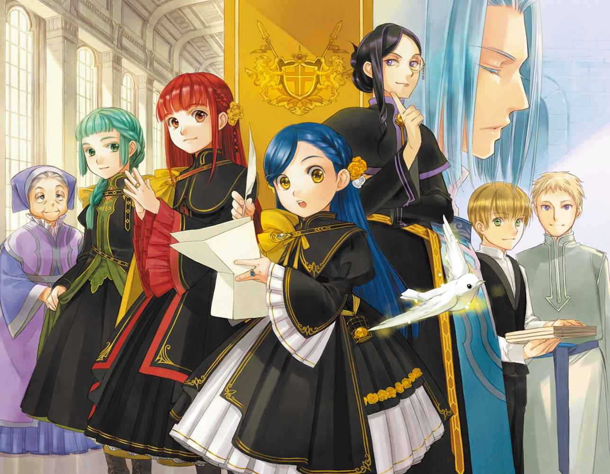
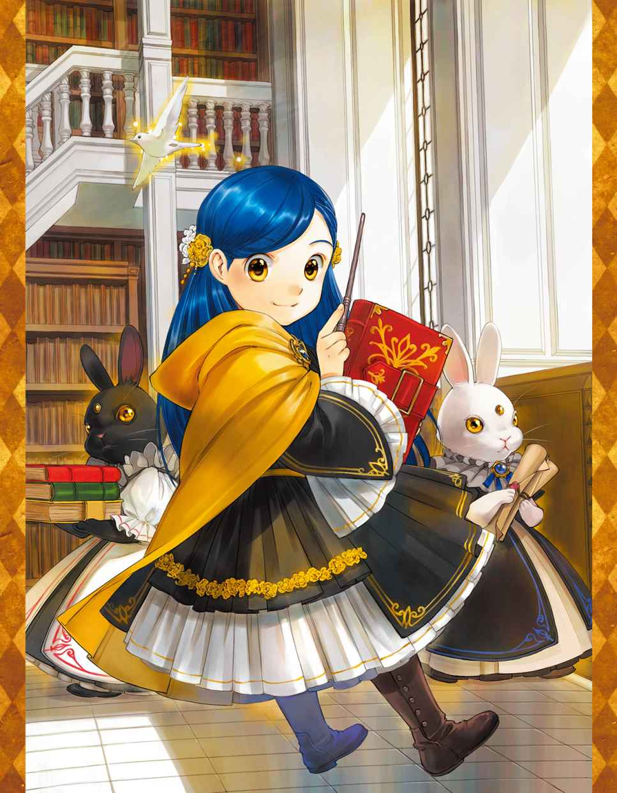
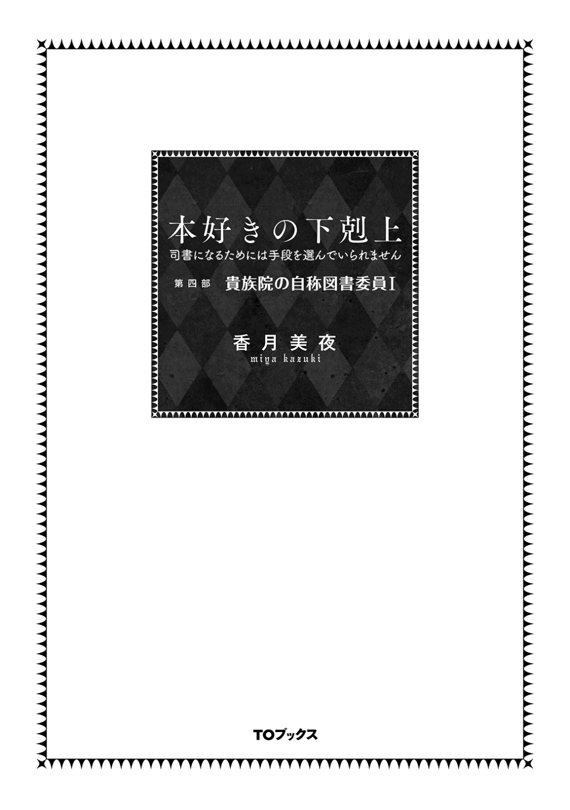
イラスト：椎名 優 You Shiina
デザイン：ヴェイア Veia
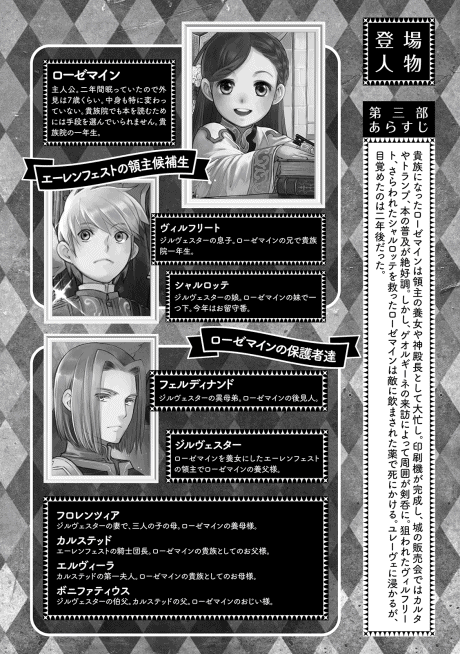
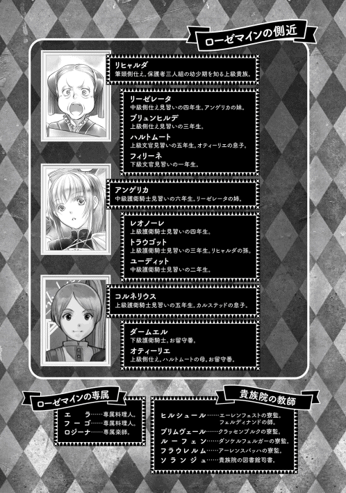
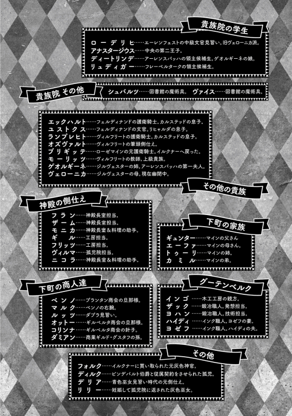
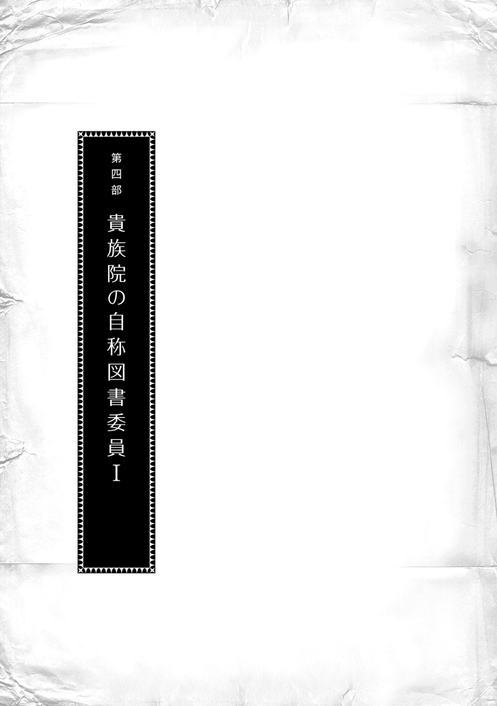
プロローグ
「神官長。さぁ、この二年間のお話を聞かせてくださいませ」
フェルディナンドが神殿長室に到着すると、ユレーヴェの汚れを落としてさっぱりしたローゼマインにじとりとした目で睨 まれた。金色の瞳と口調だけは元気そのものだが、二年間眠り続けていたせいでローゼマインの体は自分で支えるのが難しいほど弱っているようだ。長椅子に力なく横たわったまま動かない。
......これほど長くユレーヴェに浸 かっていた者の記録はなかったので、長期間のユレーヴェの使用で体がどの程度まで弱るのか貴重な資料になるかもしれぬ。
でろっと横たわっている体を見下ろし、彼が思案し始めたことに気付いたローゼマインは、「お話をするのでしょう？」と動きの鈍い指先で長椅子の座面をぺしぺと叩 いた。どうやらこれが今の彼女にとって精一杯の抗議らしい。
「......ここではできぬ話もある。あちらで良いか？」
城で起こった様々な出来事は神殿で大っぴらに話してはならないこともある。けれど、隠し部屋を示されたローゼマインは頷 くのではなく、一度目を伏せた。
「隠し部屋へ行くのは構いませんが、わたくし、まだ体に力が入らないのです」
「ふむ。目覚めてから全く感覚は変わらないのか？ それとも、少しずつ動く部分は増えているのか？ どのくらいで以前と同じように動けそうか、わかるか？」
フェルディナンドが思いつくままに質問すると、彼女は胡散臭 いほどににこやかな笑みを浮かべて「神官長は本当に『マッドサイエンティスト』ですね」と言った。彼はマッドサイエンティストがどういう意味なのか知らないが、悪態 を吐 かれていることだけは理解できたので、無言で彼女の額をビシッと弾 いた。
「あうちっ！」
ローゼマインが以前と同じ調子で叫んだけれど、いつもはすぐさま額を押さえる手がほとんど動いておらず、鈍くゆっくりとした重そうな動きで上がっていく。
......今がこの状態ならば、普通に動ける程度まで筋肉が回復するのに、どのくらいかかるだろうか。何が必要だ？
すぐに復活すればいいが、筋力をつけるのにあまり時間がかかるのでは貴族院に間に合わない可能性もある。無言で彼女の状態を観察し、薬や魔術具など、回復に使えそうな物を考えながら、フェルディナンドは隠し部屋の扉を開けた。
フランとザームにローゼマインごと長椅子を運ばせる。二人が去り、扉が閉まると、彼女の表情が見る見るうちに不満たっぷりのものへ変化していった。
「神官長、わたし、何だかとっても『浦島太郎』なんですけれど！」
「......何だ、それは？ 意味がわからぬ」
「隠し部屋から出る前は、眉間 の皺 まで全く変化のない神官長しかいなかったから、二年も経 ってる実感がなかったんです。でも、ニコラもモニカも成人して、髪を上げているし、スカートが長くなっているし、ギルがすごく大きくなってるし......」
実はシャルロッテとヴィルフリートにも置き去りにされている。フェルディナンドはそう思ったが、この場で明言するのを避けた。シャルロッテに尊敬される「お姉様」になるために、馬鹿みたいに努力していたローゼマインが、妹に身長を抜かれていることを知れば一体どうなるか、考えるのを避けたかったのだ。
......どうなるも何も、どうしようもないが......。
ハァ、とフェルディナンドが溜息 を吐いた瞬間、ローゼマインの魔力が不安定に揺れた気がした。興奮したように言葉を重ねて不安を訴える彼女の目の色が、見慣れた金色から油膜 がかかったような虹色へ変わっていく。
「わたし、完全に置いてきぼりを食らってるじゃないですか！ 周囲がわたしの知らない世界になっていて、気持ち悪いんです！」
「ローゼマイン、落ち着きなさい」
「無理ですって！ だって、周りが全然違うんですよ!? わたし以外、皆......」
「この二年の間に君の魔力の流れも変わっている。落ち着かねば暴走するぞ」
すでに魔力の揺らぎが見えている。こうなるだろうと予測はできていたのでフェルディナンドは腰の革袋に準備していた魔石を取り出し、ローゼマインの額に魔石を押し付けた。あっという間に魔力が溜 まり、いくつもの魔石が染まっていく。
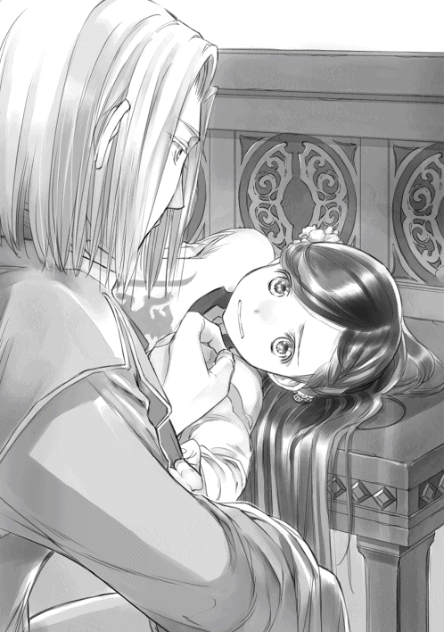
その様子を見たローゼマインは息を呑 んで目を見開いた。何度か瞬 きをし、ゆっくりと深呼吸をして息を整え始める。自力で感情を抑えると、力が入らず震えている手を伸ばして、ユレーヴェから起き上がった時と同じように彼の袖をつかんだ。
「......神官長、この二年間に何があったのか、ちゃんと教えてください。皆が変わりすぎてて、外に出るのが怖いです」
「何があったと言われても、さて、どこから話すか......」
「襲撃 犯は捕まったんですか？ シャルロッテは無事でしたか？」
フェルディナンドにとっては二年前に終わったことだが、ローゼマインにとってはつい先程の出来事なのだということに思い至る。それだけ感覚が違えば、二年間の空白を埋めるのは、予想以上に大変なことかもしれない。
シャルロッテの誘拐 犯がローゼマリーの親族で、すでに処刑されたこと。ただし、誘拐犯はローゼマインの誘拐や投薬には関与していないこと。誘拐犯に身食 いの兵士を提供したゲルラッハ子爵 が怪しいけれど、証拠もなく、襲撃があったと知らされた時に封鎖された大広間にいたこと。護衛騎士はそれぞれ間違った動きをしたわけではないが、主 を守れていなかったため、減給処分となったことを話す。
「護衛騎士が減給で済んでよかったです。冬の子供部屋はどうなりました？」
「シャルロッテとヴィルフリートが君の手紙の通りに運営しようと奮闘 していたと、子供部屋付きの側仕 えや、絵本の運搬と貸し出しを担当していたダームエルから報告があった。下級貴族のフィリーネがずいぶんと協力してくれたそうだ」
ずいぶんとローゼマインを慕 っているらしい下級貴族の名前は、ダームエルからもヴィルフリートからもシャルロッテからも出てきた。ローゼマインにとってもすぐに思い当たる名前だったようだ。不安そうだった表情に淡い笑顔が戻る。
「そうですか、フィリーネが......。たくさんお話を書いてくれたのでしょうか？」
「あぁ、おそらく。だが、子供部屋で集まったお話は子供の話し言葉で書かれていて、とても本にはできないと君の側仕え達が嘆 いていたぞ。少々役立たずだ」
フランとギルが困っていた様子を話せば、ローゼマインがクスと小さく笑った。
「あ！ ハッセはどうなりましたか？ ちゃんと祈念式 は行われましたか？」
「シャルロッテが、君の代わりをすると言ったので、ハッセでの祈念式を務めた」
正確には、フェルディナンドが命じたのだが、シャルロッテが「お姉様の代わりに」と言ったのは嘘 ではない。
「......シャルロッテの魔力は足りたのですか？」
心配そうな顔でそう言ったローゼマインを見て、彼はフンと鼻を鳴らした。
「足りるわけがなかろう。ユレーヴェに溶けている君の魔力で神事を行ったのだ。シャルロッテとヴィルフリートには収穫祭と今年の祈念式も手伝ってもらったので、礼を言っておくように。二人とも魔石の扱いに多少慣れてきたようだ」
「そうですか。......成長、しているんでしょうね」
彼女が目を伏せて、ひどく寂しそうに呟 いた。何と言えば慰 めになるのか、フェルディナンドにはわからない。だから、素っ気なく「二年経ったからな」と返す。
「......ですよね。下町の方はどうなりましたか？ ユレーヴェに浸かって二年も経っているなら、父さん達、すごく心配していると思うんですけど......」
今度は彼が目を伏せた。身分の変わった今でも、少しの繋 がりを大事にする家族だ。おそらく容態を見ていた自分より心配しているだろう、と彼は思う。
「君の家族がどうしているのかは、こちらに報告されていない。下町関係で報告があったのは、手押しポンプが少しずつ普及し始めたことだ。君の家族に関しては、工房を預かる側仕え達が何か知っているのではないか？」
「......後で、ギルやフリッツに聞いてみます。印刷業は停滞ですか？ イルクナーの紙作りはどうなったんでしょう？ せっかくいい調子で進んでいたのに......」
勝手な想像で不満そうにする彼女に、彼はイルクナーの様子を伝えてやる。
「え？ フォルクから子供の報告があったのですか!? 幸せになれたんですね」
収穫祭の様子を話せば、案の定、ローゼマインは自分のことのように喜んでいる。他人のことにここまで感情移入できることがフェルディナンドにとっては不思議で仕方がない。
「印刷業に関しては、停滞することを懸念 したエルヴィーラが、実家のハルデンツェルで印刷業を始めた。そのため、グーテンベルクが総動員され、今年の春から現地へ向かった。収穫祭後に戻ってきたようだ。つい先日ベンノから報告があった」
「え？ お、お母様が印刷業を？」
信じられないと言うように目を丸くするローゼマインに、フェルディナンドは深く頷いた。エルヴィーラは仕事に忙殺 されている彼の代わりに、母親として娘の指揮する印刷業を広げようと骨を折ってくれたのだ。彼女は上級貴族なので、当然のことながら、平民の商売のやり方には詳しくない。無茶振 りをされるベンノは大変そうだったが、彼自身は少し楽をさせてもらった。
「エルヴィーラの母心に感謝しなさい」
「もちろん、わたくしはお母様に感謝していますけれど......」
歯切れの悪い物言いで、何とも微妙 な表情になったローゼマインがフェルディナンドを見上げている。ほんの数秒の間に、何か言いたげな目をしていた彼女が軽く目を閉じ、考え込んで「......神官長、よく許可を出しましたね」と呟いた。
「正直、私は印刷業にまで手が回らなかったからな。エルヴィーラが代わりにしてくれるならば、それに越したことはなかった」
「わたくしのお仕事が全部神官長に流れましたものね。お疲れ様でした。では、印刷業の話は後でギルやプランタン商会に尋ねます」
彼が他人に印刷業を任せたことを非難することなく、彼女は当たり前の顔で労 いの言葉をかけて、「旧ヴェローニカ派は落ち着いたのですか？」と話題を変える。そのせいだろう。他の者には漏 らせなかった弱音が彼の口をついて出た。
「今のところ旧ヴェローニカ派に動きはない。ゲルラッハ子爵も尻尾 をつかまれないように巧妙 に逃げている。罠 を仕掛けてでも証拠を上げろ、と言われたが、目の前の仕事をこなすだけで私には精一杯だった。犯人は捕まっていない。すまぬ」
ローゼマインが抱え込んでいた仕事量は、子供に扱える量ではなかった。彼一人で背負い込める量でもなく、周囲にかなり分散しなければならなかったのだ。神殿関係だけでも頭を抱えたくなるような仕事量で、各種儀式、孤児院と工房の運営、プランタン商会とのやり取りが彼の仕事に加わった。それなのに、ローゼマインという計算係も、防波堤もなくなったのである。
彼が城に呼び出される回数は増え、ジルヴェスターだけではなく、ボニファティウスからも無茶を要求された。「犯人はゲルラッハ子爵に違いないから、適当な罠を準備してでも証拠を上げろ」とか「早くローゼマインを起こせ」などだ。
......ボニファティウス様が張り切らなければ多少はできたかもしれぬな。
彼の助手を務めることができるエックハルトや、「主の代わりに働け」と仕事を振り分けていたダームエルとブリギッテまで訓練に取られなければ動ける部分があったかもしれない。だが、彼が信用できる側近は少なく、尋問を受けて警戒しているゲルラッハ子爵に対して罠を張り、証拠を得る余裕など全くなかった。
「ゲオルギーネの再訪は防いだ。今のところ、領地としてはアーレンスバッハと全く交流を持たぬように心がけているので、あちらも動きようがないであろう。......ただ、そうだな。次の懸念はランプレヒトだ。騒動 の種になるかもしれぬ」
「ランプレヒト兄様が？」
フェルディナンドはここ二年間の動きを思い返して、眉間に皺を刻んだ。
ローゼマインが眠りについた二年前の冬の終わり、ランプレヒトは恋人の卒業を祝うため、貴族院の卒業式へ赴 いた。在学中は恋人よりもランプレヒトの方が魔力が低かったため、彼女の父親には難色を示されていたそうだが、ローゼマインから魔力圧縮のコツを教わったことで冬の間に少しだが魔力が増えた。
「それで、お相手のお父様が結婚を認めてくださったのですか？」
「そうだ。まだ増える余地があるならば悪くない、と言われたらしい。ランプレヒトは貴族院から戻ってきて、自分の父親であるカルステッドとジルヴェスターに結婚許可の申請を出した」
ほぅほぅ、とローゼマインの目が輝いて先を促 す。どうして女性がこのような他人の色恋の話を好むのか、フェルディナンドには全く理解できない。溜息を一つ吐いて、先を続ける。どうせローゼマインが喜ぶような話ではない。
「だが、ランプレヒトの恋人はアーレンスバッハの上級貴族だったため、申請は即座に却下 された。本人もエーレンフェストの情勢から却下されるのはわかっていたのだろう。やはり、と頷いただけで、すぐさま恋人に別れの手紙を送ったそうだ」
恋人同士で結婚したいと言っていても、親と領主の許可がなければ婚姻 は成立しない。貴族院の卒業式に共に出席するまでは個人の感情で許されても、その先には様々な制約がある。貴族である以上、婚姻に繋がらない恋愛は珍しくない。
「......ランプレヒト兄様はヴィルフリート兄様の護衛騎士ですからね。さすがにアーレンスバッハのお嬢様との婚姻は難しいでしょう」
ローゼマインはわずかに眉を寄せながら、納得の声を出す。
「本来ならば、申請が却下されて別れの手紙を送り、それで終わるはずだった。だが、ランプレヒトの恋人は領主の姪 だったようで、去年の春の領主会議でアウブ・アーレンスバッハから何故 申請を却下したのか、と問われたのだ」
「うわぁ......」
領主会議で問われたジルヴェスターは、ランプレヒトの他にもアーレンスバッハの娘との結婚を望む貴族がいること、今の貴族が少ない時世では力の強い子を産む上流貴族の娘を余所 に出したがる領主がいないこと、アーレンスバッハに比べて弱小なエーレンフェストではいくら結婚させてあげたくても婿 として男を出す余力もないこと、どちらか一方だけの婚姻を許可するような不平等なことはできないことなど、思いつく限りの理由を述べてアウブ・アーレンスバッハを退けたそうだ。
「だが、今年の領主会議でも絡んできそうだとは思っている。故に、貴族院に入ったらアーレンスバッハの情勢をよく探ってくるように」
「......はぁ。まぁ、できる限り努力します」
全く興味がなさそうな彼女の返事に、フェルディナンドはこめかみを押さえた。
「聞いているのか、ローゼマイン？」
「聞いてはいますけれど、領地間の問題で結婚できないことが確定しているランプレヒト兄様よりも、ブリギッテとダームエルの方が気になります」
「......君は家族である兄の結婚より、護衛騎士の結婚の方が気になるのか？」
「えぇ。一緒にいる時間が違いますから」
思わぬ言葉に彼はわずかに息を呑んだ。ヴィルフリートやシャルロッテにさえ心を砕いていたので、家族という枠組 みに入っていれば自動的に彼女の身内に入ると思っていた。だが、彼女の身内意識は血や家族という枠組みによるものではなく、自身との交流で優劣 がつくらしい。誰でも彼でも身内扱いし、どんどんと身内を増やす彼女の中で、身内に明確な区別があることに初めて気付かされた。予想外だ。
「神官長、ダームエルの求婚はどうなったのですか？」
「わくわくしているところ悪いが、あの二人の婚姻は成就 しなかった」
「なんでですか!? 両想いでしたよね!? 領地間の問題もないのに......」
彼女が驚愕 に目を見開くが、何故上手くいくと思ったのか。そちらの方が不思議だ。
「二人の希望が合わなかったからだ。どうにもならぬ」
「......両想いでも、上手くいかないなんてことがあるんですね」
「周囲の事情でどうにもならぬことなど、多々あるではないか。君は一度成人したことがあるのだから、そのくらいは知っているだろう？」
「本で読む分には色々ありましたけれど、その、わたしの周囲では両想いで上手くいかなかった人がいなかったのです」
あぁ、そうか、とフェルディナンドは納得した。彼女がいた世界は、似て非なる世界だ。様々な違いがあった。そういう方面でも色々と常識が違うのだろう。
「彼等 の婚姻が成立するためには二つの道があった。中級の土地持ち貴族の一族であるブリギッテが貴族街の下級貴族に身分を落とすか、下級貴族の次男であるダームエルが婚姻によって中級貴族に上がるか、どちらかだ」
「ダームエルが上がれば、全く問題ないですよね？ 身分も上がるし......」
気軽にそう言ったローゼマインは、全く貴族間のことを把握 していないようだ。
「それはダームエルが護衛騎士を辞 めて、イルクナーに入るということだ。普通の下級騎士ならば、それで良かっただろう。だが、ダームエルの立場は特殊だ。君の事情に通じすぎているし、君によって救われ、引き上げられたのだからな」
第三者はもちろん、求婚されたブリギッテさえ、ダームエルが平民時代の彼女の情報を持っていることは知らない。
「今すぐダームエルに辞めてもいいよって言えば、二人は結婚できるのですか？」
「もう遅い。ブリギッテはエルヴィーラに紹介された者とこの夏に結婚し、イルクナーに戻った」
「......急展開すぎですよ。信じられない」
二人を祝福するためならば、ローゼマインは自分の重要な情報を握っているダームエルを本気で解任してイルクナーに送り出すつもりだったらしい。彼女が目覚める前に危険の芽を摘 んだエルヴィーラの手腕に、彼は内心で拍手を送る。
人の生死ですぐに不安定になる彼女に言うつもりはないが、仮に、ダームエルがイルクナーへ行くことを決めていたら、彼には不慮 の死が訪れただろう。情報漏れを確実に防ぐことが、下級貴族の命よりエーレンフェストにとっては大事なのだ。
「そういえば、君の専属料理人からも結婚の許可を求める申請があった。こちらもまた主である君でなければ許可が出せぬ。保留にしてあるので、もう終わった二人のことよりも、こちらの処理を先にしなさい」
「......とうとうフーゴにも春がやってきたのですね」
笑おうとして失敗したような顔でローゼマインが「おめでたいです」と呟いた。先程の「周囲が変わりすぎて怖い」と言っていた時と同じ顔だ。
「孤児院や工房に関しては君の側仕えの方が詳しいだろう。そちらの報告は側仕えに任せた方がよくわかると思われる」
「......はい」
明らかな緊張を見せて強張 った彼女の顔に、どうしたものか、と彼はしばし悩んだ。ユレーヴェを使った者を何人も知っているが、十日から季節一つ分の期間だった。何年も眠っていた者を知らない。何より、ずっと経過観察をしていた彼から見れば、ローゼマインに変化がないので、周囲の変化に戸惑 う彼女の気持ちがわからない。むしろ、いつ起きるのか、本当に目覚めるのか、とずっと心配していた側仕えや周囲の者の心情に彼は共感を覚える。
「ローゼマイン、何を恐れているのか知らぬが、君の側仕えは皆、君が目覚めるのを待っていた。君が残した指示に従って、神殿長室、孤児院、工房を切り盛りしてくれていたのだ。君が目覚めたら喜んでもらえるように、と新しい本を作り、努力を重ねていた。彼等の成長を恐れるのではなく、労ってやりなさい」
歯切れ良く「はい」と返事をしながら、ローゼマインはへらっと笑った。フェルディナンドが知るいつも通りの彼女の姿に、そっと安堵 の息を吐いた。
浦島太郎なわたし
ユレーヴェから出てきたわたしは、まるで浦島太郎だった。隠し部屋の中にいたフェルディナンドが全く変化していなかったので、起きた時には九歳がなくなったことを嘆いただけで済んだ。
けれど、フェルディナンドに抱き上げられて隠し部屋から出れば、ニコラやモニカは成人していて髪を上げているし、胸が目立っているし、スカート丈も長くなっている。ギルなんて成長期なのか、わたしの記憶ではついさっきまでフランの胸くらいの身長だったのに、頭がフランの肩を超えている。おまけに、声が別人のように低くなっていた。
......二年近く寝てたみたいだけど、わたしの感覚ではたった一晩なのに、起きたら周囲が一瞬で成長しているなんて、正直、怖くて気味が悪いよ。
皆が成長していても自分だけ成長どころか退化している。二年間で筋力が落ちているようで、碌 に体を動かすこともできない。自分が思うように動けない中、知っているけれど知らない人達に裸にされて、完全介護状態でお風呂に入れてもらうのだ。言葉にならない恐怖と不安を感じても、「自分でやる」とも「止 めてほしい」とも言えない。口を噤 み、手を開いたり閉じたりしたり、足を動かそうと力を入れたりしてみる。動かない体を少しずつ動かしながら、わたしは知っているのに知らない周囲に向けて笑顔を貼り付けつつ、内心ものすごくおびえていた。
隠し部屋でフェルディナンドから寝ている間に起こった出来事をダイジェストで説明され、皆がどれほど心配して目覚めを待ってくれていたのかを聞いて、今はちょっと落ち着いた。それでも、やっぱり何ともできない時間の流れを目 の当たりにすると自分の前に越えられない壁があるような気がしてしまう。今の時間に慣れるためにも、わたしは少しでも早く日常を取り戻したい。
「明日からはなるべく復帰しますね！ この体が何とかなれば、の話ですけれど」
わたしがそう言うと、フェルディナンドは何か思いついたように立ち上がった。
「魔術具を取ってきたいのだが、ここで待つか？ それとも、一度出るか？」
「......ここで待っているので、そこの本を一冊取ってください」
ギルが積み上げてくれていた本を視線だけで示すと、フェルディナンドは一番上の本を手に取った。わたしのお腹 の上に置くと、そのまま踵 を返して出て行く。
「新しい本だ。うふふん」
わたしはゆっくりと手を動かして、お腹の上の本に触れた。新しい本の感触に頬 が緩 んでいく。さぁ、読むぞ、と気合いを入れて、わたしは手を動かした。力が入らない震える手で必死にページを開こうとするが、その行為がなかなかできない。紙を一枚摘まんで開く、それだけのことがものすごく難しい。
「あ......」
本を押さえている手にも力を入れておくことができなくて、本がするりと滑り、バサリと音を立てて床に落ちてしまった。拾おうと手を伸ばしたが、長椅子の座面からだらりと落ちた自分の腕さえ、今のわたしには重すぎた。言わずもがなだが、本を拾い上げるなんてできるわけがない。
......本も読めないくらい弱ってるなんて。
二年間も犠牲 にしたのに、全然健康になった気がしない。体は全く成長していなくて、筋力が減って、魔力が増えるなんて、あんまりだ。周りに心配をかけないように笑顔を作るのも無駄な気がして、力を抜いた瞬間、ボロッと涙が零 れてくる。
「待たせたな......。何故泣いている？」
「本が、読めません。手が動かなくて、自分でページが開けないんです。もう嫌だ」
ハァ、と溜息を吐いたフェルディナンドが、わたしの左手をつかんだかと思うと、わたしの二の腕に装飾的な腕輪をはめた。魔術具の腕輪はシュンと形を変えて、ぴったりと二の腕について、すぅっと魔力を吸い取っていく。
「神官長、いきなり何を......あれ？ 腕が動く？」
「身体強化の魔術を補助するための魔術具だ。昔、私が身体強化のコツをつかむまで使っていた。今の君は魔力が有り余っているからな。これで普通に動く程度のことはできるようになるだろう。そちらの腕も出しなさい」
魔術具を両腕にはめると、上半身が楽に動かせるようになった。これはすごい。ぐるんぐるんと腕を回してみる。
「これで本が読めますね！」
「......もっと他のことに感動してくれないか？」
「え？ 最上級の感動と尊敬が籠 っていますよ？」
処置なし、というように軽く頭を振ったフェルディナンドが「これを後で足にはめろ」とわたしの手に二つの輪をのせた。わたしはそれを受け取って、首を傾 げる。
「今、はめればいいんじゃないですか？」
「直接肌に触れていなければ意味がないのだ。君はここで足を露出 するつもりか？ はしたないにもほどがある。君に露出趣味があるかどうかはどうでも良いが、せめて、私がいないところでしてくれ。妙な巻き添えを食らうのは御免 だ」
わたしは腰に巻いた布のベルトに紐 で結んで吊り下げるような靴下をはいている。ちゃちで色気の欠片 もないガーターのようなものだ。その上から、ドロワーズのような下着を付けている。
つまり、肌に触れる状態で輪を付けようと思ったら、下着を脱いで太腿 に付けなければならない。自力で足を動かすことが困難なわたしが「今はめる」と言うのは、「下着を脱がせろ」と言っているも同然ということだ。
「露出趣味って何ですか!? 断じてそんなものありませんよ！ 足首に引っかければいいのかと思ったんです。肌に触れる必要があるって言わなかった神官長が説明不足なんですよ。太腿にはめるなら、モニカとニコラを呼んでください」
フェルディナンドに隠し部屋を出てもらって、代わりにモニカとニコラを入れてもらう。二人に服を脱がせてもらって、太腿に輪をはめてもらった。ブランブランと足を振ってみれば、思ったように動く。先程まで緩慢 にしか動かなかった足が自由に動く様子に、二人が目を丸くした。
「動けないわたくしのために神官長が貸してくださったのです。立ってみますから、二人とも手を貸してもらっていいかしら？」
「もちろんです」
力を入れると、自分で思ったように立てる。二人の手を離して、わたしは一人で歩いてくるっと回ってビシッとポーズを決めた。
「わたくし、やっと元気になれた気がします」
「......神官長の魔術具はすごいですね」
「ローゼマイン様のお顔に笑顔が戻って、わたくし、嬉 しいです」
ニコラが安心したように笑ってそう言った。お風呂の中でわたしが頑張って貼り付けていた笑顔が作り笑顔だと見抜かれていたらしい。
「心配かけてごめんなさいね、二人とも」
わたしは自分の足で歩いて隠し部屋を出る。自分の思うように自分の体が動くのがこれほど快感だとは思わなかった。健康のありがたさを実感しながら、わたしは軽い足取りで扉へ駆け寄って、勢いよく開ける。
「神官長のおかげで自分で動けるようになりました。ありがとう存じます」
フラン達側仕え達が目を丸くしてわたしを見た後、ホッとしたように破顔 した。その向こうでフェルディナンドが、当然だ、というように頷く。
「ローゼマイン、三日後には城に移動だ。その後は貴族院に向かうために必要な詰め込み講義をこなし、冬の社交界にそのまま入ることになる」
「貴族院って......こんな状態でも行かなきゃいけないところなんですか？ 今から詰め込み講義をこなさなくても、一年入学を遅らせることはできませんか？」
たとえ魔術具がなければ動けない病人でも、領主の養女として相応 しい成績を残せとか、このくらいはできて当然だと、フェルディナンドは欠片も容赦 しないだろう。熱血指導が襲いかかってくることを予想して、わたしは顔をしかめた。
......何を言われても絶対に貴族院を回避してやる！ 熱血教育は嫌だよ！
「貴族院を卒業しなければ貴族としては認められぬ。一年遅れて入ると、貴族として認められるのが一年延びる。貴族は卒業式と成人式を同時に行うため、たとえ十五歳を過ぎても貴族社会では成人と認められない。婚姻、仕事、全てに差し支え、貴族としての弱点が更 に増えることになる」
「うーん......。わたしの場合、実年齢から一年ずれて始まった貴族生活ですし、神殿育ちとか、虚弱 とか、すでに弱点はあるので一年くらい遅れてもいいですよ。一年成人が遅れたら、一年長く神殿にいられるってことですよね？」
急いで貴族院へ行く必要性が全く感じられない。成人を遅らせた方が下町と長く関われそうだ。わたしがそう言うと、フェルディナンドが思案顔になった。
「十歳は貴族院へ行く年だ。私としては、冬の間ずっと貴族達から好奇の目を向けられて、一年遅れで領主の子として大丈夫なのかと質問攻めにされるよりは、貴族院にいる方が心の平穏が得られると思う」
「面倒くさい貴族がいたとしても、奉納式 や冬の主の討伐 もあるし、神殿で療養 中ということにすれば、顔を合わせる貴族はほとんどいなくなると思いますよ」
わたしが反論すると、フェルディナンドは「ふむ」と頷いた。しかし、思案顔のままだ。上手く攻撃を避けたけれど、回避は失敗。まだ貴族院へ行かせるつもりらしい。わたしは負けるものか、と戦闘態勢で次の攻撃を待つ。
「だが、一年遅れたらシャルロッテと君は同学年だ。二年眠っている間に見た目だけではなく、学年まで並んでは姉らしい点が全くなくなるとは思わぬか？」
......んあっ!? 一年休んだらシャルロッテと同学年になっちゃう!?
それは由々 しき事態だ。ぐらんと心が揺れた。それを見透かしたようにフェルディナンドが唇 の端を上げた。
「シャルロッテは自分のせいで君が長い眠りについたことを、ひどく気に病んでいた。姉であった君が自分と同学年になれば、貴族院へ向かう度 に彼女は自分の行動を悔やむであろう。そんなシャルロッテを君こそ気に病むのではないか？」
可愛 い妹を助けたくて飛び出したのはわたしなのに、シャルロッテが気に病んで落ち込むのは困る。嫌だ。そういう心情を把握されていることが腹立たしい。
「シャルロッテの洗礼式前の詰め込みほどではない。魔術具で体が動くようになったのだ。たとえ二年の空白があっても、君ならば尊敬される姉に戻れるはずだ」
「......わかりました。やりますよ。シャルロッテのお姉様として」
「よろしい。では、城への移動は三日後だ。プランタン商会と面会するならば、早目に済ませておきなさい」
話は済んだ、とフェルディナンドは隠し部屋の扉を開ける。わたしの完全敗北だ。貴族間のあれこれはどうでもいいが、シャルロッテのお姉様として貴族院へ行かなければならない。
「ローゼマイン様、お休みの間に起こったことについて、順番に報告させていただいてよろしいですか？」
「はい、お願いします」
フランの言葉に顔を上げると、わたしの側仕えが勢揃 いしていた。神殿長室を預かってくれていたフランとザームとモニカが並び、ニコラはこの二年間厨房 への出入りの方が多かったため、厨房に関する報告をするために一人別枠でいる。孤児院に関する報告はヴィルマとロジーナだ。ヴィルマはいつの間にか貴族区域に出入りできるようになっていたようで、報告の順番を待って並んでいる。最後に工房関係の報告のため、ギルとフリッツがいた。
「神殿長室では特に大きな出来事はありませんでした。神官長の補佐のため、私とザームとモニカは毎日神官長室に詰めておりました。祈念式や収穫祭ではローゼマイン様の代わりにシャルロッテ様とヴィルフリート様が直轄地 を回ってくださいました。一年目は少々不安のある扱いでしたが、二年目には見事に神具を扱って、祝福を与えてくださいました」
「そう、二人にはお礼を言わなくてはね」
「お二人が出発や到着のために神殿へ足を運んだことで、青色神官の意識にも少々変化が見られます。顔繋ぎのため、真面目 に仕事をしようとする者が出てきました」
現金といえば現金だが、多少なりともやる気を出してくれるならば良いだろう。
「我々が一番心配したのは、神官長の薬の量です。以前と同じように薬を常用するようになっています。また、ローゼマイン様から一言注意してください。我々の意見は聞き流されますから」
フランの心配そうな言葉にわたしは一応頷いておく。薬を常用していたフェルディナンドをして、目の前の仕事を片付けるだけで精一杯と言わしめた仕事量だ。側仕えに注意されたところで、薬を手放せなかったに違いない。
「神官長がお薬を飲まなくても良いように、わたくしがお仕事を手伝わなければなりませんね」
フランが報告を終えると、次はニコラが木札を持って、報告を始める。
「ローゼマイン様のおかげで、わたしは料理助手として二年間修業することができました。ローゼマイン様の残してくださったレシピは全て作れるようになりました。そして、フーゴとイルゼの間で料理対決があり、新しいレシピも増えています」
......料理対決？ 何それ、面白そう！
「新しいレシピも楽しみだけれど、勝敗はどうなったのですか？」
「今は一勝一敗で引き分けです」
「次がどうなるのか、楽しみですわね」
「それから、フーゴとエラが結婚の申請をしています。ローゼマイン様がお目覚めになったら、一番に尋ねてほしい、とフーゴに言われております」
......なんと!? フーゴの相手はエラだったんだ!?
「貴族の女性は結婚すると仕事を辞めるそうですが、エラは続けることを希望しています。できれば、そこにもご配慮いただけると嬉しいです」
「結婚の後も働いてくれるのは嬉しいわ。......でも、お部屋の準備はどうしようかしら？ 神官長にも尋ねてみますが、次の夏には結婚できるように手配しましょう」
「わぁ、フーゴが喜びます。ありがとう存じます」
レシピ本が完成したことを告げて、ニコラは報告を終えた。ニコラが下がると、次はヴィルマとロジーナが進み出てきた。
「では、孤児院からの報告です。ローゼマイン様がお休みされていた二年間で孤児が三人増えております。そのうち二人は門の前に捨てられていた捨て子で、もう一人はエグモント様の側仕えをしていた灰色巫女 リリーが産んだ子です」
エグモントと言えば、わたしの図書室を荒らした要注意人物だったはずだ。
......今度は側仕えを孕 ませて、子供は孤児院？ え？ ちょっと待って。これってここの普通？ わたし、怒っていいの？ どっち？
すぐに反応ができなかったわたしは、エグモントの行為の善悪について考えるのは、余所に置いておくことにした。
「......えーと、ここで出産が行われたということですか？」
「いえ、誰も出産についての知識がないため、ここでは対処できませんでした。トゥーリやプランタン商会に相談した結果、灰色巫女をハッセの小神殿へと移動させ、ハッセの住人に手伝ってもらうことになったのです」
フェルディナンドは勝手に生まれるだろう、としか言わなかったらしい。そんなものか、と思いつつ、どうにも不安だったヴィルマはトゥーリとルッツに相談したそうだ。そうしたら、二人に、そんなわけないだろう、と無知を指摘されたらしい。二人ともグッジョブだ。
孤児院には二十人くらいの女性がいるけれど、誰一人として出産を手伝った経験がない。そのため、ベンノの指示でハッセの小神殿へリリーと灰色巫女を移動させたそうだ。出産を手伝ったことがあるノーラを先頭に、ハッセの女性を呼んで出産が行われたらしい。その時に「孤児院の責任者が知らなくてどうする!? 」とベンノに叱 られ、ヴィルマも数人の灰色巫女と一緒にハッセへ連れ出されたそうだ。
「それは......ヴィルマには大変だったでしょう？ あの、大丈夫なの？」
ベンノの剣幕 で叱られるだけでも、男性恐怖症だったヴィルマには相当の恐怖体験だったに違いない。トラウマにトラウマを重ねる様子しか思い浮かばない。
「......確かにとても大変でしたが、得難 い経験でした。今は母子ともにこちらの孤児院の一室で過ごしております。ディルクの時の経験を活 かして、交代しながら面倒を見ています」
「ディルクはどうかしら？ 魔力の吸収は行っている？」
「はい。兆候 が見えたら、すぐにフランを通して神官長に相談しました。直 ちに対応してくださったので、ディルクは特に問題なく過ごしております」
魔力が増えすぎると危険なディルクも元気なようで何よりである。
「孤児院での音楽教育も順調です。一通りフェシュピールを触らせた後、興味がある子だけに教育を施 しました。わたくしが見たところ、楽師になれそうな者は一人だけです。ですが、あまり練習が好きではないようなので、伸びないと思われます」
お披露目 がある貴族と違って、孤児院での音楽教育は義務ではない。才能ややる気のある子を探そうというだけの話だ。才能があっても努力できない者や音楽に興味がない者もいる。本人にやる気がないならば、それまでの話だ。
「ですが、絵師になれそうな子はいました。絵を描くのが好きで、ヴィルマの絵を真似て、石板に暇を見つけては絵を描いています」
「そう。石筆 を買い足しても良いので、そのまま続けさせてあげてくださいね」
「かしこまりました」
ロジーナは孤児院で子供達の教育という仕事を真面目にしてくれたようだ。そのようなことは専属楽師の仕事ではございません、と断られたらどうしようかと思っていたが、心配は必要なかったようで、ホッとした。
「工房の報告です」
背が高くなって声が低くなり、目を見張るほど大人に近付いたギルが、二年間の報告をしてくれる。印刷できる原稿がなくなり、トゥーリに本を借りたらしい。その代わりに、トゥーリとルッツに行儀作法を孤児院で教えたそうだ。
「二人とも中級貴族の前に出られる程度には作法が身に付いたと思われます」
ルッツに教えていたフリッツの言葉に、トゥーリに教えていたヴィルマも頷いた。
「とても向上心があって、努力していました。二人が孤児院へ定期的に通って、ディルクの子育て相談やリリーの出産に関する助言やお手伝いをしてくれたおかげで、とても助かったのです」
「では、二人にはわたくしからもお礼をしなければなりませんね」
わたしの言葉にギルが「トゥーリが行儀作法に関する本を作ればどうか、と提案してくれたので、去年の冬に印刷してみました。貴族との挨拶についてまとめた本が富豪に売れています。そちらに関してもお礼をしてください」と付け加えた。
......トゥーリは本当に天使かもしれない。
わたしが書いた騎士物語をまとめた本が一冊、トゥーリに渡した「母さんの物語集」が一冊、ニコラがまとめてヴィルマが絵を付けたレシピ本が一冊、トゥーリの発案で側仕えがまとめたマナー本二冊、計五冊が商品として増えているそうだ。
「これらに加えて、エルヴィーラ様からお預かりした原稿も印刷したのですが、これは期限がギリギリの中、必要数ピッタリを刷ったので、本は残せませんでした。失敗した物も全て引き取るとエルヴィーラ様からの注意があり、原本、完成品、失敗作、どれ一つとして工房にはありません」
わずかにギルの視線が泳いでいる時点で内容の見当がついた。それは置いておけないだろう。ちらっとでも見つかろうものならば、怒り狂ったフェルディナンドに印刷工房を全力で潰 されそうだ。
......お母様、そんなにフェルディナンド様本が欲しかったんですか。
それに加えて、ギルからはハルデンツェルでの活動報告も受けた。グーテンベルクの大移動が行われ、植物紙協会や印刷協会の支部を作り、利益やそれぞれの取り分について決め、ギーベ・ハルデンツェルが準備した工房へグーテンベルクを送り込んで技術供与していたらしい。
「印刷機を作る金属関係の部品はエーレンフェストから持ち込みました。設備が違うと、全く同じにできるかどうかわからないとヨハンが言ったためです。あちらで作り方を教えることになったのですが、設備はともかく技術が足りなくて......」
「......そうでしょうね」
わたしが次々と細かい注文ばかりするせいで、ヨハンの技術はどんどん上がっている。他の追随 を許さないレベルだ。
「冬の間に金属活字に挑戦するので、出来を確認してほしいと言われています」
「そう。ギルも遠いところへの出張、大変だったわね」
「いえ、印刷業を広げるためですから」
ニッと笑った顔は幼い頃の面影が色濃くて、わたしも思わず笑ってしまった。
「わたくしの留守の間も皆がそれぞれ頑張ってくれたことがよくわかりました。ありがとう。さすがわたくしの側仕えですね」
報告を終え、皆を労うと、フランはいくつもの木札と共にわたしを寝台に入れた。
「ローゼマイン様、本日は神官長よりこちらを預かっております。これを読みながら、体を休めてください。くれぐれも無理はしないように、とのことです」
「でも、わたくし、手紙を......」
「ご安心ください。プランタン商会にもギルベルタ商会にも連絡は入れておきます。面会の手はずを整えるくらいは我々に任せ、今はお休みください。三日後には城へ行き、貴族院に向かうまでの詰め込み学習が始まるそうですから」
フランの言葉にわたしは頷いて、ベッドで寝転がりながら木札に目を通す。フェルディナンドが準備してくれた木札は、貴族院に入学するまでにこなしておかなければならない優先度順に並べられた一覧表だった。
国の地理や歴史、魔力や経済力などによる領地の影響力の順位、在学中の王族の名前や領主候補生の名前などを本や資料を読んで覚えこむのが最優先であった。これはいい。しばらく本を読み放題のようだ。
......うふふん、ふふん、読む本がいっぱいありそう。......ん？ 何、この奉納舞 の練習って？ それに、おじい様と体力増強特訓？ え？ わたし、貴族院に行く前に死なない？
フランはすぐに面会の手はずを整えてくれた。次の日の午後が面会予定だ。そのため、午前中は神殿でのいつも通りのスケジュールをこなすことになった。
わたしが目を覚ましたことで、二の鐘が鳴るとすぐにダームエルも護衛騎士の仕事のために神殿へやってきた。少年っぽい雰囲気は完全になくなり、ダームエルも大人の顔になっている。疲労が濃い顔をしているのは失恋したせいだろうか、と思ったが、正解はボニファティウスにしごかれていたせいらしい。
「二度とローゼマイン様を危険な目に遭 わせないよう、領主一族の護衛騎士を鍛 えるとおっしゃって、鍛錬 の毎日でした。アンゲリカもコルネリウスも驚くほど強くなっています」
「そうですか。少し城に行くのが楽しみになりました」
朝食後、わたしはロジーナとフェシュピールの練習をしたのだが、指が錆 び付いたように動かなくなっていることに驚いた。
「三日、練習をしなければ、音に変化がありますもの。二年も寝ていらっしゃったのですから仕方ありません。ですが、ローゼマイン様は御自身の感覚ではつい先日まで練習していたせいでしょうか？ 勘を取り戻すのが、お早いです」
「......貴族院に向かうのに、恥をかくのではないかしら？」
わたしのレベルは八歳で止まっている。さすがに十歳までみっちり練習した貴族達が集 う場に向かうには練習不足にも程があるだろう。
「ご心配には及びません。このまま練習を続ければ大丈夫です。神官長のご方針で難易度をどんどんと上げて練習していましたから、指の動きさえ戻れば、恥をかくようなことはございません」
それでも、何とか及第 点というレベルだろう。こういう実技系は空白を埋めるのが難しいので、ひたすら練習するしかない。
三の鐘の後は神官長室でお手伝いだ。わたしがフラン達とお手伝いに行くと、フェルディナンドの側仕えに涙を流して喜ばれ、いかに体に悪い仕事量を抱え込んでいたのか、切々と訴えられた。
「わたくし、貴族院へ行くので、お手伝いは今日と明日だけなのですけれど......」
「城からの呼び出しが少し減るだけでも十分です。心強さが違います」
......ふんぬぅ！ 養父様 め！
とりあえずフェルディナンドを少しでも楽にしてあげるために、ひたすら計算したら、「大変結構」と非常に満足そうな顔で疲労回復の薬をくれた。
「ありがとう存じます」
ものすごく微妙な気分だが、味が改良された回復薬の半分はフェルディナンドなりの優しさと気遣 いでできている。喜んでおかなければならない場面なのだ。
昼食を終えたら孤児院と工房の見回りをして、元気になった報告と皆よく頑張ったねという労いの言葉をかけて回る。お伴 はギルとダームエルで、モニカとニコラは先に孤児院長室へ行って、準備をしてくれているのだ。
孤児院でも色々と変化があった。見習いだった子達が何人も成人していて、わたしとあまり変わらないくらいの大きさだった子達が見習いとなっていた。洗礼前の子供はディルクとよちよち歩きの赤ちゃんが三人である。元々綺麗 な顔立ちをしていたデリアは完全に美少女になっていたし、ディルクは赤ちゃんの面影などない幼児になっていた。
......カミルもこれくらいになっているんだろうな。
これから頑張って成長しなければ、わたしはカミルやディルクに身長を抜かれるかもしれない。そんな危険性をひしひしと感じた。
「ローゼマイン様、プランタン商会がお着きになりました」
孤児院長室でわたしがギルからもらった工房の収支を記した書類に目を通していると、フランが到着を伝えてくれた。二階へ上がってきたのは、ベンノ、マルク、ルッツの三人だ。ギルほどではないが、ルッツの背も伸びていて、フランの肩くらいになっている。忙しい職場で揉 まれているせいか、顔付きがキリッとして、できる男の雰囲気に近付いている気がした。
真面目くさった長い挨拶を終えると、わたしは隠し部屋へ向かう。わたしとプランタン商会の面々に、ギルとダームエルでいつも通りのメンバーだ。パタリと扉が閉まったことを確認すると、わたしはとりあえずルッツに飛びついた。
「ルッツ、大きくなったねぇ！」
どーん、と飛びついて抱きつくと、肩の辺りだったわたしの頭がルッツの胸元からみぞおちくらいになっていた。前は十五センチくらいだった差が、三十センチくらいになっている。何だか気分がずーんと落ち込んだ。そこにベンノが近付いてきて、ルッツにしがみついたままのわたしの頭を軽くポンポンと叩き、首を傾げた。
「......ローゼマイン、お前、縮んでないか？」
「変わってないけど、縮んでないもん。ひどいよ、ベンノさん。わたしだって好きでこんな状態でいるわけじゃないのに......」
そう言っているうちに、だーっと堰 を切ったように涙が溢 れてきた。思うままの感情を出しても許される場だからだろうか、止めようにも止まらない。
「あ〜、悪い。誰かに何か言われた後か？ それとも、泣くに泣けなかったか？」
後の言葉がストンと自分の中に落ちてきた。
「神官長に、魔力が暴走するから感情を乱すなって言われたけれど、わたし、感情のままに泣きたかったみたい」
「魔力が暴走するのはヤバいだろ!? 」
「今は身体強化を補助するための魔術具を四つも付けてるから平気だもん」
「だったら、思い切り泣いておけ。どうせ泣けるところなんてないんだろ？」
ベンノがわたしの頭をぐしゃぐしゃと掻 き回してから離れていく。ルッツも小さく笑いながら、わたしの背中をポンポンと軽く叩いた。
「よしよし、泣け、泣け。オレは正直お前が変わってなくて安心した。いきなり別人みたいになっていたらどうしようかって、前にトゥーリと話していたからな」
「うぅ〜、ルッツ〜」
気が済むまで泣け、と泣くことを許されて気が抜けた。ルッツにしがみつくと、自分でもびっくりするくらい涙が出てきた。
しばらく泣くと気が済んだのか、すうっと涙が止まる。ずっと抱え込んでいたもやもやが涙と一緒に流れていったようにすっきりした気分だ。わたしは顔を上げて、記憶にあるより上にあるルッツの顔を見上げた。わたしを見下ろすルッツの翡翠 のような目は変わっていなくてホッとした。
「ルッツ、抱きついた感触が前と全然違うね。なんか硬くてごつごつしてるよ。ギルもルッツも大きくなりすぎ。しかも、二人ともすごくカッコよくなった。ギルなんて声も違うじゃない。そんでもって、ベンノさんは老 けた」
「くぉら！ お前、今、何て言った!? 」
ルッツを盾 にしたわたしが、んべっ、と舌を出して、ふふん、と笑えば、ひくっと頬を引きつらせたベンノがわたしの頭をぐりぐりする。
「ぎゃー！ 痛い痛いっ！」
「俺達の苦労を知らんお前にはこれくらいで丁度いい」
「うわーん！ 今日はその苦労話を聞くための場じゃないですか！」
「だったら、聞け！ ガッツリ教えてやる」
ベンノの言葉に促され、わたしは座った。ルッツの膝 の上に。正面に座ったベンノが「おい、ローゼマイン」と苦い顔でわたしを睨んだ。
「わたし、まだルッツ分の補充 が足りないから、これでいいんです。これから、お城に行って二年分の勉強を大急ぎで詰め込んで、貴族ばっかりが集まる学校に行かなきゃいけないんだから、たっぷり補充しておかなきゃ」
「あぁ、そうか。もう勝手にしろ。こっちは報告させてもらう」
ベンノからの報告で、わたしはハルデンツェルでの印刷業の進度や状況を知った。製紙業だけを教えたイルクナーと違って、金属活字の作り方を含めた印刷業を教えるには一度で足りず、次の春にもハルデンツェルへ行って確認すべきことが数点あるそうだ。わたしの許可が必要で止まっている事柄もいくつかあった。
「じゃあ、春になったら騎獣 でぱぱーっと行って、ぱぱーっと片付けましょう」
「......ぱぱーっと、な。そう願いたいものだ。とりあえず、お前が目覚めてホッとした。きっちりと周囲の手綱 を握っていてくれ。上級貴族がずらりと並ぶ中で、神官長に同情めいた視線を受けながらの商談なんぞ、もう十分だ」
自分の印刷工房を作るのだ、と意気込むエルヴィーラと、本当に利益に繋がるのか、と疑ってかかるハルデンツェルの貴族達に囲まれたベンノを思い浮かべて、そっと視線を逸 らした。
「あ〜、それはもう、何と言っていいか......お疲れ様でした」
どうしても冬の社交界に必要だから、とエルヴィーラから超特急で印刷させられたという苦労話を聞いた後、わたしはルッツに家族への手紙を差し出した。
「どうするかな？ オレ、去年の夏からもうプランタン商会に住んでるし、トゥーリだってギルベルタ商会に住んでるからさ」
「え？ あ、そっか。トゥーリもダプラだから......」
トゥーリが十歳になった時は、プランタン商会とギルベルタ商会が分かれ、引っ越しで店の中がバタバタしていたので、すぐにギルベルタ商会には住めなかった。ベンノ達がプランタン商会の二階に住まいを移し、三階に住んでいたコリンナとオットーが二階に移動してから、トゥーリの部屋が準備されたそうだ。
「ルッツが家まで直接持って行った方が良い。手紙はお前が保管しておけ」
「わかりました、旦那 様」
家族へ手紙を渡してもらう算段をつけ、冬の間は貴族院へ行くので会えないことを伝える。ベンノからハルデンツェルの印刷業について貴族達と話をしておくようにと言われて、プランタン商会との話し合いは終わった。
「ギル、屈 んで。とっても頑張ってくれたから、撫 でてあげる」
さぁ、と手を伸ばすと、ギルが驚いたように目を見張った。
「ローゼマイン様、私はもうそういう年ではないのですが......」
「えぇ!? あ、あぁ、そうか。そうだよね」
ものすごく困った顔でギルに断られて、わたしは伸ばした手を引っ込める。見た目は変わっても、中身はあまり変わっていないと思っていたわたしは、ギルが成人前の十四歳で思春期真っ盛りであることを思い出した。
......頭撫でられて喜ぶギルがいなくなっちゃったよ。何だかちょっと寂しいな。二年も経てば外見だけじゃなくて中身も変わるってことだよね。
わたしがしょんぼりしていると、ギルがわたしの前に跪 いて首 を垂れた。
「あ、あの、撫でられたかったことを今思い出しました。どうぞ」
ギルが気を利かせてくれたことがわかる。せっかくの気遣いを無駄にするのも悪いので、わたしは大きくなったギルの頭に手を伸ばした。こうして撫でて褒 めてあげるのは最後だろう。わたしの記憶より少し髪が硬くなった頭をゆっくり撫でる。
「ギルは二年間すごく頑張ってくれたよ。起きた時に新しい本が五冊もできてて、すごく嬉しかったの。ありがとう。これからもよろしくね」
「......はい」
城への移動
すぐに城へ向かう日になった。わたしはレッサーバスを準備して、専属であるロジーナとエラとフーゴに乗り込むように声をかけると、フェルディナンドの側仕えがお仕事セットの詰まった木箱を載せ始めた。フェルディナンドはしばらく城に滞在し、わたしの短期集中講座の監督をしつつ、神殿仕事もするらしい。仕事中毒にも程がある。
「秋の成人式と冬の洗礼式には戻る。準備を整えておくように」
フェルディナンドが側仕えに留守を頼んでいるのを見て、わたしも自分の側仕え達に向き直った。
「二年も眠っていたけれど、問題なかったのですもの。冬の間、留守にしても大丈夫だとわたくしは信じております。後をよろしく頼みますね」
「お早いお帰りをお待ちしております」
レッサーバスに乗り込み、前方を駆けるダームエルの騎獣を追いかけて、わたしは空へ駆け出した。後方をフェルディナンドに守られる形で城へ向かう。
城に到着すると、ノルベルトが出迎えてくれて、アンゲリカとコルネリウスが跪いた状態で待っていてくれた。
「おかえりなさいませ、ローゼマイン様。お元気そうで安心いたしました」
「ただいま戻りました、ノルベルト」
「ノルベルト、この荷物を私の執務 室まで運ばせろ」
フェルディナンドの言葉に、ノルベルトがどこからか取り出したベルを振った。その途端、下働きがわらわらと出てきて、レッサーバスの中の木箱を運び始める。そちらの動きには目もくれず、フェルディナンドはわたしを呼んだ。
「ローゼマイン、読むべき資料や本を渡すので、着替えたら私の執務室に来なさい」
「かしこまりました。急いで着替えます」
「いや、急ぐよりも十歳に相応しい優美さを身に付けるつもりで行動しなさい」
......わけがわかりません。十歳に相応しい優美さって、どんなの？
わからないことは流しておいて、わたしはアンゲリカやコルネリウスと対面する。
コルネリウスは十四歳になって少年らしさが抜け、大人に近付いているのが一目でわかった。筋肉の付き方はそれほどガッチリしていないように見えるけれど、わたしが覚えているランプレヒトくらいに背が伸びている。エルヴィーラに似ていた顔立ちは男らしさが増して、ちょっとカルステッドに似てきたような気もする。
「元気なお姿を拝見できて嬉しく存じます、ローゼマイン様」
「落とした魔石をコルネリウスが拾ってくれたでしょう？ きちんとお礼を言いたかったのです」
「いいえ、主を守りきれず、二年も眠りにつかせることになった不甲斐 ない護衛騎士に礼など必要ございません」
「あら？ コルネリウスはわたくしが助けたかったシャルロッテを助けてくれたではありませんか。わたくしにとってはつい先日の出来事ですもの。お礼くらい言わせてちょうだい。ありがとう存じます、コルネリウス」
「もったいないお言葉です」
顔を上げたコルネリウスと目が合って、小さく笑みを交わす。
「ローゼマイン様のお戻りを心待ちにしておりました」
アンゲリカは、この冬の終わりに成人式を迎える十五歳だ。ポニーテールにしている水色の髪が、顔を上げる動きに合わせてさらさらと流れる。深い海のような色合いの青い目がわたしを見た。美少女ぶりに磨きがかかっている。ボニファティウスに鍛えられていたとダームエルから聞いたけれど、あまりそのようには見えない。
......でも、外見詐欺 は前からだったよね。
「もう二年も経っていると聞いて、わたくし、とても心配だったのですけれど、アンゲリカはきちんと進級できていますか？」
「ご安心くださいませ。お師匠様とダームエルとコルネリウスから教えを受け、シュティンルークと共に学んでいますから、辛 うじて落第はしておりません」
「......辛うじて......。アンゲリカなりに頑張っているようで何よりです」
わたしの護衛騎士見習いは二人ともかなり大人に近付いている。そんな二人とダームエルを連れて、わたしは自室へ向かって足を踏み出した。
「ローゼマイン、騎獣を使いなさい」
「フェルディナンド様？ わたくし、ここから自室までならば歩けますけれど？」
「君の体はまだまだ本調子とは言えぬ。魔術具で動けるようにしてあるだけで、本来は起き上がるのも難しい状態だ。大して歩かない神殿内ならばともかく、城は広大だ。騎獣を使うように」
フェルディナンドの注意に、護衛騎士達に緊張が走った。コルネリウスの目が心配そうに揺れるのを見て、わたしはすぐに一人乗りの騎獣を出して乗り込んだ。
「ローゼマイン様、どうかなさいましたか？」
北の離れへ行く途中、襲われた恐怖が蘇 り、襲撃があった回廊の手前で思わず止まってしまった。けれど、恐怖を感じたのはわたしだけだったようだ。わたしは護衛騎士達に強張った顔を見られないように再び騎獣を進ませる。
「......ごめんなさい。襲撃があったことを思い出してしまったのです」
「わかります。しばらくはヴィルフリート様やシャルロッテ様も強張った顔で歩いておりましたし、護衛騎士も神経を尖 らせておりましたから」
コルネリウスの言葉に、自分だけじゃないんだ、とわたしはちょっとだけ安心した。
自室ではリヒャルダとオティーリエが出迎えてくれた。涙目で「お元気な姿を拝見できて嬉しいです」と言われ、すごく心配をかけていたことを知った。
「ヴィルフリート様とシャルロッテ様はお勉強の時間です。今日はローゼマイン姫様が戻られると聞いて、お二人ともそわそわとしておりましたよ」
「皆様、ローゼマイン様がお戻りになるのを心待ちにしておりましたもの。エルヴィーラ様からは新しいリンシャンなどの生活雑貨が届いておりますし、ボニファティウス様は楽しみのあまり、日付を昨日と間違えて城へおいでて、肩を落としていらっしゃいました」
......今まであまり接触がなかったけど、おじい様って結構お茶目さん？
そんな話を聞きながら着替えを終えたわたしは、リヒャルダと護衛騎士と共に城にあるフェルディナンドの執務室へ移動する。
「失礼します」
執務室へ入ると、フェルディナンドはリヒャルダに向かって木箱を二つ示した。
「リヒャルダ、これをローゼマインの部屋に運ばせてくれないか。貴族院へ向かうまでにローゼマインが目を通しておいた方が良い資料が詰まっている」
「かしこまりました、フェルディナンド坊ちゃま」
「ローゼマイン、君にはすでに一覧表を渡したはずだ。あの表に合わせて、優先度の高い順から読んでいきなさい。私の貴族院時代の書き取りや覚書に加えて、ダームエルがまとめてくれた最新の物まで入っている。それから、こちらが貴族院に行くまでの予定表だ。なるべく早く目を通しておきなさい」
「かしこまりました」
わたしはリヒャルダが下働きに指示を出し始めたのを背中で聞きながら、予定表に目を通していく。勉強の予定が詰まっているが、大半が読書だと思えば特に苦痛な時間ではない。苦痛なのは、体力をつけるための訓練や奉納舞の稽古 だ。
「今日は夕食までの間に、ここでこれを読んで覚えなさい」
「......これは何ですか？」
木札にずらずらと何かの名前が書き連ねられている。わたしはフェルディナンドに示された椅子に座り、首を傾げた。
「国内にある領地の名前と今のおおよその順位だ」
「わたくし、エーレンフェスト内ならばともかく、国内では地理もわからないのですけれど......」
「あぁ、そういえば二年前はエーレンフェストのことしか学んでいなかったな」
フェルディナンドが立ち上がり、鍵のかかる書箱を開けると、二枚の地図を取り出して執務机の上に広げた。手描きの地図だ。書き込まれた筆跡 を見たところ、フェルディナンドの自作の地図だと思われる。
「こちらが昔の地図で、こちらが新しい地図だ」
両方を並べて広げ、フェルディナンドが教えてくれる。元々は二十五あった領地が中央で起こった大きな政変によって統廃合 があったそうだ。今は二十一の領地に分かれていて、王族がいる中央、大領地四つ、中領地が九つ、小領地が七つ。地図を見たところ、エーレンフェストは国内でも北東寄りの辺境にある中領地だった。人口や順位から考えると、土地は広くても小領地に限りなく近い中領地だそうだ。
......西がフロレンツィア様のご出身のフレーベルタークでしょ？ 南がゲオルギーネ様のアーレンスバッハ。
少しでも馴染 みのある地名を指で差しながら地図を見ていたわたしは、大変なことに気が付いた。アーレンスバッハの南側には海がある。実はアーレンスバッハは海の幸がおいしい地域かもしれない。
......昆布 やわかめがあるかも!? お刺身が食べられるかもしれない！
すっかり諦 めていた和食っぽいものが手に入るかもしれない可能性を発見して、わたしは目を輝かせた。貴族院でアーレンスバッハの友達を作ったら、海の幸を手に入れられるかもしれない。ぶわっと期待に膨 らんだ胸は、次の瞬間、現実を思い出して、しゅるんとしぼんだ。
......今の情勢じゃあ、怒られるどころの話じゃ済まないよね。ちぇ。
「エーレンフェストの影響力は真ん中辺りだ」
フェルディナンドはわたしが持っている木札をトンと指差した。辺境でこれといった特産品もないエーレンフェストの影響力は、元々最低ラインに近かったらしい。中央で起こった政変に巻き込まれなかったおかげで、真ん中よりやや下辺りに浮上したが、これは周囲が沈んだだけで、決して領地の実力ではないそうだ。
「だが、ここ数年は貴族院での成績が上がっている。来年にはもう少し上がるだろう」
「あの、フェルディナンド様。貴族院は子供が行くところですよね？ どうして子供の成績で領地の影響力に変化が出るのですか？」
「貴族院を卒業した者は中央に勤めるか、自領で働き始めることになる。年々、貴族院の成績が上がるということは、優秀な者が育っている証 だ。数年後には一気に影響力を持つことが多い」
ふぅん、とわたしが頷いていると、更に今の貴族院の状況を教えてくれた。
「君の魔力圧縮を教わったアンゲリカとコルネリウスとエルネスタが騎士コースの成績を上げ、子供部屋で君の教材を使って学んだ世代が揃い始めた。座学の成績が急激に上がっていて、周囲の領地から探りを入れられているらしい」
「そうなのですか......」
「ずいぶんと身の入っていない返事だな。これから君が向かう場所の情報だぞ」
腹立たしそうに睨まれたけれど、わたしは半ば脅 されて貴族院に向かうことになったのだ。無難に一年生を終えられれば良いのだから、勉強内容以外に興味はない。
「わたくし、シャルロッテと同学年になりたくないので貴族院へ行きますけれど、それ以上の興味はありませんもの。本調子でもありませんし、勉強も全力で取りかかるのではなく、領主候補生の及第点で十分だと思います」
詰め込み教育を少しでも緩めてもらいたくて、自分の意見を述べる。魔術具なしに動けないのに、全力で取りかかるつもりなどない。しかし、フェルディナンドは貴族院の成績に思い入れがあるのか、「それでは駄目だ」と呟いた。
「駄目とおっしゃられても、できることとできないこと、やりたいこととやりたくないことがあるのです。今のわたくしには義務のために頑張る余力はありません」
フェルディナンドが少し驚いたようにわたしを見て、「動機がシャルロッテだけでは足りぬか」と考え込み始めた。更に追い詰められそうな予感がひしひしとする。
「そ、それにしても、フェルディナンド様は貴族院の情報までよくご存知ですね」
いくらユストクスでも貴族院には入り込めない、と思っていたのだが、一体どこに情報源があるのだろうか。わたしが話題を変えようと思って話を振ると、フェルディナンドはこめかみを押さえて呆 れ顔になった。
「貴族院で情報を集めろ、と学生達に指示を出したのは君ではないか。集まった情報をダームエルが整理していたから、私はそれに目を通しただけだ。ダームエルから提供者にひとまず一定金額払ってあるので、君が目覚めたら価値のある情報を持ってきた者には上乗せの料金を払ってほしい、と言われているぞ」
そういえば貴族院の情報収集を頼んでいた気がする。だがしかし、わたしは別に学生達に諜報 活動を頼んだつもりはない。図書室にどんな本があるのか、他の領地ではどのようなお話があるのか、調べてほしかったのだ。説明が足りなかったようで、わたしが意図した結果とはちょっと違うような気がする。わたしが価値を感じる情報とフェルディナンドが価値を感じる情報に大きな隔 たりを感じるので、情報の価値について話し合う必要がありそうだ。
「君のおかげでエーレンフェストにも特産品となり得る物ができた。エーレンフェストが力を付けていくのはこれからだ。それに、領主候補生が貴族院にいる時代は、学生達の士気が上がりやすい。君達、シャルロッテ、メルヒオールとしばらく領主候補生がいる時期が続くので、君には皆のやる気を上手く引き出し、全体的な成績を上げてほしいと思っている。子供部屋の話から推測すると、得意であろう？」
フェルディナンドにそう言われて、わたしは首を傾げた。別に、わたしはそんなことを得意だと公言した覚えはないし、あまり得意だとも思っていない。
「いえ、別に得意というわけではないと存じます。わたくしはただ子供達が文字を読めるようになれば本を読む人も増えるし、本を読むことに親しむ人が増えれば、本を書く人も出てくるのではないか、と考えただけですから」
本を書く人が増えたらいいなとか、図書館を公費で作るには読書人口が必要だよね、とは思ったが、領地全体の成績を上げて国内での影響力を高めようなんて、考えたこともない。わたしが胸を張ってそう言うと、「......君の本にかける情熱を、私はまだ甘く見ていたようだ」とフェルディナンドは額を押さえてゆっくりと頭を左右に振った。どうやらわたしはずいぶんと想定外な答えを返したようだ。
「君のやる気を引き出す方法がよくわかった」
フェルディナンドがそう言ってゆっくりと顔を上げる。
「ローゼマイン、今まで詳しく話していなかったが、貴族院には国内で第二位の蔵書数を誇る図書館がある。エーレンフェストの図書室とは比べものにならぬ規模だ」
「えぇ!? 国内第二位ですか!? 」
今すぐ貴族院の図書館へ行きたくなった。そわそわし始めたわたしを見て、フェルディナンドが唇の端を上げる。
「講義を終えれば、自由時間は好きなだけ図書館で過ごせるだろう。当然のことながら、領主の子に相応しい成績を収める必要はあるが......」
「成績を何とかしなければ読書を禁じられるのは当然ですよね」
麗乃 時代の母親に何度も言われたことだ。懐 かしい気分で麗乃時代の学生生活を思い出す。昼休みは学校図書室、放課後には近くの図書館へよく通ったものだ。あの頃のように、講義を終えた放課後や昼休みには貴族院の図書館で読書三昧 の生活ができるということだろう。そう考えた瞬間、わたしの中で今まで憂鬱 に思っていた貴族院の存在が唐突にきらめき始めた。
「わたくし、行きます！ 貴族院の図書館へ！ そのために全力を尽くします」
「姫様、根を詰めすぎです。そろそろお召し替えの時間ですよ」
心を入れ替え、気合いを入れて勉強していると、リヒャルダに声をかけられた。誰にも文句を言われずに図書館へ行くためにはまだ勉強し足りない気分でフェルディナンドを見れば、木札を指差された。
「今日はよく進んだ。明日までにここまでの資料を読んでおくように」
「わかりました。ありがとう存じます。では、また後ほど。夕食会で......」
木札を抱えて立ち上がったところで、フェルディナンドが軽く手を上げた。
「本日の夕食会は君の快気祝いだ。カルステッドの一家とボニファティウス様がいらっしゃる。多少危険な扱いがあったとはいえ、君を見つけてくださらなかったら、解毒 が間に合わなかった可能性は極めて高い。危うく止 めを刺しかけたことも含めて心配されていた。礼は述べておきなさい」
わたしの中では上下逆に振られて、振り回されて高速横回転で飛ばされたので、正直、殺されかけた印象が強い。でも、確かにボニファティウスが助けに来てくれなかったら危険だった。お礼くらいはきちんと言った方が良いと素直に思える。
「わかりました。夕食までにお礼状を書きます」
「礼状を書くならば、護衛騎士を鍛えてくれたことに関する礼も付け加えておきなさい。これから先に君が危険な目に遭わぬように、という気遣いで、領主一族の護衛騎士を中心に、騎士団全ての戦力の底上げに奮闘してくださったからな」
なんと二年間エーレンフェストの戦力の底上げに尽力 してくれたらしい。
「礼状を渡す時に身体強化のコツを聞きなさい。ボニファティウス様は呼吸をするように身体強化を使っていらっしゃる。君の護衛騎士にも教えていたはずだ」
......おじい様とアンゲリカか。何だか脳筋同士、とっても気が合いそう。
恐ろしいのか微笑 ましいのか、微妙なラインだ。
「ローゼマイン姫様、貴族院へ同行する姫様の側仕えはわたくしに決まりましたよ」
自室への帰り道でリヒャルダがそう言った。身の回りの世話をする成人済みの側仕えを一人だけ寮へ連れて行くことができるらしい。わたしにはリヒャルダが付くことになったようだ。
「まぁ、リヒャルダが一緒ならば心強いです」
これまでヴィルフリートのお勉強の管理もしていたし、わたしの筆頭側仕えなので、エーレンフェスト寮の管理全体を取り仕切れるという理由で選ばれたに違いない。わたしが自分の推測を口にすると、リヒャルダは「ほほほ」と笑った。
「図書室に籠ったら出ていらっしゃらない姫様を連れ出せる者という人選で、わたくしが選ばれたのですよ。フェルディナンド坊ちゃまにとって一番の心配事だそうです」
「あ、あら、嫌だ。閉館時間になれば仕方なく自室に戻りますよ。ほほほほ......」
麗乃時代、閉館の放送に気付かず、本棚の死角になるような隅っこでひたすら本を読んでいて図書館に閉じ込められた経験はあるが、基本的に閉館時間には外に出ることになる。心配しなくても大丈夫なのに、周囲にはそう思われていないようだ。
部屋の前に到着すると、コルネリウスがわたしの前に跪いた。
「ローゼマイン様、私も夕食に同席するため、本日の護衛任務はこれで終 いとし、御前を失礼させていただきたく存じます」
「えぇ、コルネリウス。後ほど共に食事ができるのを楽しみにしておりますね」
領主夫妻に夕食のお招きを受けたのだから、騎士団の格好では参加できない。簡単に言うと、貴族らしい袖がびらびらした服に着替えなければならないのだ。
扉の外にはダームエルが控え、わたしはアンゲリカと共に部屋に入った。
「......ブリギッテがいないと寂しいですね」
神殿の護衛もしてくれて、馴染みのあったブリギッテの姿が見当たらない。適齢期を考えると仕方がないし、結婚自体は喜ばしいことなのだが、周囲から親しい人がいなくなるのを寂しく感じてしまう。神殿ではブリギッテと別れることになったダームエルしかいなかったので、そんな愚痴 を零すのも躊躇 していた。
「ブリギッテはギーベ・イルクナーの親族ですから......」
わたしの呟きを拾ったオティーリエが穏 やかな笑みを浮かべ、着替えの手を止めることなく教えてくれる。イルクナーは先代ギーベが亡くなって間もなく、ブリギッテの婚約解消や元婚約者の嫌がらせがあり、窮地 に立たされた。ギーベに仕えていた貴族達が引き抜かれ、土地を支える貴族が激減する中、ギーベは家族一丸となってイルクナーを守っていたそうだ。
「苦しい状況を打破するため、ブリギッテはローゼマイン様の護衛騎士になり、後援を得ました。結婚で一族を増やしたいと考えるのも当然でしょう。今、ブリギッテは製紙業によって変わっていくイルクナーを何とか支えようとしています」
「これから先もイルクナーと姫様との繋がりが残るように、エルヴィーラ様が良縁を探していらっしゃいました。ブリギッテは悪いようにはなりません」
オティーリエやリヒャルダの言葉に、そういえばエルヴィーラがお相手を探したという話を思い出した。エルヴィーラは恋愛話が好きで、わたしと違って社交的なので、イルクナーとブリギッテにとって良い縁談を探してくれたに違いない。
「ブリギッテが望む道を歩んでいるなら、わたくしはそれで良いのです。......そういえば、後任の女性の護衛騎士はまだ決まっていないのですか？」
「前回はまだ見たこともない領主の養女の護衛騎士ということでしたし、神殿への出入りを理由に希望する者が少なかったのですが、今は姫様の護衛騎士を希望する騎士が増えています。姫様がご自分の命を預けられると思う相手を選んでくださいませ」
ある程度の選別はされています、とリヒャルダが言うと、オティーリエも頷いた。
「アンゲリカは今年で卒業ですから、来年以降も貴族院で共に行動できる女性の騎士見習いが一人は必要ですね」
「上級や中級騎士で魔力が高い者を入れるのが良いのではありませんか？ 姫様の護衛騎士で成人しているのは、ブリギッテが去った今、下級騎士だけですもの」
リヒャルダの言うことは間違っていないが、今の状態が居心地良いので、あまり変えたくない。ダームエルは下級騎士だが、本人が文官寄りと言っていただけあって、見習いの二人に勉強を教えたり意見を聞いて調整したりするのが上手い。
上級と中級の騎士見習いであるコルネリウスとアンゲリカがダームエルの良いところを認めて仕事を任せ合っているから、ウチの護衛騎士は仲良くできているのだ。魔力量や身分よりも、皆と馴染める人が良い。
「護衛騎士の皆とも相談して決めます。協力し合って上手くいっているこの状態を壊す方は、いくら上級貴族で強くてもわたくしの護衛騎士にはしたくないのです」
......自分の周囲の雰囲気がぎすぎすするのは嫌なんだよ。周囲の状況を気にせず、どっぷりと本を読める環境が欲しいんだもん。
夕食会
わたしは着替えを終えると、フェルディナンドに言われた通り、ボニファティウスへのお礼状を書き上げた。赤いクローバーのようなレグラースの葉が漉 かれた紙は、エルヴィーラがベンノに交渉したことにより、わたし専用の便箋 となっている。麗乃時代の記憶を頼りに便箋を正方形に切ってお礼を書くと、わたしは学生時代に友人達とやり取りしていたように折っていく。
......ちゃんと覚えてた。ハート形がレグラースの葉っぱの形にも似てて可愛いね。
ハート形に折られたお礼状に「おじい様へ」と書き込んで仕上げると、わたしは騎獣に乗りこんで夕食会が行われる大きめの食堂へ向かった。今日は領主家族だけではなく、カルステッドやエルヴィーラも一緒にお食事をするのだ。
「楽しそうですね、姫様」
「えぇ。わたくしが城で夕食を摂 る時はもちろん、儀式や宴 の時も護衛騎士として参加するお父様やお兄様達は、同じ食堂内にいても共に食事をすることがなかったでしょう？ 一緒にお食事できるのが楽しみなのです」
特に今日はフーゴの新作料理とエラの新作デザートを出してくれることになっている。楽しみで仕方がないのだ。
「ローゼマイン様がいらっしゃいました」
食堂の扉が開かれ、そこには領主夫妻、騎士団長一家に加えて、ボニファティウスとフェルディナンドが揃っていた。
「ローゼマイン！」
「お姉様！」
駆け寄ってきたヴィルフリートが成長していて、わたしの記憶にある悪戯 っ子のような雰囲気に比べると、ずいぶんと大人びて見えた。当然、二年の間に身長だって伸びている。以前はわたしが七歳を留年したこともあって、やや大きめと小さめだと思えばギリギリ同学年に見えた。けれど、今は平均的な小学校の四、五年生と一年生が並ぶくらいの身長差がある。
......うぅ、どう見ても同じ年には見えないよ。
「む？ ローゼマインはこれほど小さかったか？」
「わ、わたくしだって、すぐに大きくなりますっ！」
魔力の固まりは七〜八割方溶けたし、これからは運動してもいきなり倒れたりしない体になったはずだ。普通の成長ができる予定なのだ。
「今度は私が其方 を守れるように、私は二年間頑張ったのだ。かなりローゼマインに追いついたと思うぞ」
ヴィルフリートがフッと得意そうな笑みを浮かべた。「まだまだ負けません」と言いたいところだが、ヴィルフリートがどの程度成長しているのか確認しなければ、大きなことは言えない。わたしはまだ貴族院への準備が足りていない状態なのだ。
「大きくならなくても、お姉様はそのままでも十分お可愛らしいですよ？」
予想はしていたが、シャルロッテにも身長を抜かれていた。美幼女が美少女になりつつある。二人で並んだら絶対にわたしが妹に見られるに違いない。お姉様の威厳 が全くない事態にわたしは泣きたくなった。
「わたくしもお姉様を守れるようになりたくて、お兄様に負けないように努力したのですから」
「ダメですっ！ お姉様なのですから、妹に守られるのではなく、わたくしが妹を守るのです」
わたしが宣言すると、シャルロッテは「まぁ！」と華やいだ声を上げてキラキラに光る藍 色の瞳でわたしを見下ろした。なんて可愛い、って目で見られているのがわかる。小さい子が頑張ってる、という目で見られている。
......ショックだ。わたしがお姉様なのに。
しょんぼりしていると、フェルディナンドがポンとわたしの肩に手を置いた。
「ローゼマイン、二人の意気込みだけは受け取っておいてやりなさい。まだまだこの二人が君を越えるのは無理だ。貴族院に行くまでの短期間で姉の威厳を見せつけてやると良い。器が違うところを見せてやれ」
フェルディナンドに言われて、わたしはハッと顔を上げた。
......貴族院に行くまでに一生懸命にお勉強して、お姉様としての威厳を見せつけるんだ。子供達の二年分の知識くらいはすぐに覚えられるはずだし、またシャルロッテに尊敬してもらえばいい。
グッと拳を握って決意するわたしの視界の端に、コホン！ と何度か咳払 いしているボニファティウスが映った。でも、身分を考えると、最初に領主夫妻へ挨拶しなければならない。わたしは領主夫妻の前に進み出て、跪いた。
「ご心配をおかけいたしました」
「ローゼマイン、立て。そのままでは顔も見えぬ」
苦笑混じりのジルヴェスターの声にわたしが立ち上がると、逆にジルヴェスターが膝立ちになってわたしと視線を合わせてきた。わたしが驚きに目を見張るのと、周囲がざわりとするのは同時だった。領主が領地内で誰かの前に膝をつくことはないのだ。どのように対応すればいいのかわからない。しかし、周囲のざわめきなど全く気にもせず、ジルヴェスターはわたしの頬を両手で包むようにして引き寄せ、覗 き込んでじっくりと見た後、頬をうにっと軽く摘まんだ。
「うむ、元気そうで何よりだ。襲撃されてそのまま神殿の隠し部屋で治療となったため、フェルディナンドは誰一人として様子を見に行くことを許さぬし、皆が心配していたのだぞ」
そういえば「眠りを妨 げる者は排除する」とフェルディナンドは言っていた。言葉の綾 でも何でもなく、領主一族が様子を見ようとするのも禁止して、本当に排除してくれていたようだ。
「ローゼマイン、私は其方にこの二年間ずっと言いたいことがあった」
ジルヴェスターが頬から手を離し、わたしの両方の手を取った。何が起こるのかわからないせいで手を引っ込めたい衝動に駆られながら、わたしは「何でしょう？」と首を傾げる。
「領主ではなく、子を持つ父として......私の子供達を救ってくれたことに感謝する」
ジルヴェスターがわたしの手の甲に自分の額を押し付けた。多分、最大の感謝を示す行為なのだろう。壁際に控えている側近達がざわりともせずに息を呑んでこちらを見ている。
......感謝はわかったから、もう離して！ 視線が痛いよ！
ジルヴェスターの一歩後ろに立っているフロレンツィアに助けを求めて視線を向けると、「わたくしも感謝しております。ローゼマインはエーレンフェストの、というよりは、わたくしの聖女だと思っていますよ」と跪かれて追い打ちをかけられた。妹可愛さに暴走しただけなのに、領主夫妻からこんな形で頭を下げられたら居た堪 れない。
「それくらいにしてやってくれ。ローゼマインが困って硬直 している」
小声で助け舟を出してくれたカルステッドのおかげで、ジルヴェスターはスッと立ち上がり、わたしを見下ろすいつもの体勢に戻ってくれた。
「其方は貴族院に向かうまでに二年間の遅れを取り戻さなければならない、とフェルディナンドより聞いている。大変だとは思うが、精一杯頑張りなさい」
「ローゼマインは無理をしすぎることが多々あります。もう少し自分の体を労 るようにね」
領主夫妻への挨拶が終わったので、わたしは胸の前で手を交差させる。
「其方を心配していた者達にも顔を見せてやると良い」
わたしが「恐れ入ります」とカルステッドとエルヴィーラの方を向いた直後、ジルヴェスターから小声で指摘された。
「ローゼマイン、次はボニファティウスだ。身分から考えると、ボニファティウスは領主の子で騎士団長より上だ。間違えるな」
......おおっと、危ない、危ない。
指摘されるまで気付かなかったわたしは内心冷や汗をかきつつ、進む方向を変えた。
「あの、おじい様。この度は......あ、いえ、二年前はわたくしを助けてくださってありがとう存じます。おじい様が見つけてくださらなかったら死んでいたかもしれない、とフェルディナンド様に伺 いました」
先程書いたお礼状を持って声をかけると、厳 めしい顔のボニファティウスは「其方が回復したようで何よりだ」と重々しく頷いた。少しばかり緊張しながら、わたしはお手紙を差し出す。
「これ、お礼状なのですけれど、受け取っていただけますか？」
「あぁ、もちろんだ。......む？ 変わった形だな」
「うふふ、『ハート』の形なのです。可愛いでしょう？」
「......ハートとは何だ？ 何か意味があるのか？」
ハートに折られたお手紙を不思議そうにくるくると回しながら見ているボニファティウスに、わたしは大きく頷いて、両手の親指と人差し指でハートの形を作って見せる。
「このハートは大好きの形なのです」
わたしの答えにぎょっとしたようで、ボニファティウスは数秒ほど目を見開いて固まった。その後、ぎくしゃくと動き出し、何とも難しい顔でわたしの手紙を睨む。
「そ、そうか......」
ボニファティウスが手紙を眺めている間の周囲の沈黙 が重い。もしかしたら、ハートの形が気に入らなかったのだろうか。退団した今でも騎士団で活躍したり、領主代行を頼まれたりしているのだ。可愛い形ではなく、もっと強そうな形がよかったのかもしれない。
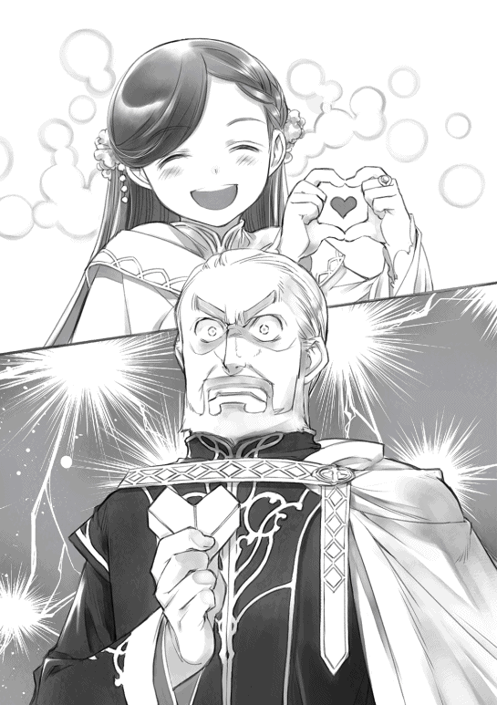
......わたしのバカバカ！ 男の子が好きな兜 とか恐竜の方が喜ばれたかもしれないなんて、ちょっと考えたらわかるのに！
のおおぉぉ、と頭を抱えかけてハッとする。折り紙は一度開けば折り直しができる。ちょっと妙な皺がつくが、それでも気に入ってもらえる形の方が良いだろう。
「あの、おじい様。わたくし、別の形にも折れます！ 違うのを折らせてくださいませ」
「いやいやいや、これで良い。私はこの形が気に入った。折り直す必要はないぞ」
ボニファティウスは「大丈夫だ。必要ない」と言いながら手紙を高い位置に持ち上げる。慌てたように気遣う様子に、わたしは少し肩を落とした。
......わたし、神殿でギルに気を遣わせたように、おじい様にまで気を遣わせちゃったよ。
またしても失敗だ。わたしは今回も周囲の優しさに甘えることにして、お手紙を指差した。ここには折り紙の文化がない。おそらく説明しなければ手紙の内容が読めないと思う。
「おじい様、このお手紙は開くと、内容が読めるのです」
「うん？ 開く？」
「このままでは内容が読めないでしょう？ 少し貸してくださいませ」
難しく眉 を寄せたままのボニファティウスの手からお手紙を取ると、わたしはハートの手紙を開く。内容が読めるように見せながら「これで読めるでしょ？ ね？」と見上げた。
......うぇっ!?
ボニファティウスがこの世の終わりのような顔でわたしの手紙を見下ろしていた。大きく目を見開いて、信じられない、と言わんばかりの血の気が引いた顔をしている。どこからどう見てもお礼状をもらって嬉しい人の顔ではなかった。ハッセの前町長のように気付かないままとんでもない失敗をしたのだろうか。わたしは青ざめてお手紙とボニファティウスを見比べる。
「......おじい様。も、もしかして、何か失礼な言い回しや言葉がありましたか？」
「いや、とても上手に書けていることに驚いただけだ！ ローゼマインは字が上手いな」
......そんなこと言われても、絶対に褒めてるような顔じゃなかったよ。「何ということを!? 」って顔だったのに。
お礼状を渡すつもりが、失礼なことをしてしまったのならば最悪だ。ボニファティウスは取り繕 うように褒めて流してくれようとしているが、他の人ではそうはいかない。自分が何をしでかしてしまったのかわからないのは困る。失礼なことをしたならば、すぐに謝らなくてはならない。がくがくぷるぷる震えながら、わたしが助けを求めて涙目で周囲を見回すと、必死に笑いを堪 えているようなジルヴェスターの顔が目に入った。
......養父様はダメだ。わたしの失敗を面白がってる。
からかいの種を見つけた顔のジルヴェスターはさっさと素通りし、わたしはボニファティウスと繋がりの深い両親に助けを求めた。視線に気付いたエルヴィーラが近付いてくる。
「お、お母様、わたくし、何か大変な失敗をしたのでしょうか？」
「いや、失敗などしておらぬぞ、ローゼマイン。そのように泣きそうな顔をするな。大丈夫だ。なぁ、エルヴィーラ。ローゼマインはよくできている。そうだろう？」
ボニファティウスまでがオロオロとしながら、わたしとエルヴィーラを見比べる。
「少し落ち着いてくださいませ、お二人とも。......ローゼマイン、そのお手紙に間違いがないか、わたくしが確認しましょう」
「お願いします、お母様」
わたしがお手紙を見せると、エルヴィーラはそれに目を通して「大丈夫です。失敗や間違いなどありません」と太鼓判 を押してくれた。わたしはホッと胸を撫で下ろす。
「ボニファティウス様はおそらく貴女 がお手紙の形を崩したから驚かれただけです。これは先程の状態に戻せるのでしょう？」
「はい、折り直せばすぐに戻ります」
わたしが大きく頷くと、ボニファティウスはホッとしたように胸を撫で下ろした。どうやら外見に似合わず可愛い物が好きなようだ。わたしはテーブルの上でお手紙をハートの形に折り直す。ヴィルフリートとシャルロッテが興味津々 の顔で覗き込んできた。
「一枚の紙がそのような形になるのか」
「お姉様、わたくしにも今度そのお手紙をくださいませ。とても可愛らしいのですもの」
「もちろん、よろしくてよ」
シャルロッテの興味と尊敬を少しでも集めることができたようだ。ちょっと嬉しくなったわたしは満面に笑みを湛 えて、折りあがったハートのお手紙をボニファティウスに渡す。
「おじい様、どうぞ」
ハートのお手紙を受け取ったボニファティウスは、難しい顔でまたじっくりと眺めた。それから重々しく「うむ」と頷く。どうやらこの難しい顔はじっくりと見ている時の表情のようだ。
わたしは一安心して周囲を見回す。そして、フェルディナンドの顔を見て思い出した。身体強化のコツを教えてもらえるように頼め、と言われていたのだ。
「わたくし、おじい様にお願いがあるのですけれど。わたくしに身体強化のやり方や要領を教えてくださいませんか？」
わたしが頼むと、ボニファティウスはくわっと目を見開いてニィッと唇を吊 り上げた。ドンと自分の胸を叩いて、フンと鼻を鳴らす。
「任せておけ！ 其方をエーレンフェストで一番強くしてやるぞ！」
一番強くなりたいなんてこれっぽっちも思っていないし、なれるとも思っていない。張り切ったボニファティウスに訓練中に殺されそうな危険性を感じ、わたしは慌てて言葉を加えた。
「待ってください、おじい様。わたくしは強くなりたいわけではなくて、補助の魔術具なしで普通に動けるようになりたいのです」
「......ふ、普通に動ける？」
ボニファティウスは何を言われたのかわからないと言わんばかりに目を瞬かせた。わたしは大きく頷く。これまではわたしの体力のなさを考慮して免除されていた訓練だが、健康になった以上、体力をつけるためにも訓練をしなければならない。
「わたくし、ユレーヴェで眠っている間に筋力が落ちすぎていて、身体強化の魔術を補助してくれる魔術具を使っても人並みの動きしかできないのです。ですから、まずは、魔術具なしでも動けるようになりたいと思っています」
自分の現状を説明すると、ボニファティウスがぎょっとしたように目を剥 いて、本当に生きているのか確認するように頭から爪先までを見ていく。
「そ、それは難しいな。動けない者に身体強化の魔術など教えたことがないぞ。動けない者はどうすれば動けるようになるのだ？」
「え？ わ、わかりません」
「特訓しても本当に大丈夫なのか？」
「死なないようにお願いします」
ボニファティウスと二人で、どうすればいいんだろう、と悩んでいると、呆れたようにこめかみを押さえたフェルディナンドが長々と溜息を吐いた後、提案してくれた。結果、右腕の魔術具を外して右腕だけに身体強化の魔術を使う練習から始めることになった。
夕食会が始まり、この二年の間に城であったことが説明される。大体はフェルディナンドから聞いたことだった。お兄様達は三人とも領主一族の護衛騎士だ。揃ってボニファティウスにしごかれていたらしい。
「おじい様はお強いのですね。あの時もわたくしは布に包まれて、薬のせいで目も開けられませんでしたから、雄姿 を確認することができなかったのですけれど」
「うむ、私は強いぞ。まだカルステッドにも負けぬ」
隣に座ったボニファティウスから聞かされたのは、この二年間で騎士達の実力の伸びに大きな違いがあったことだった。わたしが魔力の圧縮方法を教えた面々はかなり伸びたらしい。正確には、今でも伸びているとのことだ。魔力の圧縮方法を教えた成長期の見習いの伸び幅が一番大きいそうだ。同時に、魔力圧縮方法を知りたいと望む貴族の数も増えているという。
「そろそろ一度魔力圧縮の講義を行うのはどうだ？ その、もちろんローゼマインの体調を最優先にすべきだが、知りたくて仕方がない者も多いようだぞ」
ボニファティウスがちらちらとわたしの様子を窺 いながら提案してきた。圧縮方法を教えたのは、首脳陣の他は領主一族の護衛騎士を中心に、上級騎士や中級騎士がほとんどだ。例外的に教えられた下級騎士はただ一人、ダームエルだけだ。彼が未 だにじわじわと魔力を増やしているため、元々同程度だった者は焦燥 感を覚えているそうだ。
......確かに、おじい様に同じようにしごかれているのに、成人後も伸びてるダームエルと自分を比べたら、魔力圧縮方法を知りたくなるよねぇ？
「人選は終わっているのですか？」
わたしが領主夫妻に視線を向けると、ジルヴェスターがゆっくりと頷いた。
「ローゼマインの承認を得れば良い段階までは終了している」
「では、冬の社交界の終わりに行いましょう」
「終わりだと!? ずいぶん先ではないか！」
驚いたように声を上げたボニファティウスを見つめて、わたしはコクリと頷いた。
「魔力圧縮の方法自体は貴族院の一年生で習うのでしょう？ でしたら、ヴィルフリート兄様の成長を見定め、教えるかどうかを検討したいのです。ヴィルフリート兄様を入れることになれば、その護衛騎士も範囲に入れられますから」
微 かに、おぉ、という喜びの声が壁際に立つヴィルフリートの護衛騎士から上がった。
領主一族の護衛騎士に教えた時は、白の塔の一件でヴィルフリートの護衛騎士はまだ信用に値しない、とわたしが却下した。そのため、家族枠で教えられたランプレヒト以外は伸びが悪かったようだ。あの時はヴィルフリートの騒動があった直後だったし、二年間も眠る予定ではなかったから仕方がないとは思っている。だが、この二年間でヴィルフリートとシャルロッテの護衛騎士の間でずいぶんと差がついたはずだ。それはあまり好ましいこととは思えない。そんなわたしの主張に、フェルディナンドが頷いた。
「ローゼマインがなるべく早くヴィルフリートに機会を与えようと考えるならば、それでよかろう。行いや成長ぶりを確認した上でローゼマインが判断しなさい。ヴィルフリートは上に立つ者として、よく考えた行動をするように」
「心得ております、叔父上」
......二年の間に、ヴィルフリート兄様と神官長の関係が少しはマシになってるみたい。
外見だけではない変化を感じながら、わたしはお兄様達からボニファティウスの特訓の様子を、エルヴィーラからはハルデンツェルの印刷業の進展を、ヴィルフリートやシャルロッテから子供部屋の様子やどの辺りまでお勉強したかなどを聞いて夕食を終えた。
短期集中講座と準備
次の日からフェルディナンドによる短期集中講座が始まった。朝食の後は読書しつつ、前日の復習を行う。ノルベルトから連絡があったらフェルディナンドの執務室へ移動。それから、お昼まではがっつりとお勉強だ。二つの執務机が並べられ、その上に大量の資料が次々と並べられる。資料がないと理解しにくい地理と歴史を徹底的に教えられるのだ。
......待ってて、貴族院の図書館。わたし、できるだけ早く行くからね！
昼食の後はヴィルフリートやシャルロッテとフェシュピールの練習を行う。フェシュピールはわたしがユレーヴェに浸かる前までフェルディナンドがよほど厳しいスケジュールを課してきたのか、あるいは麗乃時代の記憶があったせいか、かなり進んでいたようだ。ロジーナが言った通り、ヴィルフリートと比べても指が動けば特に問題なく貴族院に行ける難易度に到達していた。
......ありがとう、神官長！ わたし、初めてスパルタ教育に心の底から感謝してます！
フェシュピールの練習の後は、日替わりで奉納舞のお稽古と騎士団の特訓が行われる。
奉納舞は貴族院の卒業式の日に行われる成人の神事だそうだ。冬の終わりと春の始まりを寿 ぎ、新しい成人の誕生を祝って神々に歌舞音曲を奉納するらしい。騎士見習いの中から成績優秀者が二十人選抜されて剣舞を奉納し、領主候補生から七名が選抜されて舞を奉納する。それ以外の者は音楽や歌を捧 げるらしい。選抜されるのは個人的にも領地的にも名誉なことなので、皆が何とか選ばれようと努力するのだそうだ。わたしは成人式や卒業式の出し物で、卒業式の歌のちょっと大袈裟 なものと理解した。
「選抜でしたら、わざわざ練習する必要なんてありませんよね？ 他の方に任せれば......」
「馬鹿者。領主候補生は強制参加だ。貴族院では実技試験もある。学年によっては領主候補生の人数が足りなくて上級貴族が選ばれることもあるが、彼等に劣ると領地ごと恥をかくぞ」
奉納舞はわたしの予想以上に重要だったらしい。奉納舞に実技試験があるならば、練習を頑張るしかない。麗乃時代の習い事の経験が少しは役に立つだろうか。
「フェルディナンド様も舞えるのですか？」
何となく尋ねてみると、「あぁ、当然だ」と涼しい顔で返された。どうせフェシュピールと一緒で、完璧 な奉納舞を披露 して、女生徒達を失神させていたのだと思う。
奉納舞のお稽古は、ヴィルフリートとシャルロッテも一緒だ。二人は一年ほど練習していたようで、もう型を覚えていて、それなりに様になっている。
「男舞と女舞は違いますが、どちらも回転が中心になります。舞の基本は回転なのです」
飛んだり跳 ねたりする踊りではなく、優雅 に美しく横への動きを中心とした回転が舞の基本だそうだ。
「舞には緊張感が大事です。クライゼルにとてもよく似ていますね」
クライゼルとは独楽 と同じで、回してバランスを取って遊ぶ玩具 だ。
「美しい緊張感を持ってクライゼルが回っている時には、まるで静止しているように見えるでしょう？ そして、緊張が弱まると、回転がぶれて止まってしまいます。同じように舞う時には静止しているように見えるくらい極限までの緊張感が必要です。軸がぶれてはなりません。緊張感が偏 っても美しい舞にはならないのです」
......そういえば、麗乃時代の日舞の先生が同じようなことを言っていたな。
麗乃時代の母親に「興味がわくかもしれないでしょ？ 何事も三年間はやってみなさい」と日舞もバレエもやらされた。先生から上達したと認められたら本を買ってくれるという母親の言葉に乗せられて、少しでも本が欲しかったわたしはせっせとお稽古した。レッスンの間、本を読めないのが非常に苦痛だと思いながら、ぴったり三年間は通ったのだ。
......今はもう体が全然動かないから、役に立たない知識になってるけどね。
「奉納舞に何よりも必要なのは心。神々に祈りと感謝を捧げる心こそが最も大事なのです」
......ふむふむ。つまり、真剣に祈ったらお披露目のフェシュピールの時と同じことになる可能性があるということですね。今度は気を付けよう。
「とてもよくわかりました」
わたしは舞の基本を教えてもらい、柔軟体操から始めることになった。
......あだだだだだ！ わたしの体、硬っ！
特訓の日は、騎士団でボニファティウスやエックハルトと一緒に身体強化の魔術の特訓をする。補助の魔術具を外し、自分の魔力だけで腕を強化して動かす練習だ。身体強化しつつ、騎獣を出したり武器を振ったりできなければ、身体強化ができるとは言えないらしい。
何日も練習して、わたしは魔術具を外した右腕に身体強化の魔術をかけながら、騎獣が出せるようになった。それを見たアンゲリカがふらりとよろめいてガクリと落ち込んだ。
「どうしてローゼマイン様はそれほど容易に身体強化の魔術が使えるのでしょう。わたくしは騎獣を出すまで一年半かかったのです。......護衛騎士としての自信がなくなりました」
「ふっはっはっは。領主一族のローゼマインには身体強化をしていても、他のことを行うための魔力が十分にある。領主の養女に、と望まれる魔力を羨 んでも仕方がない。アンゲリカは今まで魔力を上げ、より少ない魔力で身体強化の魔術を使うための訓練をしてきた。これからも地道に魔力を増やし、少しでも術を洗練させ、身体強化に必要な魔力量を減らせば良い」
ボニファティウスが笑いながら、「魔力の節約に関してはダームエルを見習え」と言った。ダームエルは「いかに少ない魔力で戦うのか」を常に念頭に置いており、魔力の節約にとても研究熱心だそうだ。地道で地味な戦いをするが、他の下級騎士と比べても無駄 が非常に少ないらしい。
「主の師匠が言う通りだ。主の主はまだ身体強化の魔術に慣れていないので、魔力の無駄遣いが多い。使い方は主の方がずいぶん洗練されている。落ち込むようなことではない」
魔剣シュティンルークの声にアンゲリカが顔を上げた。彼女はボニファティウスに弟子と認められ、上級騎士でも多くない身体強化の魔術を使える騎士に成長している。どうやらシュティンルークも順調に育っているようで、以前に比べて刀身が長くなっていた。
「シュティンルークも大きくなりましたね。色々なことを覚えたのかしら？」
「あぁ、物覚えの悪い主だからな。私が苦労する」
たとえアンゲリカのことでも、フェルディナンドの声と口調で言われると、「まったく君は物覚えが悪い。私の苦労も考えなさい」と自分が叱られている気分になる。そんなわたしの前に、ボニファティウスが咳払いをしながら短剣をずいっと差し出してきた。柄 に大きな魔石がはめ込まれているところを見ると、これも魔剣だろうか。
「ローゼマイン、私も魔剣を育てているのだ。其方の魔力を注いでくれぬか？」
「......あの、おじい様。わたくし、他の方の魔剣に魔力を注ぐのは禁止されているのです」
「なんとっ!? 」
うきうきしているところ悪いとは思うけれど、魔剣へ勝手に魔力を注ぐことはできない。シュティンルークの時にフェルディナンドから禁止されたことを説明すると、「む、むぅ。......フェルディナンドの許可か」と何とも難しい顔でボニファティウスが唸 りだした。許可を得るために勢いよく突進して行きそうな雰囲気を感じて、わたしは慌てて釘 を刺す。
「フェルディナンド様の許可があっても、わたくしが自分の魔力の扱いに慣れなければ難しいと思います。ユレーヴェの眠りから起きた後、自分の魔力をまだ上手く使えないのです」
例えるならば、これまでは水差しで注いでいた水を今日からバケツで注げ、と言われるようなものだ。調節が難しい。大量の魔力を使う身体強化の魔術ならば、盥 に水を注ぐ感じなのでバケツでも問題はない。けれど、魔剣に魔力を注ぐのは注意深く大匙 で量って注ぐような感じなので、バケツでは難しすぎる。今のわたしの魔力はそんな感じなのだ。
「それに、アンゲリカには厳しく指導してくれる人が必要だと考えながら魔力を注いだことでフェルディナンド様の物言いをする魔剣になりました。けれど、わたくし、おじい様に足りない部分が思い浮かびません。おじい様はすでに十分お強いですから」
「......そうか。私は十分に強いか」
鍛錬やお稽古が終わったら、お風呂で汗を流して夕食。食後は明日の予習のための読書をして、リヒャルダに本を取り上げられたら就寝である。毎日のように新しいことを覚えさせられ、読むべき資料が積み上げられていく。読むのはいいが、覚えるのは大変だ。
......それでも、わたしは頑張るよ。シャルロッテの尊敬を勝ち取り、優秀で立派なお姉様になって、貴族院の図書館で読書三昧の日々を送るんだ！
一年生の魔術関係の座学についてはそれほど難しくなかった。魔力や魔石の基礎についてだ。どちらにも属性があり、神々の貴色 と関連がある。どの属性が何色か覚えておけば良いらしい。聖典を覚えなければならない立場だったわたしは、ざっと聞いただけで十分に理解できた。
ただ、歴史が難しい。長ったらしくて似たような王様の名前が次々と出てきて、頭がぐちゃぐちゃになるのだ。とりあえず、神話から続く建国あたりの話は聖典に載っていたので、以前から知っていた。それが救いだろうか。
「大昔の歴史については大まかな流れを覚えておきなさい。細かい歴史が必要になるのは、近年の数十年分だ。特に、中央で起こった政変とそれによって何が変わり、どこが台頭してきたかはよく覚えておきなさい。貴族院での人間関係にも密接に関わってくる」
わたしはフェルディナンドが広げている王家の家系図を見る。王家もやはり子供達を争わせて、少しでも力の強い者を王とするようだ。前の政変は第一王子と第三王子の勢力争いが原因で、国を半分に割るほどの熾烈 な争いとなったらしい。
第一王子は敗北し、第三王子は死ぬ間際に第一王子の放った暗殺者にやられて共倒れ。今度は第四王子と第五王子がそれぞれの権力を後ろ盾に再度争うことになった。結果としては、第五王子が勝利した。だが、激しい戦いで王子自身も命の危険に何度も晒 されたせいか、第四王子とその親族や後ろ盾の貴族に対して、大規模な粛清 が行われたそうだ。
「そのせいで国力がガクンと落ちたんだから、王族ってバカですよね？」
「確かにその通りだが、馬鹿は君だ。口を慎 め。貴族院はその第五王子、現在の王に味方した貴族が大きな顔をして歩いている場所なのだぞ」
「だって、粛清といっても完全な敵だけではないですよね？ この辺りの王女様やその子まで粛清されちゃったんならやりすぎでしょう？」
わたしは家系図を指差した。王家の家系図は普通に亡くなった人は一本の横線で名前が消されているが、政変で粛清された者はバツで消されているのだ。血統の男は当然、跡目争いとはさほど関係なさそうな先代の王女や女孫まで粛清されていた。
「君はやりすぎだと言うが、これ以上の争いの種は必要ない。そう考えるのは普通ではないか？」
「争いの種は必要ありませんけれど、粛清で国を支える貴族が減りすぎて、国が荒れているならば、やりすぎで間違いないと思いますけれどね。せめて、強い子供が産める王女様くらいは生かしておいてもよかったんじゃないですか？ 自分の派閥 の貴族に嫁 がせるとか、弱体化した反対派の領地を乗っ取るのに使うとか......少なくとも、殺す必要はないと思うんです」
「君の言い分にも一理あるが、その王女は殺されても仕方がない。少しでも魔力の高い子が欲しいと色々な男と浮名を流した王女だ。放っておけば、いつ死んだ王子の子が誰に担 ぎ上げられて出てくるかわからぬからな」
わたしは王族のやりたい放題な態度に吐き気がした。王女が浮名を流しまくって、いつ誰の子供が出てくるかわからないなんて、正直、青色神官とどこが違うのかわからない。
「王族も貴族も激減している今、王族はもちろん、有力貴族も力のある自分の一族を増やしたくて仕方がない。君の場合、身体強化を補助する魔術具を常に身に付けているので、一見魔力が高いようには見えないと思うが、いきなりさらわれることがないように気を付けなさい」
「何それ、怖いっ！」
「それが現実だ。貴族院では絶対に護衛騎士やリヒャルダを離さぬように」
わたしは恐怖で涙目になりながら、何度も頭を振って頷いた。
毎日毎日教材の本を読んだり、奉納舞の練習をしたり、ボニファティウスと効率の良い身体強化の練習をしたりする合間に、貴族院へ向かう準備もしなければならない。一番に必要だったのは衣装 だ。いつでも服が作れるように布はたくさん準備されていたけれど、わたしがいつ起きるのかわからなかったので、まだ作られていなかったらしい。
貴族院へ出発するまでに日がないため、エルヴィーラの専属針子 とフロレンツィアの専属針子とわたしの専属扱いになっているコリンナを総動員して、衣装を作ることになった。そのため、今日はエルヴィーラもフロレンツィアもわたしの部屋に来ている。
「貴族院での衣装の流行に関する情報も集めているなんて、さすがローゼマインですね」
ダームエルが整理してくれていた貴族院の情報の中には、他領の領主候補生達の衣装に関する情報もあった。ブリュンヒルデという上級貴族が、これから貴族院へ入るわたしやシャルロッテが衣装を作る際の参考にしてほしい、と詳細に報告してくれたそうだ。
わたしは別にこんな情報を集めるつもりはなかったが、フロレンツィアは先見の明があると褒めてくれる。どんな情報もどこかで誰かの役に立つ感じで、このままそれぞれの情報を集めてもらった方が皆の役に立ちそうだ。
ちなみに、わたしが欲しかった各地のお話は全く届いていなかった。元々は冬にユレーヴェを使う予定ではなかったし、自分の口できちんと説明する予定だったので、「貴族院で情報収集を頼む」としか書いていなかったのが敗因だ。整理された情報を見てガックリと項垂 れていたら「情報収集という覚書から物語収集は予想できないよ」とコルネリウスに苦笑された。
「姫様。最初に仕立てなければならないのは、この冬の社交界で着る衣装でございますよ」
「それは前に着た衣装で良いでしょう？ 幸か不幸か、わたくしは成長していないのですから」
わたしはさっきから作る衣装の順番に関して、リヒャルダと話し合っていた。リヒャルダは着る順番に作ろうと言うのだが、わたしは外部に持って行く服を優先したい。悲しいことにわたしは眠っていた間、全く成長していない。二年前の衣装でも問題なく着られるのである。
わたしとリヒャルダの意見を聞いていたエルヴィーラが軽く溜息を吐いた。
「貴女の感覚が二年前で止まっているというフェルディナンド様のお言葉がよくわかりました。ローゼマイン。貴族院へ行くということは、貴女は十歳になっているということですよ。スカート丈が以前と違うのですから、たとえ成長していなくても以前の衣装は着られません」
......あ、そうだった。スカート丈が変わるんだ。
十歳になると女の子は膝丈から脛 丈に変わる。本来ならば、自分の成長を噛 みしめて嬉しくなるはずだ。けれど、外見も中身も何も変わっていないし、十歳のお祝いもしていないせいで嬉しさは欠片もなく、違和感しかない。
「社交界の始まりの宴に出席するための衣装も新しく作るしかないでしょう？」
「......始まりの宴に出席するための衣装は、スカート丈だけお直しすることにしましょう。それならばあまり時間はかからないでしょう？」
わたしは側にずらりと控えている針子の中からコリンナを呼んでもらう。
「コリンナ、このスカートの部分をお直しして欲しいのです。裏側のここから脛丈のスカートを付けて、今までのスカートはこのように摘まんで、花の飾りをつけてください」
わたしは下町の時の洗礼式でトゥーリの衣装をお直しした時のように、今のスカート部分をバルーンのように摘まんでもらって飾りのようにしてほしいと提案する。下に脛丈のスカートを付けてもらう簡単お直しで、宴の衣装は乗り切りたい。
わたしの簡単お直しについて母さんから以前に説明を受けていたコリンナは、わたしが要求するところをすぐに呑み込んでくれた。針と糸を取り出すと、仕付け糸で簡単に摘まんでバルーン状にしてくれる。それから、別の針子に布を持って来させ、どのようなお直しをするのか、エルヴィーラやフロレンツィアに衣装を見せながら説明を始めた。
「ローゼマイン様のおっしゃる通り、新しく裏に布を縫い付けて脛丈にするならば、このような形になります。いかがでしょう？」
「あら、可愛らしいではありませんか。形はそれで良いけれど、これから付け加えるスカート部分の布は、今年の流行色の布を使ってちょうだい」
「摘まんだ部分を花で飾るなら、この胸元にも同じ飾りを付けると良いのではなくて？」
コリンナはエルヴィーラとフロレンツィアの注文を木札に書き込み、持参した荷物の中から花の飾りを取り出して、言われた場所に置いてみる。
「領主夫人の意見を取り入れるのでしたら、胸元の飾りは小さい花にして、このように並べる形でも可愛らしいかと存じます。こちらに相応しい物がございますか？」
母親達は華やいだ声を上げながら花の飾りの大きさや色を決め、コリンナが準備していた流行色の布の中から材質が合う物を選ぶ。その間にわたしは採寸だ。やっぱり変化なしだった。
冬の社交界の衣装が決まったら、次は貴族院に持って行く衣装だ。制服はないが、規定で黒を基調とした衣装と決まっているらしい。何でも、全てを吸収する闇 の神に敬意を示し、貴族院での教えを貪欲 に吸収する姿勢を見せるためだそうだ。
だが、決まっているのは「黒を基調とする」だけなので、それ以外はかなり自由なようだ。貴族院で集められたブリュンヒルデの情報によると、黒を基調とした服にびっしりと色鮮やかな刺繍 をしている者もいるらしいし、袖のぴったりとした服の上からボレロのような感じで袖のひらひらした上着を着て、講義内容によって袖の長さを調節している者もいるらしい。
「わたくし、刺繍よりもこのように袖の長さが調節できる衣装が欲しいです」
長い袖は邪魔で仕方がない。けれど、宮廷作法の実技のように袖の長さが必要な講義もある。ボレロを着脱することで袖を調節できるならば、お手軽でとても効率的だ。わたしの主張に、フロレンツィア、エルヴィーラ、リヒャルダの三人が揃って首を横に振った。
「領主候補生がそのような袖の衣装をまとってはなりません」
「......え？ けれど、領主候補生も講義はもちろん、実技も受けるのでしょう？ 袖が邪魔になることはないのですか？」
「それを優雅にこなしてこそ領主候補生ですよ、ローゼマイン」
袖の長さを変えるのは、フロレンツィアにニッコリと笑って却下されてしまった。仕方がない。自分で袖の調節ができるように、たすき掛け用の紐だけはきちんと準備しておこう。
衣装に関しては、お直し以外でわたしの意見が通ることはほとんどなく、三人の意見でどのような衣装を作るかが決定してしまった。常識外れな衣装をまとうことになるよりは、三人にお任せしておいた方が良いだろう。
大勢の針子を動員したおかげで、わたしの衣装は冬の社交界が始まるまでに無事に完成した。
「ローゼマイン、其方の専属料理人と専属楽師を貴族院へ派遣しても良いだろうか？」
わたしはある日の夕食の席で、ジルヴェスターにそう切り出された。貴族院では学生達が領地ごとに寮生活を営むことになる。そこに派遣される楽師は、学生の中で身分が上の者から五名の専属を、料理人は城の料理人から下働きも含めて五名が選抜され、派遣されるのだそうだ。
領主候補生であるヴィルフリートとわたしは寮内で最上位という位置付けになるので、わたしの専属楽師は自動的にメンバーに入ってしまう。けれど、エラとフーゴは神殿と城を往復するわたしの専属で、城の料理人ではない。そのため、わたしの許可を取った上で派遣したいそうだ。
「其方が貴族院に行って不在の間は神殿に二人を返すだろう？ それならば、腕の良い料理人はできるだけ有効利用したい」
「わたくしは慣れた味が一番ですから、二人を同行させるのは別に構いません。けれど、一緒に行く料理人に新しいレシピは流しませんよ？」
二年の間にエラとフーゴが考えたオリジナルレシピならば構わないけれど、わたしのレシピはお金を払った分以外は流してはならないことになっている。ほんの少し新しいレシピを期待していたようだが、ジルヴェスターは諦め顔で頷いた。
「......それに関しては仕方がない。だが、できれば、其方やヴィルフリートには領主候補生の集まりやお茶会で、私が其方から買ったレシピ分のお菓子を披露してほしいと考えている」
「養父様は隠しておきたいのではないのですか？」
教材や絵本、新しいレシピに関しても、外には漏らすな、と貴族達に厳命していたはずだ。解禁するのだろうか。わたしが尋ねると、ジルヴェスターはゆっくりと腕を組んだ。
「其方が作った物はどれもこれも影響力が大きいからな。作り出した其方が貴族院に入るまでは隠しておいた方が無難だと判断した。だが、これからは何年も連続して其方達が領主候補生として貴族院に在籍する。この好機にできるだけエーレンフェストの影響力を上げていきたい」
そう語る顔が領主のものになっている。一体どんな未来を見据えているのかわからないけれど、アーレンスバッハとの関係を考えても、影響力はできるだけ上げておいた方が良いだろう。
「フェルディナンド様に伺った限りでは、貴族院での成績を上げればよろしいのですよね？」
「あぁ、そうだ」
「予算はどのくらい付きますか？ 真剣に領地全体の成績を上げたいならば、いくつか方策はございます。けれど、わたくしや学生達だけが負担するには高額すぎます。教育費として領地からの予算がどれほど付くかによって、できることは変わってまいりますから」
何をするにも必要なのはお金である。それから、時間。あと一年早く起きられれば、貴族院で成績を上げるためにできることはもっとたくさんあった。
「これから貴族院に向かうまでの期間は短すぎてできることはほとんどございません。本格的な準備は春から行いますね。今年は今までの教材の成果を確認し、集まっている情報と現実の比較......現状把握に努める予定です。その上でわたくしが領地全体の成績を上げるために考えられる案をいくつか出しますから、養父様は予算を捻出 してくださいませ」
「......わかった。貴族院は其方とヴィルフリートに頼む。領主候補生として皆に働きかけよ」
領主としての言葉に、ヴィルフリートが厳しい顔で「かしこまりました」と頷いた。
リヒャルダの指示によって荷物の準備が進み、フェルディナンドの短期集中講座によって知識が詰め込まれる内に秋が終わり、雪がちらつく冬になった。
授与式
今日は始まりの宴が行われる。冬の洗礼式と新しい子供達のお披露目があり、貴族院の新入生への授与式があるのだ。わたしは授与式に出席しなければならないので、今年の洗礼式やお披露目の神官はフェルディナンドにお任せすることになっている。わたしは結構のんびりとした気分で髪を整えてもらい、着替えて、ゆったりと準備をしていた。
「お姉様、一緒に大広間へ参りませんか？」
わたしの準備が整うのを見計らったようにシャルロッテが準備を終えて、部屋を訪ねてきた。わたしはすぐさま了承して部屋を出る。
「お姉様は貴族院へ向かうために特別授業を受けるということで、城にいるのに奉納舞のお稽古と夕食の時しかお会いする時間がなくて、わたくし、少し寂しかったのです」
......シャルロッテは相変わらず可愛いね。
妹の方が大きくなってしまったことは、わたしのお姉様心にひびが入るくらいショックだった。だが、誘拐犯から助けられたお礼と、シャルロッテがわたしの護衛騎士をとってしまったことでわたしが危険に陥 ったお詫 びとして本を贈られた瞬間、わたしのシャルロッテに対する好感度は跳ね上がり、身長を抜かされたショックなど吹き飛んでしまった。
......わたしの妹、マジ健気 で可愛すぎる。
わたしは騎獣を出して乗り込み、シャルロッテと二人で話をしながら階段を降りる。そこにはヴィルフリートも準備を終えて待ち構えていた。
「ローゼマインはまだ騎獣を使うのか？ 薬に浸かって元気になったのだろう？」
わたしが騎獣に乗って階段を降りてきたのを見て、ヴィルフリートが目を丸くした。
「一応元気にはなったのですけれど、魔術具を使わなければまだ歩けないのです」
「なにっ!? 其方、騎士団でボニファティウス様と訓練をしていると言っていたではないか。自殺行為だぞ!? 」
護衛騎士がビシバシとしごかれている側で訓練を行っていたらしいヴィルフリートにとって、ボニファティウスとの訓練は自殺行為に映るようだ。実際にわたしも「死ぬかも」と思ったので、誰の目にもそのように映るのかもしれない。
「おじい様には身体強化について教えてもらっているだけで、厳しい訓練はしていません」
「お姉様は奉納舞の上達もお早いですから、わたくし、もう回復したのかと思っていました」
城で過ごす内に回復したと二人は思っていたらしいが、そんなことはない。
「......貴族院から戻ってから魔術具を外して少しずつ体力や筋力を戻していこうというお話になっています。すぐに外す物ですから、あまり口外していないのですよ」
わたしが騎獣で動く横をヴィルフリートとシャルロッテが歩き、護衛騎士が周囲を固める。三人でこうして歩くのは二年前の襲撃以来なので、周囲も少し緊張しているのがわかった。
「わたくし、少し緊張してしまいましたわ。もう犯人は捕えられたというのに......」
シャルロッテが皆を気遣うように小さく笑う。つられて笑った周囲から緊張が少し消えた。
大広間へ向かう最後の曲がり角で、わたしは騎獣から降りた。ここから先では騎獣は使えない。その後は、ほぼ一日中立っていることになる。
......わたし、大丈夫かな？
不安が顔に出ていたのだろうか、ほんの少し歩いたところでヴィルフリートが心配そうに眉を寄せて、わたしに手を差し出した。
「......ローゼマイン、私の腕につかまるか？」
「いえ、わたくし、歩くのが遅いですから、ヴィルフリート兄様が疲れてしまいます。シャルロッテと先に行っても良いですよ。わたくしは自分の体調に合わせた速さで歩きますから」
「ならぬ。今日は三人で固まっているように、と言われている」
ヴィルフリートもシャルロッテも譲 らず、結局、皆がわたしの歩みに付き合うことになった。護衛騎士をぞろぞろと連れて、わたし達は大広間の最前列を陣取る。大広間の移動中は護衛騎士とヴィルフリートとシャルロッテに囲まれたわたしがほとんど見えていなかったのか、挨拶に来る貴族達がわたしの姿を見て、驚きに目を見張った。
「ローゼマイン様、お目覚めになられたのですね」
「なんてめでたいことでしょう。では、わたくし、ローゼマイン様と貴族院でご一緒できるのですね。とても嬉しいですわ」
「えぇ。お姉様はもうすっかり良くなりました。グレッシェル伯爵、ブリュンヒルデ」
シャルロッテがわたしの一歩前に出て、ニコリと笑いながら対応する。ブリュンヒルデはわたしの二つ上だっただろうか、三年前の冬の子供部屋で見た覚えがあった。真紅のストレートの髪に薄い茶色の瞳をしている。おしゃべりが好きでおしゃれな女の子だったと思う。貴族院で領主候補生の衣装に関する情報を集めてきてくれた子の名前がブリュンヒルデだったはずだ。
わたしはシャルロッテの隣に立って、ブリュンヒルデにニコリと笑う。お礼はきちんと言っておいた方が良い。
「ブリュンヒルデ、貴女が貴族院で集めてくださった衣装に関する情報はとても役立ちました」
「まぁ、ローゼマイン様のお役に立てて何よりです」
ブリュンヒルデが華やいだ声を上げると、他の貴族も挨拶のために集まり始めた。二年も眠っていたわたしは、好奇と興味の的のようだ。次々と貴族がやってくる。
「わたくしにもローゼマイン様にご挨拶させてくださいませ」
「おや、ダールドルフ子爵夫人ではないか」
わたしが口を開くより先にヴィルフリートがすっとわたしの前に出た。
「其方も息災 なようで何よりだ。私はダールドルフ子爵と少し話がしたいのだが、どこにいるのかわかるか？」
「あら、ヴィルフリート様。......探してまいりますわ。ごきげんよう」
わたしはシキコーザの母には嫌われているので、ヴィルフリートが撃退してくれて助かった。呑気 にそう思っていたわたしは、しばらく貴族の挨拶が続いたところでやっと気が付いた。
......わたし、ヴィルフリートとシャルロッテに守られている。
貴族に声をかけられると、二人のうちのどちらかがスッと前に出るのだ。わたしから声をかけようと動かない限りは、一言も声を出すことなく挨拶が終わってしまう。二人を背に庇 うようにして貴族と相対していた二年前とは完全に逆の立場になっていることに目を見張った。
「二人とも、ずいぶんとお勉強したのですね」
「其方に守られてばかりではいられぬからな」
わたしがフェルディナンドに叩き込まれた貴族との対応マニュアルは、かなりの量があった。それを幼い二人もこなしたのだと思うと、感嘆の溜息しか出ない。
「覚えることがたくさんあるもの。とても大変だったでしょう？」
「......えぇ、大変でした。ですが、二年前にお姉様が勉強された分と大して変わりません。お姉様は貴族との対応に加えて、わたくしの洗礼式やお披露目の準備までされたのでしょう？ わたくし、神事のためにお姉様が覚えた木札の量を見て、卒倒するかと思いました」
祈念式のために覚えさせられた木札と貴族との対応についてのマニュアルを、二人はフェルディナンドに突き付けられたそうだ。わたしの水面下の努力が丸見えになってしまった。
「二人はわたくしの神殿長としてのお仕事まで手伝ってくれたと報告を受けました。たくさんのお仕事を押し付けてしまってごめんなさいね」
「お姉様、わたくしとて領主の子です。直轄地に魔力を注ぐのがどれほど大変で大切なことか、この二年間でよくわかりました。次の春もわたくしは祈念式に向かうつもりです。お姉様ばかりに負担をかけるわけにはまいりませんもの」
「そうだ。皆で手分けして巡れば、早くに終わるぞ」
......どうしよう。わたし、完全にこの二人に置いていかれている。
体格だけではない二人の成長を噛みしめたところで、領主夫妻が入場してきた。舞台に上がって席に座り、わたし達の方へ視線を向けて軽く微笑んだ。わたし達も笑顔を返す。
「神官長、入場」
スタスタと歩いて舞台に上がったフェルディナンドがくるりと大広間を見回す。「新たなるエーレンフェストの子を迎えよ」という声が大きく響くと共に、扉が大きく開かれ、新しく洗礼式を迎えた貴族の子供達が入場してきた。
......うぐぅ、わたしより大きい子もいるよ。
「ローゼマイン様」
洗礼式のために舞台へ上がる子供達を見ていると、隣のコルネリウスから声がかかった。
「この後、お披露目を行うニコラウスは......父上の第二夫人の息子で、我々の異母弟です」
第一夫人のエルヴィーラを母として洗礼式を行ったわたしと違い、第二夫人のトルデリーデを母として洗礼式を終えたニコラウスは、公的にも異母弟という扱いになるそうだ。
「おそらく後でトルデリーデとニコラウスが挨拶に来ると存じます」
「......何か注意することがございますか？」
コルネリウスの黒い目に明らかな警戒が浮かんでいて、わたしも思わず声を潜めてしまう。
「いいえ。ただ、冬の子供部屋であからさまな贔屓 はせぬように、と父上からの伝言はありました。ローゼマイン様は自分より年下には殊 の外 甘いそうなので......」
養女となったわたしが一番に考えなければならない兄妹は、領主一族のヴィルフリートとシャルロッテで、その次が同母の兄弟のエックハルト、ランプレヒト、コルネリウス。異母弟のニコラウスは優先順位がかなり下がるので、可愛がり方に気を付けるように、とのことだ。
......でも、弟妹って可愛いし、頼られたいじゃない？
上級貴族なので、ニコラウスがお披露目では最後にフェシュピールを弾いた。よく練習しているのがわかる音色だった。明るい栗色 の髪に薄い青の瞳の男の子だ。母親に似ているのだろうか、顔立ちはあまりカルステッドと似ている感じがしない。ただ、体格は良いので、並んだら身長はわたしが負けていると思う。
お披露目の後は授与式だ。舞台を降りるフェルディナンドと入れ替わるように、文官が舞台へ上がっていった。豪奢 な箱を持った八人の文官が並ぶと、準備ができたことを確認して舞台の中央にジルヴェスターが歩いてきた。
「では、これより授与式を行う。貴族院へ向かう新入生は前へ！」
文官の声が響き、わたしはヴィルフリートにエスコートされる形で舞台へ上がっていく。三年前のお披露目で共に並んだ八人が並んだ。視線を巡らせれば見覚えのある顔ばかりだ。けれど、記憶にある姿より皆が成長している。自分の成長のなさが浮き彫りになり、心が沈んでいく。そんな時、不意に目が合ったフィリーネが嬉しそうに笑った。わたしも笑顔を返す。好奇や興味ではない親しい笑顔に、少し気分が浮上した。
「ローゼマイン」
ジルヴェスターに呼ばれて、わたしはハッと顔を上げて前に進み出た。一人の文官が手に持っていた箱をジルヴェスターの前に置いて、丁寧に蓋 を開ける。箱からジルヴェスターはマントとブローチを取り出し、わたしに差し出した。
「様々な経験を通してよく学び、成長し、エーレンフェストに相応しき貴族となることを望む」
「闇の神に敬意を表し、あらゆる経験を我が力と為せるように誠心誠意努力いたします」
わたしはマントとブローチを持って、数歩下がるとまた並ぶ。全員の授与が終わると、文官から貴族院への移動日の知らせがあった。例年通り、最上級生からの移動になるそうだ。新入生であるわたしとヴィルフリートは最終日の最後に移動する。
こうして、冬の生活が始まった。
冬の子供部屋と出発
授与式の後は昼食で、昼食を終えたら貴族達による社交が始まるのだが、わたしはフェルディナンドから部屋に戻るように言われた。今日はすでに動きすぎらしい。
「でも、お父様の第二夫人とニコラウスの挨拶があると言われているのですけれど......」
「そんな挨拶より君の体調の方が大事であろう？ 君は魔術具で動けている状態だということを忘れないように。今、倒れたら明日からの予定にも差し支える。貴族院に出発するまでには時間がないぞ。その程度のことは考えなくてもわかるはずだ」
体調を崩した場合について、フェルディナンドはくどくどと述べ始めた。何だか心配されているという感動が、言葉を重ねる時間に反比例して一気に減っていく。
......最初の言葉だけで止めておいたら、すごく良い人だったよ、神官長。
かくりと項垂れつつ聞いているが、今のところ、わたしの体調に誰よりも詳しいのはフェルディナンドだ。心配されていることには間違いないだろうし、長々としたお小言を止めるためにも、わたしはおとなしく部屋に戻ることにした。
「わかりました。フェルディナンド様のおっしゃる通り、今日はお部屋に戻ります。けれど、明日は初日ですから、午前中わたくしは子供部屋に顔を出します。洗礼式を終えた子供達の挨拶もありますし、現状把握もしたいですから。午後からはフェルディナンド様の執務室に参りますので、先日お渡しした資料にあった情報提供者を集めておいてくださいませ」
それだけでフェルディナンドにはわたしが何をしたいのかわかったようだ。「ふむ」と言いながら顎 に手を当て、わずかに眉を寄せた。
「情報料は貴族院で渡すのではないのか？」
「フェルディナンド様にお渡しした資料に載っているのは、わたくしが寝ている二年間に卒業している者の名前です。在学している方の分は貴族院で支払います」
貴族院で集められた情報をダームエルがまとめてくれた資料は、エーレンフェストの首脳陣にも読んでもらった。フェルディナンドとわたしで情報の価値が違うように、自分にはあまり必要のない情報でも喜ぶ人はいるのではないかと思ったのだ。案の定、それぞれ重要と感じる情報には違いがあり、続報を望む情報もあったようだ。そういう重要情報をもたらしてくれた者を選出し、わたしは情報を得て喜んだ者の部署の予算からしっかりと情報料を取った。
わたしにあまり馴染みのない文官は情報料を請求されて呆然 としていたけれど、領主夫妻と騎士団長が苦笑と共に気前よく払っているのを見ては逃れようもなく、快 く支払ってくれた。
こうして、わたしは当初の予定通りにお金を準備したのである。
「あぁ、色々なところに情報を売っていたな。では、午後には集まるように手配しておこう」
「助かります」
「では、お姉様が子供部屋にいらっしゃるのは、明日だけですの？」
わたしとフェルディナンドが明日の予定について話に区切りをつけると、シャルロッテが悲しげに眉尻を下げて、わたしを見つめてきた。城にいても奉納舞と夕食でしか一緒にいる時間がなくて寂しい、と言っていた姿を思い出し、わたしは言葉に詰まる。
「......そうなるかもしれません。子供達への挨拶と顔合わせだけは行うつもりですけれど、わたくしが二年間の遅れを取り戻すためには本当に時間がないのです」
授与式で同期の皆の成長を見て、わたしは自分の成長のなさを痛感し、危機感を覚えている。外見が全く成長していないことで侮 られることは確実だ。だからこそ、せめて、勉強は周囲に遅れずついて行けるようになっていたい。それに、エーレンフェストの成績を上げるならば、まず、わたしが優秀な成績を収める必要がある。成績の悪い者が「こうすれば成績が上がります」と言ったところで、誰が信用してくれるのか。
......わたしの図書館通いは好成績が条件だし......。
子供部屋の現状把握ができれば、わたしは自分の勉強に時間を費 やしたいのだ。
「お姉様の気持ちはわかりました。では、明日の初日に子供達へ配るご褒美をご準備いただいてよろしいですか？ お姉様の料理人が作ったお菓子を心待ちにしていた子供達がいるのです」
「えぇ、もちろんです。明日からはわたくしが準備いたしますね」
わたしは笑って答えたが、二年間は、二人の専属料理人が景品のお菓子を準備していたということに意識が回らなかったので、下手したら準備が重複するところだった。
......危ない、危ない。よかった。シャルロッテが指摘してくれて。
それにしても、お菓子を準備するのはとてもお金がかかる。砂糖がバカみたいに高いのだ。砂糖に比べるとまだ安価な蜂蜜 を使うにしても、毎日甘味を準備するのは非常に大変だったはずである。自分で稼いでいるわたしはともかく、二人はお金が足りたのだろうか。
......今更尋ねて、わたしがお金を払うっていうのも変かもしれないけど、わたしが勝手に始めたことで、二人は巻き込まれただけなんだよね。
うーん、とわたしが考え込んでいると、ヴィルフリートがむむっと深緑の目を細めた。
「ローゼマイン、其方、子供部屋の運営をまた一人で全部やるつもりだろう？」
「えぇ、わたくしの思い付きで勝手に始めたことですし、薬で寝込んでいる間ならばともかく、元気になったのですから、これ以上二人に負担をかけるわけには参りませんわ」
わたしがそう言うと、シャルロッテもむむっとした顔になり、藍色の目でわたしを睨んだ。可愛い妹に詰 るような目で睨まれて、わたしは正直困惑する。
「お姉様、ご自分の準備でお忙しい時に、お一人で抱え込むのはいかがなものでしょう？ それに、子供部屋で教育を行い、エーレンフェストの成績を上げるのは領主の子として行うべきお仕事だとお父様がおっしゃいましたよね？」
「そ、そうですね」
ずずいっと少し上にある顔を下げるようにして近付いてくるのは、凄 みのある笑顔を浮かべたシャルロッテだ。妹にたじたじになっていると、ヴィルフリートにもポンと肩を叩かれた。
「つまり、子供部屋の仕事は私達も行わなければならないのだ。其方が独占してはならぬ。何もしなければ、私達が無能扱いされる。賢い其方ならば理解できるであろう？」
二人とも対等に領主の子として仕事をしようとしている。ならば、わたしは二人にできる範囲を見定めて、仕事を割り振っていけばいいだろう。
「わかりました。では、明日の子供部屋を見て、仕事の分担をいたしましょう」
仕事を分担しようと提案すると、ヴィルフリートがぱぁっと表情を明るくした。それから、ふふん、と得意そうに胸を張りながら、わたしの頭を撫でる。
「うむ。では、其方は今日のところは休め。明日から大変だからな」
「お姉様がまた倒れるようなことになっては困りますものね」
シャルロッテもわたしから仕事を得たことが嬉しいのか、表情を綻 ばせた。二人が仕事をしたがっているならばいいか、と思いつつ、わたしは食堂から出ようと扉へ向かう。
「ローゼマイン」
「何でしょう、フェルディナンド様？」
フェルディナンドに呼び止められて、わたしはくるりと振り返った。
「君の場合、体を休める必要はあるが、頭はまだまだ動かして大丈夫だ。渡している資料はどんどん読んでおくように」
「喜んで」
わたしは部屋に戻り、リヒャルダとオティーリエに手伝ってもらってお風呂と着替えを済ませると、フェルディナンドに渡されている資料の木箱を寝台の側まで運んでもらった。
「まったく、フェルディナンド坊ちゃまは。体に良くないと姫様にお休みを与えるならば、読書も禁止してくださらないと」
リヒャルダはぷりぷりと怒りながらそう言ったけれど、わたしは木箱から本を取り出してベッドの上で広げてホッと安堵の息を吐く。体調を心配してくれるリヒャルダには悪いが、わたしは読書をしている時間が一番落ち着くのだ。体を休ませながら読書をしていろ、と言われた時にはフェルディナンドが神様に見えた。
「貴族院に行くまでに覚えなければならないことがたくさんあるのですもの。ここにある資料はどんどん読まなくてはね。うふふん」
休め、と言いながら課題を言い渡すフェルディナンドにリヒャルダは怒っているけれど、多分、貴族からわたしを隠してくれたのだと思う。二年間成長していないわたしを見る視線は、好奇心に満ちていたり、嘲 るようで明らかに好意的ではなかったりしていた。一応覚悟はしていたが、予想以上の視線の多さと交わされる囁 き声にうんざりしたのだ。ヴィルフリートとシャルロッテに庇われていたけれど、その場にいるだけで正直なところすごく疲れた。
次の日、わたしはエラに準備してもらったお菓子を、リヒャルダとオティーリエに持ってもらって子供部屋へ向かった。今日から貴族院への移動が始まるので、フーゴは第一陣として寮の厨房へ移動することになっている。フーゴには「エラはフーゴがしっかり守るように。何かあったらすぐにわたくしに報告するのですよ」と言ってあるので、きちんと住環境も整えてくれるはずだ。わたしは専属の若い女の子を自分の目が届かない場所には出したくない。そのため、エラやロジーナはわたしが貴族院へ向かう日に移動することにした。
料理人や下働きの者だけではなく、当然のことながら、学生の移動も行われる。今日は最終学年であるアンゲリカが出発する日なので、わたしに付いている護衛騎士はダームエルとコルネリウスの二人だけだ。
「明日にはコルネリウスも貴族院に向かうのですよね？」
「はい。慣れている上級生から入寮し、下級生を迎え入れるための準備をするのです」
わたしはダームエルとコルネリウスから入寮や進級式の話を聞きながら子供部屋に入った。
「ごきげんよう、お姉様」
「ごきげんよう、シャルロッテ」
わたしが入ると、子供部屋がざわりとざわめいた。学生達はともかく、わたしが眠っている二年間で洗礼式を終えた子供達とは全く顔を合わせていないので、「話では聞いていたが、本当にいたのか」というような顔になっている子もいるし、昨日の社交の場にもいなかったので存在が知られていないのか、誰だろうというような不思議な顔で見ている子もいる。
そんな中、ヴィルフリートがわたしの手を引いて皆の前に立ち、注目せよ、と手を挙げた。
「二年に亘 る長い間、治療のために眠っていたので顔を知らぬ者もいるだろう。紹介する。私の妹であり、シャルロッテの姉であるローゼマインだ。ここで使われている絵本やカルタ、トランプ、他にはない甘味を作り出したことを、年嵩 の者ならば知っているだろう」
......な、ななな、何て紹介をしてくれるんですか!?
ひいいぃぃぃっ！ とわたしが息を呑んでいる横にシャルロッテがすすすっと寄ってきて、にこっとした可愛らしい笑顔で更に付け加える。
「ローゼマインお姉様は眠っていても尚 、大量の魔力でエーレンフェストに多くの祝福を与えるエーレンフェストの聖女です。お姿を見たことがなくても、皆様もお話くらいは聞いているでしょう？ わたくしはお姉様をとても尊敬しているのです」
......止めて！ 信じ込んでいる子供達の期待に輝く目が痛い！ 聖女なんかじゃないから！
全力で否定して逃げ出したかったけれど、ヴィルフリートとシャルロッテに挟まれ、更に護衛騎士に取り囲まれているわたしに逃げ場などない。リヒャルダが準備した椅子に座らされたわたしは、頬を引きつらせながら貴族らしく微笑むしかなかった。
「ローゼマインへの挨拶を許す」
ヴィルフリートの言葉によって、わたしの前には挨拶のための列ができる。そうは言っても、初対面の挨拶をしたことがない子供達だけなので、全員の挨拶を受けても三十人ちょっとだ。
「ギーベ・グレッシェルの娘、ベルティルデと申します。命の神エーヴィリーベの厳しき選別を受けし類稀 なる出会いに、祝福を祈ることをお許しください」
「許します」
小さな祝福の光を受け、わたしは笑顔で挨拶に答える。並ぶ子供達の中に異母弟ニコラウスの姿があった。わたしの前に跪き、両手を交差させる。明るい栗色の髪がふわりと動いた。
「騎士団長カルステッドとトルデリーデの息子、ニコラウスと申します。命の神エーヴィリーベの厳しき選別を受けし類稀なる出会いに、祝福を祈ることをお許しください」
「許します」
型通りの挨拶を終えると、ニコラウスはその場を去っていく。お姉様として、もう少し親しく......、と思った瞬間、コルネリウスに「ローゼマイン様」と呼ばれた。エルヴィーラに似た迫力のある笑顔を浮かべ、「昨日の注意を忘れていませんか？」とわたしを見下ろしている。
「......覚えておりますよ」
「安心いたしました」
挨拶を終えると、新しく入った子供達には石板が配られ、基本文字と計算がどの程度できるのかという簡単な試験を先生であるモーリッツが始める。同時に、ヴィルフリートとシャルロッテを中心に、去年の最後のチーム分けでカルタやトランプのゲームが始められた。春から秋の間にどれだけ実力をつけているか、調べるためだそうだ。わたしは椅子に座ったまま、ほぅほぅと見回す。彼等なりの工夫をし、子供部屋を運営していたことがよくわかった。
「本日の賞品は、二年ぶりにローゼマインが準備したお菓子だ」
ヴィルフリートの言葉に、エラのお菓子を食べたことがない子供達はきょとんとした顔で首を傾げただけだったが、食べたことがある学生達は目の色を変えた。
「ここは本気を出させていただきましょう。絶対に負けられない戦いがあるのです」
「フッ、迎え討つ私とて容赦はせぬぞ」
本気になった男の子達は勇ましい叫び声を上げながらカルタを始めた。
「ローゼマイン様、この二年間の子供部屋について私がまとめた資料です。ご覧ください」
今までの成果をモーリッツから受け取り、わたしは資料に目を通す。
「わたくしが見た限りでは、上手く運営できているようです。こちらの資料からも基礎の徹底はできているようですから、計算問題はもう少し難易度を上げても良いようですね」
「まだ上げますか？」
驚いたように目を見張ったモーリッツにわたしはコクリと頷く。
「領主候補生が貴族院に滞在する期間に領地全体の成績を上げるように、とアウブ・エーレンフェストから命じられました。モーリッツ先生にはぜひご協力いただきたいのです」
「かしこまりました」
「それにしても、モーリッツ先生にはずいぶんと迷惑をかけてしまいましたね。わたくし、冬に眠る予定ではなかったので、子供部屋に関しては覚書しか残していなかったのです。詳しい指示がなくて大変だったでしょう？」
冬の子供部屋ですべきことと、新しくしてみたいことを箇条書きにしただけの覚書がわたしの指示として渡されたと聞いた。受け取った人は簡潔すぎる指示にさぞ困惑しただろう。
「......正直なところ、一年目は色々なところで躓 き、大変でした。ローゼマイン様の細かい準備や気遣いに気付かされる度に、試行錯誤 を繰り返しておりました。二年目はそれを改良していくことで、子供部屋の流れを作ることができたと思っています」
モーリッツの顔には二年間努力した自信が見えていた。この分ならば、子供部屋の運営はシャルロッテとモーリッツに任せておいても問題なさそうだ。
「わたくし、二年間眠っていた分を埋めなければならないので、明日からは子供部屋に来られません。後のことは頼みますね」
モーリッツが跪き、両手を交差させる。その時、カルタの勝負がついたらしい。「勝ったー！」と勝者が拳を突き上げ、ヴィルフリートが悔しそうに床に拳を叩きつけているのが見えた。
勝利した者をチームごとに呼んで、賞品であるお菓子を渡していく。皆が羨ましそうに見守る中、口に入れた勝者が感無量というように打ち震えた。
「くっ！ もう一勝負だ！」
「ヴィルフリート兄様、勝負の結果を基に、新しくチーム分けをするのが先ですよ」
勝負に我を忘れていたらしいヴィルフリートが「ぐぬっ！」と口をへの字にしながら立ち上がり、学生達のチーム分けを、シャルロッテは未就学の子供達のチーム分けをやり直す。上手く手分けをしているようで、二人を手伝う子供達の様子からも、子供部屋の中が大体ヴィルフリート派とシャルロッテ派に分かれているのが何となくわかった。
「ローゼマイン様」
そんな中、フィリーネがもじもじと様子を窺うようにしながら、わたしに声をかけてくる。その手に抱えた木札を見て、わたしは彼女が何を持っているのか、すぐにわかった。
「フィリーネ、見せてくださる？」
「はい、ローゼマイン様」
顔を輝かせて、フィリーネはこつこつと自分でまとめたお話集を見せてくれた。初期に書いたものは字が拙 く、子供の話し言葉で書かれていて読みにくい。けれど、二年の間に書き慣れてきてどんどんと字が上達している。話し言葉が書き言葉になってきた様子まで一目でわかる木札にはフィリーネの努力がいっぱい詰まっていて、わたしは頬が緩むのを感じていた。
「たくさん書いてくれたのですね」
「ローゼマイン様は、お母様が話してくださった騎士のお話を本にしてくださいました。本を買った他の貴族の方も、お母様のお話を読んで喜んでくださったことが、わたくし、とても嬉しかったのです。自分のお話が載っていたことを他の皆も喜んでいました」
わたしが作った騎士物語集には、子供部屋で集めたお話も収められていた。わたしが眠った後の子供部屋で貸し出された本の中に自分のお話を見つけた子供達はとても喜んでいたらしい。
......その様子、見たかったな。
「教材欲しさに必死に考えて話したことが本になるとは思っていなかったようで、ローデリヒはあれから必死にお話集めをしています」
「ローデリヒのお話は読みました。とても楽しかったです。書き言葉に直して、また本にする予定なのです。フィリーネはお母様のお話を全て書けたのですか？」
二年前を思い出して尋ねると、フィリーネは悲しげに目を伏せて、頭を横に振った。
「全ては書けませんでした。忘れてしまったお話もあって......それがとても寂しいです」
「フィリーネ、物語にはいくつかの決まった型があって、遠く離れた土地のお話にも不思議と似ている物語があるのです。貴族院には色々な領地から学生が集まっているでしょう？ 色々なお話を聞いているうちに、思い出すこともあるかもしれませんよ」
貴族院で色々な方にお話を聞いてみてはどうかしら？ とわたしが提案すると、フィリーネは若葉のような瞳を丸くした後、クスクスと笑いだした。
「ローゼマイン様、もしかして、貴族院でもお話集めをするおつもりですか？」
「えぇ、そうです。エーレンフェスト以外のお話を集める絶好の機会ではありませんか」
わたしが胸を張ってそう答えると、フィリーネがその場に跪き、両手を交差させた。
「わたくし、フィリーネは各地の情報を集める文官見習いとして、ローゼマイン様に各地のお話を捧げることをお約束いたします」
「楽しみにしていますね」
次の瞬間、ざわりと部屋の中に動揺が走った。一瞬で妙な緊張が部屋中に満たされる。学生達の一部が目を見開き、慌てたようにこちらへ向かってきた。
「ローゼマイン様、フィリーネを側近に迎え入れたのですか？」
突然の問いかけにわけがわからなくて、わたしは隣に立つコルネリウスに視線を向けた。わたしと違って雰囲気の変化を理解しているようで、コルネリウスはスッと前に出てくれる。
「いいや、違う。私はここで見ていたが、そのような言葉はなかった。ローゼマイン様のお願いをフィリーネが受け入れただけのことだ。以後、側近として取り立てられることがあるかもしれないが、現時点ではない」
その言葉に、ところどころで安堵の息が漏れた。けれど、フィリーネは身の置き所がないような顔で木札を抱えて後ろへ下がっていく。何かを決意したように一人の少女が口を開いた。
「ローゼマイン様はまだ側近をお決めになりませんの？」
やっと事情がわかった。ヴィルフリートやシャルロッテにはすでに取り巻きの集団ができている。二人の側近になれそうもない子から考えると、これから急いで任命しなければならないわたしの側近は狙い目に違いない。だが、子供の背後には親がいる。わたしの好みで安易に側近を決めることはできないのだ。
「筆頭側仕えのリヒャルダと相談し、貴族院で仕えてくれる者を中心に取り立てます」
「もう、決まっていらっしゃるのですか？」
......わたしは誰が候補なのか知らないけど、貴族院の学生でお母様の派閥に属する者を優先するなら、おおよそ決まっているといっても過言じゃないよね。
明確に答えられない以上、ここは笑って誤魔化 してリヒャルダに尋ねなければならない。
「候補は決まっております。ただ、正式に発表するのは入寮してからですね」
わたしがニコリと笑ってそう言うと、妙な緊張は解けて消え、学生達は散っていった。
......それにしても、側近も考えなきゃいけないんだ。
考え込んでいる間に四の鐘が鳴った。わたしは昼食のために子供部屋を出て、自室に戻る。
「リヒャルダ、わたくしの側近は候補くらい決まっているのですよね？ その、派閥で......」
「えぇ、もちろんです。二年の間に派閥も色々と変化がございましたよ」
道中に色々と聞いた結果、今、わたしの側近は護衛騎士の三人とリヒャルダとオティーリエだけらしい。主であるわたしがいないので、側仕え見習いは一旦外したのだそうだ。
「基本的に女性は結婚か出産で退職するので、いつ戻るのかわからない主に仕えるより新しい主を求めることが多いのです。主によって結婚相手に差が出ますからね」
未婚の側仕え見習い達はフロレンツィアやシャルロッテに振り分けられたらしい。
「貴族院の寮を側近選定の場とするのは、悪くございませんよ。寮は生活する場ですからね。ずっと取り繕った態度ではいられません。その者の素の姿が見られるでしょう」
......逆に言うと、わたしも素の姿が見られるということじゃない？ これは困ったね。
昼食を終えてフェルディナンドの執務室に行くと、すでに情報提供者が集められていた。領主の異母弟に呼び出されたせいだろう。身の置き所のなさそうな若い者とその上司と思われる年嵩の者がセットになって、顔色の悪いまま並んでいた。
「フェルディナンド様。皆の顔色が悪いのですけれど、どのように集められたのですか？」
「昼食を終えたらすぐに来るように、と伝えさせたが？」
......そんな呼び出され方されたら、そりゃ、お昼ご飯も喉 を通らず、上司共々飛んでくるよ！
こちらの胃がキリキリしてきた。申し訳なさすぎる。
「お呼び立てしたのは叱責 のためではございません。むしろ、労いと褒めるためですから、少し楽にしてくださいませ」
わたしがそう声をかけると、若い者達はホッとしたように胸を撫で下ろし、上司は一体何が起こるのかと興味深そうにわたしを見た。
「わたくしが長い眠りについている間、貴族院での情報収集に尽力してくださったことを感謝いたします。遅くなりましたけれど、報酬 をお渡しいたしますね」
すでにそのようなことは忘れていたというような表情で若い者達が顔を上げた。
「騎士団の副団長がお喜びでした」
「アウブ・エーレンフェストが着眼点に感心しておられました」
わたしはそれぞれの名前を呼んで、労いとお礼が遅くなったことに対するお詫びと、これからもよろしくと激励 の言葉をかけて、お金を渡していく。
「エーレンフェストの首脳陣が着目する情報を得られる優秀な人材ですもの。皆のこれからの活躍に期待しております」
「たゆまぬ努力をするように」
やる気に満ちた顔で退室していった皆を見送ると、すぐに勉強が始められる。貴族院に向かうまでには、本当に時間がない。
「フェルディナンド様、わたくし、このような状態で貴族院へ行っても大丈夫でしょうか？」
「君が今行っている勉強は全て自分のためだ。今の状態でも合格はするだろうが、それ以上が必要になる。私が君に教育する理由など一つしかない。わかるな？」
薄い金色の目が厳しくわたしを見た。自分の仕事が溜まっている中、フェルディナンドがわたしに付きっきりで勉強を教えてくれる理由など一つだ。
「領主の子として恥ずかしくないように、ということですよね？」
「......まぁ、そういうことだ」
ギリギリまで詰め込み授業を行い、わたしが貴族院へ旅立つ日がやってきた。黒を基調とした衣装に山吹 色に近い黄土色のマントとブローチを身に付け、わたしはリヒャルダと転移の間へ移動する。アンゲリカもコルネリウスもいないので、護衛騎士はダームエルだけだ。
窓のない暗い部屋の中、転移するための魔法陣が浮かび上がって見えた。身の回りの物が詰められた大量の荷物を下働きの男達が転移陣の上に積み重ねている。
見送りに来てくれているのは、領主夫妻とシャルロッテ、ボニファティウス、騎士団長夫妻、フェルディナンドとその護衛騎士であるエックハルトだ。わたしの次にヴィルフリートが移動するので、ヴィルフリートとランプレヒトの顔も見えている。家族勢揃いだ。
「コルネリウスがいるから生活の心配はさほどしていないが、体には気を付けるように」
「カルステッド様のおっしゃる通り、体にはくれぐれも気を付けるのですよ。貴女が戻ってきて、お茶会ができる日を心待ちにしておりますからね」
「体調にはできるだけ気を付けます。わたくしもお茶会を楽しみにしています、お母様」
「護衛騎士は私が鍛えたからな。アンゲリカとコルネリウスがいれば大丈夫だろう。其方が不在の間、ダームエルはしっかりと鍛えておくから安心して貴族院に行くと良い」
ボニファティウスの言葉にダームエルが震え上がったのが見えたが、わたしにはどうすることもできない。心の中で精一杯応援しておく。
......頑張れ、ダームエル。
「アーレンスバッハには気を付けて生活をするように。情報を得たい時は文官見習いを差し向け、其方自身は不用意に関わらぬようにな」
ジルヴェスターの言葉に頷くと、フロレンツィアからは「ヴィルフリートをよろしくね」と言われる。ここ最近の成長を見ていると、よろしくされるのはわたしの方ではないだろうか。
「お姉様の貴族院でのお話を楽しみにしておりますね」
「シャルロッテには子供部屋をお願いしますね」
「お任せくださいませ」
最後に、わたしに声をかけてきたのはフェルディナンドだった。
「では、ローゼマイン。奉納式までには全ての試験に合格して戻ってくるように」
「......フェルディナンド様、奉納式は冬の半ばですよ。少々無謀 ではございませんか？」
図書館へ行くために詰め込んだとはいえ、二年間も寝ていて準備が足りていないわたしに求めることではないだろう。わたしの反論にフェルディナンドは不敵な笑みを浮かべた。
「仕事がどんどんと溜まっていく中、一体何のために短期集中講座を行ったと思っている？」
「確か......先日、この勉強は自分のためだ、とおっしゃいましたよね？」
「そう、自分のためだ」
毒を含んだような笑みでニッコリと頷く姿に、わたしはひくっと頬を引きつらせる。
「あの、この場合の自分って、もしかして、フェルディナンド様のことですか!? 」
フェルディナンドは胡散臭いほどのキラキラ笑顔を浮かべると、答えに関する明言を避けた。
「君ならばできる、と私は信じている。できるだけ早く試験を終え、余計なことをしでかす前に必ず帰ってくるように。返事は？」
......ふんぬぅ！
わたしも答えを明言するのは避けて、笑顔だけを向けると転移陣に乗り込んだ。
入寮と側近
転移陣に魔力が満ち、黒と金の光を放ち始める。同時に、ブローチにはめ込まれている魔石が光った。目の前の空間がゆらりと揺らめき、一瞬立ちくらみのような感覚に襲われた。くらりとわたしの頭が揺れたことに気付いたのか、リヒャルダが少し手を伸ばして、わたしを自分に寄りかからせる。支えができたことにわたしが安堵の息を吐いた次の瞬間、目の前に立っている皆の姿がぐにゃりと歪 んだ。
わたしは視界が歪んだことに驚いて、何度か瞬きして目を擦 る。ほんの数秒後、目の前の景色がハッキリと見えた時には、眼前にいたはずのお見送りをしてくれた面々はいなかった。
「貴族院エーレンフェスト寮へようこそおいでくださいました、ローゼマイン様」
正面には大きく開け放たれた扉があり、魔法陣の動きを監視するための騎士が二人いた。足元にある転移陣は同じものだし、出発前の部屋とよく似ている。けれど、二人の騎士が座るための椅子や細々とした魔術具のような物もあり、見送る者がいなくなっていることで、もう別の場所だとわかった。
「姫様、お気分が悪くないのでしたら、部屋を出ましょう。下働きの者が荷物を姫様の部屋まで運ばなければ、ヴィルフリート様が転移できませんから」
軽く背を押され、わたしがリヒャルダと共に転移陣の部屋から出ると、城にもあったように待合室があった。転移する時は次の者の荷物が積まれ、順番を待つための部屋だ。そこにアンゲリカとコルネリウスが出迎えに来てくれていた。
「ローゼマイン様、お待ちしておりました」
二人を伴って待合室を出ると、そこは城によく似た廊下と扉があった。本当に貴族院に転移したのかと疑ってしまうくらいに、城の風景とよく似ている。
「貴族院の寮は昔の領主が創造の魔術で作ったものですから、どの領地の寮も、基本的には城と趣 が似るのですよ」
リヒャルダによると、寮にも領地ごとに特色があり、華美な建物、素朴な建物、丸みがあって優美な建物、一切の無駄をそぎ落としたような四角の建物など、色々あるそうだ。
「他領の者は中に入れませんから、騎獣を使った時に外観を眺めるだけですが......」
授与式で与えられるブローチは領地ごとに作られた選別の魔術具で、そのため、ブローチだけを奪ったところで、他領の寮には入れないらしい。
「ローゼマイン様はこちらへどうぞ。お茶の準備ができております」
「アンゲリカ、コルネリウス、どちらに向かうのですか？」
「多目的ホールに新入生を歓待する場が整っています」
城から寮へ転移してきた者は皆、側仕えが部屋を整えている間、自分の部屋に入ることもできないので、準備が整うまで多目的ホールで待つことになるそうだ。すでに部屋を整え終わっている上級生が下級生を歓待してくれるらしい。
「では、二人とも姫様をお任せいたしますよ」
階段の手前でリヒャルダはコルネリウスとアンゲリカに後を任せると、下働き達の運んだ荷物を片付けるために、さっさと階段を上がって行ってしまった。
「ローゼマイン様が到着いたしました」
側仕え見習いの上級生がお茶を淹 れ、お菓子を出してくれる。周りを見回せば、わたしと同期の新入生が緊張した様子でお茶を手に取っているのが見えた。
「ローゼマイン様、こちらへどうぞ。......その衣装、とても素敵ですわ。貴族院での流行を取り入れた上で、ご自身が考案された花の飾りも使っているのですね」
わたしがお披露目をした七歳の時の子供部屋に、九歳の子供として一緒に過ごしたブリュンヒルデは今年十二歳、三年生のはずだ。真紅のストレートの髪がサラリと流れる。飴 色の瞳が嬉しそうに細められ、わたしを見つめていた。
「ブリュンヒルデの情報を基に作ったのです。わたくしは貴族院の流行には詳しくありませんから、助かりました」
「わたくしはローゼマイン様が考案された衣装や髪飾りを中央で広げたいと考えているのです。在学中に一度で良いので、エーレンフェストから流行を発信したいと存じます」
オシャレや流行に敏感なブリュンヒルデは、国の基準においてエーレンフェストが片田舎で見るべきところがない領地だと思われているのが、上級貴族として屈辱 らしい。
「ローゼマイン様が数年の間に発信した流行は、きっと中央でも受け入れられますもの。わたくしは以前、流行を発信したいと領主夫妻にお願いしたのですけれど、ローゼマイン様が貴族院入学までは勝手に広げてはならないと禁じられました。ですから、ローゼマイン様がいらっしゃるのを今か、今か、と待ち望んでいたのです。今年の貴族院が楽しみでなりません」
お菓子や花の飾りでエーレンフェスト内に新しい流行を発信しようと考えていた時のエルヴィーラによく似た、野望に燃えた飴色の瞳でブリュンヒルデが笑う。わたし自身は思い付きだったり、自分が欲しいから作ったりした物ばかりなので、流行の発信にそこまで熱意がない。熱い思いを訴えるブリュンヒルデの勢いに気圧 されながら、話を聞いていた。
「ブリュンヒルデ様、そのように自分のことばかりを主張してはなりませんよ。ローゼマイン様が寛 げないでしょう？」
ブリュンヒルデの後ろからエメラルドグリーンの髪を二つに分け、丁寧に編み込み、できた三つ編みを後ろで更にまとめた少女が静かに進み出てきた。ブリュンヒルデより少し小さく見えるけれど、碌に会話を交わした覚えがないので、わたしがお披露目をした時にはすでに貴族院に入っていた者だと思う。
「そうですね、リーゼレータ。......申し訳ございませんでした、ローゼマイン様。わたくし、あまりの嬉しさに我を失っていたようです」
「いいえ、エーレンフェストの影響力を強めたいというブリュンヒルデの意気込みはよく伝わってまいりました。上級貴族として大事な資質だと思います」
ホッとしたようにブリュンヒルデが下がると、代わりにリーゼレータと呼ばれた少女が「お騒がせいたしました、ローゼマイン様。ごゆっくりとお寛ぎくださいませ」と控えめな笑みを浮かべた後、また静かに去っていく。
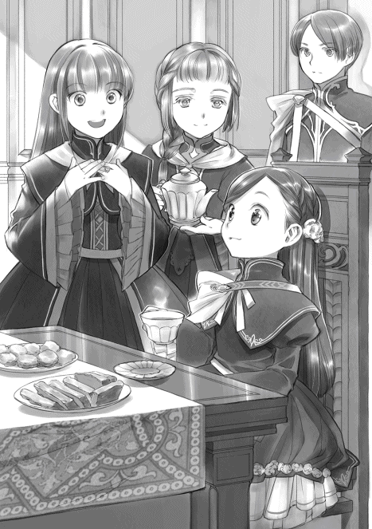
リーゼレータの髪は動くのに邪魔にならないようにきっちりと整えられていて、濃い緑の瞳が理知的な光を宿していた。色合いは違うけれど、その顔立ちはアンゲリカに似ている。姉妹か、従妹 か、血族ではないだろうか。わたしは背後のアンゲリカを振り返った。
「リーゼレータはアンゲリカとよく似た顔立ちをしていますね」
「はい、わたくしの妹です。わたくしと違って、優秀で両親の誉 れなのです」
リーゼレータは目端 が利くようで、お菓子を摘まんで汚れた手を拭 うための布を準備したり、近くに座る新入生にお茶のお替りを注いだり、くるくると動いている。無駄口を叩くことはなく、笑顔を忘れない控えめな仕事ぶりからも、教育が行き届いていることがよくわかった。アンゲリカとリーゼレータは顔立ちが似ているけれど、言動が全く違う。
......優秀な側仕えの血筋は、こっちに凝縮されてるってことかな？
「でも、アンゲリカは側仕えに適性がなかっただけで、騎士としては優秀でしょう？」
「その通りですわ、ローゼマイン様」
突然入ってきたアンゲリカの擁護 にわたしが目を瞬いていると、アンゲリカが少し困ったように「ユーディット様」と少女の名を呼んだ。ユーディットは冬の子供部屋で三年前に見たことがある。確かわたしの一つ上だっただろうか。ふわふわとした明るいオレンジの髪をアンゲリカと同じようにポニーテールにしていて、菫 色の目がキラキラと輝いていた。
「アンゲリカ様は中級騎士でありながら、身体強化の魔術を使いこなし、ボニファティウス様に認められて弟子入りできるのですもの。とても素晴らしいです。それに、主であるローゼマイン様に認められ、魔力を与えられた魔剣シュティンルークは意思を持ち、語ることもできます。他にはない特別な魔剣でしょう？ わたくしも魔剣を育てたいと考えているのですけれど、魔力が足りなくて、身体強化もできないのです」
アンゲリカの凄さを一生懸命に訴えるユーディットの言葉を、わたしは笑顔で聞いていた。自分の護衛騎士が褒められるのは、やはり嬉しいものだ。
「身体強化ができるようになったアンゲリカはとても凄いのですね？ わたくしが眠っていた二年間に成長した、とボニファティウス様に伺いましたけれど」
「そうなのです！ わたくしもボニファティウス様に認められるくらい強くなりたいと思っています。アンゲリカ様はわたくしの目標なのです」
......ユーディットはどうやらアンゲリカ信奉者らしい。
「ユーディット様、もう止めてくださいませ」
「そうですね。騒がしくしてはローゼマイン様が寛げませんもの。主に対する細やかな気遣いまでされるなんて、わたくしも見習わなくてはなりませんね。失礼いたしました」
ユーディットがアンゲリカの言葉を勝手に良いように受け取って、解釈しているのがわかった。わたしがちらりと見上げると、アンゲリカは困ったようにユーディットから視線を逸らしていて、コルネリウスは笑いを堪えるようにしている。ユーディットに褒めまくられて、普段褒められることがないアンゲリカが照れて対応に困っていた。
「ユーディットはアンゲリカを慕う良い子ですね」
「......いいえ。良い子ではなく、変わった子です、ローゼマイン様」
困りきった声の訂正にクスクスと笑いながら、わたしは部屋の中に視線を巡らせた。部屋の中は暖かなカーペットが敷かれたり、壁にはタペストリーが掛けられたりしているが、どれにもマントと同じ色が使われている。
装飾に目を向けたことで、わたしは隔離 されるような位置に座っている者達に気付いた。皆が俯 き加減なせいで、暗い雰囲気が漂っていて、時折こちらを見る視線には交じりたくても交じれないような悔しさが浮かんでいる。その中に、一生懸命にお話を集めてくれていたローデリヒの姿があり、わたしは背後を振り返った。
「コルネリウス、あの子達は何故あのように遠い位置にいるのですか？」
「あちらに固まっているのは旧ヴェローニカ派の親を持つ子供達です。あの中には二年前の狩猟 大会でヴィルフリート様を罪に陥れた者もいます。ヴィルフリート様やローゼマイン様に危険が及ばぬように、こうして距離を取っているのです」
元々最大派閥だったヴェローニカ派の人数は多かった。二年経った今でも完全に崩壊はしていないようで、貴族院の学生でも四分の一くらいは警戒対象なのだそうだ。同じ寮で生活する六十五名の中の十五人があのような状態では、皆で協力してエーレンフェスト全体の成績を向上させるのは難しいと思う。
「彼等をこちらの味方につけられるように、何とかできないかしら？」
「派閥というのはこういうものです。ヴェローニカ様に疎 まれていたフェルディナンド様は領主の子でありながら、あのような立場に置かされていた、とエックハルト兄上から伺いました。兄上が入るまでは、先代の領主様から直々に命じられた者しか側近がいなかったそうです」
フェルディナンドもあんな視線で最大派閥を見ていたのか、と考えたけれど、その構図がどうにも想像できなかった。構われないのをいいことに、嬉々 としてマッドサイエンティストへの道を着々と歩んでいく姿しか思い浮かばない。あらゆる口実や言い訳を駆使して、自由にできる環境を死守し、貴族院に居座ったに違いないと思ってしまう。
......城では苦労したみたいだけど、エックハルト兄様の話を聞く限りでは、貴族院では生き生きしていたみたいだし、今回みたいに「自分のために」周囲を動かしたに決まってるよ。
「ヴィルフリート様が到着されました」
「すまない、待たせたな」
ヴィルフリートが自分の側近と共に入ってくる。お茶やお菓子を準備するのも側近のようで、数人が細々と動く中、ヴィルフリートはわたしの隣に準備されている椅子へ座った。
「ここが貴族院の寮か。城の雰囲気とよく似ているな」
ヴィルフリートの独り言のような言葉に「えぇ、そうですね」と突然背後から答えが返ってきた。振り返ると、真面目そうな細身の女性が穏やかな笑みを浮かべてそこにいる。年の頃は三十代の後半から四十代前半くらいだろうか。研究者っぽく見えるのは、左の目にモノクルをかけているからだろう。
「エーレンフェスト寮の寮監を務めております、ヒルシュールと申します」
ヒルシュールは元々エーレンフェストの貴族で、成績優秀だったため中央で勤めることになり、今は貴族院の先生で魔術具に関する講義を行っているらしい。
「先日、フェルディナンド様より久方振りのお便りをいただきました。ローゼマイン様はフェルディナンド様の愛弟子 だそうですね。領主候補生、騎士見習い、文官見習い、全てで最優秀の成績を収めた天才児の愛弟子がどのようなことをなしてくださるのか、わたくし、楽しみでなりません」
......天才の愛弟子？ わたし、いつの間にそんなことになってるの？ あれ？ なんかめっちゃハードルが高くなってない？
わたしが何とも返事できないうちに、ヒルシュールは一度ニコリと笑って部屋の中央に立ち、新入生に向けた寮の説明を始めた。
この寮は三階が女子の部屋、二階が男子の部屋、一階にはホールや食堂など共同で使う部屋があるそうだ。男子が三階に上がるのはご法度 で、階段を騎士見習いが交代で見張ることになるらしい。各階の最奥は領主及びその夫人の部屋となっていて、領主会議の時に使用されることになっているとのことである。
「試験に受からず、春も貴族院に残るようなことになれば、悪い意味で領主夫妻に顔と名前を憶 えられます。皆様、お気を付け下さいませ」
......おおぅ、アンゲリカ。
各階には領主候補生の部屋が三つあり、その周囲の部屋は側近が使う。側近を除くと、奥の方が上級貴族で、階段に近い部屋が下級貴族になるそうだ。下級貴族と中級貴族の部屋は複数人で使う相部屋となっているが、お金を積めば個室にもできるらしい。食事は皆で摂るようになるようで、食堂の開く時間を教えられた。お風呂は城と同じように各自の部屋でそれぞれが準備をすることになっているそうだ。
「進級式と親睦 会が二日後にあり、その次の日からは講義が始まります。それまでに新入生は寮の生活に慣れ、講義の準備をしておいてください。何事にも準備は大事ですから。何か質問はございますか？」
わたしは元気良く手を挙げた。ヒルシュールはもちろん、全ての視線がこちらに向けられる。
「はい！ この寮の図書室はどこですか？」
わたしがわくわくしながら尋ねると、ヒルシュールは困ったように笑った。
「寮の中に図書室はございません。貴族院には図書館がございますから。それに、図書館が開館するのは講義が始まってからです。領地ごとに順番で新入生に対する使い方の説明があり、新入生が図書館に出入りできるようになるのは、その後になります」
ヒルシュールは胸を高鳴らせながら図書館の話を聞いているわたしを見て、何とも言えない複雑な笑みを浮かべた。
「ローゼマイン様はお勉強熱心なのですね。領主候補生が勉強や読書に身を入れれば、皆がつられてお勉強するでしょう。期待しておりますよ」
......それはつまり、領主候補生であるわたしが本を読んでいれば、皆がつられて本を読むようになるということかしら？ 頑張って読まねば！
ヒルシュールの説明が終わった頃に、リヒャルダがやってきた。
「ローゼマイン姫様、お部屋の準備が整いましたよ」
リヒャルダに促され、わたしはひとまず自分の部屋に向かう。廊下が長いので騎獣を使うように、と言われて、わたしは騎獣を出して乗り込んだ。
「私がお供できるのはここまでです」
男であるコルネリウスが同行できるのは二階までだ。この後はアンゲリカだけが護衛騎士となる。三階に上がると長い廊下の両脇に扉が並んでいた。わたしの部屋は奥の方だ。結構遠い。三階まで階段を上がり、廊下を奥まで歩くとなれば、騎獣がないと途中で行き倒れるかもしれない。
「こちらが姫様のお部屋でございます」
部屋の中は城の部屋とあまり変わらない配置で準備されていた。わたしが違和感なく生活できるように、そして、リヒャルダが慣れた動線で働けるように、と考えられた結果だろう。
「では、姫様。側近を決めてしまいましょう。今日の持て成しで、姫様の目に留まる者はいましたか？ こちらから選んでくださいませ」
執務机、いや、ここでは勉強机だ。勉強机にはすでに数枚の紙が準備されていた。コルネリウスに頼んで作成してもらった学生の一覧表で、わたしが側近にしても良い者には〇、身分や立場が微妙だが、わたしの意見次第では側近に入れても構わない者には△、警戒対象なので止めておきなさいという者には×を付けてもらっている。すでにヴィルフリートやシャルロッテの側近となっている者には二人の頭文字が入っていた。
「えーと、ブリュンヒルデは〇、リーゼレータも〇、ユーディットも〇、フィリーネは△、ローデリヒは×......」
わたしは自分の記憶に残っている者について、一覧表を見ながら呟いていく。
「ローデリヒはヴィルフリート様を陥れた者ですから、姫様の側近には相応しくございません」
「本人には陥れる気などなくても、親に言われた通りに行動していたら、そうなったという可能性も高いでしょう？ ヴィルフリート兄様に更生の機会を与えたように、わたくしは本人を見て決めたいのですけれど......」
「今のようにほとんど本人を知らない状態で側近に入れるのは無理ですよ」
わたしの意見はリヒャルダによって却下されたが、確かにその通りである。
「ローデリヒ以外で姫様のお目に留まった者は側近として遇しましょう。側仕え見習いにブリュンヒルデとリーゼレータ、護衛騎士見習いにユーディット。ローゼマイン様がお望みでしたら、文官見習いにフィリーネを入れるのは構いません」
リヒャルダがわたしの意見を踏まえて、次々と側近を決定していく。
「ですが、下級貴族のフィリーネを支えたり、指導したりできる上級の文官見習いが必要ですね。ローゼマイン様に異議がなければハルトムートを側近に加えませんか？」
「ハルトムートとはどなたですか？」
「オティーリエの末息子です。人懐 っこい子で人と関わるのが好きなようですね。情報を集めるのがとても上手いですよ。父親似なのでしょう」
コルネリウスと同い年で、わたしの洗礼式より前に貴族院に入っているのでよく知らないけれど、オティーリエの息子でリヒャルダが推薦するならば問題ないと思う。
「後は......コルネリウスの後任にできる騎士見習いも選んでおいた方が良いでしょう。トラウゴットはいかがですか？ わたくしの娘と、ボニファティウス様の息子の間に生まれた子です」
「おじい様とリヒャルダの孫......。聞くだけでとても強そうですね」
「まだまだ、でございますよ。ローゼマイン様の魔力圧縮方法を教えられ、護衛騎士としてボニファティウス様に鍛えられたコルネリウスとは比べものになりません」
トラウゴットはヴィルフリートの護衛騎士見習いになるという話もあったそうだが、ヴィルフリートがわたしの許しを得て、その護衛騎士に魔力圧縮方法を教えられるのがいつになるかわからないので渋ったそうだ。そんな話を聞くと、ほぼ内定していた次期領主の座から下ろされたヴィルフリートも、側近集めには結構苦労したようである。
「それから、アンゲリカの後任としてユーディットを入れるのは構いませんけれど、アンゲリカは後任の指導に向きませんね。どうしましょうか？」
「リヒャルダのおっしゃる通りです。申し訳ございません、ローゼマイン様」
あまり悪いとは思っていなさそうなアンゲリカの声にリヒャルダが溜息を吐いた。
「コルネリウスに教育を頼むとは言っても、やはり女性同士でなければ言いにくいことなどもございますからね。女性騎士の取りまとめというか、コルネリウスと連携して指導できる女性の騎士見習いが必要だと存じます。心当たりはございませんか、アンゲリカ？」
リヒャルダに問われても、こてりと首を傾げるだけで返事はない。最初から考える気がないのだ。わたしは苦笑しつつ、「自分の代わりに色々と考えてくれそうな女性の騎士見習いに心当たりは？」と尋ねてみた。その途端、アンゲリカは真剣な目で考え始める。
「......レオノーレはコルネリウスと仲も良いですし、考えることが得意だと思います」
「アンゲリカ自身は基本的に全く考える気がないですね」
「はい。その通りです」
......どうしよう。アンゲリカが二年前より思考することを放棄している気がする。
「こら、主！ はきはきと返事をすれば良いというものではない。主は主の師匠から教えを受ける度に、どんどんと感覚に頼るようになっている。もう少し考えることも身に付けるように」
魔剣のシュティンルークがお説教を始めたので、わたしが出る幕はなさそうだ。フェルディナンドと同じ物言いをするシュティンルークにお小言は任せておこう。
「レオノーレに打診して、色よい返事がいただけたら、護衛騎士に加えましょう」
「かしこまりました、姫様」
これでひとまずの側近は決定である。
成績向上委員会
「姫様、側近の件は皆に快く承諾いただけました。すでに部屋の移動を始めてもらっています。殿方は三階に上がれないので、夕食後の発表の後に顔合わせですね」
側近の内定と夕食後に発表することを伝えに行ったリヒャルダが戻ってきた。側近になった者は側近用の部屋に移動しなければならないらしい。扉の向こうがバタバタとし始めた。おそらく大々的に側近たちの引っ越しが始まったのだろう。
「ローゼマイン様、側近を通してよいでしょうか？」
「えぇ、通してちょうだい」
扉前に控えていたアンゲリカがわたしに扉を開ける許可を求める。扉が開けられると、わたしの側近になった子達が次々と部屋に入ってきた。彼女達のお部屋を側仕えと下働きが整えている間、ここで挨拶や仕事の分担についての話を行うそうだ。
ブリュンヒルデが一番に入ってきて、わたしの前に跪いた。
「ローゼマイン様、お引き立てくださり、大変嬉しく存じます。流行の発信については、ぜひわたくしにお任せくださいませ」
「えぇ。ブリュンヒルデには社交に関することをお願いするつもりです。ご存知の通り、わたくしは二年間眠っていたため、国内の細やかな情勢にも派閥や領地同士の繋がりにもあまり詳しくございません。色々な情報を集め、社交の場におけるわたくしの補佐を期待しています」
ブリュンヒルデの挨拶の後にはリーゼレータが静かにわたしの前に膝をついた。
「貴族院の進級さえ危ぶまれていたお姉様を救ってくださったローゼマイン様には、家族一同、いえ、一族一同感謝しております。わたくし、ローゼマイン様が心地良く過ごせるように精一杯お仕えしたいと存じます」
「リーゼレータはわたくしに仕えるため、目覚めを待っていてくれた、とアンゲリカから聞きました。その気持ちを嬉しく思います。これからよろしくお願いいたしますね」
基本文字が書ければ、参考書づくりや課題のお手伝いから仕事を始められる文官見習いと違って、側仕えは主を不快にさせないように一年間は研修しなければ、誰かの専属として仕えることはできない。わたしが洗礼式の時に一年生だったリーゼレータは、わたしに仕えるのだと一年間の研修を終えた直後、わたしが襲撃を受けて眠ってしまったそうだ。運の悪さに愕然としていたが、わたしが眠る間にアンゲリカがどんどん強くなるのを見て、奮起したらしい。
「姫様、側仕え見習いの二人には、わたくしがこの部屋での仕事について教えます」
わたしが頷くと、リヒャルダは部屋の説明や一日の予定について話をし始めた。側仕え見習いにはリヒャルダが教えてくれるので問題ないだろう。わたしは並んで跪いている騎士見習い達に視線を向ける。ユーディットが興奮冷めやらぬ顔でこちらを見上げていた。
「ローゼマイン様にお仕えできるなんて嬉しいです。わたくしもできる限り強くなって、お役に立ちたいと存じます」
「ユーディットの頑張りに期待しています」
その隣に跪いているレオノーレは葡萄 色の髪に、知的な藍色の瞳の少女だった。雰囲気が落ち着いているためか、発育が良いせいか、とても大人びて見える。騎士見習いと言われなければわからない。文官見習いかと思う容貌 だ。
「ローゼマイン様、護衛騎士にお引き立ていただき、ありがとう存じます」
「レオノーレ、わたくし、貴女には大変なお仕事を頼んでしまったと思っております。何か問題があれば、わたくしも協力いたしますので、コルネリウスと相談しながらアンゲリカとユーディットを補佐し、導いてほしいのです」
レオノーレはアンゲリカとユーディットに視線を向けた後、表情を引き締めて頷いた。
「......誠心誠意努力いたします」
断られなくて良かった、とわたしは胸を撫で下ろし、同じように「考えてくれる人が入って良かった」と嬉しそうに微笑んでいるアンゲリカに声をかけた。
「アンゲリカ、二人にこの部屋における護衛騎士の仕事と分担について話をしてください」
「かしこまりました」
アンゲリカの説明が下手でも、シュティンルークがきっと何とかしてくれるとは思うけれど、思考放棄に関しては少し対策を練らなければならないだろう。むーん、と唇を尖らせるわたしの前にフィリーネがおどおどとした様子で膝をついた。
「あの、ローゼマイン様。側近に引き立てていただけて嬉しいのですけれど、本当にわたくしのような一年生の下級文官を側近にしてもよろしいのですか？」
不安そうにフィリーネが尋ねる。下級貴族が領主一族に取り立てられることは少ないので、心配になる気持ちはわかる。しかし、フィリーネは唯一わたしのためにお話を各地から集めてきてくれると誓ってくれた。わたしにとっては同志なのである。
「わたくしがフィリーネにお願いしたいのは、基本的にお話集めです。それに、フィリーネを支えたり指導したりするために上級貴族の文官見習いもいます。何より、下級貴族ということで嫌な思いをすることがあれば、必ず相談してください。フィリーネを取り立てたわたくしが対処します」
「ありがとう存じます、ローゼマイン様」
皆が側近としての打ち合わせを始める中、わたしはフィリーネと一緒に成績向上委員会について話をすることにした。
「成績向上委員会とは何でしょう？」
「領主候補生が貴族院に入学するにあたって、アウブ・エーレンフェストからエーレンフェスト全体の成績を上げるように、と命じられたのです。わたくしが在学する間に成績を上げなければなりません。その成績を上げるための委員会です。会長はわたくしとヴィルフリート兄様ですが、エーレンフェストの学生は全員所属させます。誰一人として逃しません」
そう言いながら、わたしはダームエルがまとめた貴族院に関する情報の資料を広げた。中央を含めて二十一ある領地の中で、エーレンフェストは真ん中辺りをうろうろしている。去年は十三位だったそうだ。辛うじてまだ真ん中辺りにいるが、元々は小領地と最下位争いをしていたのがエーレンフェストで、フェルディナンドが在籍していた時だけ浮上して、卒業と同時に右肩下がりに落ちていったらしい。つまり、一人の天才がいるだけではダメなのだ。エーレンフェスト全体の成績を上げるシステムを作っておかなければならない。
「これから先、どのようにして成績を上げるのですか？ 上級生の方々によると、カルタや絵本でかなり成績が上がったと伺っていますけれど」
「カルタや絵本で上がったのは低学年の成績なのです。さすがにカルタや絵本だけでは高学年の成績は上がりません」
低学年も目に見えて上がったのは座学だけだ。後は実技の音楽が少し強化されたくらいだろう。それまでが低かったので急激に伸びているように見えるだけで、改善の余地は多い。
「わたくしが眠っていた二年間にコルネリウス兄様が優等生になったそうです。それは、ダームエルと共にアンゲリカに座学を教えることで一学年先の勉強をしていたからですし、効率的な魔力圧縮を覚えて、おじい様......ボニファティウス様に鍛えられたせいです」
どうやら「アンゲリカの成績を上げ隊」の頑張りにつられたのか、多少は他の騎士見習いの成績も上がっているが、コルネリウスの上がり方とはずいぶん差がある。逆に、皆に手をかけられても座学が辛うじて合格というアンゲリカの成績には頭を抱えるしかない。
「確か、魔力の圧縮方法もローゼマイン様が考えられたのですよね？」
「えぇ、貴族院から戻ったら教えるつもりです。魔力圧縮方法は首脳陣の許可とお金が必要になるので、今この場で教えることはできません。フィリーネも魔力圧縮方法を知りたければ、今の内からお話や情報を集めて、自分のためにお金を稼いでおくと良いですよ」
各地のお話を買い取ります、とわたしが言うと、フィリーネは若葉のような目を輝かせた。
「頑張ります。......わたくしはお金を稼ぐための期間があって助かりますけれど、エーレンフェストに戻ってからということは、すぐに魔力を上げることはできないのですね？」
「えぇ。ここにいる学生全員に効果があり、すぐにできるのは座学の成績を上げることです」
貴族院は一年生と二年生は全て共通科目で、基礎を教えられ、三年生からはそれぞれ専門のコースに分かれて学ぶことになっている。一年生と二年生の座学については、わたしはすでにフェルディナンドから全て叩き込まれ、「初日の試験で合格しておけ」と言われている。何より、そのくらいの常識がなければ、上級貴族が集まるお茶会で碌な受け答えができないらしい。ヴィルフリートもすでに終えていると聞いている。領主候補生や上級貴族、兄姉 がいる者は低学年の試験に初日で合格するのが当然だそうだ。ただ、座学は初日に合格しても、その後の実技や社交に時間を割 かなければならないと聞いている。
わたしはできるだけ図書館に時間を割きたい。そのためには、わたしが図書館へ行っても、皆が勉強するように事前準備が必要だ。今の学生はカルタや絵本で勉強しているので、三年生くらいまでの魔術や神学は何とかなると思う。算術も問題ない。でも、歴史や地理に関しては個人差が激しいと思う。わたしも知らないことが一番多かったのは歴史と地理だ。
「兄姉がいた人は、彼等が作ったり、教えてくれたりした木札や資料の参考書を持っていることが多いでしょう？ それらを使って皆で成績を上げようという雰囲気を作りたいのです」
騎士見習いはエックハルトの資料があるので、コルネリウスが出してくれれば皆が勉強できると思う。他のコースも同じように、それぞれが抱え込んでいる資料を出し合えば、グッと勉強が楽になると思うのだ。
「旧ヴェローニカ派の子供達も含めて、エーレンフェスト全体の成績を上げたいのです」
「わかります。ローゼマイン様がいらっしゃった冬の子供部屋は、年齢も派閥も関係なく、それぞれの進度に合わせた課題が与えられ、皆がお菓子の賞品を目指して努力していました。わたくし、あの雰囲気がとても好きだったのです」
フィリーネが懐かしそうに目を細めて笑う。わたしがいない二年間の内、一年目は狩猟大会で学友に陥れられ、襲撃を受けたヴィルフリートが旧ヴェローニカ派の子供に敵意を剥き出しにしていたらしい。シャルロッテが取り成し、そのような感情を表に出さない訓練をさせられ、表面上は落ち着いたように見えたようだ。だが、今でも席を作る時は旧ヴェローニカ派を隔離するし、側近に召し上げたり、重用したりできない。この現状を何とかするのが急務である。フィリーネが好きだと言ってくれた冬の子供部屋の雰囲気を貴族院でも作りたい。
......賞品を目指して、皆で競争するのが一番かな？ 後はエーレンフェストの外に敵を作れば、ちょっとは領地内でまとまる気になるかも？
「夕食の後、残ってくださいませ。わたくしの側近の発表と二年分の情報料の支払い、それから、皆様にアウブ・エーレンフェストからのお言葉を伝えなければなりませんから」
わたしは食堂に集う皆にそう言った後、席に着いた。テーブルはおよそ派閥ごとになっている。十二人が座れる大きなテーブルにわたしやヴィルフリートは自分の側近達と、それ以外は仲の良い者同士で共に食事を摂っているようで、四つのテーブルに分かれて座っている。
......すでに側近が誰なのか丸わかりなのに、わざわざ発表するんだよね。
「幾千幾万の命を我々の糧 としてお恵み下さる高く亭亭 たる大空を司 る最高神、広く浩浩 たる大地を司る五柱 の大神、神々の御心に感謝と祈りを捧げ、この食事をいただきます」
ヴィルフリートのお祈りに続けて皆が祈りを捧げ、食事に手を付ける。ちなみに、わたしとヴィルフリートだけ別メニューである。別メニューとはいってもデザートがつくだけだけれど。同じテーブルで食事をしている皆が、驚きに目を見張りながら食事をしているのが見える。
「数年前から格段においしくなりましたけれど、今年はまた一段と味が......」
「貴族院の楽しみはこのお食事ですよね。わたくし、初めて食べた時には驚きました」
寮には城の料理人を派遣しているので、三年前から食事の質はぐぐんと上がっていたらしい。今年はフーゴとエラがいるので、更においしくなったそうだ。昔を知っている上級生と入った時からおいしい食事ができていた下級生で意見が違うのが面白い。
「今年はわたくしの専属料理人も貴族院に派遣されましたからね。この二年間によく修業してくれたようです。そうそう、これらのレシピ本もこの冬の終わりに発売する予定ですの」
「まぁ、レシピというと、作り方が載っているのですか？」
ブリュンヒルデが口元を押さえて上品に驚く。わたしも少しこの上品さを見習う必要がある。
「絵本より高価ですが、レシピ本にはそれだけの価値があると思っております」
「えぇ、ローゼマイン様のおっしゃる通りですね。レシピにはとても価値がございます。中央での販売もお考えですか？」
「貴族院でレシピ本を広げていくのは、来年か、その次でしょうね。今年はお茶会でお菓子を一種類か二種類だけ披露して、周囲の興味を引くに止めておこうと考えています。あまり急激に変えるのは反動が大きいですから」
流行を発信したいと言っていたブリュンヒルデは、少しだけ不満そうに唇を尖らせた。お上品で大人びた印象だけれど、そんな表情をすると年相応に見える。わたしは小さく笑った。
「流行も少しずつ小出しにしていった方が良いのですよ、ブリュンヒルデ。わたくしは確かに領主候補生ですが、領地によって領主候補生にも差はあります。中央の王族や大領地の領主候補生を上級貴族だと考えれば、中領地であるエーレンフェストのわたくし達は中級貴族です。中級貴族がいきなり流行をたくさん発信すれば、上級貴族にどう思われますか？」
ハッとしたようにブリュンヒルデが顔を上げた。
「流行として発信できる物を武器に、どの上流貴族と繋がり、影響力を得ていくのが自分達のためになるのか、よく吟味 する中級貴族のように行動しなければならないのです。いきなり手の内を全て晒す必要などありません。少しずつ情報を出せば良いのですよ」
「かしこまりました」
こうして食事を終えると、わたしは自分の側近を発表した。同じ席についているので一目でわかるが、正式に発表することが大事なのだそうだ。
「では、わたくしの側近を発表いたします。側仕え見習いはリーゼレータとブリュンヒルデ、騎士見習いはアンゲリカ、コルネリウス、レオノーレ、トラウゴット、ユーディット、文官見習いはハルトムートとフィリーネです」
女の子は部屋で顔を合わせたけれど、男の子は夕食の席で初めて顔を合わせたに近い者もいる。三年前の子供部屋で初対面の挨拶は済んでいるが、一度に挨拶を受けた人数が多すぎて、正直な話、ブラックリストに載っていた警戒対象以外はほとんど覚えていない。
「ローゼマイン様にお仕えできて光栄です」
わたしの前に出てきて跪き、そう言ったトラウゴットは十二歳で上級騎士見習いの三年生だ。リヒャルダの娘とボニファティウスの第二夫人の息子の間に生まれた子だと聞いていたが、見た目はボニファティウスにもリヒャルダにも似ていない。濃い色合いの金髪と群青 色の瞳で、あまり表情が動かず、寡黙 な雰囲気に見えた。
トラウゴットの次に出てきたのはハルトムートだ。
「貴族院で情報を収集するという指令が出て以来、ローゼマイン様の目覚めをお待ちしておりました。お仕えできること、嬉しく存じます」
まるでユストクスのようなことを言った。だが、ユストクスと違って特徴的な朱色の髪が諜報活動には向かない。にこにことした穏やかな雰囲気の中に、茶目っ気を感じる橙 のような明るい瞳がある。上級貴族の文官見習いで十四歳の五年生、オティーリエの末息子だそうだ。
一通りの挨拶を終えると、わたしはリヒャルダにお金の詰まった袋を持って来てもらった。
「わたくしが眠っていた間、有益な情報を集めてくださった方々に感謝を込めて、これから情報料をお支払いいたします」
わたしは情報提供者の名前を呼び、お金を渡していく。ブリュンヒルデの衣装や流行に関する情報はフロレンツィアやエルヴィーラから高い評価を得ていたし、ハルトムートの情報はフェルディナンドがとても喜んでいた。誰が評価していたかも一言添えて、お金を渡していくと皆が誇らしそうに目を輝かせた。
「それから、ローデリヒ、フィリーネの二人は、わたくしのためにたくさんのお話を集めてくださいました。おかげで新しい絵本がまた作れそうです」
貴族院に所属していたわけではない二人だが、わたしが一番欲しかった情報を集めてくれたのだ。ちゃんと情報料は渡しておく。そうすれば、お金目当てに新しいお話が増える可能性が高い。フィリーネは嬉しそうにわたしの前へとやってきて受け取ってくれたが、ローデリヒはものすごく戸惑った顔でわたしとお金と自分の手を見比べた。
「......私がいただいてもよろしいのですか？」
「当然でしょう？ これはローデリヒが頑張った分ですもの」
まさか認められると思わなかった。そんな顔でローデリヒがわたしを見て、泣きそうに一瞬顔を歪めた。
「ローデリヒにはこれからも期待しております。貴族院でも色々なお話を集めてくださいね」
「恐れ入ります。......必ず、ご期待に添えるよう頑張ります」
ローデリヒがぎゅっときつくお金を手に握りこんで、自分の席に戻っていくのを見ていたヴィルフリートは、視線を険しくしてわたしを見た。
「ローゼマイン、其方、知らぬのか？ ローデリヒは......」
「行いは公正に評価するべきですよ、ヴィルフリート兄様。ローデリヒはわたくしのためにお話をたくさん集めてくれました。わたくしはそれを評価しただけです。成し遂げた成果を評価することに、派閥は関係ございません」
わたしの言葉にざわめいたのは、旧ヴェローニカ派の集まるテーブルだった。
「ローゼマイン様。ならば、私が集めた情報でも公平に評価してくださるのですか？」
「もちろんです。人はそれぞれ価値観が違います。ブリュンヒルデは流行や衣装に、ハルトムートは領地間の関係に重きを置いていました。その情報を喜んだ者もそれぞれ別人です。ですから、貴方 が持ち込んだ情報を喜ぶ人がいれば、それは正当に評価します」
旧ヴェローニカ派の者は全く情報を持って来ていないので、親から禁止されたのか、と思っていた。だが、派閥で禁止されていたわけではなく、評価など得られないと思っていたからだったようだ。ヴィルフリートの態度を見ていれば、そう思うのも仕方がない。
「では、これからアウブ・エーレンフェストより託された言葉を皆に伝えたいと思います。今年からわたくし達が領主候補生として在籍し、来年はシャルロッテの入学も控えています」
わたしの言葉にヴィルフリートも立ち上がり、皆に向かってハッキリとした声で語りかける。
「領主候補生が在学するおよそ十年間に、できるだけエーレンフェストの影響力を上げたい。そのために皆一丸となり、協力して欲しいとのことだ」
「まず、エーレンフェストの成績を上げるためにはどうすれば良いか考えましょう」
わたしの言葉にすぐに騎士見習い達から意見が上がった。
「ローゼマイン様の魔力圧縮方法を教えていただければ、それだけでかなり向上すると思います。領地の成績を上げるため、我々にも教えてください」
実際に魔力圧縮方法を教えられたアンゲリカとコルネリウス、シャルロッテの護衛騎士見習いであるエルネスタは目に見えて魔力が増えた。何より、下級騎士であるダームエルが未だに少しずつ魔力が伸びていることは騎士団の中では周知の事実になっているそうだ。
「......わたくしの魔力圧縮方法は、わたくしが信用できると思う者に少しずつ広げていくつもりなのです。この冬に貴族院での行いをよく見た上で、教える者を選別し、貴族院が終了した後、首脳陣の許可を取った上で、その講義を行う予定です」
「それは本当ですか？」
「えぇ。けれど、人選も首脳陣の許可が必要ですし、高額なお金も必要です」
期待に顔を輝かせる者、諦めの表情になる者、様々な顔が見える。
「ですから、魔力の圧縮方法で魔力を上げていくのは、春以降の話です。今年は座学を上げたいと考えています。座学の成績を上げるのは自分のため、エーレンフェストのためです。派閥など関係なく、全員の成績を上げていきましょう」
わたしの言葉に皆が顔を上げた。何を言い出すのか、と警戒した顔がちらほらとあるところにわたしは少し肩を竦 め、口を開いた。
「まず、班分けをいたします。共通科目しかない一年生と二年生は学年ごと、専門コースに分かれる三年生以上はコースごとに分けます。一年生チーム、二年生チーム、騎士見習いチーム、文官見習いチーム、側仕え見習いチームです」
チーム分けには人数にばらつきはあるけれど、大体十人くらいである。参考書や情報の共有について考えると、この分け方が一番効率は良いと思うが、すぐに不服の声が上がった。
「ローゼマイン、正気か!? 班を分けるならば、派閥ごとにした方が......」
「そうです。派閥の違う者と協力などできません！」
「ローゼマイン様、どうか疎まれている者の立場もお考えください」
ヴィルフリートからも、同派閥の者からも、旧ヴェローニカ派からも否定的な意見が上がった。けれど、わたしはこの派閥別という寮内の雰囲気を何とかしたいのだ。派閥を考慮していたら全く意味がない。やいのやいのと意見が上がる中、わたしはできるだけ呆れた表情全開で頬に手を当てて、首を横に振った。
「皆様、ずいぶんと派閥争いがお好きなようですけれど、国内ではエーレンフェスト自体が片田舎で、特に見るべきところがないと思われていることはご存知ですよね？ その中でいがみ合っている場合ではないでしょう？」
「そ、それは......」
「其方、自分が襲撃されたことを忘れたのか!? 」
ヴィルフリートの指摘に、わたしはゆっくりと溜息を吐いた。ずいぶんと派閥に拘 ると思っていたが、どうやらわたしを守るためだったらしい。ありがたいけれど、ちょっと困る。
「忘れてはいませんし、腹立たしくは思っています。けれど、ここ貴族院には頼るべき親がいません。逆を言えば、わたくし達の行いを監視し、強制する親もいないのです。派閥争いなどエーレンフェストに戻ってからで十分ではありませんか。わたくし達が相手にしなければならないのは、他領の優秀な学生達ですよ。まず、そこを理解してください。貴族ならば、その時の利を考えて、感情を隠し、敵と手を組むこともできなければなりません。そう教わりませんでしたか？ まったく誰も彼も器の小さいこと」
わたしが食堂内を見回すと、ヴィルフリートはもちろん、他の子供達も押し黙った。
「いきなり頭ごなしに勉強しろと言われても、すぐにはやる気がでないでしょう？ ですから、わたくし、皆のやる気を引き出すために賞品を準備いたしました。一番にチーム全員が試験合格したチームと最も優秀者が多かったチームには、カトルカールのレシピを進呈いたします。エーレンフェストに戻って、自宅の料理人に作らせてもよろしくてよ」
レシピを公開しても良いとフリーダには言ったし、わたしも親しい人には教えていたけれど、誰もが大金を払って得た新しいレシピを秘匿 しようとするので、実はカトルカールのレシピは今でもそれほど広がっていない。今のところ、エーレンフェストの貴族街ではギルド長の店で購入するか、フロレンツィアやエルヴィーラのお茶会に招かれなければ食べられないものになっている。そのレシピが賞品になれば、自宅で食べられるし、来客に茶菓子として自由に提供できるようになる。皆の目の色が変わった。不満そうなのはヴィルフリートとコルネリウスの二人だけだ。
「カトルカールを食べ慣れた方にはエラの新作お菓子の方がいいでしょうか？」
わたしがちらりと見ると、二人は笑顔で頷いた。どうやらやる気は引き出せたようである。
「低学年は全員合格するのが早いかもしれませんけれど、難易度が低いので優秀者に選ばれるのは難しいでしょうね。高学年は努力すれば、優秀者を多く出せるかもしれません」
少し考え込んでいた文官見習いのハルトムートがビシッと手を挙げ、コルネリウスを見た。
「ローゼマイン様、騎士見習いには魔力の圧縮方法を知る護衛騎士が複数いますし、エックハルト様から与えられた良い参考書もありますから、有利すぎると思います」
その途端、他からも賛同の声が上がり始めた。こんな時は派閥も関係なくなるようだ。
「参考書は他のチームでも兄姉がいれば何とか手に入るかもしれませんが、魔力だけはどうしようもありませんものね。確かに難易度の調整が必要かもしれません。......では、アンゲリカに座学でのシュティンルークの使用を禁じます」
「えっ!? それではあまりにも難易度が高すぎます！」
今度は騎士見習いの上級生達から悲鳴のような声が上がる。「そんな、ローゼマイン様......」とアンゲリカが息を呑んで真っ青になっているけれど、わたしは彼女を真っ直 ぐに見据えた。
「この二年間でアンゲリカはシュティンルークに頼るあまり、以前よりも考えるということをしなくなりました。これではいけません。自分の頭を使って、考えて、覚えてください。二年前はできたのです。今年もできるはずです」
「ローゼマイン様はわたくしがお嫌いなのですか？」
儚 げな雰囲気で泣きそうな顔をしてもダメだ。悲しげな顔で憂 える美少女になっているが、アンゲリカの外見に騙 されてはいけない。これは頭を使いたくない時の顔である。
「まさか。嫌いな者を護衛騎士にはしません。わたくしはアンゲリカの成長を願っているのです。シュティンルーク、聞きましたね。不正を行うことは許しません」
アンゲリカが助けを求めるように魔剣の魔石を撫でているのを見て、わたしはシュティンルークに声をかけた。フェルディナンドの人格や物言いをコピーした魔剣が不正など許すはずがない。「わかっている」と明確な声を返してくれる。
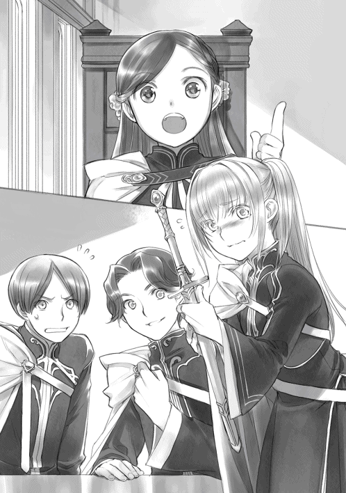
「不正など騎士として行うことではない。何より、主の成長を願うのは私とて同じだ」
「シュティンルークにも理解してもらえたようで何よりです」
「そんな、シュティンルーク!? ローゼマイン様!? 」
悲鳴を上げるアンゲリカを笑顔で激励しながら、わたしはぐるりと食堂内を見回した。
「では、チームごとにそれぞれ対策を練って協力し合い、講義に挑んでくださいませ。......さて、ヴィルフリート兄様。一年生はいつから対策会議を始めますか？」
ローデリヒや旧ヴェローニカ派の集まるテーブルをじっと見据えていたヴィルフリートがガタリと立ち上がった。
「今夜は各自、兄姉から聞かされた講義内容、持っている参考書について確認を行うように。明日の朝、朝食後すぐに対策会議を行う。勝利は我等のものだ！」
こうして、エーレンフェストの成績向上委員会が発足、成果を上げるための奮闘が始まった。
進級式と親睦会
新しい生活が始まった。わたしは筆頭側仕えのリヒャルダが一緒なので、城での生活とそれほど変わらない。ただ、わたしが起床した時にはリーゼレータとブリュンヒルデはすでに身支度を終えて部屋にいる。皆が起きている時に一人のうのうと寝ているのも気が引けるので早く起きたいけれど、お世話をされる立場のわたしが早起きすると、仕える者はもっと早く起きなければならない。起きていても寝台で準備が整うのを待つのがお嬢様の正解なのだ。
朝食は食堂で摂ることになっている。着替えを終えると、側近全員に加えて、それぞれの側仕えも一緒に食堂へぞろぞろと移動する。先触れが行っているようで、わたしが騎獣で二階に下りた時にはコルネリウス達も自分の側仕えを伴って待っていた。
「おはようございます、ローゼマイン様」
講義が始まると、悠長 に下げ渡して主と時間をずらして食事をするのが難しくなるため、学生の側近はわたしと共に食事を摂ることになっている。給仕はそれぞれが貴族院へ連れてきている成人の側仕えだ。わたしはリヒャルダに給仕されて食事をすることになる。
朝食を終えたら、フェルディナンドに叩き込まれた時の資料を持ってもらって、多目的ホールに移動する。一年生の対策会議が始まるのである。
「側仕えはリヒャルダがいますし、文官見習いはフィリーネが共にいるので、護衛騎士を一人残して、他の方は作戦会議があるならば、そちらに向かってもよろしくてよ」
「いくら寮内とはいえ、護衛騎士が一人では警護が手薄になりすぎです、ローゼマイン様」
コルネリウスとヴィルフリートが揃って表情を曇らせる。
「寮の中は大丈夫ですよ。フェルディナンド様がお守りをたくさんくださいましたから」
「お守り？」
「襲ってきた相手の方が可哀想 になるような危険な魔術具です」
シュタープを持っていないわたしはお祈りを唱えるか、怒りに理性を飛ばして威圧を発動しなければ攻撃らしい攻撃ができない。二年前の襲撃で咄嗟 の時には自分では何もできなかったことを報告すると、フェルディナンドが肌身離さず常に身に付けておくことで勝手に魔力を補充して、襲撃を受けた時にすぐに発動する魔術具をくれたのだ。
「対策を練られたら困るので、どのように身に付けているのかも、どのように発動するのかも決して口にしてはならないのですけれど、とてもフェルディナンド様らしい魔術具です」
わたしの「とてもフェルディナンド様らしい魔術具」という言葉に、コルネリウスとヴィルフリートが揃って表情を歪ませた。わたしが寝ている間にフェルディナンドとの間に何かあったのだろうか。
「......わかりました。ならば、ローゼマイン様の護衛はレオノーレに任せよう」
「いいえ、コルネリウス。護衛はぜひわたくしにさせてくださいませ」
アンゲリカがやる気に満ちた笑みを浮かべて前に出る。コルネリウスも気合いの入った笑顔を浮かべてアンゲリカと向かい合った。
「其方への対策こそが騎士見習いチームの勝利の鍵だ。対策会議に勉強会、どちらもアンゲリカがいなければ始まらないだろう？」
笑顔のコルネリウスにずるずるとアンゲリカが引っ張られていく。二人とも外見が成長しているけれど、二年前とやっていることが全く変わらない。引きずられていく様子を呆然とした顔で見ているユーディットに、くす、と笑いながら、わたしは視線を向けた。
「ユーディット、あちらのテーブルで二年生の話し合いが始まっていますよ」
「は、はい。行ってきます」
もしかしたら、いきなりユーディットの持っていたアンゲリカへの幻想を壊してしまっただろうか。可哀想だけれど、早いところ現実を知った方が傷は浅いに違いない。ちょっとお勉強が苦手すぎるだけで、アンゲリカの強さは本物だ。
「レオノーレはお勉強しなくても大丈夫なのですか？」
「ご心配には及びません。コルネリウスから資料をもらって、四年生の座学に関してはすでに目を通してあります」
わたしが「アンゲリカの成績を上げ隊」の苦労を思い出して「まぁ、とても優秀ですね」と褒めると、レオノーレは困ったように笑った。
「ローゼマイン様は二年前に覚えた内容だとコルネリウスから伺いましたけれど......」
「アンゲリカに教えるため、ダームエルと共に資料をまとめていただけです。完全に覚えたわけではありませんし、もう忘れました」
「またそのようなご謙遜 を。ローゼマイン様は控えめでいらっしゃいますね」
......いや、謙遜じゃなくて、事実なんだけど。
確かに「アンゲリカの成績を上げ隊」で覚えたことはたくさんあるけれど、すでにぽこぽこと忘れている。騎士の戦い方や魔術まで絡んだ戦術など、他領とのお茶会で話題には出ないと思うので、忘れたところで問題はないだろう。
「ヴィルフリート兄様が座学で苦労したのはどの辺りですか？」
「歴史と地理だ。それ以外は冬の子供部屋で勉強した範囲内で、十分に合格できるとモーリッツに言われている。他の皆に関しても、歴史と地理を重点的に勉強させ、少しでも実技の訓練を始めていかねばならないと思う」
ヴィルフリートは自分なりに考えたらしい教育計画をわたしに見せてくれる。算術、神学、歴史、地理、魔術の座学があるが、歴史と地理に大きく印がつけられている。
「実技はどのような科目があるのですか？ わたくし、座学はフェルディナンド様に叩き込まれましたけれど、実技をこなす時間があまりなかったのです」
「一年生が行う魔術関係の実技は、魔力の扱いと圧縮、騎獣の作製、シュタープの取得だ。其方は練習の必要などないくらいに叩き込まれているだろう？ 後は、宮廷作法と音楽と奉納舞だが、城での練習を見ていれば普通にこなしているではないか」
......なんと、わたし、実は二年前の時点で実技に関しても、色々と叩き込まれていたらしい。神官長、恐るべし。
「合格点に達しているでしょうか？ 特に奉納舞は全くできていないと思うのですけれど」
「奉納舞には一年生は出られぬので稽古しかない。どれに関しても、一応の合格点は越えているはずだ。明らかにダメならば、叔父上が見逃すはずがない」
ヴィルフリートの言う通りだ。「自分のために」頑張っていたフェルディナンドが、不合格になりそうなものを見逃すはずがない。奉納式までに終わるのか不安だったが、意外と何とかなりそうだ。
「では、三の鐘が鳴るまでは、皆で歴史と地理に関しての勉強をする。その後はフェシュピールの練習を始めるからな」
わたしとヴィルフリートで手分けしながら、歴史と地理を教えていく。上級貴族の中にはすでに教えられている者もいた。予想の範囲内だが、下級貴族は良い家庭教師に恵まれていないようで、冬の子供部屋で教えられていない歴史と地理に関しては知識の差が激しい。兄姉がいないフィリーネは特に大変そうだ。
「まずは、大まかな歴史の流れから始めましょうか」
「そうだな。最初の建国の辺りは聖典絵本と同じ部分もある。少しは覚えやすいだろう」
一年生チームは一番人数が少ない。十人に満たないのは一年生チームだけだ。だからこそ、全員合格の速さで勝利を狙いたいと思っている。
「あら、まぁ、今年の学生達はずいぶんと勉強熱心ですこと」
「ヒルシュール先生」
寮監とは言っても、教師としての職務の方が忙しいようで、あまり寮内では姿を見ないヒルシュールが多目的ホールに入ってきて、目を丸くした。学年末の落第の危機でもないのに、全員が多目的ホールに集まり、チームごとに分かれて試験対策を練っていれば驚くだろう。
「お勉強に忙しいでしょうが、こちらに注目してください。明日の進級式は三の鐘に講堂で行われます。その後、昼食を兼ねて親睦会がございます。エーレンフェストの今年の番号は十三です。それを念頭に置いて行動してくださいませ。わたくしは講義が始まるまでに自分の研究を進めたいので、本館にいます。わたくしの手を煩 わせるような問題行動を起こさぬよう、領主候補生がしっかりと管理してくださいませ」
ヒルシュールは事務連絡だけを告げると足早に去って行った。寮の管理より自分の研究を優先したいとは、さすがフェルディナンドが未だに連絡を取る相手だ。マッドサイエンティスト仲間に違いない。
「変わった先生だな」
ヴィルフリートの呟きに、傍 らに控えているヴィルフリートの護衛騎士が頷いた。
「はい、ヒルシュール先生は少々変わっています。ただ、これまでは貴族院の始まりに寮の部屋の鍵を開けていく時と、終わりに鍵を閉めていく時にしか姿を見たことがありませんでした。あれでも領主候補生に配慮して、姿を見せている方なのです。私の知る限り、事務連絡はオルドナンツで終了でしたから」
去年までは新入生が全員集合したことをオルドナンツで知らせると、その後、事務連絡のためのオルドナンツが返ってきていたそうだ。ヴィルフリートはその話を聞いて、むむっと眉を寄せた。
「あのヒルシュールは初対面から私達に膝をつき、挨拶もしなかったぞ。教師としてだけではなく、エーレンフェストの貴族としてもおかしいではないか」
「いいえ、ヒルシュール先生はエーレンフェストの貴族ではありません。中央に籍を移しているので、中央の貴族です。それに、貴族院においては建前上、先生は学生より上の立場にあるので、院内で生徒に膝をつく先生はいないと思われます」
「......そうなのか」
とりあえず、一日のうちに講義の範囲を確認し、各自の弱い部分を洗い出した。それを基に強化していくことになる。
「今日一日の結果を見たところ、冬の子供部屋でのフェシュピールの練習は効果があったようだな。これならば、下級貴族でも合格は難しくなさそうだ。......そう考えると、冬の子供部屋での勉強に、地理と歴史も加えた方が良いのではないか？」
「そうですね。そのためには教材にできそうな絵本を作製しなければならないと思います。何もない状態ではモーリッツ先生が大変ですよ」
子供達のために本を作ろう、とわたしが張り切って拳を握ると、ヴィルフリートが軽く手を挙げて、わたしを止めた。
「待て、ローゼマイン。教材を作るならば、来年の私達が有利になるように二年生の参考書から作れ。どうせ来年もこうして皆に勉強させるつもりだろう？」
ニッと笑うヴィルフリートにわたしは頷いた。わたしが図書館に籠っていても相互協力で成績を上げられる環境は必要なので、これで上手くいけば、来年も同じようにするつもりだ。
「その通りです。二年生の分から作りましょう」
「うむ」
夕飯を終えるとお風呂なのだが、明日は進級式と親睦会があるので、リンシャンを使って念入りに髪を綺麗にすることにする。準備を頼むと、ブリュンヒルデが顔を輝かせた。
「これは本当に素晴らしいですよね？ ローゼマイン様が作らせたのでしょう？」
「えぇ、そうです。ギルベルタ商会に頼んで作らせました」
ブリュンヒルデもリンシャンの愛用者だそうだ。わたしの持っている新作のリンシャンの香りを楽しんで、ほぅと感嘆 の溜息を吐いている。女性にとって美容などの流行は派閥と別らしく、二年前と違って上級貴族の女性は誰もがリンシャンを使っているそうだ。
「では、エーレンフェストの女性全員が髪を綺麗にすることは、流行の主張になりますか？」
わたしが質問すると、ブリュンヒルデは少し考え込んだ。
「なると思います。これだけの艶 が出るのは珍しいですもの。興味がない殿方は気付かないでしょうけれど、女性ならば目を留めるはずです」
「では、リンシャンを持っていない子達に少しずつ分けてください。明日は皆で綺麗にして進級式に出席しましょう」
わたしとブリュンヒルデが話していると、リヒャルダと一緒にお風呂の準備をしていたリーゼレータが呼びに来た。
「リンシャンを分けるのは、わたくしが行ってまいります。ローゼマイン様はお風呂へどうぞ」
相部屋の子達はお風呂も共用で使われるので、本当に必要なリンシャンは少しだ。リーゼレータがリンシャンを持って行って、使い方も教えてきてくれるらしい。よく気が付く子だ。
「来年は皆でお揃いの髪飾りを付けるのも良いかもしれませんね。形を揃えて、色はそれぞれの髪に合う色にするのです」
少しずつ流行を発信すると決めたことで、ブリュンヒルデは来年のことまで考え始めた。
「それは素敵ですね。ただ、下級貴族にわたくしと同じ物が購入できるでしょうか？」
「......金額を考えると、全員が形を揃えるのは難しいかもしれません。それに、色を揃えるのも悪手 です。髪の色がそれぞれ違いますから、似合う色も違いますもの」
「来年までに考えましょう」
リヒャルダに手伝ってもらってお風呂を終えると、リーゼレータがすでに戻ってきていた。リーゼレータのマッサージを受け、ブリュンヒルデが準備した果汁を飲みながら、リンシャンを配った反応を尋ねた。
「今まで使ったことがない女の子達は興味津々にリンシャンを使っていました」
「リーゼレータやフィリーネも使って良いので、綺麗にしてくださいね」
「恐れ入ります」
わたしはお風呂の後、寝る時間までフィリーネと一緒に勉強していた。正確にはフィリーネに勉強を教えながら、ヴィルフリートに言われたように二年生の分の参考書をまとめていた。皆が勉強するための参考書は、来年も絶対に必要になる。
次の日。一晩のうちに女子生徒全員の髪がつやつやぴかぴかになっていることに、朝食の席で男子が驚いて目を丸くしている。「一体何を考えている？」と言うヴィルフリートにわたしは、うふふん、と笑った。
「流行発信のさり気ない主張です」
「どこがさり気ないのだ？ 思い切り主張しているぞ！」
「これ以外は今のところ行う予定がないのですから、さり気ない主張だと思うのですけれど。来年は皆でお揃いの髪飾りを付けようかと画策中なのです」
わたし個人としては、本を売ることから流行の発信を始めたいのだが、成績を上げることを考えると、もうちょっと秘匿しておきたい気もする。エーレンフェストの成績向上委員会の活動が上手く軌道に乗れば、本を売ることにしたい。エーレンフェストからの流行発信は、美容、服飾、美食から少しずつ行っていく方が良いだろう。リンシャンが派閥に関係なく女性に受け入れられたように、この分野は受け入れられやすいに違いない。
「其方なりに考えているのならば良いが、あまり派手なことはせぬように。ただでさえ其方はその外見で目立つのだからな」
「......はい」
朝食を終えると、三の鐘までに講堂に向かわなければならないため、身だしなみを整えてマントとブローチをきちんとつけ、寮から出られる格好にする。マントとブローチがなければ、寮にも戻れなくなるそうだ。
「ローゼマイン様、親睦会は人数が多くなるため、基本的に階級ごとに行われます。側近の中から護衛騎士を三名、文官と側仕えを一名ずつ選んでください」
階級ごとの親睦会ならば、わたしとヴィルフリートが赴くのは領主候補生や王族がいる親睦会だ。なるべく上級貴族や貴族院でのあり方を知っている上級生で固めておくのが無難だろう。
「では、護衛騎士はアンゲリカとコルネリウスとレオノーレ。文官はハルトムートで、側仕えはブリュンヒルデを連れて行きます」
「かしこまりました」
準備を終えたわたしはいつも通りに騎獣に乗りこんだ。
寮の玄関ホールへ到着すると、騎獣から降りるように、とコルネリウスに言われる。貴族院の建物の中では騎獣に乗るのが認められていないそうだ。貴族院はとても広大な敷地なので、外で乗る分には全く問題ないらしいけれど。
「入学したばかりの新入生が見慣れぬ形の騎獣に乗っていれば悪目立ちいたします」
「ただでさえ、ローゼマインは外見が幼いのだ。これ以上目立つのは控えた方が良かろう」
「ですけれど、講堂までの距離が長すぎたら、わたくし、とても歩けませんよ？」
へたれて、自分の側仕えに抱き上げられて運ばれるのも悪目立ちすると思う。
「講堂までは近いので問題ないでしょう。講義も最初は講堂か、講堂に近い大教室で行われるので大丈夫だと思われます。どうしても無理そうならば、ハルトムートか私がお運びします。ローゼマイン様の騎獣よりは目立ちませんから」
皆が玄関ホールに集合した。黒を基調とする衣装にお揃いのマントとブローチを付けているので、衣装のデザインが違っても統一感は出ている。
寮の玄関扉が開かれ、周囲を側近に囲まれた状態でわたしは歩き始めた。玄関扉の向こうは外ではなく、廊下のようなところだった。周囲を見回すと、少し離れたところにも扉があり、そこからは水色のマントを付けた子達がぞろぞろと出てきている。
「この十三の扉。これがエーレンフェスト寮への扉です。間違えないように気を付けてください。他領の扉は開かないし、一度ならば間違いで許されるけれど、あまり何度も無理に開けようとすれば、嫌がらせや攻撃と見做 されて捕まる可能性もあります」
上級生の言葉に新入生は神妙な面持ちで頷く。この十三という番号は去年の成績や領地の影響力から出された順番で、毎年変わり、貴族院での生活には密接に関わってくるのだそうだ。
「挨拶の順番や席などの配置に関しても、この順位が物を言うのです」
廊下を歩いて行くうちに扉から出てくる人数も増えてきた。歩く度に扉の番号が小さくなっていく。どうやら小さい番号の生徒には道を譲らなければならないようで、全員が扉から出てくるまで待たされる。
......ここのマントは深緑だ。
講堂に集められた全校生徒はおよそ二千人。領地の人数が小領地に近い中領地のエーレンフェストは、全学年で七十人もいない。けれど、大領地はもっと人数が多く、百五十人を超えるところもあるそうだ。逆に、最も少ないところでは五十人もいない領地もあるらしい。
指示された場所に立って、進級式が始まるのを待つ。わたしは周囲の側近の中に埋もれているので目立たないし、エーレンフェストのマント以外には周囲の様子も見えない。
......領地順に並んでるから、上から見ればくっきりと色分けされて見えるんだろうな。
「今年もまたユルゲンシュミットの将来を担う子等の研鑽 の場が開かれた。ユルゲンシュミットの貴族と認められるため、それぞれの属する領地の影響を高めるため、努力を怠 らぬように」
毎年同じようなことを言われているのだろう。上級生達はうんざりした顔になっている。
進級を祝う言葉が終わると、今度は講義に関する注意事項などが述べられた。音響関係の魔術具が使われているようで、発言者の姿は全く見えないが、声だけはしっかりと聞こえる。
一、二年生の間は共通の講義だけなので、この講堂でまとめて行われる。一年生は午前中に講堂を使う座学を行い、午後からは身分ごとに別の教室で先生が付けられ、実技を行う。低学年は最初の試験に合格する者が多いため、人数が少なくなれば教室が変わるということだった。
進級式は先生からの説明で終わる。大事なのはこの後の親睦会だそうだ。余所の領地の学生達と交流を行う場で、社交界に出るのと同じなので、失敗は許されない。
「これから、それぞれの階級に応じた親睦会の会場へ移動しますが、なるべく領地の者で固まって行動するように。どの会場においても上級生は新入生の面倒を見てください。新入生は何も知らないのですから、上級生の言うこと、やることに従うようにしてください」
最上級生の言葉に返事をして、下級貴族、中級貴族、上級貴族、領主候補生とその側近に分かれた。講堂から退場していくのも、領地の番号順のようで、大人数の団体から出て行く。
わたし達も講堂を出ると、上級生の先導によってそれぞれの会場へ分かれて移動する。領主候補生が向かうのは小広間だそうだ。
「十三位エーレンフェストより、ヴィルフリート様とローゼマイン様がいらっしゃいました」
扉の前に立つ文官の声と共に、わたし達は小広間と呼ばれる部屋へ通された。正面にやや大きめのテーブルがあり、そこだけが別格なのを見れば、座っているのが王族だとわかる。
ここからでは顔がよく見えないけれど、誰が座っているか知っている。政変に勝利した第五王子が即位し、その第二王子が最上級生として在籍していて、わたしの記憶が正しければ、名前はアナスタージウス......だったはずだ。「たった一年しか在籍期間が重ならないので、関わることはまずない。名前だけ覚えておけば問題なかろう」とフェルディナンドには言われた。
......神官長は名前だけ覚えておけばって簡単に言うけど、王族や貴族の名前はどれもこれも長くて覚えにくいんだよ！ もうもう！
心の中で文句を言いつつ、広間の中を見回せば、四人掛けのテーブルが等間隔に準備されていた。前から席が埋まっているところを見ると、これも順番なのだろう。
「......何だ、あの小さいのは？」
好奇の視線と面白がるような声がわたしに向かって集中した。わたしの隣に立つヴィルフリートがグッと奥歯を噛んだのがわかる。この中にいるのは、わたし達よりも立場が上の者ばかりだ。文句を言うこともできない。黙って耐えるしかない相手である。
「子供が迷い込んだようだな。来る場所を間違えているのではないか？」
そんな嘲笑 の言葉が聞こえる中、わたしは自分のテーブルへ向かう。ブリュンヒルデが椅子を引いてくれ、わたしはそこに座った。文官のハルトムートが隣に座り、側仕えと護衛騎士はわたしの背後に立っている。他のテーブルも同じだ。
「ローゼマイン様、こちらをどうぞ。ご挨拶の時に必要でしょう」
席に着くと、ハルトムートがわたしだけに聞こえるような小声でそう言って、そっと折りたたんだ紙を渡してくれた。視線を落とせば、今年の領地の順番とマントの色、領主候補生の名前が書かれているカンニングペーパーだった。マントの色と領地の名前は覚えさせられたけれど、正確な今年の領地の順番や新入生の領主候補生の名前は知らなかったので、非常に助かる情報だ。
「助かります、ハルトムート」
「恐れ入ります。この後、ローゼマイン様は王族にご挨拶し、自分より上位の領地に挨拶をして回ります。下位の者は挨拶に来ます。先に行う方々の様子をご覧になればわかるでしょう」
全ての領地の領主候補生が揃うと扉が閉められ、挨拶が始まった。最も影響力があるとされている大領地クラッセンブルクの領主候補生が赤いマントを揺らして立ち上がる。側近を連れて、王族へ挨拶をし、それが終われば自分の席に着いた。次に立ち上がったのは、青いマントを付けた大領地のダンケルフェルガー。二人の領主候補生は、王族とクラッセンブルクの領主候補生に挨拶をして、自分の席に戻った。
「......アーレンスバッハは大領地なのに六位なのは何故ですか？」
わたしがカンニングペーパーを見ながら尋ねると、ハルトムートが難しい顔になった。
「ここ数年で影響力が落ちていて、内部は大変なようです。ただ、貴族院の文官見習いの集まりで情報を集めていても、なかなか情報が入ってまいりません」
下位の者が上位の状況を探るのは、なかなか大変らしい。
アーレンスバッハの藤色のマントが動き始めた。先頭に立っているのは、ふわふわとした金髪の少女だった。あれがゲオルギーネの末娘だろうか。わたしは手元の紙に視線を向ける。
......ディートリンデ。
王族への挨拶を終えたディートリンデがこちらを向いた。金髪なので雰囲気は違って見えるけれど、その顔立ちも、目も、ゲオルギーネによく似ている。
一瞬、目が合った気がした。
王族と他領の貴族
同じ領地に複数の領主候補生がいる時は、同時に挨拶に向かう。領主候補生がいない領地は代理として最上級生の上級貴族が挨拶をする。周囲が挨拶している様子を眺めながら、そんな不文律を読み取っているうちに、エーレンフェストの順番がやってきた。わたしはブリュンヒルデに椅子から下ろしてもらい、ヴィルフリートは立ち上がる。
「椅子から下ろしてもらうって......」
わたし達に届けば十分という程度の小声で交わされる嘲笑にヴィルフリートの顔が強張る。硬い表情ときつく握られた拳を見れば、周囲でひそひそと行き交っているからかいの言葉がわたしよりもヴィルフリートにダメージを与えていることがわかった。
......ヴィルフリート兄様は言われ慣れてないからなぁ。
わたしは平民時代から小さいと言われ続けてきたし、身分を笠 に着た貴族に言いたい放題に言われたこともある。付け加えるならば、わたしは親しい人ならばともかく、見知らぬ他人にごちゃごちゃと言われたところで特に気にしない。だが、ヴィルフリートは違うようだ。
「ヴィルフリート兄様、わたくしは見知らぬ者にならば、何を言われても平気です。味方はたくさんいると知っていますから」
ヴィルフリートのきつく握られた手を取って小さくそう言うと、側近達が軽く頷いた。
「......そうか。では、行くぞ、ローゼマイン」
まだ表情は硬いけれど、ヴィルフリートはわたしの歩く速度に合わせ、側近達と共に真っ直ぐに王族の席へ歩き始めた。わたしもできるだけ優雅に見えるように歩く。何を言われようとも胸を張って堂々と、笑顔を忘れず、絶対に俯かない。これはずっと口を酸っぱくして言われ続けたことだ。今回もわたしは教えられた通りに笑顔を浮かべて足を動かした。
正面にどーんとある王族の席の前で跪いて、胸の前で両手を交差させる。そして、首を垂れて、初対面の挨拶だ。わたし達を見下ろしながら尊大に頷いたのは、豪奢な金の髪にグレイの瞳の美しい王子だった。「王子が不細工だったらガッカリですよね」と何となく呟いたら、フェルディナンドに「美人ばかりを妻にするのだから、位の高い者は美しい者が多い」と言われたが、なるほど、と頷ける容貌をしている。
「アナスタージウス王子、命の神エーヴィリーベの厳しき選別を受けた類稀なる出会いに、祝福を祈ることをお許しください」
いつも通りに「許す」という許可を得たわたしとヴィルフリートが指輪に魔力を込めて祝福を贈る。わたしはやりすぎないように慎重 にほんの少しだけ魔力を込めた。
......よし。
隣に並ぶヴィルフリートとそれほど変わらぬ大きさの祝福を贈れたことに、わたしが内心でホッと安堵している間も挨拶は続いていた。
「お初にお目にかかります、アナスタージウス王子。エーレンフェストよりヴィルフリートとローゼマインはユルゲンシュミットに相応しき貴族としての在り方を学ぶため、この場に参上いたしました。以後、お見知り置きを」
わたし達の挨拶を聞いていたアナスタージウスが「顔を上げよ」と声を上げた。ゆっくりと顔を上げると、少しばかり不機嫌そうにわたしを見下ろしているのがわかった。上から下までを眺めて、アナスタージウスは「ふん」と鼻を鳴らす。
「ローゼマインと言ったか？ 其方がエーレンフェストの聖女か？ 類稀な美しさと聡明 さ、そして、領主の養女として召し上げられるだけの豊富な魔力をもち、慈愛 に満ちた心の持ち主だという噂 だったが......どこがだ？」
......いつの間にそんなに盛られていたのか、こっちが聞きたいよ！
「噂とはずいぶんと都合良く簡単に歪められるものでございますね。わたくしはそのような噂、初めて耳に致しました。別の方の噂と混じったり、面白がって大袈裟に言ったりする者が多いのでしょうか」
そんな噂が貴族間で流れていたならば、わたしの姿を見て、笑われるのは当然だと思う。どう考えても、洗礼式を終えたくらいの幼い子供には過分な褒め言葉だ。わたしが軽く流してしまったのが、面白くなかったのか、アナスタージウスはむっとしたように眉を少し動かした。
「まったく......。少々魔力が多いだけの子供を聖女に仕立て上げねばならぬとは、エーレンフェストはずいぶんと困窮 しているのだな」
「その通りです、アナスタージウス王子」
さすが王子、賢明でいらっしゃること、と適当に持ち上げて、わたしはニコリと笑う。
「ご存知のようにエーレンフェストは取るに足らぬ領地でございます。わたくしのような子供を聖女に仕立て上げて養女としなければならぬほどに魔力が不足しているのです。神に捧げた花がこの手に戻らぬものか、と叶 わぬ願いを胸に抱くほどでございます」
......ただでさえ困窮している底辺の領地なのに、周囲に魔力を集 られて、更に大変になったのは、貴方の一族が余計な政変を起こしたせいなんですけどね。中央の神殿に取っていった神官達だけでも返してよ。
心の中でそんな毒を吐きつつ、困ったわ、とわたしは頬に手を当てて、おっとりと首を傾げる。中央は派手に粛清して足りなくなった貴族や神官を地方から掻き集めたので、何の問題もなく運営が続いているのかもしれないが、取られた地方は大変なのだ。色々な領地を混乱に陥れた元凶一族に嘲笑されると、ちょっと腹が立つ。
「領地をまとめるために聖女となったと言うが、其方が聖女となったところで、別にエーレンフェストがまとまっているようには見えぬな。自領の貴族に襲われたのだろう？」
「えぇ、権力が移る時には大小の違いはあれども、混乱は起こるものです。わたくしだけの犠牲で済んで幸いでした」
アナスタージウスは軽く眉を上げると、面白くなさそうに手を振った。「下がれ」という合図にわたしとヴィルフリートは立ち上がり、その場を辞去する。
......無難に終了したね。よかった、よかった。
だが、王子だけで挨拶が終了したわけではない。むしろ、これからが本番だ。わたしは気合いを入れて、挨拶に回る。一〜五位の大領地や中領地はエーレンフェストを歯牙 にもかけていないようで、特に何も言われずに祝福のみ行い、言葉をほとんど交わすことなく終わった。
六位のアーレンスバッハに挨拶へ向かう。ゲオルギーネによく似た面差しのディートリンデが優しく微笑んで迎えてくれた。
「ディートリンデ様、命の神エーヴィリーベの厳しき選別を受けた類稀なる出会いに、祝福を祈ることをお許しください」
「許します」
二人で指輪に魔力を込めて祝福を贈ると、ディートリンデがニコリと笑った。
「お会いできて嬉しいわ、ヴィルフリート。二年前に貴方はわたくしのお母様をエーレンフェストに招いてくださったでしょう？ わたくしも共に連れて行ってくださるということで、エーレンフェストへ向かうのをとても楽しみにしていたのです」
領主の子では他領の親族とお会いする機会はほとんどないでしょう？ とディートリンデは無邪気な笑みを浮かべる。そのせいで、初対面にもかかわらず、敬称を付けず呼び捨てにするという対応が非常に仲の良い身内扱いなのか、領主候補生という同格とは認めないという意味なのか、判断が難しく思えた。
「けれど、領主一族が襲撃を受けたことで、お母様の里帰りは止められたでしょう？ わたくし、ひどく残念に思ったのです。従姉弟 ですもの。貴族院では仲良くしてくださいませ」
「こちらこそよろしくお願いいたします」
ヴィルフリートが社交的な微笑みで答えると、ディートリンデも笑みを深めた。
「他人行儀な態度でなくてもよろしくてよ。わたくしは四年生ですから、頼ってくださいな」
「恐れ入ります」
わたしもヴィルフリートと共に答えると、ディートリンデは頬に手を当てて、小首を傾げる。
「ねぇ、ヴィルフリート。わたくし、ローゼマインは毒を受けてユレーヴェで眠ったと伺っております。親の薬では合わぬこともありますものね。二年間も眠らなければならないのは、とても珍しいですけれど、体に異常はございませんの？」
ずいぶんと大変だったでしょう、とディートリンデは心配そうに言っているが、その目はわたしの方に向けられることはない。
「ローゼマインは心配ありません。このように貴族院へと来られる程度には回復しているのです。ディートリンデ様の優しい言葉、嬉しく思います」
「ディートリンデ様、ご心配いただき、ありがとう存じます。元々丈夫な性質 ではございませんので、寝込むことには慣れておりますし、もう大丈夫です」
「そう。では、この夏にはエーレンフェストに遊びに行けるかしら？ わたくし、ヴィルフリートともっと仲良くなりたいと思っておりますのよ」
わたしは、ヴィルフリートに向けられる笑顔がこちらに向くことはないことに気付いた。
......何だか態度があからさまだけど、狙いは何？
ただ、わたしが気に入らない、というだけならば良いけれど、何か狙いがある可能性もある。わたしはディートリンデが何をどれだけ知っているのかわからない。
「他領の貴族を入れるためには、まず、アウブ・エーレンフェストの許可が必要になるので、私の一存では何ともお返事いたしかねます」
「そうね。ヴィルフリートからお口添えがあることを期待しておりますわ」
わたしの存在はほとんど無視されたまま、アーレンスバッハとの挨拶は終わり、次に向かう。のっそりと立ち上がりながら、わたしは考える。
......わたしが自領貴族に襲撃を受けて倒れたことは、王子も知っていたみたいだけど、どこにどれだけの情報が流れているんだろう？
貴族社会の中ではわたしが眠りについたことは周知の事実なのだろうか。それとも、ディートリンデの言葉はもしかしたら「自分はエーレンフェストのことなら何でも知っている」という意味の牽制 なのか。全くわからないわたしは余計な情報を与えないように、誰に何を聞かれても全ての質問を曖昧 な笑顔で流しておくことに決めた。
七〜十二位の中小領地は、今の順位をエーレンフェストと激しく争っている領地だ。ほんの少しの差でくるりと立場が入れ替わることもあるので、最も当たりが激しく、物言いは辛辣 なところが多い。エーレンフェストの聖女がこのような子供だとは思わなかった、と示し合わせてあるように皆が言う。ただ、この嘲笑の陰には、順位をひっくり返される怖さがあったようで、わたしが噂されているような聖女でなかったことに対する安堵が透けて見えた。
わたしは「病み上がりですから、無理はできません」「お互いに切磋琢磨 いたしましょう」「そのように対等の相手として見て下さって嬉しいです」の三つで嘲笑を受け流して挨拶を終えた。
順位の入れ替わりがどれほどの影響を持つのか、わたしにはまだ実感がないけれど、ここまで辛辣な言葉を吐かれると、逆に頑張って順位を上げてみたくなる。
......エーレンフェスト成績向上委員会の活動、頑張ろうっと。
自分達が挨拶回りを終えると、次は自分達より下位の者の挨拶を受ける。やはり、順位の近い者はこちらを敵視しているようだ。その中に西隣のフレーベルタークの領主候補生がいた。
フレーベルタークの今年の順位は十五位だ。中領地としては最下位になる。わたしが眠りにつく前は政変に敗れ、領地を立て直している最中だったはずだ。わたしは二年間フレーベルタークの小聖杯を満たすのを手伝っていた。それなのに、今でも十五位ということは、まだ領地を立て直すのに苦労しているのだろう。
......わたしが他領の小聖杯を満たすことを拒否したせいかもしれないな。
毎年引き受けてくるジルヴェスターに対して、わたしは三年前の冬に「これで最後。もうしない」と拒絶した。その上、ユレーヴェで眠りについてしまったのだ。ヴィルフリートとシャルロッテまで動員して直轄地を満たして回らなければならない状況で、他領の小聖杯を引き受けたとは思えない。たとえ引き受けたとしてもそれだけの余力はないだろう。魔力をエーレンフェストに頼れなくなったフレーベルタークは、この二年で更に順位を落としたに違いない。
「ヴィルフリート様、ローゼマイン様。命の神エーヴィリーベの厳しき選別を受けた類稀なる出会いに、祝福を祈ることをお許しください」
「許します」
「フレーベルタークのリュディガーです。五年生に在籍しております。勝手ながら、両親が兄妹同士ですので、ヴィルフリート様とはとても濃い血の繋がりを感じます」
跪いて祝福をしたのはリュディガーだった。血の繋がりが濃いと本人が言うだけあって、面差しもヴィルフリートとよく似ている。髪の色はヴィルフリートと同じような色合いで、目の色がシャルロッテと同じ藍色だ。二人が並ぶと、本当に兄弟のように見えた。
「両親同士のように我々も仲の良い関係を築けたら、と願って止みません」
「こちらこそ、よろしく頼む」
一通りの挨拶が終わると、昼食が運ばれてきた。わたしと共に食べるのは、ハルトムートとコルネリウスとレオノーレだ。ブリュンヒルデはわたしの給仕をして、アンゲリカが護衛をすることになる。
ぱくりと一口食べて、うーん、と唸った。エーレンフェストが片田舎なので、中央の食事はもっと洗練されていておいしいのかと思っていたが、普通の貴族の食事だ。一年に一度行われる領主会議や貴族院で交流があるので、食事の文化はそれなりに取り込めるのかもしれない。特筆するような味ではない。ただ、エーレンフェストでは見ない食材があったので、色々な食材を知りたいとは思う。わたしが食料庫に行くのは無理なので、目にする機会はないけれど。
「......味は普通ですね」
「何年か前までは、これ以上おいしい料理はないと思っていましたよ」
ハルトムートが苦笑した。寮の食事が変わったのは三年前、それから、毎年味が良くなっているらしい。新しい調理方法に料理人が慣れてきたというのも大きいだろう。
「あまり料理のお話をするわけにはまいりませんね」
それからは本日の挨拶についての話がされ、サラリと流した態度は良かった、とハルトムートから褒めてもらった。本当は他領との関係について考えたいことや聞きたいことはたくさんあるけれど、ここで話はできない。それは寮に帰ってからの話になる。
「食後の社交もこの調子で無難に流していきましょう。今年は病み上がりで病弱のまま通すので、ローゼマイン様は動き回らずに座っていてください。情報収集には私が回りますから」
「わかりました。ハルトムートにお願いしますね」
そんな打ち合わせをしながら食事をしていると、デザートが運ばれてきた。ルトレーベのジャムがかかったガレットに、見た目は実に可愛らしい小鳥の砂糖菓子がついている。
見た目はキラキラと光っていて、とても綺麗に盛り付けられていた。こういう盛り付けのセンスはフーゴやエラにはない。このまま持って帰って、勉強のために見せてあげたいくらいだ。
「崩すのが勿体 ないですね」
わたしは赤いジャムのかかったガレットを一口食べた。次の瞬間、あまりの衝撃に目を白黒させて言葉を失う。凶悪な甘さだった。高価な砂糖をとりあえずたくさん使った方が良い、と言わんばかりの甘さに、わたしは二口でデザートから脱落した。
......ううぅぅ、口の中がじゃりじゃりするよぉ。
わたしがカトラリーを置いて飲み物を口にすると、周囲も「最初の一口か二口は美味しいのですけれど」と呟き、似たような顔をしていた。何事も程々が一番である。
そっとカップを下ろして、わたしはホッと一息吐いた。
「中央でもわたくしのレシピ本は流行 るでしょうか？ これをおいしいと思っているならば、難しいかもしれませんわね」
「流行ると思いますが、料理人が技術を手にして、味が改善されるまでには、ずいぶんと時間がかかるでしょう。我が家の料理長も苦労したようですから」
コルネリウスの返事にわたしはゆっくりと頷いた。レシピが流れたところで、すぐに技術は追いつかないだろう。もしかしたら、それまではどこのお茶会にお招きを受けても、こんな凶悪な甘さと戦わなくてはならないのだろうか。
......うぅ、お茶会が更に怖くなっちゃったよ。
「中央にレシピ本を広げるのも良いですが、私はローゼマイン様のレシピは一度に全て見せるのではなく、少しずつ見せていった方が良いと思います。レシピ本以外にローゼマイン様には手の内といえるレシピや情報がございますか？」
ハルトムートがまるでわたしを試すように、軽く眉を上げた。わたしはカトラリーを一度置いて口元を拭った後、笑って答える。
「もちろん、領地外に出せる情報、エーレンフェストの首脳陣には出せる情報、保護者だけに伝えた情報、わたくしだけが握っている情報......料理のレシピだけでも秘匿する分と公開する分は当然分けておりますよ」
ハルトムートは、ほほぅ、と面白がるように目を輝かせた。
「それは楽しみです。では、どのように聖女伝説を作り上げていきましょうか？」
「え？ 聖女伝説など作る必要はありません。わたくしは一般生徒として埋没 していたいです」
せっかく周囲が「なぁんだ、聖女といっても大したことないじゃん」という雰囲気になっているのだから、わたしは一般生徒として埋没して、平和で安定した生活を送りたい。貴族院では図書館に籠って過ごすのだ。しかし、わたしの希望を聞いたハルトムートは少し不満そうな顔になって、唇の端を上げた。穏やかに見えるのに、有無を言わせぬ笑顔になっている。
「残念ながら、それはできません。エーレンフェストの影響力を上げていくためには、聖女の存在が必要不可欠ですから」
......あれ？ 何か変なスイッチが入ってない？
何故かハルトムートは初めての聖女伝説との出会いについて語り始めた。なんとオティーリエに連れられて、彼はわたしの洗礼式に来ていたらしい。
母親であるオティーリエが「彼女がこれからのわたくしの主ですよ」と指差したのは洗礼式を迎える幼いわたしだった。ハルトムートは子供心に、自分よりも幼く、領主の養女になるとはいえ、自分達と同じ上級貴族の娘に仕えることになる母親にがっかりしたそうだ。
「ですが、ローゼマイン様は洗礼式の祝福返しで、来客全員に祝福を与えました。指輪から溢れた青の光が広間に大きく降り注ぐ様は、私が初めて見る規模の祝福でした。祝福を与えられて、感動したのは初めてだったのです」
わたしの祝福はハルトムートの心に深く刻まれた出来事だったらしい。
「あれはわたくしの保護者達の陰謀 だったのです。貴族達に文句を言わせず養女とするために画策したことですよ。ハルトムートは騙されています。わたくしは聖女ではありません」
「私がローゼマイン様を聖女と認定したのは、洗礼式だけが原因ではありません」
秋にヴィルフリートを更生させるために奔走 しているわたしの様子を母親から聞いたハルトムートは「養女になった以上、次代を争う競争相手になるのだから蹴落とせばよいのに」と思っていたそうだ。自分が側近だったら、どのようにヴィルフリートを追い落とすのか考え、母親に進言したと言う。けれど、「ローゼマイン様はそのようなことを望みません。あの方は皆を引き上げることしか頭にないのです。皆を引き上げつつ、ローゼマイン様を聖女として盛り立てる方が側近を望むならば効果的ですよ」と却下されたらしい。
「ならば、どのようにして聖女伝説を作れば効果的か、と考えてみたのです。結果としては、フェルディナンド様の考えられたものを超えることは考え付きませんでした」
......何を考えたのかは聞きたくないなぁ。
「それに、ローゼマイン様の行いが聖女であることを示しています。冬のお披露目で神に音楽を捧げながら祝福を与えるなど、他の誰にもできることではありません。フェシュピールを爪弾 く指から零れる祝福の光は、実に美しいものでした。ライデンシャフトに向けた祝福は大広間に広がりながら、ゆっくりと天井に向かって流れていったでしょう？」
......え？ そうだったっけ？ あの時は「やっちゃった。どうしよう」で頭がいっぱいで、全然覚えてないんだけど。
勝手に祝福になってしまった驚きとフェルディナンドに強制退場させられた記憶しかない。わたしとしてはびっくりして慌てて止めた祝福だったが、周囲には違って見えたようだ。
「あの時に私は確信しました。フェルディナンド様の計画をさらりと超えたことを行うローゼマイン様は聖女だ、と。私は周囲にもローゼマイン様を聖女と認めていただきたく存じます」
そのための努力は惜しみません、と言われたわたしは、ひくっ、と頬を引きつらせた。
ハルトムートは常識のあるユストクスかと何となく思っていたけれど、そうではなかったようだ。ハルトムートがなまじ有能なだけに、自分の聖女伝説がどのくらい加速するのかわからない。
......わたし、何だかヤバいのを側近にしてしまったみたいです。
算術・神学・魔力の扱い
明日から講義が始まる。最初の時間はオリエンテーションで、新入生向けに講義や施設に関する説明があるそうだ。夕食の席でコルネリウスが講義の日の生活について教えてくれる。
「講義のある日の貴族院は、鐘の鳴る回数が変わります。二の鐘と三の鐘の間で半の鐘が鳴ります。それが講義開始の合図です」
二の鐘で朝食が始まり、二と半の鐘で午前の講義が始まる。そして、三の鐘が鳴ると講義の科目が変わり、三と半の鐘でも科目は変わるそうだ。四の鐘で昼食のためにそれぞれが寮に戻り、四と半の鐘で午後の講義の始まりとなる。六の鐘まで講義で、その後は夕食。七の鐘が施錠 の時間で、寮の玄関扉が閉ざされる。
「......ということは、昼食の後、四と半の鐘までは自由時間ではありませんか。わたくし、お昼休みは図書館に......」
「自由時間ではないですよ、ローゼマイン様。午後の講義のために準備する時間です。それに、図書館の登録が終わっていません」
コルネリウスが笑顔を深めてわたしを見た。わたしも笑顔を深めて応戦する。お昼休みの図書館は学校生活に必要不可欠な読書タイムだと麗乃時代から決まっているのだ。
......図書館とお昼休みがあるのに、読書タイムがないなんて、あり得ない！
「もちろん登録後の話ですし、朝の出発前に一日分の準備を全て終わらせますから、図書館に......」
「ダメです」
......うぐぐ！ 負けない！ わたしは読書タイムを勝ち取るまで絶対に譲らないからね！
「図書館に行かせてくださいませ！ 午後の講義の鐘が鳴ったら帰りますから」
「だから、ダメだと言っているじゃないか。鐘が鳴ったところで、ローゼマインはどうせ聞こえていなくて戻って来ないだろう？」
痛いところを突かれた。その可能性は非常に高い。麗乃時代も予鈴と同時に司書の先生に図書室から追い出されていた。
「でも、わたくし、本と少しでも親睦を深めたいのです。せめて、図書館にどのような本があるのかだけでも、じっくりと......いざとなれば、昼食を抜いても良いですから」
「ダメだ。健康にも良くないし、主であるローゼマインが昼食を抜くと側近全員が食べられない」
「そ、そんな......わたくしの図書館が......」
貴族院では図書館に行くと、わたしの中では決まっている。それなのに、図書館に向かわせてくれないなんてひどい。うぅ〜っと涙目になりながらコルネリウスを睨んでいると、隣のテーブルで夕食を食べていたヴィルフリートの溜息が聞こえた。
「ローゼマイン、その辺にしておけ。其方、見た目が幼いのだから、そのように駄々をこねると本当に子供が紛 れ込んでいるようにしか見えぬぞ」
......え？ わたし、駄々っ子!?
ヴィルフリートの指摘にショックを受けて、わたしは周囲を見回した。確かに、十四歳のコルネリウスに何度も却下され、ダメだと言い聞かされているのに、それを受け入れられない六、七歳児の外見のわたしは、傍 から見ればただの駄々っ子だ。
「ローゼマインは外見が幼いのだから、言動は私達よりも更に気を付けねば。他領の者に付け入る隙 を与えてはならぬぞ」
「......はい。お昼は諦めて、放課後に毎日通います」
わたしはしょぼんと項垂れながら頷いた。二年の間にヴィルフリートが成長していて、本当にわたしは妹になってしまっている。子供の内の二年の歳月は大きい。
「上手に姫様をお止めできましたね、ヴィルフリート坊ちゃま」
リヒャルダが笑顔でヴィルフリートを褒めながら、わたしの前に膝をついた。
「それから、姫様の図書館への立ち入りですが、全ての試験に合格するまで禁止するように、とフェルディナンド坊ちゃまから申し付かっております。奉納式に戻ることができるように、まず、試験の合格を最優先にするように、とのことです」
「えぇ!? そんな、横暴 ですよ！ 空き時間くらいは好きに過ごさせてくださいませ！」
図書館があるのに立ち入りを禁止するなんて、いくら何でもあんまりだ。
「貴族院では空き時間を自由に使っても構わないのですが、姫様の場合は、周囲を困らせることがわかっているのに易々 と許可できない、とのことです。神殿図書室で読書を優先して昼食を抜いて倒れて周囲を青ざめさせたり、カルステッド様のお屋敷で興奮しすぎて図書室に到着する前に失神してコルネリウスを慌てさせたり、初めて入った城の図書室で本に集中するあまりオズヴァルトの声が聞こえておらず、わたくしが呼ばれた経験を踏まえた禁止だそうです」
「あぁ。あの時は本当に驚いた。フェルディナンド様の決定は横暴ではなく、当然の処置だな」
今までの己の所業を並べられると、ぐうの音も出ない。
......くぅっ！ 神官長め！
どこまでわたしの図書館引きこもり計画を邪魔するのだろうか。わたしの最大の敵はフェルディナンドかもしれない。
「その代わり、全ての試験に合格すれば、その後は一日中図書館で過ごしても構わないそうですよ。奉納式のために帰還する期間以外は自由時間なので、体調に注意し、食事時間を忘れなければ可能な範囲で読書をしても良いとお言葉をいただいています」
リヒャルダの慰めるような許可に、わたしはくっと顔を上げた。
「......試験に合格すれば良いのですね？」
「えぇ、そのために姫様は城で一生懸命にお勉強したではありませんか」
リヒャルダの言葉に、わたしは大きく頷く。フェルディナンドの詰め込み教育は厳しかったが、奉納式までに終わることを前提にしていたはずだ。すでに合格ラインに達しているならば、図書館へ行く時間が全くないということにはならないだろう。
「わかりました。わたくし、最速で図書館へ行くために全力で講義を終わらせます！」
わたしがグッと拳を握って宣言すると、ヴィルフリートが首を横に振った。
「待て。ローゼマインだけではなく、一年生の全員が合格しなければならぬぞ」
わたしと違って、皆はフェルディナンドの詰め込み教育を受けていないのだ。奉納式までに合格できるかどうかわからない。
「......一年生全員の合格は絶対に必要なのですか？」
「あぁ。図書館に入り浸 って、成績向上委員会を放置されては困る。其方は領主候補生だ」
領地の成績を上げること、一年生チームの勝利のために努力することは義務らしい。
「......そうですか。わかりました。では、そちらも全力で行きましょう」
うふふふ、とわたしは笑いながら、明日の予定を思い返す。それから、食堂内の一年生をぐるりと見回した。
「とりあえず、明日の講義は説明会と算術と神学でしたよね？ 算術と神学は去年もその前も、冬の子供部屋を経験した者は全員初日に合格したと聞いています。つまり、今年も全員合格できるはずです。落ちるような無様な真似は許しません」
「は、はいっ！」
わたしと目が合う度に、びくっとしながら一年生が姿勢を正していく。良いお返事にわたしは満足して一つ頷いた。
「午後の実技は魔力の扱いですね。終わり次第、即座に寮へ戻って、次の日に行われる歴史、地理、魔術の試験に合格できるように勉強をしてください。昨日指摘した弱点の補強を各自でしていただき、わたくしは全員分の勉強を見ます。全員の一発合格を目指しましょう」
「全員の一発合格だと!? ローゼマイン、正気か!? 」
ヴィルフリートが真っ青になって立ち上がったが、今更何を言っているのか。全員が合格するまで図書館がお預けになるならば、全員を最速で合格させるしかない。
「わたくしは全力で行く、と言ったはずですよ、ヴィルフリート兄様。わたくしが皆のために図書館を我慢するのですから、わたくしの我慢に匹敵 するだけの努力を皆にも求めます」
ごくりと唾 を呑む音が聞こえるほどの静寂の中、ハルトムートが嬉しそうに微笑んだ。
「新しい聖女伝説の幕開けになりそうですね」
夕食後、七の鐘が鳴るまで一年生には歴史と地理の勉強をさせた。すでにげんなりしている子もいるが、まだ講義さえ始まっていないのに、気合いが全く足りていない。
七の鐘の後、わたしはお風呂を終えて就寝し、一の鐘が鳴ると同時に早起きして合格ラインに足りない五人分の弱点補強資料をまとめる。
「ローゼマイン様、どうして起きていらっしゃるのですか!? 」
わたしを起こす前に部屋を整えにやってきたリヒャルダが、寝間着 のまま勉強机に向かっているわたしを見て仰天 した声を上げた。
「試験までに時間がないからです」
「姫様、根を詰めすぎですわ。体に良くありません」
「詰めすぎではないですよ。シャルロッテの洗礼式に向けての準備期間に比べたら、わたしがやることなど、ほとんどないくらいです。自分だけならば合格は簡単ですけれど、他人をいかに動かすかというのは非常に難しいですね」
今日一日で一体どれだけ詰め込めるだろうか。むーん、とわたしは唸る。
わたしはそれぞれのためにまとめた資料を抱えて朝食の場へと赴くと、五人に配って回った。
「これで勉強してください。それぞれがまだ覚えきれていないところを書いておきました」
顔色が悪い一年生に次々と資料を渡していく。それを見ていたヴィルフリートが眉を寄せた。
「ローゼマイン、自分の図書館のために皆を追い込みすぎてはならぬ」
「何故ですか？ 追い立てて、追い詰めてでも全員を最速で合格させたいから、ヴィルフリート兄様はわたくしの図書館通いに一年生の全員合格を条件に出したのでしょう？ わたくしは全力で取り掛かると言ったはずです」
朝食を終えたらすぐに講義へ向かう準備を整えて、多目的ホールでお勉強だ。
「フィリーネ、王の名前が違いますよ。ローデリヒ、こことそこ、領地の名前が逆です」
「申し訳ございません」
「すぐに直します」
中級と下級の五人を相手にスパルタ特訓を行っているとすぐに講義の時間となる。五人の進捗 状況を見ながら、わたしは腕を組んで唸った。なかなか思ったように進まない。
「......時間ですね。今日の試験は特に問題ないでしょうから、必ず合格してくださいませ」
わたしが声をかけると、ホッとしたように五人が体の力を抜いて立ち上がる。
「姫様、少々厳しすぎるのではないでしょうか？」
リヒャルダの気遣うような声に、わたしは大きく頷いた。
「少々ではありません。一年生全員が合格するまで図書館を我慢しなければならないなんて本当に厳しいです。けれど、わたくしは絶対に諦めません。領主候補生として誰からも文句をつけられないようにし、最速で図書館へ向かいます。わたくしが心安らかに本を読むためには手段を選んでいられませんもの」
グッと拳を握ってわたしが宣言すると、隅の方で「皆、すまぬ」というヴィルフリートの声が聞こえた。
わたしは勉強道具をリヒャルダに持ってもらい、講堂へ向かう。側近達も講堂まではやってきた。わたしを送り込んだ後、護衛は扉の前に並ぶ中央の兵と交代することになる。
「迎えに来るまで決して講堂から出てはなりませんよ」
そんな注意と共にリヒャルダや他の側仕えは去っていく。わたしは一年生の皆と一緒に講堂へ入り、十三の数字がついた席に並んで座った。
「これから説明を始めます。よく聞いて、貴族院の生活に役立てるように」
大きな講堂で貴族院の講義に関する説明が始まった。どの科目も初日に試験があり、合格しなかった者だけが講義を受けるという形式になっているそうだ。
「例年、一年生の座学は初日に合格される方も多いですが、実技には時間がかかるようです」
どの学年も共通の座学は講堂で行われるが、実技は魔力量によって色々と違いがあるため、階級ごとに分けられて行われるらしい。昨日親睦会が行われた場所でそれぞれの講義が行われ、人数が減ると教室が変えられるそうだ。
次に図書館に関する説明があった。今日から開館しているので、各自図書館に行って手続きをすれば図書館が利用できるらしい。ソランジュという図書館の管理人、つまり、司書教諭がいる時でなければ登録ができないので、必ず面会予約をしてから登録に行くようにと言われた。面会予約をして、返事が来て、それから当日......。図書館登録までには意外と時間がかかりそうだ。
......昼食に帰った時に面会予約を入れておかなきゃ。
更に、図書館で登録するにはお金が必要で、下級貴族は払えないことも多いため、各領地の領主候補生や上級貴族は下級貴族に仕事を与えるように、という注意もあった。
......下級貴族には城の図書室にない本の写本をさせよう、そうしよう。
後は、他領との交流を持つことは良いことなので社交に励 むように、と言われた。他領の寮には入れないため、お茶会のための部屋も番号が振られていて決まっているそうだ。お茶会には特に興味がないので、どうでもいい。そんなことより図書館だ。
長々とした説明が行われ、三の鐘が鳴った。この次は算術の試験である。先生が入れ替わるほんの短い時間が休憩 時間だ。
「では、各領地から一名、試験用紙を取りに来てください」
文官見習いのローデリヒが代表して取りに行った。羊皮紙 のようだ。最近は植物紙しか使っていないので、少しだけ新鮮な気分である。
「筆記具を準備してください。問題を読み上げますから、記入してください。問題は三度繰り返します。問題を書いてから答えを考えてください」
筆記用具は魔術具のペンである。自分の魔力を使って書ける不思議ペンだ。講義中のメモはともかく、貴族院の試験はこの魔術具を使って受けるように、と言われている。魔力を溶かす液につけると、字が消えて紙を再利用できるのだそうだ。ものすごく興味を引かれる。
「始めます」
ローデリヒが持ってきた紙を自分の前に置き、皆がそれぞれのペンを取りだした。
試験は至極 簡単だった。二桁 までの足し算引き算である。先生が問題を三回繰り返して読み上げる間に終わる。周囲を見れば、エーレンフェストの皆が余裕の表情で試験に取り組んでいるのがわかった。この分ならば問題なさそうだ。
「試験が終わった時はどうすれば良いですか？」
「......領地全員分の試験用紙を提出すれば、次の試験に向けてのお勉強をしていても良いですよ。ただし、静かにお願いいたします」
わたしは端から試験用紙を隣に送ってくるように指示を出して、エーレンフェストの八人分を集めると、先生に渡した。それから、勉強に取り掛かるように小声で指示した。もちろん、明日の歴史と地理の勉強である。
「エーレンフェスト、全員合格です」
すぐに採点がされたようで、先生の声が講堂に響く。「やった」と喜ぶ声より「よかった」と安心する声が漏れてきた。すぐに不安の残る科目の勉強へ意識を戻す。皆が必死に勉強する中、わたしは更に先の試験について考えていた。
エーレンフェストは全員が優秀な成績で合格したが、一年生の講義は大して難しいものではないので、同じように抜けて行く者はたくさんいる。次の神学の試験もエーレンフェストは一番乗りで試験を終えて、全員合格を果たした。全員合格はさほど珍しくないが、両方を一番乗りで終えたことで少し注目されたらしい。四の鐘が鳴って、昼食に戻った時にヴィルフリートがそう言った。
「ローゼマイン、其方、周囲の視線に気付かなかったのか？」
「明日の試験のことを考えれば、周囲を見ている余裕などありませんよ。大事なのは、全員が合格して図書館に行くことです。成績が悪かったならばともかく、良かったならば周囲の評価などどうでも良いではありませんか」
「いや、良くないぞ。周囲の反応は大事だ」
「では、周囲の確認はお任せします。ヴィルフリート兄様は何の問題もなく全教科合格できそうなのですから、周囲に気を配っておいてくださいませ」
ヴィルフリートに仕事を任せ、わたしはお昼休みも五人の勉強を見つつ、図書館司書のソランジュに向けた面会依頼の手紙を書き、ブリュンヒルデに届けてくれるように頼んでおいた。
......ソランジュ先生からお返事が早く届きますように。
午後からは二年生が講堂を使うので、一年生は階級ごとに分かれて実技が行われる。領主候補生の数は少ないので、上級貴族と共に行われることになっていた。
今日は魔力の扱いだ。ヒルシュールが広い部屋の前に立ち、ドンと教卓に木箱を置いた。
「ここに魔石が入っています。各自、その魔石を手に取って、自分の魔力で染めてください。魔石に向かって魔力を流していくのです。完全に染まったら、わたくしに見せてください。その後、魔石から完全に魔力を抜きます。それができれば、本日の課題は終了です」
魔石に自分の魔力を込めたり抜いたりするのは、何をするためにも必要な能力で、それを素早く正確に行うことが求められる。
「この先に行う騎獣の作製にも魔石を魔力で染めることは必要ですからね」
領地の順番で魔石を取りに行く。わたしも魔石を手に取った。しかし、席に着くと、手の中に魔石がなかった。さらりとした金色の粉があるだけだ。
......魔石が消えた!?
自分の手の中を見て、目を瞬いていると、ヴィルフリートが怪訝 そうな顔になった。
「ローゼマイン、其方、魔石は持ってこなかったのか？」
「いえ、持ってきました。ちゃんと手に握ったはずなのですけれど......」
全員が取りに行った後、わたしはもう一度並んで魔石を取ってきた。今度は手のひらの上にそっと乗せて、消えないように見張りながら自分の席へ戻る。じっと見ていると、席に戻るより先に透明だった魔石はあっという間に薄い黄色に染まった。そして、一度小さく光ると形を崩して金色の砂へ変化していく。この変化には見覚えがあった。前神殿長に黒い魔石を向けられて、どんどんと魔力を注ぎ続けたらなったのと同じだ。石の大きさも違うし、透明と黒の魔石で属性も違うけれど、起こった現象は同じに違いない。
......でも、なんで？ わたし、何もしてないよ。魔力を込めようなんて、これっぽっちも考えてないのに、魔石が勝手に魔力を吸って崩れちゃう。
金色の砂を見つめながら、わたしはぎゅっと眉根を寄せた。
「では、魔力を込めてください」
ヒルシュールがパンと軽く手を叩くと、皆が魔石に集中する。隣に座っているヴィルフリートはこの二年間でずいぶんと魔力の扱いに慣れたようで、すぐに魔石を染めることができた。
「よし、できた。......ローゼマイン、其方の魔石はどうした？」
「失敗いたしました」
わたしは自分の手の中にある金色の砂を見つめて途方に暮れる。
「其方が失敗するなど珍しいな。もう一度魔石をもらってくればどうだ？」
「......そうですね」
多分、同じ結果にしかならないと思う。魔力を込めたつもりがないのに、勝手に魔力を吸われる現象を何とかしなければ意味がない。どうすればいいのかわからなくて途方に暮れるわたしと違って、ヴィルフリートは意気揚々 と魔石を持ってヒルシュールに見せに行く。
「とても速く、そして、よくできています。素晴らしいですね」
ヒルシュールに褒められたヴィルフリートは喜色満面で戻ってきて、すぐに魔力を完全に抜いて魔石を空っぽにした。
「ローゼマインより私の方が速く実技を終えるとは思わなかったな」
ヴィルフリートは得意そうにそう言うと、弾む足取りで駆けだすようにして一番乗りで教室を出て行った。
わたしは少し魔力を込めながら、「引っ付け、引っ付け、丸まれ、丸まれ」と唱えて、金色の粉を何とか魔石の形に直そうとするが、全く変化なしだ。上級貴族や領主候補生は魔力が十分にあるせいか、皆がほとんど苦労することなく、魔石を染めて、魔力を抜いて、実技を終えていく。
周囲から「領主候補生が実技で居残りか」という嘲笑が向けられるようになった頃には、片手で数えるほどしか学生が残っておらず、その後、すぐに一人だけになった。
「ローゼマイン様、魔石に魔力を込めるのは難しいことではございませんでしょう？ この程度ができなくて......」
ヒルシュールが呆れたような声を出しながらわたしの席へやってきたが、机の上にある金色の砂を見て、「あぁ、そういうことですか」と納得の声を出した。
「どういうことですか？ わたくし、魔力を込めようと意識していないのに、勝手に魔石が染まって崩れてしまい、どうすれば良いのかわからないのです」
「フェルディナンド様から、ローゼマイン様は身体強化のための魔術具を身に付けていると聞いています。それが原因ですよ。常に大量の魔力に包まれている状態なので、このくらいの小さな魔石では触れているだけですぐに容量を超えてしまうのでしょう。左だけ魔術具を外してください」
ヒルシュールはコトンとわたしの前にもう一つの魔石を置きながらそう言うと、ニコニコとした嬉しそうな笑顔で金色の砂を掻き集めていく。
「あの、ヒルシュール先生。申し訳ございません。魔石を崩してしまって......」
「構いませんよ。魔力が飽和 状態になってできる金の粉は貴重な素材ですからね」
......貴重なんだ。じゃあ、前神殿長の魔石が崩れた砂はどうなったんだろう？ マッドサイエンティストな神官長が回収したのかな？
わたしはそんなことを考えながら、ヒルシュールに言われた通りに左腕の魔術具を外す。次の瞬間、自分の左腕がガクンと重みを増して自由に動かなくなった。魔術具を付けている右手で支えるようにして持ち上げる。
「最初は魔石に触れるだけです。魔力を流さずに触れることができるかどうか、確認してください。魔術具を付けている右手で触れてはなりません」
なかなか思うようには動かない左手を動かして、わたしはそっと魔石に触れる。魔力を流さないように気を付けて指を乗せた。数秒間そのままにしていても、魔石の色は変わらない。
「問題なさそうですね。では、魔力を込めてください」
ヒルシュールに促され、わたしは魔石を染めるために自分の意思で魔力を流し込んだ。その瞬間、パァン！ と魔石が弾けて飛び散った。
「ひゃあっ!? 」
「いきなり大量に魔力を込めすぎです。もっと少なく、丁寧に......」
ヒルシュールがそう言いながら、次の魔石をわたしの前に置いた。予想外の事態に心臓をバクバク言わせながら、わたしはもう一度震える指先を魔石に乗せる。
......ちょっとだけ。ほんのちょっとだけだからね。
そろそろと魔力を流していく。わたしの意識としてはちょっとずつのつもりだったが、パァン！ とまたもや魔石は弾け飛んだ。
「わっ!? 」
「やり直しです」
パァン！
「はい、次」
結局、わたしが魔石を染め、戻すことに成功したのは、十個の魔石を犠牲にした後だった。
「魔力は十分過ぎるほどにあるので、細かい制御 ができるようになることがローゼマイン様の今後の課題ですね。はい、これを全て粉に変えてくださいませ」
ヒルシュールは弾けて飛び散った魔石の欠片をざざっとわたしの前に置いて、そう言った。わたしは左腕に魔術具の腕輪を付け直し、欠片に触る。すると、小さな欠片がどんどんと金色の粉に変わっていく。
「ヒルシュール先生、どうすれば魔力の制御が上手くできるようになるでしょう？」
「それはフェルディナンド様に質問なさいませ。あの方も入学当初は多すぎる魔力を持て余しておりました。そのくせ、魔力圧縮を学べば、どこまで増やせるか挑戦する生徒でした。本人は平気な顔でどんどんと圧縮していくのですが、見ている方がハラハラしたものです」
薬を飲んで魔力を回復させては新しい魔力圧縮法を試していたフェルディナンドを思い出し、わたしはフェルディナンドが貴族院時代から全く変わっていないことを確信した。
「フェルディナンド様は研究馬鹿で、今でも似たようなことをしていますよ」
「そうですか。昔は城での生活より貴族院の生活が良いとおっしゃっていましたが、エーレンフェストでも伸び伸びと過ごされているようで安心いたしました」
ヒルシュールが懐かしそうな顔でそう言って微笑んだ。
歴史・地理・音楽
ヒルシュールと少し昔の話をした結果、フェルディナンドが学生時代に作った魔術具の修理ができるかどうか質問された。けれど、即座に否定した。わたしをフェルディナンドと同じに見られては困る。
「それより、フェルディナンド様からのお便りには何と書かれていたのですか？ その、秘匿するように言われている情報をヒルシュール先生は色々とご存知のようなので......」
「貴女が自領で襲撃を受け、ユレーヴェで眠りについていたことは、貴族院では周知の事実です。様子を見ている専属医の見立てによると、冬までに目覚めず、貴族院への入学が遅れる可能性があるということでした。春の領主会議で、専属医の見立てに関する資料の提出と特別措置 を適用してほしい、というエーレンフェストからの申請がございました」
十歳になった貴族の子は貴族院に入って成人まで学ぶ。こうしなければ、正式な貴族としては認められない。だからこそ、事情があって入学できない場合は特別措置がある。特別措置では冬だけではなく一年通して在籍し、成人までに決められた課程を終了するのだ。そのためには、先生を貴族院に置いておく必要があるので、領主が事前に申請していなければならない。
特別措置が最も利用されたのは、政変の後らしい。激減した貴族を補うために、還俗 した青色神官見習いや青色巫女見習いが特別措置で貴族院へ入ったそうだ。
「わたくしが個人的に知っている情報は、フェルディナンド様が貴女の後見人であること、目覚めたばかりで体を動かすことにも難儀 するので魔術具を付けていること、そのせいで魔術関係の実技で苦労する可能性があるので配慮してほしいこと、それから、ずいぶんと独創的な思考をしているので面白い着想が得られる可能性が高いこと......そのくらいでしょうか」
......面白い着想って何？ 神官長の配慮はありがたいけど、素直に感謝できないよ。
「ここ数年でいきなりエーレンフェストの座学の成績が上がり始めたのはエーレンフェストの聖女のおかげだと学生達から聞いておりますし、フェルディナンド様のお言葉もございます。実際に魔術具を作ることになる二年生以降の講義を楽しみにしておりますよ」
魔力の扱いにずいぶんと時間がかかった。教室を出ると、その前の控室で待つリヒャルダとすでに課題を終えたコルネリウスが非常に心配そうな顔で待っていた。
「遅かったですね。ローゼマイン様が魔力の扱いに苦労することはあり得ませんから、何かあったのではないか、と非常に心配になりました」
ヴィルフリートと同じように、コルネリウスもわたしが魔力の扱いで苦労するはずがないと思い込んでいるらしい。わたしはゆっくりと首を横に振った。
「わたくし、身体強化を補助する魔術具を付けているため、魔力の制御が儘 ならないのです」
本当はユレーヴェで溶けた魔力を持て余しているというのが正しいけれど、今日の制御に失敗したのは魔術具のせいもある。
「あぁ、そういう弊害もあるのか。ローゼマインが普通に動いているから、あまり深く考えていなかったな。ヒルシュール先生と対策について話をしたのかい？」
「慣れるしかないそうです」
「......そうか。では、寮に戻ろう」
しゅんと肩を落とすと、コルネリウスが護衛騎士から兄の顔になって、慰めるようにわたしの肩を叩いた。
十三の扉から寮へ帰ったら、アンゲリカが青い瞳を潤 ませて駆け寄ってきた。
「ローゼマイン様、わたくしにも護衛任務をさせてくださいませ。貴族院へ主と共に赴き、護衛できる時間が増えたのに、わたくし、碌にお仕事をしておりません」
主から仕事を得られず思い詰めた美少女が、涙ながらに現状の変化を訴えているように見えるけれど、わたしは騙されない。今のアンゲリカの言葉は「せっかくローゼマイン様が貴族院に来たのだから、護衛任務をして勉強時間を減らしたい」という意味だ。
皆が必死に勉強をしている中、アンゲリカは勉強から逃れることしか考えていない。ちらりとコルネリウスを見上げると、コルネリウスの漆黒 の瞳がわたしを見て、コクリと頷いた。「アンゲリカに引導を渡せ」とその顔には書かれている。
「では、わたくしが主としてアンゲリカに命じます。一刻も早く座学の試験に合格してください。それが最優先に行うべき任務です。わたくしもアンゲリカが護衛任務に就いてくれる日を楽しみにしています」
「ローゼマイン様......」
「主からの命令だ、アンゲリカ。騎士として何よりも優先すべきだろう？ さぁ、勉強をしようか。レオノーレ、悪いが、ローゼマイン様に付いていてくれるかい？」
コルネリウスがアンゲリカを引っ張っていくと、すぐにレオノーレがわたしに付いた。わたしは騎獣を出して乗り込むと、一度着替えるために自室へ向かう。階段を上がっていると、アンゲリカの嘆く声が聞こえてきた。ちらりと振り返ったレオノーレが視線を階下に向ける。
「ローゼマイン様もコルネリウスも、アンゲリカにはずいぶんと親身なのですね。厳しく接しているように見えますが、アンゲリカが落第したり退学になったりしないように必死ですもの」
「アンゲリカはわたくしの護衛騎士ですからね。主であるわたくしが貴族院にいるのに、落第させるような真似はさせませんよ」
わたしがそう言って胸を張ると、レオノーレは一度ひどく羨ましそうな表情で階下を見つめ、それから、そっと目を伏せた。
「皆が大事にしているのですから、アンゲリカがボニファティウス様の愛弟子として、いずれカルステッド様のご子息の三兄弟のどなたかに嫁ぐという噂は本当なのですね」
「そのような噂があるのですか？ わたくし、初めて耳にしましたけれど......」
......アンゲリカが兄様達の誰かと？ 全然結びつかないんだけど。
「いくら魔力が多いとはいえ、アンゲリカは中級貴族です。仮に、おじい様が血縁者との縁組を望んだとしても、トラウゴットのように第二夫人や第三夫人の系列の孫が有力候補になるのではないかしら？ その方の第二、第三夫人がアンゲリカには合っているでしょうね」
ボニファティウスがごり押しすれば、誰にも反対できないかもしれない。けれど、相手が騎士団長であるカルステッドの息子では、正直な話、身分差でアンゲリカが苦労しそうだ。特に、アンゲリカは考えるのが苦手で、勘で行動するタイプの人間である。第一夫人には向かない。
「第二夫人や第三夫人ですか？ でしたら、ローゼマイン様はどのような方が第一夫人として相応しいとお考えですか？」
「わたくしのお兄様は三人とも領主一族の護衛騎士ですもの。領主一族と深く関わる夫を支えて、留守の多い夫の代わりに家を切り盛りしながら、社交界でも一族のために行動できるお母様のような女性が一番です。わたくしのお母様はすごいのですよ。わたくし、いずれ、お母様のような器の大きい女性になりたいと思っています」
どこの馬の骨とも知れない子供を我が子として連れてきた夫の言い分と事情を聞き、自分の子として洗礼式を受けさせ、上級貴族の令嬢 として相応しい教育を与えて、領主の養女として扱うなど、誰にでもできるわけではない。
「貴族としての利益を確保し、上級貴族に相応しい社会貢献をして、周囲からの賞賛を得ながら、自分の趣味にも妥協 しないのです。わたくしは、心からお手本にしたいと思っています」
「では、わたくしもエルヴィーラ様を目標にいたします」
レオノーレが微笑んだ。一緒に貴族女性としてエルヴィーラを目指すのだ。
着替えて多目的ホールへ向かうと、皆が必死にお勉強していた。必死の形相をしているのは一年生だが、その気迫につられたように他の学年の人達も一緒だ。感心、感心である。
皆の勉強を見ていたヴィルフリートが顔を上げた。
「実技を終えるのがずいぶんと遅かったな、ローゼマイン」
「えぇ、慣れない魔術具を付けているせいで、魔力の制御に大変苦労いたしました。それよりもどれほど進みましたか？」
わたしが皆の進度を見て回ると、フィリーネが「頑張っています」と言った。誰も彼も、わたしが配ったそれぞれの弱点を補強するための資料とにらめっこしている。
......このまま頑張ってギリギリ合格できるかどうか、って感じかな？
「そういえば、ヴィルフリート兄様、全員合格は座学だけですか？ 実技も含みますか？」
わたしの質問に一年生が一斉にヴィルフリートの方を振り返った。全員の視線を受けたヴィルフリートがびくっと肩を震わせて、慌てた様子でぶるぶると頭を横に振る。
「ざ、座学だけだ！ ローゼマインが今年強化しようと言ったのは座学だけだろう？ それに、魔力に差があれば、実技は教えようとしたところでどうにもならぬ。座学だけで十分だ」
座学だけだ、と何度も繰り返すヴィルフリートに、一年生が安堵したように肩の力を抜いた。わたしも予想以上に早く図書館に向かえそうで、ホッと安堵の息を漏らす。
「座学だけでしたら、それほど日数もかからずに図書館へ行けそうですね。明日の全員合格を目指して全力で取り組みましょう」
わたしとヴィルフリートで手分けして教えていると、ブリュンヒルデが戻ってきた。そして、わたしに向かってそっと木札を差し出す。
「ローゼマイン様、図書館のソランジュ先生からお返事が届いています」
「まぁ！」
返事がきたことを喜んで、わたしはいそいそと木札を読む。「領地ごとに登録を行うので、四日後のお昼休みにエーレンフェストの新入生を全員連れてきてほしい」と書かれていた。それから、必要な登録料が書かれている。登録料と本の貸し出しに必要な保証金はまた別らしい。これでは図書館を利用できる学生はそれほど多くない気がする。
「登録料が一人につき小金貨一枚だそうです。結構高いですね」
「高すぎます。......わたくしには払えません」
フィリーネが絶望的だと言わんばかりの表情になった。
「登録料はわたくしが貸しますから、フィリーネはお話集めや写本をして返してくださればよいのです。座学を終えたら自由時間はできるでしょう？」
「ローゼマイン様、私が写本をしても買い取ってくださるのですか？」
おずおずと尋ねたのはローデリヒだ。多目的ホールにいた他の学年の者達の視線もこちらに向いていることに気付いて、わたしは皆をぐるりと見回すと、大きく頷いた。
「当然です。派閥が違っても本には何の罪もありません。わたくしは貴族院にいる間にできるだけたくさんのお話や本を集めたいのです。城の図書室にない本の写本はどんどん購入いたします。ただし、字の美しさ、間違いの少なさが大事であることは当然のことですよ」
自分の本を増やすために今まで稼いできたお金だ。本を増やすためならば、わたしは惜しみなく使うつもりである。
「写本のためならば、紙とインクも支給いたします。ただし、紙もインクも高価なので、着服されたり、どこかに横流しされたりしないように、誰がどれだけ持って行ったのか、写本としてどれだけが返ってきたのか、細かく確認します」
写本のための道具も貸し出すと聞いて、下級貴族の目がギラリと輝いた。お話や情報料として、わたしが初日に配った現金には絶大な威力があったらしい。
「ローゼマイン、写す本が城の図書室にあるかないかはどのようにして判断するのだ？」
「わたくし、城の図書室の蔵書目録を作っておりますから、それを参考にすると良いですよ」
「其方、一体いつの間に？」
「図書室の本を読んだら控えるのは、当然のことではありませんか。わたくしは神殿と城と騎士団長の家の蔵書目録の控えを所持しています。ローゼマイン十進分類法を作成するためにも必要でしたし......」
うふふん、とわたしが胸を張ると、ヴィルフリートが「其方、本当に二年間寝ていたのか？ 実はこっそり活動していたのではないか？」と呟き、愕然とした顔になった。ヴィルフリートの言う通り、こっそりと本を読むだけの二年間を過ごせたのならば、どれほど幸せだったことか。現実は儘ならないものである。
「ひとまず四日後の図書館登録の日までに、一年生は座学に合格できるように頑張りましょう」
「......はい」
後からコルネリウスに聞いたところによると、必死に勉強する一年生を見る上級生の視線はとても憐憫 に満ちた目だったらしい。ついでに、アンゲリカは「ローゼマイン様と同期でなかったことを感謝します」と神に祈りを捧げていたそうだ。
その夜も七の鐘まで勉強し、次の朝起きて、最後の確認とばかりに朝食後も勉強して、一年生は試験に臨む。やや寝不足で充血して赤くなり腫 れぼったい目をした彼等から国王の名前や土地の名前がぶつぶつと漏れていた。その様子は初めての講義ではなく、落第が決定する最終試験のようだと上級生に言われた。初めての学園生活にドキドキワクワクしている新入生の中、エーレンフェストの一年生だけは周囲から浮いていた。
「本日が正念場です。皆、一生懸命にお勉強しました。何とかなるはずです」
歴史と地理の試験に合格すれば、魔術の座学は魔石の属性やその色に関することなので、試験もそれほど難しくない。
「はい。精一杯頑張ります」
歴史の試験用紙を前に、魔術具のペンを手に取って、運命を決める試験は始まった。カリカリと書き上げて、全員分まとめて提出するのだが、今日はフィリーネとローデリヒの終わりが遅い。かなり悩んでいる問題があるようだ。
「こ、これで出します！」
最後まで悩んでいたフィリーネが試験用紙を提出に行った時には、終了時間が間近に迫っていた。けれど、周囲でもまだ下級貴族のほとんどが頭を悩ませながら、問題と向き合っている。
「十三番のフィリーネ、前に来てください」
音響の魔術具から先生の声がした。名指しで呼ばれ、何を言われるのか、と顔を真っ青にして先生のところへ歩いていったフィリーネは、何やら話し合って首を横に振っている。
「何があったのでしょう？」
「わからぬ」
わたしとヴィルフリートが不安に思いながら見つめていると、フィリーネがホッとしたような顔で胸元を押さえて戻ってきた。
「フィリーネ、先生は何とおっしゃったのですか？」
「......お恥ずかしいことに、わたくしの点数は合格点ギリギリだったようなのです」
きちんと講義を受けてから試験を受け直しても良い、と先生に言われたらしい。
「先生のお気持ちはありがたいのですが、その点数で結構です。合格にしてください。三日後の図書館登録に間に合わないと困るのです、とお願いしてきました」
フィリーネの必死の形相 で断る様子に、先生は「深い事情がありそうなので、一応合格にしますが、講義を受けても良いですよ」と言ってくれたそうだ。
「合格できて本当に良かったです」
フィリーネの言葉の途中で、先生の声が音響の魔術具から講堂に大きく響いた。
「エーレンフェストは全員合格です」
周囲からどよめきが起こる。算術と神学はここ数年全員合格だったし、周囲でも合格率が高いので、それほど驚かれることではなかった。だが、歴史と地理は中級貴族と下級貴族の合格率が著 しく低い。中級貴族や下級貴族に教えるために講義が準備されているといっても過言ではないほどだ。それに下級貴族も含めて全員が一発合格である。注目されて当然だろう。
「......ずいぶん目立っているな」
「目立つのは本意ではないですけれど、図書館のためならば仕方ありません。視線は甘んじて受けましょう。次は地理です。ここまで順調ですもの。気を抜かずに頑張りましょうね」
地理の苦手なローデリヒがぎゅっと唇を引き結んで、必死の形相で資料に目を通していく。
「ローゼマイン。其方は本当に、驚くくらい図書館のことしか頭にないな」
「え？ 今、図書館以上に大事なものが他にありますか？」
まだ入ったことがない貴族院の図書館。しかも、国で二番目に蔵書数が多いのだ。ここの本を読み漁 ること以上に大事なことなど、今のわたしにはない。
「叔父上が言っていた、図書館は薬にも猛毒にもなるとは、このことか......」
「フェルディナンド様がまた何かおっしゃったのですか？」
「其方に図書館を与える加減は、投薬と同じくらいに難しい。使い方も知らぬ無能が不用意に触れると被害は甚大 になる、と。私は今その言葉を噛みしめているところだ」
実感の籠ったヴィルフリートの言葉にわたしはムッとした。
「どういう意味ですか、ヴィルフリート兄様？ 皆が順調に合格していて、最善の結果がでているではありませんか。被害甚大だなんて失礼な......」
「......甚大ではないか。ほら、其方も最後の見直しをすると良い。其方は注意力散漫 でつまらぬ間違いをするのだからな」
死にそうな表情で勉強した効果があったのか、地理の試験も全員が合格した。地理はローデリヒがギリギリ合格だったが、フィリーネと同じように「講義も受けるが、点数が足りているならば合格にしてほしい」と頼み込んで合格にしてもらったのだ。
「エーレンフェストは全員合格です」
魔術に関する座学の試験も全員が問題なく合格。初回の試験で一年生は全員が座学を終えた。驚嘆する周囲の視線を受けながら、皆が拳を握って大喜びだ。
「今日は久し振りにご飯がおいしく食べられそうです！」
苦手の地理を何とか克服したローデリヒが拳を握ってそう言った。派閥の違う自分だけが不合格だったら、この後の貴族院の生活がどのようになるか考えて戦々恐々としていたらしい。
「皆が頑張ったので、今夜の夕食には一年生の全員にデザートを付けてもらえるよう、わたくしの料理人に頼んでおきましょう」
「本当ですか、ローゼマイン様!? 」
「えぇ、図書館が近付いたのは、皆の頑張りのおかげですものね」
全力で追い込んで頑張らせたものの、本当に合格できるとは思っていなかった。あと一回くらいは挑戦しないとフィリーネ達は無理だろう、と思っていたのだ。デザートでよければ、いくらでも振る舞ってあげたい。
「わたくし達、全員合格したのですよ！」
昼食のために寮へ戻ると、上級生に胸を張って全員初回の試験で合格したことを自慢した。座学に全員が合格したので、最速のチームは一年生チームに決定したわけだが、他のチームの皆は別に羨ましそうでもなく、ただひたすらに健闘を称 えてくれる。
「よかったな。本当にお前達はよく頑張ったよ」
「全員合格できてよかったですね。わたくしまで感動してしまいました」
「一年生がここまで頑張ったのですもの。わたくし達も負けていられませんわ」
敵対しているはずの上級生チームからの心の籠った労いの言葉に、わたしの方が感動した。
昼食後は音楽の実技だ。フェシュピールは冬の子供部屋でも練習していたので、多少気が楽であるという理由もあるが、座学の試験をクリアした一年生は、皆、お昼ご飯を食べる表情が達成感に満ちた笑顔になっている。
「フィリーネ、まだ実技が残っているのですから、気を抜きすぎてはなりませんよ」
「はい、ローゼマイン様」
「午後の実技は音楽ですか。......ローゼマイン様、一年生の全員の初回合格で周囲を驚かせているのですから、このまま音楽でもフェシュピールの演奏と同時に祝福を行って、周りをあっと言わせましょう。誰もがローゼマイン様を聖女と認めるはずです」
ハルトムートが橙色の瞳をきらりと楽しげに輝かせる。
「お断りします。エーレンフェストの評価が上がるのと、わたくし個人がそのような騒動を巻き起こすのは完全に別物ですもの。演奏の時に神への祈りは込めません」
「ご理解いただけず残念です。せっかくの機会なのですが......」
自分の魔力量の把握や制御ができていない今の状態で祝福を与えるなんて、自分でも何が起こるかわからなくて怖すぎる。とてもできない。ハルトムートにしつこく祝福しよう、と言われるのを断り、わたしは音楽の講義が行われる小広間へ向かった。
魔術の実技と同じように、音楽の実技も階級ごとに分かれて行う。音楽は人数が多すぎるのもやりにくいし、階級で明らかに楽師や楽器の質が違うためだ。
「今日は一人一人の実力を見たいので、ご自分の得意な曲を一曲ずつ披露してください」
領地の順番で皆が一曲ずつ弾いていく。実力が似ていれば同じ曲を選択することになるようで、どうしても聞き比べられてしまう。できるならば知っている人が少ない曲の方が、先生に新鮮な気持ちで聞いてもらえるかもしれない。そう考えながら皆の演奏を聞いていて思った。
......神官長、マジでスパルタ。わたし、どれだけ詰め込まれてたの!?
フェルディナンドもジルヴェスターもフェシュピールが上手かったし、灰色巫女のロジーナやヴィルマでさえフェシュピールを嗜 みだと言って簡単に弾きこなしていた。だから、わたしはそれが貴族の基準だと思ってせっせと練習していたが、そうではなかった。
弾いて歌って女性を失神させるフェルディナンドは完全に別格で、そんな別格と並んで演奏ができるジルヴェスターも少し劣る程度の別格だった。芸術巫女と異名を持つほどに芸術に傾倒 していたクリスティーネも同様に別格で、その薫陶 を受けて、お気に入りの巫女だったロジーナとヴィルマもまた別格だったらしい。
......神官長と並んで一緒に演奏ができる時点で、養父様もロジーナも普通じゃないって、どうして気付かなかったの!? 気付けよ、わたし！
二年間のブランクが何とかなるのは助かる。本当に助かったと思う。だがしかし、もっといっぱい本を読める時間があったのではないかと思うと、悔しくて仕方がない。
......くっ！ もっと手が抜けたのに！
わたしが周囲のレベルと、自分が目指していたレベルの違いに内心で地団太 を踏んでいるうちにエーレンフェストの順番がやってきた。上級貴族が先に弾き始める。
「次は私が行く。其方は最後だ」
ヴィルフリートがそう言って立ち上がった。特に反対する必要もなかったので、わたしは頷いて、前へ移動していく姿を見送る。ヴィルフリートが弾き始めると、わたしは自分のフェシュピールを抱えて前へ移動して、次の奏者が待つ席に座った。
「あの方、魔力の扱いに難がありましたけれど、音楽は人並みにできるのでしょうか？」
「ユレーヴェを使って二年も眠っていたのですから、そのように言うものではありません。外見通りのことができていれば十分でしょう。温かく見守って差し上げなくては」
ひそひそとわたしに聞こえるように言っているのはアーレンスバッハの一角だ。少し聞いただけならば、周囲を窘 め、わたしのことをフォローしているように聞こえるが、「外面と同じく中身も成長していないから、期待するだけ無駄だ」と言っている。
......別に何を言われてもわたしは別にいいんだけど、こういう事情もディートリンデが一年生にまで広げたのかな？
ディートリンデの意図がつかめないまま、わたしの順番になった。わたしはあまり他では知られていなくて、一番弾き慣れている曲を弾く。フェルディナンドがアレンジしたアニメソングだ。アニメソングを弾くフェルディナンドを笑うために教えたのに、今では耳慣れていて一番弾きやすい曲になっている。
......ここでは元の曲なんて誰も知らないし、神官長のアレンジのおかげで、まるで別の曲のようになっているから大丈夫。誰にも笑われない。
祝福にならないように気を付けて、わたしはフェシュピールを弾いた。
「二年間も眠っていたと伺っておりましたけれど、予想以上にお上手で驚きました。このまま練習すればフェシュピールの名手となれるかもしれませんね」
「恐れ入ります」
......周りが別格の名手だっただけで、わたしはそんなの目指す気は全くないんだけどね。
ニコリと笑って褒め言葉を受け取って戻ろうとすると、先生がわたしを呼び止めた。
「ローゼマイン様。わたくし、貴族院で音楽教師となって二十年近くになりますが、この曲を聞いたのは初めてです。一体何という曲ですか？」
「ライデンシャフトに捧げる夏の歌......それ以上の名はございません」
無名の作曲家が作ったどこにでもある練習曲の一つです、とはぐらかそうとしたら、ヴィルフリートがニッと笑った。
「この曲はライデンシャフトへの祈りを込めて、エーレンフェストの聖女が作曲したのだ。私は他にも数曲知っているが、ローゼマインが作るのは全て神に捧げる曲ばかりだ」
......のおおぉぉぉ！ こんなところに伏兵 が！
想定外の攻撃に目を見開くわたしと違い、先生は期待するように目を輝かせた。
「ぜひ他の曲も聴かせていただきたいですわね」
「時の女神ドレッファングーアの紡ぐ糸が重なる日があれば......」
......ヴィルフリート兄様のバカバカ！
騎獣作製と魔力圧縮
午前中の座学が終わってしまった。朝が暇になったので図書館に行きたいけれど、まだソランジュとの約束の日にならない。こういう時はこの貴族院の成績順に物事を行うという姿勢が嫌になる。これほど望んでいるのに待たされるのだから。
......あと二日が長いよぉ！ 誰か、わたしに本を！
おぅおぅと嘆きつつ、わたしは一年生に呼びかけて来年分の参考書作りを始めた。こうして予習しておけば、来年はこれほど苦労しなくて良い、という言葉に皆が乗ってきたのだ。
「丁寧にまとめてくださいませ。こちらもできあがれば買い取りますから」
「はい！」
中級貴族や下級貴族の返事は良いけれど、上級貴族はどうにもノリが悪い。
「ローゼマイン様のお願いですから、お手伝いいたしますけれど、自分でお金を貯 めるような下級貴族のようなことを私が好んで行ったとは思わないでいただきたいものです」
......ほほぅ？ 自力でお金を稼ぐのは下級貴族のすることですか？ 上級貴族が好んでするようなことではない、と？
「わたくしは領主の養女でも自力で稼いでおりますけれど？」
「......あ」
「それだけの稼ぎがなければ、子供部屋でお菓子を配ることもできませんでしたし、印刷した教材を子供部屋のために幾冊も準備はできませんでした。貴方はお金を使うことを知っていても、稼ぐことの大変さも知らず、親のお金を使うだけなのでしょう？ もう少しお金についても勉強した方がよろしくてよ」
「......申し訳ございません」
口では謝っているが、自分は間違っていない、とその目と表情が言っている。これが上級貴族の標準なのだろうか。わたしはヴィルフリートを見た。
「ヴィルフリート兄様、上級貴族は皆、このような考え方なのでしょうか？」
「......そうだな。土地からの収益や領主からの年俸 で生活をするので、自分で稼ぐという考え方はないと思う。私も自分に与えられる予算の分配については筆頭側仕えのオズヴァルトから教えられているが、ローゼマインの代わりに冬の子供部屋の運営をしなければ、其方が自分でお金を稼いで予算を増やしているということには思い至らなかったはずだ」
ヴィルフリートは自分達の予算だけではお菓子をずっと準備し続けることもできなかったこと、わたしの予算を管理しているフェルディナンドにお菓子代の負担をお願いに行った時に、眠っていてもわたしが使える予算が増えていることを聞いて仰天したのだそうだ。それまで、予算を増やすということを考えたことがなかったらしい。
「お金を稼ぐために奔走するような浅ましい真似は上級貴族にそぐいません」
「貴方はそうおっしゃいますけれど、わたくしが行っている製紙業や印刷業を領地で広げて、利益を得ているギーベ・ハルデンツェルは上級貴族です。ご存知ないかしら？」
「ギーベ・ハルデンツェル!? 」
エルヴィーラの実家は上級貴族だ。知らないわけがない。ぎょっとしたように目を見開いた上級貴族に、わたしはコクリと頷いた。
「土地を運営することは、自分ではなく平民を動かしてお金を稼ぐことです。お金を稼ぐなど、と頭から否定しているようでは利に敏 い貴族にはなれませんよ。上級貴族らしいお金の稼ぎ方を考えられるようにならなければね」
「自分ではなく、他人を動かす......？」
「えぇ。現に、わたくしは自分で印刷をして本を作っているわけではありません。インクも絵本もカルタもトランプもポンプも全て工房で働く者が作る物です。けれど、彼等が作って、それを売る度にわたくしにはお金が入ってきます。ですから、わたくしは寝ていても予算が増えるし、その予算でお菓子を作らせたり、情報を買ったり、皆に写本を頼んで本を手に入れたりできるのです」
わたしは対価を支払うことで情報や写本をしてもらうつもりだが、上級貴族の意識がこれでは上級貴族の情報は集まりにくいかもしれない。それ以前に、写本や情報集めを浅ましいものと断じられては困る。協力してくれる者が減るかもしれない。少しでも多くの写本を手に入れるためには何とか意識を変えるか、積極的にお金を稼ぐ気になってもらわなければダメだ。
......上級貴族にお金を稼ぐ必要性を持たせなきゃ。
むーん、と考えながら、わたしは参考書作りに全力を尽くす。一生懸命にまとめているうちに四の鐘が鳴り、上級生が戻ってきた。
......一年生だけじゃなくて、上級生にも写本は手伝って欲しいんだよね。
一年生の八人で写本をするより、上級生まで含めて六十人以上を動かす方が効率的だ。できることならば、下級貴族だけではなく上級貴族にも働いてもらいたい。そのためには稼ぐことに関するメリットを示さなければならない。わたしが持っているもので、上級貴族が自力で稼いでも手に入れたいと思えるものが何かあるだろうか。
「ずいぶんと難しい顔をしてどうしましたか、姫様？」
「わたくしが持っていて、上級貴族がどうしても欲しいと思うものは何かあるかしら？」
「魔力の圧縮方法ではございませんか？ ダームエルが中級貴族のブリギッテに求婚できるほど魔力を伸ばしました。アンゲリカは身体強化を使いこなしてボニファティウス様の愛弟子になっています。コルネリウスは魔力だけならばカルステッド様と並ぼうとしているといわれています。貴族院の学生はすぐにでも知りたいと思っているでしょう」
魔力が増えている、伸びているとは聞いていたけれど、そこまでだったとは思わなかった。これはとても良い餌 になりそうだ。
わたしは皆が集まる昼食の席で、重大発表と言って、注目を集めて宣言した。
「わたくしの魔力圧縮方法を知りたい方には、上級貴族でも、領主候補生でも自力で対価を稼いでいただきます」
ヴィルフリートを始めとして、魔力の圧縮方法を教えてもらえるはずの同じ派閥の上級貴族が「は!? 」と驚きの顔で固まった。
「情報を集めてくるなり、写本をするなり、魔石や素材を集めて誰かに売るなり、貴族院でお金を稼ぐ方法は色々あります。圧縮方法を教える対価として、上級貴族は大金貨二枚で、中級貴族は小金貨八枚、下級貴族は小金貨二枚を払ってもらう予定になっています。同じ家族の二人目からは半額ですから、半額は親に負担していただいてもよいことにしましょう」
「それでは、上級貴族に厳しすぎるではありませんか！」
狼狽 えたように周囲を見回した後、上級貴族達がわたしに異議を唱え始める。
「上級貴族は魔力が多く、優秀な家庭教師を付けられているので実技にも座学にも有利です。それに、魔物を倒して魔石を手に入れるにも魔力が多い方が有利でしょう？ 下級貴族は図書館の登録料でさえ自力で払わなければならないのですから、妥当な金額差だと思っています」
突然の宣言に顔色を変えている学生達の中、すでに魔力圧縮方法を知っているコルネリウスが不可解そうな顔で冷静に問いかける。
「ローゼマイン様、何故突然そのようなことを？ 午前中に何かございましたか？」
「上級貴族はお金を稼ぐ大変さをご存知ないようなので、実際に体験していただこうと思ったのです。お金を稼ぐ大変さも知らない方に浅ましい真似と言われて腹が立ったわけではありません」
誰が言った、と犯人探しが始まる中、わたしは「積極的にお金を稼ぐために写本をすると良いですよ」とお勧めしておいた。
「本を書いてお金を稼げるならば、知的で上級貴族らしいでしょう？」
わたしに意見を翻 すつもりがないことを悟ったらしく、ハルトムートが軽く肩を竦めた。
「魔力圧縮方法を餌にするならば、上級貴族も動かざるを得ません。暴言を吐いた者に意趣返しができて、上級貴族のお金に関する意識改革ができて、ついでに、自分の欲しい本が集まってくるというのが素晴らしいですね、ローゼマイン様。貴女は何をするでもなく、欲しい物を全て手中に収めることができるのですから」
羊皮紙ではなく、植物紙と植物紙用のインクを使うことで価格を抑え、お金や魔力圧縮方法を餌に学生を写本に動員すれば、手に入る本の数は自分でコツコツと書いたり、普通に買ったりすることに比べたら、段違いに安価で多くの本が手に入る。ハルトムートはそう言いながら楽しそうに周囲を見回した。
「では、私もローゼマイン様に忠誠を示すべく、情報や写本を掻き集めて参りましょう」
「ハルトムート、貴方はお金を稼ぐことに忌避 感はありませんの？」
「稼ぐというよりは、正当な対価をいただくという感覚です。私は今まで通り、上級貴族として自分が培 ってきた関係を駆使 して情報を集めるだけですから。人を雇って、写本をさせるだけです。自分が必死になってお金を稼ぐようなことはしません」
上級貴族は上級貴族らしくお金を稼げば良い、とハルトムートが言ったことで文句はそれ以上出てこなくなった。
午後からは騎獣作製の実技だ。騎獣に跨 ることができるように女性は服を着替えておかなければならない。わたしはリヒャルダとリーゼレータによって着替えさせられた。初めての騎獣服だ。ひらひらと裾 が長いキュロットで、普通に立っていればスカートのように見える。
「姫様の騎獣は着替えなくても乗れますから、普段は騎獣服が必要ありません。けれど、貴族院の講義では使うので、こうしてお作りしたのですよ」
「皆が着替えている中で、一人だけスカートで行くわけにはまいりませんものね」
着替えたら、騎獣用の魔石を持って午後の実技だ。わたしは魔石の入った金属の飾りをキュロットの上から締めたベルトに引っかけて腰に下げる。学ぶ部屋は違うけれど、同じ一年生で同じように騎獣を作製するフィリーネも騎獣服に着替えていた。その腰にも魔石を入れた革袋が下げられていて、大事そうに袋の上から撫でている。
「魔石を染めるのは大変だったでしょう？」
わたしは騎獣作製をする時、結構大量の魔力を魔石に奪われた。下級貴族で、まだ魔力を一度も圧縮していないフィリーネにはかなり大変な作業だったと思う。ところが、フィリーネはきょとんとして首を傾げた。
「生まれた時から魔術具で溜めているのに、どうして大変なのですか？」
フィリーネによると、貴族は生まれた時に魔力を吸収する魔術具と魔石を贈られるそうだ。その魔術具には最初に登録した者の魔力を吸収して、魔石に入れてくれる機能があるらしい。親はもちろん兄弟や側仕えなどの他者が魔石に触れても、魔力は吸収されないため、魔石に他人の魔力が混じることはないそうだ。魔力が溢れそうになる度に少しずつ溜めていき、染まっている魔石は貴族院の講義で使うらしい。
......子供一人につき魔術具が必要で、十年分以上溜めるんだから、魔石だって一人につき何個も必要なんだよね。そりゃあ、お金がかかるわ。
貴族院まで魔力圧縮を習わず、洗礼式まで指輪も与えられない普通の貴族の子供が成長段階で溢れる魔力をどうするのか、初めて知った。魔術具を準備できない貴族が子供を神殿に入れるわけだ。
「ローゼマイン様は違ったのですか？」
「わたくしは、その、神殿育ちですから、魔力は基本的に奉納しておりました」
「え？ では、どのようにして騎獣用の魔石をご準備されたのですか？」
洗礼式まで神殿で育ったのですよね、とフィリーネが目を丸くする。
「フェルディナンド様にいただいた魔石に直接魔力を注ぎこんで一気に染め上げました」
「それは領主の養女に望まれるほどの魔力を持つローゼマイン様だからできることでしょう。わたくしにはとてもできません」
......そっか。わたし、こんなところでも貴族の常識が足りないんだ。なるべく黙っていよう。
階級の違うフィリーネ達と分かれ、小広間に到着すると、「迎えに来るまで待っているように」とリヒャルダや護衛騎士達からいつも通りの注意を与えられ、わたしはヴィルフリートと上級貴族と一緒に中に入った。
小広間の中では集まった皆がそれぞれに染め上げた魔石を持っていて、どのような魔石になったのか見せ合っている。ヴィルフリートも得意そうに自分の魔石を取り出した。
「ローゼマインの魔石は薄い黄色だが、私の魔石は薄緑だ」
「わぁ、本当ですね」
色の違いは魔力の属性が大きく関わっている。わたしは黄色とも金色ともつかない色なので、多分、風の属性か光の属性が一番強い。ヴィルフリートはいくつか持っている属性の内、水の属性が最も強いことがわかる。そして、多くの属性を持っているほど、色が薄くなる。七つの属性を持っているわたしは薄い黄色で、六つの属性を持っているヴィルフリートはわたしよりもやや濃い緑だ。風の適性しかないダームエルの魔石はかなり濃い黄色だった記憶がある。
「はいはい、お静かに！」
今日はフラウレルムという四十代半ばくらいの女性教師が教えてくれるようだ。ちょっと高めのキンキンとした声が特徴的で、全体的に細くて、気位が高そうで、雰囲気がツンツンしている。どうやらアーレンスバッハの寮監のようで、アーレンスバッハの学生達にはずいぶんと愛想の良い顔を見せていた。
「本日は魔力を注ぎ、魔石を変形させる練習から始めますよ。魔石に魔力を注ぎこんでいき、大きさを変えてくださいませ」
フェルディナンドに教えられていた時と同じように、魔石の大きさを変えるところから始めるようだ。大きさを変えることはすでにできるし、簡単なことだ。けれど、せっかくの機会なので、魔力の制御の練習のために、左腕の魔術具をこっそりと外して、魔石に注ぎながら大きさを変えてみた。魔力を少しずつ注ぐのがやはり難しい。
......バケツでだばぁ！ じゃなくて、せめて、水道の蛇口 からポタポタくらいにできればいいんだけど。
自分の指先を水道の蛇口に見立てて、魔力の量を調節できるように練習する。あと、わたしは奉納するのに慣れていて、魔石に入れた自分の魔力を回収するのはちょっと慣れていないので、魔石から魔力を回収する練習も合わせて行う。周囲が大きさを変える練習をしている中、わたしは一生懸命に制御の練習をしていた。
「大きさを自由に変えられるようになった人は、騎獣の形に変化させていきましょう。ご自分の家の紋章に使われている動物を使うことも多いですし、乗りやすさを考慮して、馬の形の騎獣も多くみられます」
フラウレルムの言葉に、騎獣の形にしようと奮闘する子供達が出始めた。ヴィルフリートは二年間で魔力の扱いにかなり慣れたようで、魔力に関する実技の進度が早い。
「私は獅子 にするのだ。領主の息子だからな。だが、ローゼマインの騎獣のように柔らかい騎獣が良いかもしれぬ」
むむむっ、と眉を寄せながら、ヴィルフリートが魔力を注ぎこんでいく。ものすごく時間がかかったけれど、獅子の形になった。
「フェルディナンド様の騎獣によく似ておりますね」
「父上の騎獣を参考にしようとすれば、三頭の獅子になってしまうからな。叔父上の騎獣が一番手本にしやすかったのだ」
「そういえば、一度見たことがある養父様の騎獣は、頭が三つある獅子でしたね。養父様は変わった騎獣を使っていらっしゃいますよね？」
「父上も多分、其方に変わっているとは言われたくないと思うぞ」
ヴィルフリートの言う通り、わたしのレッサーバスはここの基準から考えると、ちょっと変わっているかもしれないけれど、可愛いし便利で、一番優れていると思う。
「十三番！ おしゃべりをしていないで、真面目に騎獣の作製をなさい！」
キンキンとした怒声にビクッとして、わたしは自分の魔石を見つめた。変わっていると言われている騎獣をここでひょいっと出してしまっても大丈夫なのだろうか。
悩んでいると、わたしがサボっていると思ったらしいフラウレルムが肩で風を切るようにこちらへやってきてツンと顎を上げた。
「さぁ、早く作りなさい」
わたしは軽く肩を竦めると、いつも通りに一人乗りのレッサーバスをひょいっと出した。乗り込めるようになっているレッサーバスを見て、他領の貴族達が目を丸くした後、笑い出した。
「何だ、あれ？」
「あんなに高かったら乗れないぜ。どうやって乗るつもりなんだ？」
「ずいぶんと変わった騎獣ですこと」
「あら、見た目は可愛らしいですわよ。実用性は感じられませんけれど」
レッサーバスが変な騎獣として笑われているけれど、それは主 に形についてで、フェルディナンドや騎士達の間で出た「グリュン」という名前が出ない。「どうして魔獣を騎獣にしたのか？」という言葉が上がらない。
「......今まではよく魔獣と言われたのですけれど」
「一年生は魔獣退治などしていないから知らないのではないか？ 私も知らぬ」
なるほど、と頷いていると、ただ一人、フラウレルムだけが顔色を変えて、「グリュン」と呟いた。さすがに先生はグリュンの存在を知っていたらしい。
「......ローゼマイン様！ 騎獣作製は遊びではございませんよ。真面目に行いなさい！」
キンキンと耳を突く声で怒鳴られて、わたしは思わず顔をしかめた。怒鳴られる理由がわからない。わたしは別に遊んでいるつもりなどないのだ。
「わたくしは至極真面目ですけれど」
「どこが真面目ですか？ グリュンを騎獣にするという時点で、真面目さの欠片も感じられません。このような騎獣は認めません。すぐに消しておしまいなさい」
頭ごなしに消せと言われて、わたしはムッとした。確かに見た目は変わっているかもしれないけれど、騎獣を作るという課題は満たしているし、わたしのレッサーバスはすごいのだ。消すつもりはこれっぽっちもない。
「フラウレルム先生、お言葉ですけれど、わたくしの騎獣は他の方の騎獣よりもよほど優れています。消すつもりなどございません」
「このような魔獣を模 した騎獣のどこが優れているというのです!? 」
「わざわざ騎獣服に着替えなくても乗れますし、大人数を乗せることもできますもの」
わたしはそう言って、一人乗りのレッサーバスをマイクロバスサイズに変化させた。
突然大きさを変えたレッサーバスに周囲の皆がぎょっと目を見開いたのがわかる。ヴィルフリート達エーレンフェストの者も同じだ。
よくよく考えてみれば、一人乗りのレッサーバスは城でも寮でも乗り回していたけれど、大きいサイズは見せていなかったような気がする。
「わたくしの騎獣は大きさを自由自在に変えられます」
わたしは有り余る魔力で自在に大きさを変えてみる。言葉もなくレッサーバスを見つめているフラウレルムに、どうだ、と胸を張ると、フラウレルムが目を剥いた。
「このような騎獣でどうやって空を飛ぶというのですか？ 羽もないではありませんか！」
「わたしのレッサーくんはきちんと飛べます」
わたしはレッサーバスを一人乗りサイズに戻して乗り込んだ。「えぇ!? 」と驚きの声が上がる中、レッサーバスで小広間を駆けて、空中を走る。
「ひ、非常識ですわ！」
そう叫んだフラウレルムが泡 を吹いて倒れたことで、騎獣作製の実技は強制終了。フラウレルムが騎士達によって運び出され、代わりに呼び出されたヒルシュールが不機嫌 そうに目を細めながら、本日の講義の終了と次回への持ち越しを宣言した。
ぞろぞろと生徒達が小広間を出て行く中、ヒルシュールはわたしを呼び止める。心配そうに振り返ったヴィルフリートに「詳しい事情を聴くだけですわ」と説明して先に帰らせ、ヒルシュールはくるりとわたしを振り返った。
「さぁ、フラウレルムを昏倒 させたローゼマイン様の騎獣、じっくりと見せてくださいませ。呼び出しを受けたことでわたくしの調合が中断されて失敗したのです。それくらいは許してくださいますよね？」
「も、もちろんです」
フェルディナンドが凄んだ時の顔によく似た笑顔に、「あぁ、この人は間違いなく神官長の師だ」と心の底から実感した。
次の日の午後にある実技は魔力圧縮だ。魔力圧縮には何人もの先生が動員されるため、一年生を半分に分けて、片方は宮廷作法、片方が魔力圧縮をすることになる。わたしは魔力圧縮だが、フィリーネは宮廷作法の実技を行うらしい。
魔力圧縮を行う教室には十人くらいの先生が並んでいた。中には昨日倒れたフラウレルムも復活していたし、ヒルシュールも並んでいた。
「体の成長に合わせて、魔力はどんどんと増えます。当然、魔力を蓄えておく器の大きさも変化します。その時にできるだけ多くの魔力を器に溜めこむことで、器の成長を促進できます。成長期に皆様が魔力圧縮を覚え、器の成長を促進することが大事なのです」
ヒルシュールの説明が終わると、フラウレルムが前に出てきた。
「魔力量は貴族にとって最も重要な要素です。成長が止まるまでに、できるだけ魔力を増やさなければなりません。魔力の圧縮が大きな効果を出すのは、制限時間があるのです。真剣に向き合わなければなりませんよ！」
もう一人の先生が手にしている魔術具を高く掲 げて見せた。
「まず、こちらの魔術具を使って、皆の魔力の濃さを調べます。手首に魔術具をはめて、最初の魔力の値を測った後、圧縮に挑戦し、どれだけ圧縮できたかを調べるのです。少しでも圧縮ができれば、それで魔力圧縮の講義は終了です。自分に合った方法を見つけ、各自で努力して圧縮していくしかありません。わたくし達に教えられるのは最初のやり方だけです」
......つまり、わたし、今以上に圧縮しなきゃダメってこと？ のおおぉぉ。
わたしが頭を抱えているうちに、先生がそれぞれの圧縮の仕方を順番に述べ始めた。
「私が圧縮する時は果汁から水を抜いていくように、魔力から余分なものを退けていきます」
「わたくしはぼんやりと広がっている魔力を真ん中に集めてくるようにしています」
「魔力の圧縮は薬液を煮詰 めるのに似ていますね」
「押して、押して、押しまくれば良い」
次々と先生達の圧縮方法が述べられるが、これでは余計に混乱すると思う。実際に教えられている生徒の方はきょとんとした顔になっていた。
「大事なのは、絶対に無理はしないことです。命の危険に繋がりますからね」
「だが、多少は無理もしなければ、魔力の圧縮はできない。自分の中の魔力に打ち勝つのだ」
先生方の説明を聞いていたヴィルフリートが少しばかり不可解そうに眉を寄せた。
「何だか言っていることがちぐはぐではないか？ 結局、どうすればいいのだ？」
「ちぐはぐに聞こえますけれど、実際に魔力を圧縮しようと思えば、間違ったことは何一つ言っていませんよ。自分に合った方法で、自分の魔力を押し込んでいくのが効率的ですし、気合いを入れて無理やり詰め込むようにしなければ圧縮にはなりません。けれど、自分に耐えきれぬほどに無理しすぎると命を落とすのです。危険を少しでも減らすために一人に複数の先生がつくとフェルディナンド様に伺いました」
わたしの言葉にヴィルフリートがコクリと唾を呑み込んだ。自分の手をぎゅっと握りながら、わたしを見る。
「......其方はどのように行っているのだ？」
「そうですね、第一段階ならば教えても問題ないでしょう。自分の中に魔力を蓄えておく器があります。その中に蓋が閉まらないくらいにぎゅうぎゅうに魔力を詰め込んで、無理やり蓋をして、魔力が出てこないように鍵をかける感じで詰め込んでいます。その先の圧縮方法はローゼマイン式ということで秘密です」
うふふん、と笑うわたしに、ヴィルフリートが「一体何段階あるのだ？」と目を剥いた。
「三段階です。フェルディナンド様が三段階目に挑戦して、魔力酔いを起こして気分が悪いと言っていましたよ」
「あの、叔父上が、気分が悪くなるだと？」
ヴィルフリートの顔が強張った時、わたしとヴィルフリートが呼ばれた。
魔力圧縮 四段階
「十三番 ヴィルフリート様、ローゼマイン様」
わたしとヴィルフリートは立ち上がり、数人の先生が待ち構えているところへ歩いていく。
十人の先生が二人一組になって圧縮を見てくれていて、領主候補生が順番に呼ばれていた。大領地の領主候補生は魔力の扱いにやや慣れているのか、圧縮できるようになるのも早かったようだ。魔力圧縮ができるようになった二人が、自分の席へ戻って少しでも圧縮しようと眉間に力を入れ始めた。
視線を巡らせば、三人の領主候補生が先生に囲まれながら魔力を圧縮しようと眉間に皺を刻んでいる姿が見える。一人の先生は何か魔術具を持った状態で、圧縮する生徒の様子を注意深く見ていて、もう一人の先生は生徒ではなく、手首にはめた魔術具を凝視 している。フラウレルムが魔術具をじっと見ているのが視界に映った。昨日、気絶させてしまった身としては少々気まずいので、フラウレルムが自分の担当にならなかったことをこっそりと神に感謝しておく。
......さぁ、圧縮、どうしよう？
今まで以上の圧縮が必要ならば、もう一段階、何か別の圧縮方法を急いで考えなければならない。しかし、これ以上はどのように圧縮すれば良いのだろうか。
......機械で圧縮というイメージでやれば、更に小さくなるんだろうけど。
機械で圧縮した、という言葉で思い浮かぶのは、アルミ缶ががっちりと四角に固められている姿だ。小さくはなるけれど、その後の魔力を使いたい時に解放できる気がしない。わたしが無理そうと思った時点でできなくなる。自分で使えないくらいに魔力を固めて溜めこむようなことをすれば、溶かすためにまたユレーヴェが必要になるかもしれない。
......これ以上の浦島太郎は嫌ぁ！
何か新しい圧縮方法の参考になりそうなことはないだろうか。わたしは、先程先生達が圧縮のやり方について、それぞれのイメージを述べていたことを思い出す。すでにわたしは「広がっている魔力を真ん中に集めてくる」と「押して、押して、押しまくる」は行っている。ならば、「果汁から水を抜いていく感じ」とか「薬液を煮詰めるのに似ている」というヒントから新しい圧縮ができないだろうか。
......ん〜、ヒルシュール先生が薬液を煮詰めていくように、お料理でスープをぐつぐつと煮込んで、煮詰めるイメージなら簡単にできるんじゃない？
スープを煮詰めて水分が蒸発 し、どろっとする頃には濃縮 して嵩が減っている。その煮詰めるイメージを魔力圧縮の最初の段階に持ってきたらどうだろうか。
......よし、やってみよう。無事に合格を勝ち取るんだ。
気合いを入れて、わたしは先生の前に立った。ヒルシュールともう一人、おそらく騎士見習い達を教えている先生だろうと思われる筋骨たくましい男の先生がいる。「噂には聞いていたが、こうして見ると小さいな」とその先生が呟いたのが聞こえた。
「ローゼマイン様の魔力圧縮をお手伝いするのは、わたくし、ヒルシュールとルーフェンです」
「私が付いているからには大丈夫だ。押して、押して、押しまくって魔力を抑えこんでいけば圧縮は難しくない。応援するから一緒に頑張ろう」
ニッと笑っている顔には爽 やかさがあるけれど、言動から察するに、わたしがあまり得意ではない暑苦しいタイプの熱血教師だと思う。麗乃時代、「本ばかり読まずに体を動かせ」と休み時間に外へ引きずり出されていたわたしは、どうにも苦手意識が拭えない。
「さぁ、ローゼマイン様。左手の手首を出してください。こちらの魔術具を付けます」
わたしは手首が見えるところまで袖をまくって左手を差し出した。ヒルシュールが手に持っていた魔術具をわたしの手首にはめる。まるでごつごつとした大きな腕時計のような魔術具はシュッとベルト部分のサイズが変わって、わたしの手首にピタリと合う。
......重っ！
ガクンと腕が下がるのをヒルシュールが支えて、じっと魔術具へ視線を向けた。
「こちらの準備はできました。ローゼマイン様、圧縮を始めてください」
「よし、気合いを入れて、魔力を抑えこんでいくんだ！ ぐっと押し込んでいけばいい。自分の魔力に打ち勝て！」
ルーフェンの少々うるさい応援に曖昧な笑顔で頷き、わたしは軽く目を閉じた。自分の中にある熱の源、その動きに意識を集中する。
......魔力を煮詰めるように圧縮するためには、まず一度全解放しなきゃね。神官長がくれた魔術具がいっぱいあるからこそできるんだけど。
「いいぞ、魔力の流れを感じるか!? 」
集中できないからちょっと黙ってほしいと思いながら、わたしは魔力を詰め込んでいる奥の蓋を開け放ち、奥底に溜めこんであった魔力を一気に解放した。それから、四肢 にはめた身体強化の魔術具やお守りとして借りている魔術具にどんどんと魔力を流し込んでいく。身体強化の魔術具に魔力を入れられるだけ入れた今は、ものすごく体が軽い。飛び上がったらかなり高く飛べそうな気がする。
......わたし、きっとこの一瞬だけはおじい様より強いかも。
ゆっくりと目を開けた。視力が強化されているのか、かなり遠くにいる生徒の顔がハッキリと見えたし、聴力が強化されているのか、雑音をうるさいほどに耳が拾っている。
「その調子だ。魔力が動いているぞ。このまま奥に押し込めるんだ！ 頑張れ！」
身体強化の魔術具だけではなく、フェルディナンドにもらった全てのお守りに目一杯魔力を流し込むと、自分の体内に残る魔力はかなり薄まった。この残った魔力を新しいやり方で圧縮していくことにする。脳内イメージで魔力を鍋に流し込んで、火を点 けた。
......では、この魔力を半分ほどの嵩になるまで煮詰めていきましょう。
わたしの脳内では麗乃時代に母親がよく見ていた料理番組の音楽が流れている。「こちらに煮詰まった魔力があります」なんて声さえ聞こえてくる感じだ。
魔力を煮詰めるのができあがれば、あとは今までの圧縮方法と同じである。煮詰まった魔力を丁寧に畳 むようにして、なるべく隙間なくぴったりと並べて袋の中に詰めていく。
......畳んで詰めたら体重をかけて圧縮だ。ぷしゅーっ！ うん、ぺらんぺらんになったね。
その後、身体強化の魔術具へ詰め込んでいた魔力を自分に戻す。魔力を放出するのには慣れているけれど、魔力を吸収するのはあまり慣れていない。ちょっと時間がかかるが、わたしは魔術具に注ぎ込んだ魔力を少しだけ取り返すことに成功し、それも同じように圧縮していく。
目を閉じて集中しながら圧縮していると、近くで魔力圧縮に取り組んでいたヴィルフリートが合格をもらう声が聞こえた。
「ヴィルフリート様は筋が良いです。この調子でこまめに圧縮して魔力を増やしてください」
「恐れ入ります」
得意そうな響きのヴィルフリートの声がして、わたしもグッと体に力を入れた。
......わたしも頑張らなくちゃ。
できるだけギュギュッと魔力を圧縮していく。最初の煮詰める段階さえ越えれば、後は慣れた手順の圧縮なので、それほど時間を掛けずに圧縮ができた。圧縮のスピードを上げることが今後の課題になりそうだ。
全ての魔力を圧縮し終えたわたしは、ゆっくりと息を吐いて目を開ける。手首の魔術具を難しい顔で睨みつけているヒルシュールに声をかけた。
「どうですか？ 最初より圧縮できたと思うのですけれど」
わたしがわくわくしながら、ヒルシュールの反応を窺っていると、手首の魔術具から視線を外し、ゆっくりと息を吐きだした。合格という声が出てこないことにルーフェンが首を傾げる。
「ヒルシュール、やり直しか？」
「いいえ、問題ありません。大変結構です。ローゼマイン様は合格ですわ」
手首の魔術具を外しながら、ヒルシュールは少し震えたような声でそう言って、「よく頑張りましたね」と労ってくれる。その労いの声は、「よぉし！ よくやった」というルーフェンの声にほとんど掻き消されてしまったけれど。
「このままどんどんと魔力を増やしていくと良いだろう。ローゼマイン様は体が小さい分、伸び率は一番いいかもしれない。努力あるのみだ。一度に圧縮しすぎると気分が悪くなるから、毎日少しずつ圧縮するといいぞ」
「できる限り頑張ります。お世話になりました」
わたしがルーフェンに礼を言った時、ヒルシュールはすでに背を向けて魔術具をごそごそと触っていた。次の生徒の準備だろう。まだまだ待っている者はたくさんいる。
わたしは先生達の邪魔をしないように、すぐさま自分の席へ戻った。
「筋が良いと褒められたのだ」
先に席へ戻っていたヴィルフリートが嬉しそうに報告してくれる。よく見ると、不自然に体のあちこちに力が入って緊張している。こっそりと魔力圧縮をしているのがわかった。
「ヴィルフリート兄様、魔力圧縮は程々になさいませ。あまり急激に圧縮すると、魔力酔いを起こしてフェルディナンド様のように気分が悪くなりますよ」
「だが、せっかく覚えたのだ。どんどん圧縮したいではないか」
「その気持ちはわかりますけれど、そうして魔力酔いを起こす生徒が毎年必ずいるから、二人の先生が練習を終えた子供を見張っているのでしょうね。先生方から注意を受けたにもかかわらず、こっそり魔力圧縮をして、気分が悪くなって倒れたら非常に恥ずかしいですよ」
こちらを見ている先生方を視線で示しつつ注意すると、周囲に座っていた他領の領主候補生もヴィルフリートと同じようにビクッとし、見回りをしていた先生が小さく笑った。
領主候補生の指導が終わると、次は上級貴族が魔力圧縮に挑戦し始める。その途端、倒れる生徒が頻出 し始めた。
「ルーフェン、席まで運んであげてくださいませ」
ヒルシュールの声に、ルーフェンがくたりとその場に座り込む生徒を担いで席へ連れて行く。
「魔力が暴走しています！ 急いで魔術具を！」
そう叫んだフラウレルムの高い声にもう一人の先生が魔術具を急いでつける。間にいた生徒の体がガクリとその場に崩れ落ちた。
「......大丈夫でしょうか？」
領主候補生は比較的早くに習得できたので、それほど大変だという認識がなかったけれど、上級貴族はそうでもないようで、すんなりと終わる方が珍しいという状況になってくる。
わたしが心配しながら周囲の様子を見回すと、ヴィルフリートが腕を組んで唸った。
「うーむ......。おそらく礎 の魔術に魔力供給をした経験があって、魔力を動かすことに慣れているかどうかが、大きな分かれ目になるのではないだろうか」
そう言われてみれば、わたしが初めて魔力を奉納した時は、昼食を抜いていたせいもあるが、体が動かなくなって倒れたし、ヴィルフリートもしばらく動けなくて立ち上がれなかった。
「心配しなくても、休めば回復する。私もシャルロッテもそうだった」
「......上級貴族でこの状態では、下級貴族は心配ですわね」
「魔力の大きい方が慣れるまでの負担が大きいので、魔力圧縮は下級貴族の方が楽だとオズヴァルトから聞いたことがある」
「そうなのですか。よくご存知ですね、ヴィルフリート兄様は」
初めて知ったと感心していると、何とも複雑そうな表情でヴィルフリートがわたしを見た。
「私はむしろ、何でも知っているように見えて、常識的なことを何も知らない其方に驚かされる。二年間とは存外大きいのだな」
「本には載っていない、生活する上で自然と学ぶことがすっぽりと抜けている感じです。特に、わたくしは洗礼式までの間、貴族の生活とは少し違う状況で育ちましたから」
わたしの場合、貴族として暮らした期間が二年に満たないのだ。常識や知識は全く足りない。
「私は二年間努力したからな。少しは其方の助けになることができると思う」
「期待しておりますね」
上級貴族は大半が合格しなかった。これからゆっくりと魔力を動かすことに体を慣らしていくのだろう。先生によって解散が命じられ、わたし達は寮へ戻る。
本日の課題も無事にクリアできたわたしは、寮に戻ってから参考書作りの続きをしていた。作りながら、中級と下級貴族の一年生から宮廷作法の実技がどのような雰囲気だったのか、何をしたのか話を聞いた。その代わりに、魔力圧縮の第一段階のコツや魔力を動かすことに慣れていない上級貴族がバタバタと倒れていたことを話す。
「そのようなお話を伺うとドキドキいたしますね」
「魔力が少ない方が、最初の負担は少ないとヴィルフリート兄様が言っていましたよ」
「ですが、その分、魔力を増やすのが大変だということですよね？」
「そうです。生死の境目で必死になるほどでなければ、魔力はなかなか増えませんよ」
わたしの言葉に「魔力を増やすために命を懸けるのは怖いです」という声がいくつか上がる。無理のない範囲で増やしていこうという結論に落ち着いた時、ヒルシュールが多目的ホールに入ってきた。扉を開けて、ぐるりと中を見回す紫の目がギラリと光って、わたしを捕えた。
「え？ ヒルシュール先生!? 」
「何かあったのですか!? 」
珍しい寮監の姿に多目的ホールがざわめく。本来ならば、寮監が寮にいても何の不思議もないのだが、エーレンフェスト寮では、寮監がいない方が普通なのである。
ヒルシュールはわたしをじっと見たまま、足音を立てず、優雅に、しかし、恐ろしく速いスピードでわたしのところへ向かってくる。途中で投げかけられている生徒たちの質問は完全に無視だ。多分、視界にも入っていない。
あまりのスピードに驚いたのか、視線の強さとピリピリとしたような雰囲気に触発されたのか、レオノーレがシュタープを取り出し、コルネリウスがわたしの前に立った。軽い動きでわたしを守るように出てきたアンゲリカが生き生きとした顔で魔剣シュティンルークに手をかける。護衛騎士という職業に慣れていないせいか、まだ低学年のせいか、ユーディットとトラウゴットはポカンとした後、ハッとしたようにわたしのところへ駆けてきた。
「なかなか優秀な側近を揃えておいでですね」
クスリと笑ったヒルシュールが護衛騎士を見回してそう言った。
「ごきげんよう、ローゼマイン様。わたくし、ローゼマイン様に急ぎのお話がございます。ローゼマイン様のお部屋に伺ってもよろしいでしょうか？」
ニコリとした笑みを浮かべているが、視線の強さは変わらない。断るなどできるはずもなく、「えぇ、もちろん構いません」とわたしは頷いた。
わたしの了承と同時にリヒャルダとリーゼレータが身を翻し、迎える準備のために部屋へ向かうのが視界の端に映った。この場に残った側仕え見習いのブリュンヒルデは、わたしが立ち上がれるように椅子を動かしてくれる。
リヒャルダとリーゼレータの準備が整うまで時間を稼ぐために、わたしはゆっくりと立ち上がり、緊迫 した雰囲気が満ちているホールを見回した。
「ハルトムートとフィリーネはここで参考書作りの続きをしてちょうだい。それから、同行する護衛騎士は女性だけで良いです。殿方は三階へ上がれませんし......」
優雅に微笑みながら指示を出しているけれど、内心はわけがわからなくてぐるぐるしている。
......なんか怒られる気がする。なんで？ わたし、何をした？
もしかしたら、昨日、フラウレルムを卒倒させた話だろうか。ヒルシュールに昨日レッサーバスを見せた時には喜んでいたし、感心したようなことを言っていたので、お説教は回避したとばかり思っていた。けれど、復活したフラウレルムから何か苦情でも入ったのかもしれない。
......神官長の師匠と思っただけで怖いよぉ。
しくしくと痛む胃を押さえながら、わたしは護衛騎士を率いて、ブリュンヒルデの先導で自室へ戻る。一足先に部屋に戻っていたリヒャルダ達によって、客人を出迎える準備がされていた。
リヒャルダにお茶を淹れてもらい、わたしはお茶とお菓子を一口ずつ口にして、ヒルシュールに勧める。ヒルシュールはお皿に置かれたお菓子を一口食べて、少し目を見開いた。
「......このお菓子は何でしょう？」
「カトルカールというお菓子です。最近エーレンフェストで流行しています」
「まぁ......。新しいお菓子ですね」
ヒルシュールの雰囲気が和らいだことに安堵しながら、わたしは用件を尋ねる。
「お急ぎの用件とは何でしょう？」
「本日の魔力圧縮についてお話をしたいと存じます。人払いをしてくださいませ」
魔力圧縮に関する話は秘匿しなければならないことが多い。わたしは頷いて、軽く手を振った。側近達がざっと部屋から出て行く。それを確認した上で、ヒルシュールはわたしの前に盗聴防止の魔術具をコトリと置いた。
「これは盗聴を防ぐ魔術具です」
「存じております。フェルディナンド様がよく使われるので」
「あら、あのフェルディナンド様と魔術具を使って秘密のお話をする間柄ですか？」
からかうように紫の目が輝いた次の瞬間、ハァ、とヒルシュールは息を吐いて肩を竦めた。
「わたくしが必要だと思ったのと同じ理由で準備されているのだと思いますけれど。......では、早速ですけれど、本日の魔力圧縮の時、何をしたのか説明してくださいませ」
「何と言われても......魔力の圧縮しかしておりません。何を説明すればよろしいでしょうか？」
食らいつくような目で身を乗り出すようにして聞かれても、正直困る。わたしは魔力圧縮以外に何もしていない。説明するようなことは何もない。わたしの答えにヒルシュールがきつく目を閉じて、「無自覚？」と呟くのが聞こえた。どうやら何かやらかしたらしい。
「あの、魔力圧縮は合格だったのですよね？ わたくし、何か足りませんでしたか？」
「いいえ、足りなかったのではありません。むしろ、足りすぎました。わたくしは長い教師生活の中で初めて遭遇した異常事態を解明したいだけです」
「異常事態ですか？」
説明を迫られているのはわかるが、異常な事態については考えてもやっぱりわからない。
「異常事態とは何ですか？ 多分、わたくしが普通ではないことをしたのでしょうけれど、何をしたのかよくわからないのです」
驚いたようにヒルシュールが目を丸くした後、腰から下げていた魔術具をカチリと外してわたしの前に置いた。魔力圧縮の時に手首に付けていた物だ。あの時ヒルシュールがじっと見ていた面には、電圧計のように目盛りと針があって、今は針が真ん中を指している。
「今回使ったこの魔術具は、魔力の濃さを測る物です。手首に付けると、付けた時点の魔力が基準となり、それから圧縮されたかどうかを調べることができます。圧縮に成功して濃度が濃くなると針は右に振れます。圧縮の仕方さえ覚えれば、後は当人が努力するしかないので、基本的にほんの少しでも針が右に振れれば合格です」
濃度や量を数値化するのではなく、針が動くかどうかで圧縮に成功したかどうかを調べるそうだ。一応の圧縮ができれば、効率を良くしたり、大量に圧縮したりは本人が努力するところなので、先生達が関与する問題ではなくなるらしい。
「ローゼマイン様に付けた魔術具は特別な物で、フェルディナンド様の魔力濃度を測定するためにわたくしが特別に作った物なのです」
貴族院時代のフェルディナンドは、簡単に針を振り切るような圧縮をしていたそうだ。そのため、大きな振れ幅を観測できるようにヒルシュールは魔術具を改造したらしい。
「今回、ローゼマイン様にはフェルディナンド様用の魔術具を使用いたしました。騎獣の作製でフラウレルムを卒倒させたのですもの。何が起こるかわかりませんからね」
......ごめんなさい。
「すると、案の定と言いますか、予想以上と言いますか、想定外のことが起こったのです。わたくしがローゼマイン様に圧縮を始めるように、と言った直後、針が左に向かって振り切れました。フェルディナンド様用に作った魔術具の針が振り切れるほど魔力の濃度が下がるなど、わたくしは初めて見ました。どう考えても圧縮を行う子供達ではあり得ない針の動きです」
......あ、そっか。圧縮するために解放したから、一度濃度が薄まったんだ。
「その後、まるで圧縮に慣れているかのように見る見るうちに針が元に戻っていき、更に、右側に向かって針が倒れていきました」
「それは、つまり、最初の状態より濃度が上がったということですよね？ わたくしの圧縮は成功していたということで間違いありませんか？」
「間違いありません」
ぶっつけ本番ではあったけれど、ローゼマイン式圧縮方法を四段階にすることにはちゃんと成功したようだ。やった、とわたしが内心小躍りしていると、ヒルシュールが呆れたような顔で「やはりフェルディナンド様の愛弟子ですわね」と呟いた。
「さぁ、ローゼマイン様。一体何をしたのか、きちんと説明してくださいませ」
「はい。魔力圧縮に関する説明を受けた時に、魔力の濃さを測って、それ以上に圧縮できたら合格だと言われたので、わたくしは今まで以上に圧縮しなければならないと思ったのです。そのために、圧縮していた全ての魔力を解放してから、更なる圧縮を目指して圧縮し直しました。あ、ヒルシュール先生の助言が大変役に立ちましたよ」
わたしが自分の行いを説明すると、ヒルシュールは肩を落として、緩く頭を振った。
「それはようございました。けれど、これまでに圧縮ができていたのでしたら、最初に薄めておいて、元に戻すだけで良かったのですよ。普通はそれ以上に圧縮しようなどと考えません」
......あぅ、それは盲点 だった。
「申し訳ございません。全く思い浮かびませんでした」
ヒルシュールが疲れ切ったような顔でわたしを見た。
「それにしても、フェルディナンド様の愛弟子ですわね。規格外といいますか、想定外といいますか......。再びエーレンフェストの名が上がる時代がやってきたのでしょうか。ローゼマイン様は無自覚な分、フェルディナンド様より困ったことになりそうですけれど......」
そう呟いた後、ヒルシュールは気を取り直したように、クイッと顔を上げ、興味深そうに紫の瞳を輝かせる。
「ローゼマイン様、先程わたくしの圧縮方法が参考になったとおっしゃいましたね？ でしたら、わたくしもローゼマイン様の圧縮方法を参考にさせていただきたいものです」
「......大変申し訳ございません。わたくしの圧縮方法はエーレンフェストの秘密で、首脳陣六名の賛成がなければ教えられないことになっているのです」
「まぁ、それは残念だこと。首脳陣の六人とは一体どなたかしら？」
残念、と言いながらもヒルシュールの表情は全く諦めていない。どこから情報を入手するか考えている顔をしている。
「領主夫妻と騎士団長夫妻辺りでしょうか？ ローゼマイン様の後見人ならば、フェルディナンド様も含まれるのかしら？ あと一人が思い浮かびませんわね。ジルヴェスター様の筆頭側仕えでいらしたリヒャルダ？ それとも、領主一族のボニファティウス様でしょうか？」
エーレンフェスト出身のヒルシュールは内情にも詳しいようだ。わたしは冷や汗をかく思いで、ヒルシュールの言葉を聞く。
「エーレンフェストの領主夫妻に許可をいただくのは簡単です。カルステッド様とエルヴィーラ様も色々と貸しがございますから、手強くても攻略はできるでしょう。後はどなたかしら？」
そう言いながら、ヒルシュールがわたしをじっと見つめながら唇の端を上げる。
......うわ！ ヒルシュール先生、エーレンフェスト首脳陣の秘密や弱み、いっぱい握ってるっぽい！ ひーん、助けて、神官長！
蛇に睨まれた蛙 の心境になっていると、小さく笑ったヒルシュールがすっと立ち上がった。
「騎獣、魔力圧縮、このお菓子......。ローゼマイン様が一体どのような変化をもたらしてくださるのか、楽しみにしておりますよ」
図書館登録
「うふふん、ふふん」
わたしは側近達に奇異 の目を向けられるくらいに朝からご機嫌だった。今日はお昼休みに利用者登録をするため、初めて貴族院の図書館に立ち入ることができるのだ。実は、昨夜の就寝前から図書館登録のことでうきうきわくわくしている。自室での浮かれっぷりを知っているリーゼレータは、わたしのテンションの高さについてこられない側近達を見回して苦笑した。
「昨夜から楽しみにされているなんて、ローゼマイン様は本当に図書館がお好きなのですね。図書館に立ち入ったことがないお姉様とは全く好みが合わないのではありませんか？」
側近が勢揃いする朝食の場で、リーゼレータは昨夜のわたしの様子を知らない男の側近達にそれとなく知らせる。妹から主と比較されたアンゲリカは得意そうに胸を張った。
「主従はお互いに苦手なところを補い合うと良いと騎士団長もおっしゃいました。お勉強が得意で体を動かすことが不得手なローゼマイン様と、お勉強が苦手で体を動かすことが得意なわたくしはとても良い主従なのです」
「その言い分では、ローゼマイン様が身体強化を覚えて、体を動かすことができるようになれば、主従として釣り合うためにはお姉様もお勉強が必要になりますよ」
クスクスと笑うリーゼレータにアンゲリカが「何ということでしょう」と軽く目を見開いた。勉強から逃れたいことがよくわかる反応に皆が小さく笑いながら朝食を終える。
ブリュンヒルデがハッとしたように顔を上げた。
「ローゼマイン様、昨日はヒルシュール先生がいらっしゃっていたので、お伝えしそびれたのですけれど、音楽の先生方からローゼマイン様をお茶会にお誘いしたいと打診がございました」
その言葉に上級生から「おぉ」と声が上がった。上級生は何やら興奮していて嬉しそうだが、一年生や二年生はその反応の意味がわからず、首を傾げている。
「昨日の午後に三年生は音楽の実技がございました」
音楽は階級別に分かれているが、上級、中級、下級、全ての教室でそれぞれの先生から「一年生の実技でローゼマイン様が新しい曲を演奏したのですけれど、エーレンフェストではよく知られているのかしら？ ローゼマイン様の曲を演奏してくださいませ」と言われたそうだ。
フェルディナンドのフェシュピール演奏会で弾かれたこと、楽譜となって売り出されていることから、わたしが披露した曲はエーレンフェストの中では比較的有名になっているらしい。楽譜を購入した者にとっては二年前の曲なので、練習時間は足りている。
三年生がそれぞれの難易度に合わせて、それぞれの好みの曲を演奏した結果、わたしが作った曲がすでに何曲もあることが周囲に広がった。わたしの側仕え見習いをしているブリュンヒルデは、音楽の後で呼び出されて「エーレンフェストの一年生は全員が座学を終えているので、午前中ならば時間があるでしょう？」と言われたらしい。
「全ての領地の文化が集まってくる貴族院で、今までと全く異なる独創性に溢れた曲が突然何曲も出てきたことに音楽の先生が興味を示しているのです」
「わたくしが楽譜を販売してから二年ほどの期間がございましたけれど、今まで誰も貴族院で演奏していなかったのですか？」
「ローゼマイン様が作られたものは全て、ローゼマイン様のご入学と共に少しずつ広げるというアウブ・エーレンフェストの意向がございましたから」
わたしが作った物は、基本的に神殿や下町で作られている。神殿で活動しているので城の文官は全く関与していないし、フェルディナンドでさえ売り上げや完成品について報告を受けるだけだった。領主会議で話題に上がっても、詳細を答えたり、領地外へ勧めたりできる知識を持っている者がいないため、予 め広がらないように緘口令 が敷かれていたのだろう。
「そのお茶会、ブリュンヒルデは同行できるのですか？」
一人で行くのを不安に思って尋ねると、ブリュンヒルデは輝く飴色の瞳で大きく頷いた。
「もちろん、側仕え見習いとして同行させていただきます。先生からの招待は、言うなれば、中央がエーレンフェストの文化に興味を示しているということですもの。このような晴れがましい場に同行できるのはとても光栄です」
先生のお茶会に招かれるのは名誉なことで、ブリュンヒルデが知る範囲でエーレンフェストが招かれるようなことはなかったらしい。お茶会に招かれたことに上級生が驚きと興奮の声を上げた理由がやっとわかった。
「わたくし、貴族院のお茶会は初めてですから、側仕え見習いのブリュンヒルデに先生方とのやり取りや必要な物の準備はお任せいたしますね。日取りは決まっているのですか？」
「いいえ、まだです。ローゼマイン様のご意向を伺ってから、お返事することになっております。わたくしが座学を終えるのに、あと数日はかかります。先生方から正式に招待状をいただいてから、側仕えとよく考えてお答えするとお返事してもよろしいでしょうか？」
ブリュンヒルデはお茶会までに座学を終える予定らしい。目的に向かって突き進む様子は微笑ましいので応援しておく。
「そのお返事でわたくしは問題ありません。座学を終えて、すぐに先生とのお茶会の準備をするのは大変でしょうけれど、よろしくお願いしますね」
「お任せくださいませ。お茶会までに、衣装、髪飾り、音楽、手土産、全てを完璧に準備しなければなりません。腕が鳴ります」
ブリュンヒルデが音楽の先生方に招かれた時に必要な準備を指折り数え上げていく。当然、その場には専属楽師であるロジーナも連れて行くことになるらしい。
「お茶会の日取りはまだ決定しておりませんけれど、楽師に練習させておいてくださいませ。できることであれば、ローゼマイン様の新しい曲があると尚良いと存じます」
「新しい曲、ですか。ロジーナと少し考えてみます。わたくし、曲を思いついても、自分ですぐには演奏できませんから」
わたしは基本的に鼻歌で歌うくらいしかできない。フェシュピールで弾けるように楽譜に起こしたり、アレンジをしたりするのは専属楽師であるロジーナの仕事だ。
「お昼休みには図書館へ行くので、午前の講義を終えたらなるべく早く戻ってくださいね」
笑顔で上級生の側近が出かけるのを見送った後、わたしは一年生が参考書を作る傍らで、新しい曲についてロジーナと話をしていた。新しい曲のアレンジという仕事にロジーナは大喜びだ。
「ローゼマイン様、早速歌ってくださいませ」
フェシュピールと白い紙とペンを準備し、わたしが歌う主旋律 をロジーナはフェシュピールで確認しながら数小節ずつ書き留めていく。今回は音楽の先生に披露するのだから、クラシックからそれほど長くない曲を選んでみた。
「こちらはどの神に捧げる曲でしょう？」
「初めての図書館を記念して、英知の女神メスティオノーラに捧げましょう」
参考書作りをしている一年生が興味深そうにこちらを見ながら、曲ができる過程を見ている中、ロジーナは主旋律を拾い上げ、アレンジを始めた。
昼食を終えたわたしとヴィルフリートは、一年生の全員と自分達の側近を引きつれて図書館へ向かう。登録料を持ったリヒャルダやヴィルフリートが連れてきた成人の側仕えであるオズヴァルトも一緒だ。玄関ホールで全員揃っているか、側近達が人数を確認している間、わたしは自分のテンションがぐんぐんと上がっていくのを感じていた。
「図書館、図書館、本がたくさん、幸せの場所、るるるん、ららん」
午前中ずっと音楽をしていたせいで勝手に歌が出てくる。
「これは先程ローゼマイン様が作曲していた曲ですね？ すでに歌がついているのですか？」
ハルトムートが目を丸くするので、わたしはニコリと笑いながら頷いた。
「今、つけました。題名は神が作り給 いし地上の楽園でどうでしょう？」
「待て、ローゼマイン。その歌を聴かされても先生方が困惑 するであろう。歌詞はもう少し考えた方が良いのではないか？ 図書館ではなく、英知の女神メスティオノーラの曲のはずだ」
ヴィルフリートの呆れた顔に周囲が小さく笑いを漏らし、わたしが浮かれまくっているのをリヒャルダが溜息で止める。
「姫様、今日は登録だけで、読書の時間はございませんよ。午後は宮廷作法の実技ですからね」
朝から何度も言われているリヒャルダの言葉にわたしは頷いた。もちろん、実技も含めて全ての試験に合格しなければ、自由に図書館へ出入りできないと言われているのだから、講義をサボるなんて爪の先程も考えていない。でも、図書館にうきうきするのは止められない。
「存じていますけれど、ギリギリの時間まで閲覧室の散歩をするくらいは良いでしょう？」
......ついでに、ちょっとだけ、お料理で例えるならば味見する程度に、ちらっとどんな本があるのか見るくらいはいいよね？
そんなことを考えていると、リヒャルダが黒い瞳を細めてわたしを睨んだ。
「姫様、何度も申し上げておりますが、読書の時間はございませんよ」
「もちろんわかっております」
わたしとリヒャルダの間で何度も繰り返されている言葉に一年生の苦笑が漏れる。
「全員揃っています。参りましょう」
寮を出れば、講堂前の廊下だ。いつも実技で使っている小広間を通り過ぎると、もうわたしにとっては初めての場所になる。中級や下級貴族が実技で使っている広間を通り過ぎ、講堂や小広間などの教室がたくさんある中央棟を出、南へ向かって回廊を歩くとＴ字路に出た。回廊が左右に分かれて延びていて、突き当たりには大きな扉がある。
「左に曲がると文官見習いが使う専門棟、右に向かうと側仕え見習いが学ぶ専門棟です」
コルネリウスが説明してくれるのを聞いて、わたしは首を傾げた。
「騎士見習いの専門棟はどちらですの？」
「中央棟の北側だからちょうど反対で、専門棟の中では図書館から一番遠いです。やはり騎士見習いはあまり図書館を利用しないと思われているのだと思いますよ」
ちらりとアンゲリカを見てコルネリウスはそう言った。なんとアンゲリカは最終学年なのに、未だに図書館登録をしていないのだ。本人は図書館に用はないし、最終学年で登録するのは登録料の無駄遣いなので必要ないと言ったが、「主、図書館へ主の主を迎えに行かねばならぬ時に護衛騎士が入れなくてどうする!? 」とシュティンルークに叱られて登録することになった。
......今まで図書館に立ち入ったことがないなんて信じられないよ。
「この扉の奥に図書館がございます」
登録を終えている上級生は入れるが、司書であるソランジュと共に入らなければ、未登録のわたし達は図書館には入れないらしい。
「ローゼマイン様、ここにソランジュ先生から届けられた木札を入れてください」
扉に新聞受けのような口が開いている。そこに面会予約の木札を入れれば、ソランジュ先生にわたし達の来訪がわかるのだそうだ。カコンと木札を入れて数秒後、扉が自動的に開いていく。扉の向こうにはよく日が差し込む明るい回廊があり、また突き当たりには扉があった。
二つ目の扉の前には、薄い紫の髪に青い瞳の上品なおばあちゃまが穏やかな笑みを浮かべて待っている。ややふくよかで、見るからに人の良いおばあちゃまがここの司書だろうか。
「ヴィルフリート様、ローゼマイン様。こちらがソランジュ先生です」
「エーレンフェストの皆様、ようこそ図書館へ。わたくしはソランジュと申します。今年のエーレンフェストの一年生の活躍については、わたくしの耳にも届いておりましてよ。図書館に登録するより早く座学を終えてしまうとは、本当に驚かされました」
ゆったりとした口調でにこにことしながらソランジュはそう言って、少しばかりふくよかな体をゆっくりと動かし、背後の扉を示した。
「こちらの扉の向こうが閲覧室です」
貴族院の中央棟を出て、南に向かってただ真っ直ぐに歩けば図書館の閲覧室に到着するようだ。これはいい。迷子にはならなそうだ。思わず閲覧室に向かって歩き出したわたしの肩をガシッとコルネリウスが止めて、くるりと右へ回した。それと同時に、ソランジュが「本日は登録手続きを行いますので、こちらへどうぞ」と言いながら右に曲がる。
......おおぅ、閲覧室がわたしを呼んでいるのに。
後ろ髪を引かれる思いで閲覧室の扉を振り返りつつ、わたしはソランジュの後に続いた。
閲覧室から程近い場所にある部屋の扉が開けられる。そこは応接間兼ソランジュの執務室だった。新入生の登録のために何人もの学生が入れるようになっているため、執務室はかなり広い。細長い窓が等間隔 に並んでいて、奥に向かって広がっている長い部屋だ。
入ってすぐのところが応接用のスペースになっていて、窓から光が差し込む場所にテーブルと椅子が準備されている。テーブルの上にはペン立てがあり、魔力で書く魔術具のペンが立てられていた。部屋の壁際に一人掛けの椅子が数脚と、椅子としても使える木箱が並んでいて、そこで順番を待つように、と指示される。ヴィルフリートとわたし、それから、上級貴族が一人掛けの椅子に座り、中級貴族と下級貴族は木箱の椅子に座った。木箱の椅子とはいっても、装飾は細かくて座面には布が張られている豪華な物だ。
奥の方には窓の光で執務ができるように、窓に横付けされている執務机があり、その周囲にはいくつもの書箱と書棚があった。けれど、どれもきっちりと鍵が閉められていて、背表紙一つ見えない状態になっている。あの中にはどんな本があるのか考えるだけで楽しくなる。
執務机の更に奥には目隠し用の衝立 が置かれていた。自分の部屋の配置を考えると、奥はソランジュのプライベートスペースだろう。壁際の棚にはわたしの身長くらいはありそうな大きさの黒いウサギと白いウサギのぬいぐるみが服を着せられ、並んで座らされている。ぬいぐるみとはいっても、麗乃時代の丸っこいデフォルメされた物ではなく、かなり本物に近い姿だ。おばあちゃまであるソランジュがウサギのぬいぐるみを大事にしている様子を思い浮かべて、その微笑ましさにわたしは頬を緩めた。
わたしがぐるりと部屋を見回している間に、ソランジュは執務机から何枚もの紙を持ってきた。それを応接スペースのテーブルに置いた後、壁際に座るわたし達の前に立つ。
「図書館は英知の女神メスティオノーラがわたくし達に与えてくださった貴重な知識の結晶 が集められた場所でございます。英知の女神メスティオノーラに敬意を払い、細心の注意を払って本に触れることを誓 える者でなければ立ち入ることはできません」
「わたくし、ソランジュ先生のお言葉には全面的に賛同いたします。図書館は神がわたくし達に与えてくださった地上の楽園ですもの。本を読む喜びは神が与えてくださった幸せです」
わたしの言葉にソランジュが相好 を崩して何度もゆっくりと頷く。賛同してくれるソランジュはかなり本が好きな人だ。わたしは個人的にソランジュととても仲良くなれると思う。
「登録料は準備されていますか？」
ソランジュの言葉にリヒャルダがお金の入った袋を差し出した。中のお金を確認していたソランジュが「あら？」と首を傾げる。
「エーレンフェストの一年生は八名のはずですが、九名分の料金がございますよ」
不思議そうにソランジュは登録のために並んで座っている人数を数え直し、一年生と共に並んで座らされているアンゲリカの姿に目を留めた。
「新しく登録される上級生もいらっしゃるのですね。一年目で登録されなかった生徒は、その先に登録することが滅多 にないので嬉しい限りです」
登録料が必要なので、新入生でも全員が図書館に登録するとは限らない。ただ、一年生で登録しなかった生徒はそのまま卒業するのが常だそうだ。
お金の確認が終わると、ソランジュから図書館の使い方の説明があった。
「一階の本は座学で使用される参考書がほとんどです。閲覧室の中ならば持ち歩いて、好みの場所で読んだり、書き写したりしても構いません。閲覧室の外に持ち出すには貸し出しのための手続きと保証金が必要です」
保証金は本と等価のお金が必要になるらしい。それから、借りた本は必ず卒業式の前日までに返却しなければならないそうだ。ずいぶんと長期に亘って貸してくれるようだ。
「二階には貴族院の講義で使うわけではない貴重本が鎖に繋がれております。こちらはその場で読むだけでございます。貸し出しはもちろん、閲覧室内でも鎖を外すことはございません」
閲覧室内は飲食禁止であること、開館は二と半の鐘で閉館は六の鐘であることなど、いくつかの注意事項が述べられた。
「これらに違反することなく、本を大事に扱うことを誓う者だけが登録を許されます」
わたしが「誓います！」と手を挙げると、ソランジュは楽しそうに青い目を細めて微笑みながら、「ローゼマイン様から登録をいたしましょう」と言って、わたしを窓際のテーブルへ招いてくれた。エーレンフェストでは一番乗りの登録である。わたしは一応ヴィルフリートに「わたくしが先に登録してもよろしくて？」と尋ねる。ヴィルフリートは軽く肩を竦めて、「構わぬ」と手を振って許可してくれた。
「うふふん、ふふん」
わたしはテーブルを挟んでソランジュと向かいあう。ソランジュは何も書かれていない羊皮紙の紙を一枚、わたしに差し出し、魔力で書くペンをわたしに手渡してくれた。
「それでは、こちらの紙に、英知の女神メスティオノーラに敬意を払い、図書館の規則を厳守し、細心の注意を払って本に触れることを誓います、と書き込んでください」
わたしは言われるままに書き込んだ。その文言の後に自分の名前を書き込むようにと言われ、名前を記す。それをソランジュが確認して、承認のサインをすると同時に、紙が金色の炎を上げて燃えていった。図書館との契約魔術のようなもので、これで魔力登録が完了したらしい。
「次の方はどなたかしら？」
「私だ」
ヴィルフリートと交代し、わたしは椅子に座り直すと皆の登録が終わるのを待つ。そして、全員の登録が終わると同時に、わたしは満面に笑みを浮かべて立ち上がった。
「では、早速閲覧室へ参りましょう」
「姫様、本日は登録だけです。そう何度も申し上げたでしょう？」
リヒャルダが怖い顔になった。このままでは閲覧室を散歩するという野望をはたすどころか、図書館がどんなところなのか見ることさえできないまま寮に帰ることになってしまう。入れない楽園、再び......という事態が目前に迫り、嫌ぁ！ とわたしは息を呑んだ。
昨夜から浮かれてリーゼレータに苦笑されるくらい楽しみにしていたのだ。国で第二位の蔵書数を誇る図書館へ行けることを本当に心待ちにしていた。図書館登録が閲覧室のカウンターで行われるならば、ここまで閲覧室に固執しなかっただろう。まさか図書館の内部を見ることなく、帰らされることになるとは思わなかった。
「リヒャルダ、わたくし、閲覧室を見るだけでいいのですっ！ たくさん本が並んだ本棚の匂いを嗅 ぐだけでいいのですっ！ 図書館に、図書館に入らせてくださいませ！」
「一度入れば姫様は出てこないではありませんか。本と姫様を引き離すのは重労働なのでございます。もうじき午後の実技が始まるのに、閲覧室への入室はなりません」
「と、図書館......」
リヒャルダの禁止と同時に、一瞬で涙が盛り上がってきて、堰を切ったように涙が零れ落ちていく。貴族の令嬢が涙を見せるようなことをしてはならないと言われてきたが、そんな注意は完全に頭から吹き飛んでいた。
俯いて「図書館、図書館」と呟きながら、ボロボロと涙を零すわたしに、周囲の者が慌てる。
「リヒャルダ、ローゼマインは図書館に来るために一年生全員を合格させた。その、少しだけ閲覧室を見て回るくらいは良いのではないか？」
「これだけの人数がいるのですから、時間になれば本と引き剥 がし、ローゼマイン様を担いで退館すれば遅れることはないと思われますよ」
ヴィルフリートとコルネリウスの言葉に、図書館登録のために座学を詰め込まれた一年生が「許してあげてください」と援護してくれる。皆の訴えを聞いたリヒャルダは「皆様までそのように望まれるのでしたら......」と苦笑しながら許可をくれた。
「ですが、姫様。本当に閲覧室を見るだけですよ？」
「はぁい！ ありがとう存じます、皆様」
ごしごしと目元を擦ろうとした途端、リーゼレータがわたしの手を止めて、ハンカチで涙を拭ってくれる。そんなやり取りを見ていたソランジュがクスクスと笑った。
「せっかくですから、閲覧室をわたくしがご案内いたしましょう。それほどに図書館を望んでくださる学生は珍しいので、わたくしも嬉しく存じます」
「ありがとう存じます、ソランジュ先生。神が与え給いし地上の楽園との邂逅 を、わたくし、本当に、本当に心待ちにしていたのです。貴族院の図書館との出会いを感謝して、英知の女神メスティオノーラに祈りを捧げましょう！ 神に祈りを！」
図書館に行ける。リヒャルダに禁止されて一度絶望に落ち込んだわたしは、その反動で感激と感動にバッと両手を上げると左足を上げた。喜びの感情のまま、本気で神に感謝して祈りを捧げた瞬間、指輪から祝福の魔力が、どぱーっ！ と勢いよく吹き出す。英知の女神メスティオノーラへ祈りを捧げていたため、黄色の光が部屋中に広がった。
......やっちゃった。
ソランジュが呆然と目を見開いて祝福の光を見つめる中、ヴィルフリートは「やはりこうなってしまったか」と溜息を吐き、ハルトムートは「さすがローゼマイン様ですね。自ら聖女伝説を作ってくださるとは」と楽しげに笑う。
わたしがそっと視線を逸らして部屋の奥へ視線を向けると、衝立の向こうで黒いウサギと白いウサギのぬいぐるみがひょこっと立ち上がった。大きいぬいぐるみだと思っていたが、ほてほてと二本足でこちらに向かって歩いてくる。
「え？ 『ウサギ』が動いた」
「ま、まぁっ！ シュバルツとヴァイスではありませんか！」
ソランジュが目を丸くして、親しげに二匹をそう呼んだ。けれど、わたしの肩くらいまでの大きさがある二匹のウサギはソランジュの横を素通りして、わたしの前に立った。
「ひめさま。なにをてつだう？」
「おしごと？ おしごと？」
額に濃い金色の魔石が付いているウサギが金色の丸い目をわたしに向ける。意味がわからなくて、わたしはソランジュに助けを求めた。
「......ソランジュ先生、これは一体？」
「上級貴族数人が司書を務めていた時代には当たり前のように図書館の仕事を手伝っていた魔術具です。魔力を込めると主の手伝いをしてくれる人形です。ローゼマイン様の祝福で魔力を得て動けるようになったので、彼等にとってはローゼマイン様が主なのでしょう」
中級貴族であるソランジュの魔力では動かすことができなかったそうだ。「シュバルツとヴァイスが動く姿を再び見ることができるなんて......」と涙さえ浮かべて感動している。
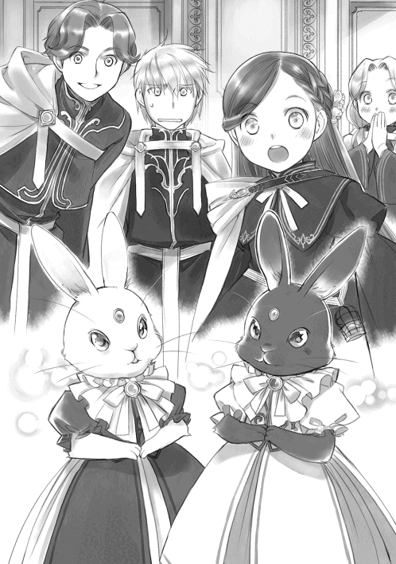
「では、シュバルツとヴァイス。ソランジュ先生のお手伝いをしてください」
この二匹が図書館のお手伝い人形ならば、図書館のお手伝いをさせるのが一番だろう。そう考えたわたしの言葉に二匹のウサギがコクリと頷いた。
「わかった。ソランジュのおてつだいする」
「ソランジュ、なにをする？」
シュバルツとヴァイスを見下ろして、ソランジュは懐かしそうに目の端に涙を光らせた。
「まずはローゼマイン様をご案内いたしましょう」
シュバルツとヴァイス
「ひめさま、えつらんしつ、いく」
「あんないする」
わたしを案内してくれるのは二匹のウサギだ。シュバルツとヴァイスはそう言いながら執務室の奥へ向かおうとする。このまま奥に向かって良いのかどうか、エーレンフェスト一行が顔を見合わせていると、ソランジュが苦笑しながら二匹を呼び止めた。
「シュバルツ、ヴァイス。そちらはお客様をご案内する扉ではございませんよ。新しい姫様は司書ではありません。お客様と同じ扱いにしてください」
どうやら執務室の奥には図書館の業務スペースに直接繋がる扉があるようだ。ソランジュに司書ではない主を案内するための出入り口ではない、と注意されて、シュバルツとヴァイスはわたし達が入ってきた扉へほてほてと歩いてきた。そして、大きく扉を開けてくれる。
「こっちからいく」
「ひめさまはおきゃくさま」
働くことを前提に作られている魔術具だからだろうか、二匹が着せられている服は、パフスリーブの半袖のワンピースだ。黒いウサギのシュバルツは白を基調にしていて、白いウサギのヴァイスは黒を基調にしている色違いの服である。そのワンピースの上には、様々な色で複雑に刺繍されたベストを着せられていた。ボタンに使われているきらりと光る石は魔石に見える。飾りのようなボタンが魔石ならば、服だけでもかなり価値がある。おまけに、このように働いている魔術具は今まで見たことがない。もしかしたら存在自体が貴重ではないだろうか。
「ソランジュ先生、シュバルツとヴァイスはいきなりさらわれたり、身ぐるみを剥がされたりしませんか？ わたくし、とても心配なのですけれど」
「シュバルツとヴァイスは図書館で働くために作られた魔術具です。主と共に行動する場合を除いて、図書館の外で活動できません。それに、わたくしはよく存じませんが、同じような憂いを抱いた歴代の主が、勝手に持ち出されぬように色々なお守りを付けているようです。図書館内にいる限り、心配はございません」
それならば良いのだけれど、とわたしは少しだけ安心しながら、シュバルツとヴァイスに促されてソランジュの執務室から出た。
「ひめさま、こっち」
二匹は一行の先頭に立って回廊を歩く。頭と耳を揺らしながら、ほてほてと歩く姿がとても可愛い。一体誰が作ったのか知らないが、可愛さに関する趣味が合いそうだ。そう考えていると、わたしの背後からうっとりとした感嘆の溜息が聞こえてきた。
「ハァ、なんて可愛らしいのでしょう」
わたしが振り返ると、年の割に落ち着いているリーゼレータが珍しく濃い緑の瞳を輝かせて、シュバルツとヴァイスを見つめていた。わたしと視線が合った瞬間、リーゼレータはハッとしたように表情を引き締める。それでも、二匹の様子が非常に気になるようで、視線がちらちらと二匹を見ているのがわかった。
「リーゼレータにシュバルツとヴァイスが褒められると、主のわたくしも嬉しいです」
「......その、わたくし、自宅でシュミルを飼っていますし、このように大きくてお喋 りもできるシュミルの魔術具を初めて見たものですから、少し舞い上がってしまったようです」
ホッとしたように微笑んだリーゼレータがゆっくりと視線をシュバルツとヴァイスに向けた。その視線は二匹が可愛くて仕方がないと雄弁に物語っている。うっとりしているリーゼレータは可愛いが、それよりも気になる単語があった。
「......シュミル、ですか？」
どこかで聞いたことがあるはず、と記憶を探りながら、わたしはシュバルツ達を見た。すぐには思い出せない中、リーゼレータが嬉々としてシュミルについて教えてくれる。
「本当のシュミルはわたくしの膝よりやや小さいくらいで、貴族の間では愛玩用として飼われる魔獣です。もちろん、こちらの魔術具のお人形とは違って言葉は話しませんし、ぷひぷひと鳴くだけなのですけれど。ローゼマイン様はご覧になったことがございませんか？ ルトレーベが大好物で、一生懸命に食べる姿はとても愛らしいのです」
......ぷひぷひと鳴く？
その言葉でやっと思い出した。あまり愉快 ではないジルヴェスターとの初対面の記憶が蘇ってきて、わたしは顔をしかめる。
「......どなた、とは詳しく申せませんけれど、わたくし、シュミルに似ている、と言われたことがございました」
「まぁ、そう言われてみれば金色の瞳も似ていらっしゃいますね、わたくしが知っているシュミルは、艶のある紺色の毛並みをしています。大層お可愛らしいという褒め言葉でしょう」
......いや、初対面で「ぷひっ、と鳴け」だったから、褒め言葉じゃないと思うよ。
同時に、初めてレッサーバスを作った時、フェルディナンドに「どうせならば、シュミルにしなさい」と言われたことも思い出した。あの時にシュミルがウサギっぽい魔獣とわかっていればシュミルにしたかもしれない。すでに騎獣に対するイメージが固まっていて、今からシュミル型に変えるのは難しいので、わたしはこれからもレッサーバスを使うけれど。
「ひめさま。ここ、えつらんしつ」
シュバルツとヴァイスがそう言いながら、観音 開きになっている閲覧室の厚い扉を開けてくれた。開け放たれた入り口からは、壁から少し離れた中央に木製の本棚が等間隔にいくつも並べられている様子が見える。エーレンフェストの本棚よりよほど多い。
......ふおおぉぉぉ！ 本がいっぱい！ 本当にいっぱいだよ！ 嬉しい！ 泣きそう！
麗乃時代のそれほど大きくはない町の図書館とか、大きな市民図書館の分館くらいの棚の数があった。この世界では初めて見る規模の図書館に感動して胸がギュッと締め付けられる。
「なんて素晴らしいのでしょう。幸せ過ぎて泣きそうです。神に感謝しなければ......」
「入る前からか!? 」
ヴィルフリートの驚いた声が上がり、コルネリウスが「祝福は禁止だ」とわたしの肩を叩いた。リヒャルダからは「見学だけですよ。読んではなりません」とまたもや釘を刺される。見るだけと言われなければ、本棚に直行して端から読み漁っていたに違いない。開いた扉の前で行われたそんなやりとりをシュバルツとヴァイスがきょとんとした金色の目で見上げていた。
「ひめさま。はいる」
「はい、失礼いたします」
ドキドキしながら中に入って周囲を見回すと、右側に窓のない一画があり、カウンター業務を行う執務机があった。窓がなくても扉はあるので、おそらくあの扉とソランジュの執務室が繋がっているのだろう。司書が出入りする場所に違いない。その他にも扉が見える。
壁際に大きくて太い柱が縦に長い窓を挟んで等間隔に並んでいて、わたしの肩くらいの高さまで、腰壁のように装飾のある木製の板がぐるりと閲覧室の内部に張り巡らせてある。
貴族院はエーレンフェスト寮や城と同じ素材で建てられているため、図書館の壁も柱も白い。採光性を良くする目的でたくさんの細長い窓がつけられているようで、窓から光が差し込むと、真っ白の建物のせいか、図書館の中は意外と明るく見える。柱や壁には彫り込みもあって装飾的で、真っ白の割にはシンプルという感じではない。
......神殿にちょっと似てるかも。
図書館の中央は吹き抜けになっていて、上から明るい光が差し込んできている。左側を見れば広い階段があり、図書館が二階にも続いていることがわかった。
......はぁん！ 二階もある図書館！ あぁ、ときめきすぎて胸が痛い！
一階だけではなく、二階まであるのだ。蔵書数にはかなり期待できそうである。すぐにでも片っ端から読んでいきたい。読書をするにはどこが一番読みやすいだろうか、電気が普及していないこの図書館ではどこが明るいのか、本棚から近いのか。そもそもどこで本を読めばいいのか。わたしは読書スペースを探して閲覧室を見回した。
「ひめさま、なにをさがしている？」
「しつもん？」
わたしがきょろきょろしていると、シュバルツとヴァイスが声をかけてくれた。
「こちらの本はどこで読めば良いのかしら？ 本を読む場所はあって？」
「ある。こっち」
シュバルツとヴァイスは扉から図書館を真っ直ぐに突っ切るように奥へ歩いていく。二匹の後に続きながら、わたしは本棚に入っている本に視線を向けた。本棚に並んでいるのは、城にあったような綺麗な革表紙に包まれた本ではなく、薄い木の板に挟んで紐で綴 られている簡単な物だった。本というよりは資料集である。貴族院の図書館というくらいだから、もっと豪華でごてごてとした本がたくさん並んでいるのかと思ったけれど、そうではないようだ。紐に木札が下げられていて、学年と教科が書かれている。
「ずいぶんと簡素な表紙ですね。こちらではこのような本が主に棚に並ぶのですか？」
「今、一階の本棚に並べられている本は、全て生徒によって書かれた参考書なのです」
わたしの質問に答えてくれたのはソランジュだ。毎年、貧乏貴族の救済のために、成績が良い者や字が綺麗な者の参考書を図書館が購入しているらしい。購入数が多く、損傷や入れ替わりも多くて、とても全てに革張りの表紙を付けることはできないそうだ。なるほど、と頷きながら、わたしは本棚を見回す。これならば、わたしが作ったエーレンフェストの本も木の表紙を付ければ、一緒に並べても特に問題はないのではないだろうか。
......でも、いい匂い。本に囲まれてるって感じがするよ。
胸いっぱいに本の匂いを吸い込んで、二匹が案内してくれるまま、奥の壁際までやってきた。壁際にはわたしが両手を広げてやっと両端に手が届くくらいの太い四角の柱と、同じくらいの幅の縦に長い窓が交互に並んでいる。
その窓から差し込む光で勉強するためだろうか、柱と柱の間には簡素な木製の机と椅子が置かれている。入り口から奥を見た時には腰壁にしか見えなかった板は、実は腰壁ではなく、扉のような役目を果たしていた。勝手に扉が開かないように鍵がかけられている。
「ここ、キャレル。ほしいひとにかぎをわたす」
......うわぁ！ ちゃんとキャレルがある！
柱と柱に挟まれたおよそ一メートル四方の空間が、小さな個室のような自習スペースというか、閲覧スペースになっているのを見て、グンとわたしのテンションが上がっていく。
どうやらここのキャレルは、ほとんど自室のような使い方をされているようだ。使用者がキャレルにいないのに、机の上に本が積まれ、インクや木札が山積みになっている。
「べんきょうする。ほんよむ。おひるねにもいい。よくねてる」
......確かに、お昼ご飯の後、窓からさんさんと暖かい光が差し込んでいたら、眠くなるよね。
お昼寝をしている人はいるかな、とわたしは辺りを見回すけれど、閲覧室の中にはほとんど人の気配がなかった。数人がキャレルを使っているだけで、図書館の中を歩いている者は見当たらない。これだけ大量の本があって、キャレルまであるような図書館なのにもったいない。
「こちらの図書館はずいぶんと利用者が少ないのですね」
「ちがう、ひめさま」
「すくないの、いまだけ」
簡潔すぎるシュバルツとヴァイスの言葉を、ソランジュが補って詳しく教えてくれる。
「座学の試験に合格する上級生が少なく、初日の試験で合格する新入生は登録を終えていない者の方が多いので、今は最も少ない時期なのです。冬の半ばくらいからはキャレルが足りなくなるほどの学生が出入りしますよ。毎年、最終試験の前が一番多いですね」
ソランジュによると、上級貴族は狭いキャレルで勉強するよりも、保証金を払って自室へ本を持ち帰ることが多いらしい。保証金が払えない下級貴族や中級貴族は、図書館で読まなければならないため、キャレルは彼等の勉強場所になる。そのため、講義の合間を縫って頻繁 に図書館に通う生徒には、ほぼ自室のようにキャレルが占領 されることになるそうだ。
「わたくしも中級貴族で勉学には苦労したので、彼等の気持ちはよくわかるのですけれど、本をずっとキャレルに置いたままにするところが少し困りますね」
写し終わるまで確保しておきたいのでしょうが、と笑いながらソランジュはそう言った。
窓の外が眺められる日当たりの良い南側のキャレルは人気が高く、西日に悩まされる西側や窓があっても通路側で光量が少ない入り口の扉側にあるキャレルは不人気らしい。キャレルの取り合いも順位や身分が関わってくるようで、小領地の下級貴族は扉側や西側に押し込められるのが常だそうだ。
......わたしもキャレルが欲しいな。
本棚が近く、ゆっくりと座って読書ができる環境があるというのは実に素晴らしい。全てに合格した暁 には、わたしも自分のキャレルを手に入れたいと思う。
キャレルの前を歩きながら、カウンター業務を行う机の方へシュバルツとヴァイスが歩いていく。ほんの数人しかいない利用者がぞろぞろと歩くエーレンフェストの一行の気配に気付いて顔を上げて振り返り、二匹を見て、ぎょっと目を見張るのがわかった。政変の前はシュバルツとヴァイスは普通に図書館のお手伝いをしていたそうだから、フェルディナンドくらいの年の人ならば、知っていると思う。けれど、この驚き方から察するに、動く魔術具自体が珍しいのではないだろうか。
「ソランジュ先生、わたくしはまだ見たことがないのですけれど、シュバルツとヴァイスのような魔術具は、貴族院ではたくさん動いているのですか？」
「いいえ、実に珍しい物ですよ。研究成果を秘匿するのが常ですから、製法そのものが失われていると前任の司書から伺ったことがございます。作ったのは昔の王女だそうです。ですから、シュバルツとヴァイスにとって主は全て、姫様、なのだそうです」
男性司書にも「ひめさま」と呼びかけていたらしい。慣れるまでは嫌な顔をする男性司書の顔を想像して、エーレンフェスト一行から小さな笑いが漏れる。
「ソランジュ先生、図書館の本棚の本の配置はどうなっているのですか？ 分類方法について教えてくださいませ」
「本の配置は入手順です。新しい物を皆が好みますから」
一階の本は講義の参考書ばかりなので、古い物よりは新しい物が好まれているそうだ。そのため、図書館が開館した講義の初日は、上級生の間で参考書の奪い合いが起こるらしい。また、毎年できが良い数冊を、領主候補生や上級貴族が保証金を積んで図書館から持ち出し、そのまま戻って来ないことがあるようで、管理するソランジュは大変なようだ。
「本が返却されないなんて......。オルドナンツで督促状 を出すのはどうでしょう？」
「上級貴族の司書がいた頃は連絡すれば戻ってきたのですけれど、今は苦情を言っても聞き流されてしまうことが多いのです。わたくしは中級貴族ですから......」
保証金を積んで持ち出せる上級貴族や領主候補生には、ソランジュがいくら言ってもほとんど効果がなく、聞き流されてしまうらしい。それでは図書館業務に支障が出るではないか。
「どうして上級貴族の司書はいなくなってしまったのですか？」
「政変によって......別の仕事に振り分けられてしまったからです。シュバルツとヴァイスがいれば大丈夫でしょう、と前任者に二人を託されました。けれど、わたくしの魔力だけでは足りなかったのでしょう。二人を動かすことができませんでした」
貸し出しや返却、キャレルの管理はシュバルツとヴァイスのお仕事だったそうだ。前任者の魔力で動いていたけれど、一年ほどで動きを止めてしまった。ソランジュは二匹を執務室の奥に並べ、共に働く同僚がいなくなった悲しみを胸に秘めながら、仕事をしていたらしい。
「ここでかしだす」
「ここでかえす」
業務スペースへと到着した二匹は先を争うように椅子によじ登っていく。カウンターではなく、普通の執務用の机だが、そこで図書館の手続きを行うそうだ。シュバルツとヴァイスが机を叩いて教えてくれた。机の周りにはいくつもの棚があり、資料や作業に必要な道具が詰まっていた。麗乃時代に図書委員や図書館でアルバイトしていた頃を思い出して懐かしくなった。
「そういえば、利用する生徒だけではなく、他の司書の方も見当たりませんね」
わたしが図書館を見回してそう言うと、ソランジュは顔を曇らせて俯いた。
「今は人手不足ですから、文官を増やしてくださることはないでしょう」
なんとソランジュ一人に図書館の管理を任されているそうだ。学生の登録と削除ができればよかろうと言われているようだが、司書はそんな簡単な仕事ではない。
「司書の場合、それ以外のお仕事の方が多いのに、一体どうされているのですか？」
「学生や本の登録と削除、貸し出し業務以外は、基本的には貴族院が終わってから......学生がほとんどいなくなる春から秋にかけて行います」
何という大変なことになっているのだろうか。頭がくらりとした。
......ハッ！ もしかして、ここはわたしの出番じゃない？
ここの常識とは違うだろうけれど、図書館業務についての知識はある。これだけ素晴らしい図書館なのだから、業務を円滑 にこなすためにわたしも活動したい。学生では司書になれないならば、図書委員になるのはどうだろうか。
......学校といえば図書委員！ これしかないよ！
「ソランジュ先生。わたくし、先生のお手伝......」
わたしが「お手伝いをするために図書委員になります」と言いかけた瞬間、図書館の中にステンドグラスを通したような様々な色の光が降り注いできた。窓にステンドグラスがはまっているわけでもないのに、赤や青の光が降ってきたことに驚いて、わたしは上を見る。けれど、白い天井や壁に色彩の豊かな光が当たっているように見えるだけで、特に何があるわけでもなかった。
ほんの数秒でそれは消えたが、数人いた利用者が本を閉じて、一斉に立ち上がった。
「この光は一体何ですか？」
「午後の講義のために退室を促す光です。鐘の音も耳に入らないくらい本に没頭する生徒も、手元の本の色が変わるとさすがに気付くようで、図書館では鐘が鳴る前にこのような光による知らせがございます」
本を読みだすと、周囲の音が聞こえないのはわかる、とわたしが深く頷いていると、わたしの背後でリヒャルダが「いいことを聞きました」と呟くのが聞こえた。
「ソランジュ先生、キャレルの鍵の返却を......」
「はいはい。午後からは実技でしょう？ 頑張ってくださいね」
生徒達がシュバルツとヴァイスの存在を気にしながら、ソランジュにキャレルの鍵を渡して、閲覧室から慌ただしく出て行く。その様子を見たリヒャルダはニコリと笑って扉の方を示した。
「さぁ、姫様。退室の合図があったのですから、わたくし達も午後の実技へ参りましょう」
「閲覧室には入れたのだから満足しただろう？ 後は全てに合格してからだ」
「午後の実技に遅れてしまいます」
皆の言葉に、わたしは行けなかった二階を見上げて軽く溜息を吐いた。二階にも行っていないし、本の一冊も読んでいないのは非常に残念だが、今日のところは諦めるしかない。だが、やる気はぐぐんと上がった。たくさんの本を見て、たっぷり本の匂いを吸い込んで、ソランジュと色々な話をしたことで、図書館へ通いたい欲がメラメラ燃焼している。
......今度は絶対に一日中図書館に籠れるように、急いで全ての試験に合格しなきゃ！
決意を拳に握りこみ、わたしは皆と一緒に閲覧室を出る。見送るようについてきていたシュバルツとヴァイスが、わたしの袖を軽く引っ張った。
「しごと、した」
「ひめさま、ほめて」
シュバルツとヴァイスがわたしの前に並んで軽く目を閉じる。何を求められているのかわからなくて、わたしは答えを求めてソランジュを見上げた。
「ローゼマイン様、シュバルツとヴァイスの額の魔石を撫でて、魔力を少し注いでくださいませ。それで、またこの子達は元気にお仕事ができます」
わたしは言われた通りにシュバルツとヴァイスの額の魔石を撫でながら、少し多めに魔力を注いだ。わたしが全ての試験に合格するまで、頑張って働いてもらわなければならない。
「シュバルツ、ヴァイス。案内してくれて助かりました。この後はソランジュ先生の言うことをよく聞いて、お手伝いをするのですよ」
「わかった。ソランジュのおてつだい」
「だから、ひめさま。あたらしいふく」
短すぎてよくわからないヴァイスの要求に、わたしはまたしても首を傾げた。ソランジュが遠い記憶を探るように視線をさまよわせ、ポンと手を打つ。
「主が替わった時に、シュバルツとヴァイスは新しい服を賜 っていました。ローゼマイン様からも新しい服を賜りたいのでしょう」
「......貴族院には針子を同行していませんし、布の準備もありませんから、来年になると思いますけれど、よろしいかしら？」
二人分を仕立てるとなると、時間がかかりそうだ。とても冬の間にはできない。わたしの言葉にシュバルツとヴァイスは大きく頷いた。
「あたらしいふく、じかんかかる」
「しってる」
待っていてくれるならば、可愛い服を仕立てることができそうだ。
「そういえば、ソランジュ先生。シュバルツとヴァイスに性別はあるのですか？」
「まぁ、ローゼマイン様。魔術具に性別などございませんよ。どのような服でも、主から賜ったということが大事なのです」
シュミルの姿を模している魔術具であるシュバルツとヴァイスに性別はないらしい。時代によっては女の子の格好をさせられたり、男の子の格好をさせられたり、様々だったようだ。
......どんな服を着せよう？ どんな服を着せるにしても、図書委員の腕章は必要だよね？
シュバルツとヴァイスに腕章をあげるならば、わたしの腕章もお揃いで欲しい。エーレンフェストに戻ったらトゥーリに頼んでみよう。
「では、わたくし、なるべく早く講義を終わらせて図書館に参ります。もし、シュバルツとヴァイスの魔力が足りなくなったら、すぐに連絡してくださいませ」
わたしはソランジュにそう告げ、シュバルツとヴァイスに手を振ると、図書館を後にした。
......よぉし、実技も最速で合格するよ！
宮廷作法とヒルシュールの来訪
図書館を出ると、文官と側仕えの専門棟へ続く回廊がある。わたしとヴィルフリートは、側近の文官見習いと側仕え見習いにそれぞれの専門棟へ向かうように言って、騎士見習いと一、二年生でぞろぞろと中央棟へ戻った。
二年生の側近であるユーディット達は講堂へ、下級貴族が使う教室へフィリーネ達が、中級貴族が使う教室へローデリヒ達が入っていく。領主候補生はいつも通りの小広間だが、上級貴族は別の教室へ向かった。宮廷作法ではそれぞれの階級ごとに求められるものが違い、細かいところを見るので、今日は上級貴族と領主候補生で教室が違うのだ。
「後ほどまたお迎えに参ります」
小広間に着いた後、騎士見習いとリヒャルダ達成人側近がそう言って去っていく。わたしとヴィルフリートは中に入った。
「ずいぶんとやる気に満ちた顔だな、ローゼマイン」
「当然ではございませんか。わたくしが図書館に向かうためには、少しでも早く講義に合格しなければならないのです。この宮廷作法も今日中に合格をいただくつもりですから」
図書館を見学しただけで、一冊も本を読むことができなかったのだ。わたしは何が何でも合格を勝ち取り、図書館に引き籠ってみせる。
「わたくし、講義に死力を尽くします」
「......うむ、頑張るのは良いことだな」
ヴィルフリートは「それほど上手くいくとは思えぬが」と呟き、十三番の椅子に座った。
「一年生の宮廷作法で求められるのは、挨拶とお茶会での振る舞いです。様々な講義を終えるにしたがって、他領と交流を持つためのお茶会が開かれます。それはご存知でしょう？ その時にお互いが不愉快な思いをしないように、共通の礼儀を身に付けることが求められます」
これまでの教育で一通りの作法を学んでいても、それぞれの領地では緩く崩していたり、領主候補生は自分が最上位ということで礼を尽くすことには慣れていなかったりすることもある。そのため、貴族院では自分よりも上位の王族のお茶会に招かれたという設定で、宮廷における作法を確認し、今後に役立てるように、とプリムヴェールという先生が述べた。
宮廷作法の実技は、お茶会を模しているため、主催者の王族という設定の先生への挨拶はもちろん、会話の内容、表情、食べ方、飲み方などが三人の先生によって色々とチェックされる。細かいチェックをするために、上から十位までの領主候補生と十一位から下の領主候補生に分かれて、行われることになった。
「では、先に上位の領主候補生から始めましょう」
プリムヴェールの言葉に、上位の領主候補生が立ち上がる。最初はお茶会に招いてくれた主催者への挨拶だ。これは上位の者から始めなければならない。皆、経験があるのだろう。ずらっと順番に並んで、特に気負った様子もなく挨拶が始まった。わたしはフィリーネから「宮廷作法の先生方はおっとりとした優しい方が多くて、あまり不合格になる者はいませんでした」と聞いていたので、最初はゆったりとした気分で座って上位の領主候補生を見ていた。
「もう一度やり直してくださいませ」
「......え？」
最初の挨拶の時点で、次々と不合格が付けられていく。挨拶を受けるプリムヴェールは有無を言わせぬ雰囲気で、おっとりニッコリと笑いながら口を開いた。
「王族からお茶会へ招待される可能性がある領主候補生がそのような姿勢では困ります。特に、次期領主は領主会議で必ず王族との会食やお茶会がございます。気を引き締めてくださいませ」
一発合格は予想以上に厳しそうだ。わたしは背筋を伸ばすと、身を入れて上位の領主候補生を見つめた。型通りの挨拶のどこが悪くて落とされているのか、全くわからない。少なくとも一人につき一回はやり直しをさせられ、どこかぎくしゃくとした雰囲気のお茶会が始まった。
......まるで圧迫面接みたい。
わたしは何度もやり直しをさせて、静かに生徒達の反応を見ているプリムヴェールの姿に、就職試験の面接官の視線を思い出した。
......領主候補生は領地では最上位だから、王族に無茶振りされた時の反応でも見てる？
わたし達は少し離れたところから見ていたので、お茶会における会話の内容まではわからない。けれど、挨拶の時点で何度もやり直しをさせられた生徒が萎縮 していることはわかった。また不合格と言われるのではないか、と不安になるようで、自分のやることが間違っていないか、視線が忙 しなく周囲を見ている。
「予想以上に厳しいな」
小さな声でぼそりとヴィルフリートが呟いた。挨拶の後は、「やり直してください」という言葉は全く聞こえない。代わりに、先生方の背後に立つ側仕え役の人達が何やらせっせと書き留めている。その様子を見れば、他の側仕え役も面接官だと考えた方が良さそうだ。
「時の女神ドレッファングーアの本日の糸紡ぎはとても円滑に行われたようですわ」
プリムヴェールが「楽しい時間はとても早く過ぎてしまいますね」という意味の言葉で、お茶会の終了を告げた。別れの挨拶を行った上位の領主候補生達は、自分の椅子へ戻っていく。
側仕え役の人達がお茶会の後片付けをし、下位の領主候補生であるわたし達の実技を行うことができるように、次々と新しいお菓子やお茶を準備し始めた。その間に先生方は自分の側仕え役に書かせていた木札を持って、上位の領主候補生に評価を述べていく。
「九番、優雅さを忘れてはなりません。指先の動きまで気を付けてくださいませ」
「申し訳ありません」
「三番はご自分の話ばかりをするのではなく、周囲のお話にも耳を傾けてくださいませ」
「二番は大領地の領主候補生ですから、もう少し威厳を持ってくださいませ」
「七番は......」
三人の先生方から次々と下される評価を聞いている限りでは、貴族らしさを失わないことが重要な気がした。圧迫面接で萎縮するな、と言われているような感じだ。わたしが貴族として生活するようになってから、ずっと言われ続けてきたように、常に余裕のある笑顔で胸を張って、決して俯かない。優雅さを忘れず、周囲をよく見る。
......お母様に教えられた通りにすれば、きっと大丈夫。
「十三番ヴィルフリート様、ローゼマイン様」
呼ばれた時にはもう試験が始まっている。就職試験では待ち時間や入室さえ採点範囲に入っていると言われていた。わたしはできるだけ姿勢が綺麗に見えるように背筋を伸ばし、ヴィルフリートに向かってニコリと笑って手を差し出した。「さぁ、エスコートしろ」と伸ばされた手を見て、一瞬目を丸くしたヴィルフリートだったが、すぐにわたしの手を取ってくれる。エスコートしてもらわなければ、今のわたしは優雅に椅子から立つことも難しいのだ。
エスコートされたまま、わたしはプリムヴェールの前へ挨拶に向かった。先に挨拶をするのはヴィルフリートだ。跪いて、両手を胸の前で交差させ、首を垂れる。
「命の神エーヴィリーベの厳しき選別を受けた類稀なる出会いに、祝福を祈ることをお許しください」
「やり直してください」
やはりか、というようにヴィルフリートが軽く目を伏せて、もう一度挨拶をした。プリムヴェールが静かにその様子を見ながら、更に二回のやり直しをさせる。ヴィルフリートが悔しそうに奥歯を噛んだのがわかった。
「ヴィルフリート様はもうよろしいですわ」
軽い溜息と共にプリムヴェールがふわりと手を振って、その場を退くように指示する。ヴィルフリートは静かに立ち上がり、その場を退いた。
次はわたしが進み出る。静かにこちらを見ているプリムヴェールと視線を合わせ、一度ニコリと笑顔を見せた後、丁寧に跪く。それから、両手を胸の前で交差させた。
「命の神エーヴィリーベの厳しき選別を受けた類稀なる出会いに、祝福を祈ることをお許しください」
「やり直してください」
「かしこまりました」
営業スマイルのような愛想笑いを深めて、わたしはもう一度、殊更丁寧に挨拶した。
「許します」
一度のやり直しで合格をもぎとり、わたしはお茶会の席へ向かう。エスコート役として待っていてくれたヴィルフリートが小声でぼそりと「其方は一度のやり直しで合格できるのだな」と悔しそうに呟いた。
「コツは相手を先生ではなく、本当の王族だと思うことです」
前を向いて笑顔を崩さないまま、わたしは小声でヴィルフリートに助言する。よくわからないというようにヴィルフリートが「思っているが？」と首を傾げた。自分より上位の者と接することがほとんどないヴィルフリートは、先生を王族と思え、と言われて、頭ではわかっているつもりでも、わかっていない。
「ヴィルフリート様のお席はこちらですよ」
一人の先生から声をかけられたヴィルフリートが反射的にそちらへ向かおうとした。わたしはぐっとヴィルフリートの腕をつかんで、ニッコリと笑みを深める。「エスコートを放り出す気ですか？」という無言の質問は通じたらしい。わたしを席まで案内すると先生に向かって軽く手を挙げると、ヴィルフリートが歩を進め始めた。
先生方はもちろん、側仕え役の者も皆が周囲に目を光らせている中、あまり大きな声でコツについて話し合うことはできない。なるべく短い一言でヴィルフリートに伝わる言い方がないだろうか。本当に上位の領主候補生で頭を下げる相手がほとんどいない者達と違って、ヴィルフリートは色々と失敗を重ね、最初はあれほど嫌がっていたフェルディナンドにも礼を尽くすことができるようになった。あれが出せれば、この実技をクリアするのはそれほど難しいことではないと思う。
「ヴィルフリート兄様、このお茶会はフェルディナンド様に見張られています」
わたしが小さく囁いた瞬間、ヴィルフリートの背筋がしゅっと伸びた。視線は笑顔で前に固定されているが、周囲を探るような緊張感が漲 っている。かなり効果があったようだ。
「ここがわたくしの席のようです。ヴィルフリート兄様、ありがとう存じます」
わたしは自分の席までエスコートしてくれたヴィルフリートに礼を言って、「この調子で頑張ってください」とニコリと笑う。ヴィルフリートは先程までとは違う、自信に満ちた笑みを返して、自分の席へ向かった。
「ローゼマイン様、どうぞ」
カタリと側仕え役の者が席を引いてくれた。わたしはその椅子の高さを見て、一度目を瞬かせた。よじ登るようにすれば座れるけれど、どう考えても優雅には座れない。
わたしは側仕え役を見上げ、頬に手を当てて「困ったわ」と首を傾げる。フランを始め、色々なところで活用しているのだ。側仕えとして教育を受けた者にはわかるはずだ。しかし、側仕え役もまた少し首を傾げるだけで、わたしを椅子に上げようとはしてくれなかった。
......これも試験の一種かな？
わたしは「困ったわ」のポーズのままで考える。ここでの最適解は何だろうか。すんなりと椅子に上げてくれれば良かったのだが、どうやら気の利かない側仕え役に対する反応を見られているようだ。ここで椅子によじ登るのは完全にアウトだし、馬鹿正直に「一人では座れないので、椅子に上げてください」とお願いするのも、領主の令嬢に相応しい言動ではない。「できない」と言うのがダメなのだ。
......それとなく分かってもらえるやり方を見つけるのが正解なのか、それとも、側仕え役に対する苦情を言うのが正解なのか。相手は王族って設定なんだよね？ うーん。
しばらく見つめ合った後、わたしは席に座れていないのが、自分だけであるということに気付いた。お茶会に臨んでいる領主候補生はもちろん、すでに実技を終えた上位の領主候補生もじっとこちらを見ているのがわかる。
「どうかなさいましたの、ローゼマイン様？」
こちらの様子を窺う主催者であるプリムヴェールの声に、わたしは「困ったわ」のポーズのままで振り返った。
「プリムヴェール先生、このお茶会は王族のお茶会を想定していると伺いましたけれど、間違いないでしょうか？」
「えぇ、間違いございませんわ」
そう言いながら、プリムヴェールは興味深そうに笑みを浮かべ、目をきらりと光らせた。これがおそらくわたしにとって一番重要な問題に違いない。ならば、貴族らしさを保ったまま、悠然と構えているのが正解だろう。わたしは王族に招待された客なのだ。側仕えのために、わたしが気を利かせる必要はない。
「プリムヴェール先生、こちらの側仕えはまだ不慣れなのかしら？ わたくし、少し驚いてしまったのですけれど、彼女をあまり強く叱らないであげてくださいませ」
主催者が招待客について知らないというのは、失礼極まりないことだ。誰を招き、何が好みか、席順をどうするのか、個人個人にどのような対応をしなければならないか、お茶会の度にエルヴィーラは何度もそう言って、必要な物を準備し、当日テーブルについて働く側仕え達には注意することを丁寧に教えていた。客に接する側仕えの失態は主の失態に等しい。
今回のお茶会において、わたしの体が周囲よりも小さくて、椅子に座ることに難儀することは主催者が知っておくべき情報だ。その上で不便がないように取り計らう必要がある。
わたしが言った「側仕えが不慣れですね」は、主催者が情報収集を怠っていたり、側仕えへの連絡が不十分だったり、側仕えへの教育不足を指摘する言葉だ。「このお茶会、ちょっと手を抜いているんじゃない？」と言うのに等しい。
プリムヴェールは「まぁ、何ということでしょう」と言いながら、わたしの席を引いている側仕え役に下がるように言って、手元の小さなベルを鳴らした。すぐに別の側仕え役がやってきて、わたしを椅子に座らせてくれる。ベルを鳴らすだけで全ての対応を終えることで、プリムヴェールは情報収集はきちんとしていたし、側仕えにも連絡をしていた。あの側仕え個人の質が悪かったようです、と示してみせた。
「本当に不慣れな側仕えで失礼いたしました、ローゼマイン様」
「わたくしは気にしません。最近は質の良い側仕えを得るのも難しいですもの」
椅子に座らせてもらって、わたしは優雅に笑って見せた。プリムヴェールの背後に立っている側仕え役が何やら書き込んだのが目に入った。
それからお茶会が始まったわけだが、これは飲食を含めたグループディスカッションだと考えて、わたしは対応した。無言でお茶を飲んでいる子に当たり障りのない話題を振ってみたり、熱弁を振るってアピールする子に相槌 を打ったり、お菓子やお茶の話題で主催者を持ち上げてみたりと頑張った。途中で小さな引っかけや咄嗟のことに対応する能力を見ているのがわかる部分がちょこちょことあり、わたしは周囲を見回しながら、自分ならばどうするか考える。
ヴィルフリートも挑発されるような場面があったけれど、挨拶と違って笑顔でするりと切り抜けていた。「神官長に見張られている」という一言にはかなり効果があったようだ。
「今回の合格者は十三番のヴィルフリート様とローゼマイン様です。貴族院でお茶会に招かれても問題ないでしょう」
宮廷作法の実技に合格したのは、わたしとヴィルフリートだけだった。プリムヴェールから合格をもらえたのだ。飛び上がって喜びたいのを堪えて、わたしは笑顔を深めるに止めた。
「恐れ入ります」
まだプリムヴェールの視線を感じる。わたしは心の中で「家に帰るまでが試験です」と繰り返し、楚々 とした動きを心掛けて寮まで戻った。
「わたくし、宮廷作法に合格しました！」
寮の玄関扉が閉まると同時に、わたしはリヒャルダに全開の笑顔で報告した。わたしの声に周囲を取り囲んでいた側近達がビクッとして、ヴィルフリートの側近達は自分の主を気遣うようにそっと声をかける。
「ヴィルフリート様は......？」
「私も合格した。ローゼマインのおかげだ。あの一言がなければ、おそらく不合格であった」
しみじみとした口調でヴィルフリートがそう言った。その様子に興味を引かれたのか、リヒャルダが何度か瞬きをする。
「ヴィルフリート坊ちゃま、姫様は何をおっしゃったのですか？」
「わたくしは、フェルディナンド様がご覧ですよ、と言っただけです」
二年間、わたしの代わりにヴィルフリートは冬の子供部屋の統率と祈念式や収穫祭の神殿行事を行った。その間、嫌でもフェルディナンドと付き合わざるを得なかったヴィルフリートの苦労を知っているリヒャルダは「まぁ！」と声を上げてクスクスと笑った。
「坊ちゃま、何事もいずれ糧になると申し上げましたが、ずいぶんと早かったようですね」
「うむ」
着替えを終えたわたしは、多目的ホールで皆の参考書作りを見たり、情報等の買い取りがあれば、それを控えたりしていた。わたしが参考書作りをすると、下級貴族の仕事を奪うことになるので、なるべく任せることにしている。乱雑な字やおかしい言葉遣いを指摘する程度だ。
わたしは皆が何とかお金を稼ごうと試行錯誤をしている中で、今後の講義の対策を立てることにした。なるべく早く図書館に向かうためにはどうすれば良いだろうか。宮廷作法をクリアしたのだから、残っている実技は奉納舞と音楽と騎獣とシュタープの取得だ。
奉納舞については、どうせ今年は練習だけなので、それほどのレベルは要求されないと思う。一通りは舞えるので、忘れていないか、一応復習しておこう。余計な騒ぎを起こさないように、神には祈らないように気を付けることが大事だろう。
音楽に関しては、先生方のお茶会にも招かれているので、基準はクリアしているはずだ。だったら、新しい曲の披露と引き換えに合格をもぎ取れないか、交渉してみるのはどうだろうか。
騎獣は、フラウレルムが倒れて中断してしまったので、前回の続きから始まることになるだろう。ヒルシュールによると、最終的に騎獣で外に出て、貴族院の敷地をぐるっと一周できたら合格だと言っていたので、問題ないと思う。
......フラウレルム先生が倒れなかったら、多分、大丈夫。
前回倒れたフラウレルム先生を心配して、ヒルシュールが補助として騎獣の講義に来てくれれば簡単に終わると思う。けれど、研究室に籠っていたいヒルシュールがそんな余計な仕事を抱え込むとは思えない。頼み込むとすれば、それ相応のメリットの提示が必要になる。
......そして、明日は、シュタープの取得だ......
一年生の全員で最奥の間と呼ばれるところに入ることになっている。そこでシュタープの原石となる、「神の意志」と呼ばれる魔石を採ってこなければならないそうだ。わたしに採集ができるかどうか心配になったけれど、コルネリウスは「大丈夫だ。絶対に採れる」と言っていた。何でも「その場に行けばわかる」のだそうだ。ただ、原石を採集するだけで終わりではない。シュタープを作り上げ、基本的な使い方を覚えなければならないらしい。
「ローゼマイン様はいらっしゃいますか？」
ある程度講義の合格に目途がついたところでヒルシュールが寮に飛び込んできた。上級生が「最初と最後にしか寮に来ない寮監だ」と言っていた割に、よく寮に来ている気がする。多目的ホールに入ってきたヒルシュールを見て、わたしは目を瞬いた。
「本日は何でしょう？」
「先程、ある生徒から伺ったのですけれど、図書館の魔術具を復活させたのですって？ どのようにしたのです？ 守りの魔法陣があり、主以外の者が彼等に触れることはできなかったはずです」
興奮した面持ちで畳みかけるようにヒルシュールがそう言った。不用意に触ってシュバルツとヴァイスに撃退されたことがあるらしい。お守りの効力を意外なところで知ってしまった。それにしても、閲覧室にいた生徒にはエーレンフェストの誰が復活させたか、わからなかったはずだ。
「何故、わたくしが復活させたと思ったのですか？」
わたしの疑問にヒルシュールが当たり前の顔で肩を竦めた。
「エーレンフェストの一年生達が集団で図書館を見て回り、黒と白の大きなシュミルが案内するように歩いていたと聞けば、誰の仕業 か、すぐにわかるではありませんか。前例のないことをするのは、ローゼマイン様に決まっています。わたくし、オルドナンツでの報告も受けておりませんよ」
「......シュバルツとヴァイスを動かしたことがヒルシュール先生の手を煩わせるような事態だとは思わなかったもので、報告義務があるとは全く考えていませんでした」
ヒルシュールのどことなくわくわくしている紫の瞳を見る限りでは、寮監として事態を把握しておきたいというよりも、シュバルツとヴァイスを研究したいという方が正しい気がする。新しい主として、わたしは二匹を守らなければならない。
「シュバルツとヴァイスは図書館から出しませんよ」
「......主と一緒ならば出られるでしょう？」
「ヒルシュール先生に分解されそうですから嫌です」
わたしがじとりと睨むと、ヒルシュールが「あら、嫌だ」と笑みを浮かべた。
「人聞きの悪いことをおっしゃらないでくださいませ。少し服を脱がせるだけです」
「......ヒルシュール先生には魔術具の服を脱がせる趣味がおありなのですか？」
変態か、とわたしが警戒心を強めると、ヒルシュールが苦い表情になった。
「わたくしは専 ら魔術具を作っている教師ですよ。製法が伝わっていない魔術具について詳しく知りたいと思うのは当然ではありませんか。わたくしが知る限りの情報では、服に覆い隠されている部分に製法に関わるものがあるようです。それをこの目で確認したいのです」
先生らしいキリッとした顔で言っているが、つまりは脱がしたいだけである。わたしの心配は当たっていた。
「わたくしには主としてシュバルツとヴァイスを守る義務があります。あの子達がいないとソランジュ先生の図書館業務は大変なのです」
ヒルシュールが考え込むように細い眉を歪める。そして、フェルディナンドが考え込む時によくしているように、指先でトントンと軽くこめかみを叩き始めた。
......神官長は多分ヒルシュール先生の癖が移ったんだ。
内心、ぷぷっと笑っていると、何を思いついたのか、ヒルシュールがくいっと顎を上げて、唇の端を上げた。キラリとモノクルが光る。
「ローゼマイン様、確か......新しい主は新しい服を与える必要がございましたよね？」
「......何のことでしょう？」
長年貴族院にいるヒルシュールが何をどこまで知っているのかわからない。わたしは愛想笑いで流したけれど、ほんの一瞬の戸惑いで確信を得たのか、ヒルシュールが笑みを深めた。
「採寸や着替えをする場にわたくしを同行させてくださいませ。もちろん、わたくしが手を触れたり、脱がしたりはいたしません」
自分の手では脱がさないけれど、風呂場に同行させろと言っているような変態臭さを感じていると、ヒルシュールが笑みを深めた。
「そうすれば、わたくし、残っている魔術関係の実技でローゼマイン様の担当になることができましてよ。全てに合格しなければ、図書館に入れないのでしょう？ フラウレルムに疎まれた現状では騎獣の実技での合格が遠いですものね」
......悪魔です！ ここに生徒を悪い道に誘う悪魔がいます！
しばらくの攻防の後、卒業まで便宜 を図ってくれるという悪魔の誘惑に、わたしはあえなく敗北した。
シュタープの取得
午前中はフェシュピールの練習と参考書作りだ。神殿では朝食後から三の鐘がフェシュピールの練習時間だったので練習をするように、とロジーナが言ったため、皆が何となくフェシュピールを持って多目的ホールに集まり、練習することになった。
わたしは先生方とのお茶会のために、他の皆はそれぞれのレベルに合わせて練習している。他の学年でも座学が終わった者が増えていて、多目的ホールでは三の鐘が鳴るまで皆がフェシュピールの練習をすることになった。勉強したい者は自室で行うことになっていたが、音が気になって集中できないのか、少し時間が経つとフェシュピールを持ってくる者が出てきた
「今までは寮内でフェシュピールの練習時間をきっちりと取っていませんでしたから、練習量が減ったのでしょうね。学年が進むごとに音楽の実技で褒められる数が減っていたのです」
「では、毎年音楽の練習をする時間を決めておくと良いかもしれませんね」
わたしがお茶会で披露する曲を練習している間、ロジーナは新曲の歌詞を添削 していた。
「ローゼマイン様、英知の女神メスティオノーラを称える曲なのですから、図書館ではなく、グルトリスハイトを尊ぶ方が良いのではありませんか？」
グルトリスハイトは英知の女神メスティオノーラが持っている最古の聖典である。神々に選ばれたらしい初代の王はグルトリスハイトを写すことを許されたそうだ。ロジーナに任せると、神話に関するあれこれがどんどんと歌詞に追加され、その分、わたしの図書館に対する熱情はどんどんと削られていく。図書館を称える歌詞が、英知の女神メスティオノーラ自身を称える歌詞へ変わった。最終的にはわたしの歌詞はほとんどなくなりそうな勢いである。
......でも、まぁ、わたしの図書館への思いって、あまり周囲の人に受け入れられないし、わたしが歌うと支障がありそうだから、全部ロジーナに作詞してもらった方がいいかも？
「最初からロジーナに作詞してもらってもいいかしら？ わたくしが作詞して図書館を称える歌にしてしまうと、歌っている間にいつ祝福が飛び出すかわからないのですもの」
「あら、神を称える歌なのですから、ローゼマイン様がフェシュピールを奏 で、祈りを捧げ、祝福が出る分には全く問題ないと思われますけれど？」
神殿という神の家で芸術巫女の下、純粋培養 されたわたしの専属楽師は、祝福に関する意識がちょっとずれているようだ。貴族院で祝福をやってしまうと結構騒ぎになるのだけれど、あまりよくわかっていないと思う。
「わたくし、なるべく祝福が飛び出さないようにしたいのです」
「......ローゼマイン様がそうおっしゃるのでしたら、図書館に関する歌詞は避けましょう」
三の鐘が鳴ると、わたしはフェシュピールの練習を終え、昼食の時間まで文官コースの参考書作りをしているハルトムートのお手伝いをしつつ、文官コースの予習を始めた。
「ローゼマイン様は文官見習いの講義も受けるおつもりですか？」
「えぇ。わたくしは司書になりたいので、領主候補生の講義と並行して文官見習いの講義も受ける予定なのです。フェルディナンド様には相談済みですよ」
そう答えながら今の三年生が受けている内容を読んでいく。
「ローゼマイン様はアウブ・エーレンフェストを目指してはいらっしゃらないのですか？」
「そのような面倒な地位に就きたいと思ったことは一度もございません。わたくしは、アウブ・エーレンフェストではなく、図書館の司書になりたいのです。今の将来の夢はエーレンフェストの聖女として神殿に居座って神殿図書館を私物化するか、領主の仕事を手伝いながら城の図書室を私物化したいという野望に燃えています」
できれば、司書になるよりも、大きな図書館を持っている方のお嫁さんになって、その図書館を出ることなく生活ができたら最高だが、さすがに側近にそんな夢は語れない。
「ですから、わたくしの側近になっても将来に繋がらないと思えば、いつでも申し出てくださいませ。希望通りにいたしますから」
午後の実技はシュタープの取得だ。自分の中にある魔力を最も効率よく、そして、思うままに扱うために最適な道具がシュタープで、これを手に入れて、やっと正式な貴族となることができるらしい。今までシュタープ以上に使い勝手の良い道具を作れないものか、と何人もの研究者が挑戦してきたようだが、未だにそのような道具はできていない、とフェルディナンドが言っていた。素材の質が段違いだそうだ。
十年くらい前までは、貴族院の三年生、専門コースに分かれる時にシュタープの取得が行われていたそうだ。けれど、シュタープの使い方を覚えるためには、なるべく早い時期に取得した方が都合が良いと考えられ、入学とほぼ同時に行うように今の王が変更したと聞いている。
シュタープの原料となる「神の意志」を見つけたら採集して戻ってくる。それだけの実技だけれど、シュタープの取得は一人前の貴族になるための重要なイベントである。講堂へ向かう一年生の顔には軽い興奮が見えた。一緒に午後の講義へ出かける上級生が、一年生のわくわくしている様子を懐かしそうに見ながら「落ち着いていけ」と声をかけて通り過ぎていく。
「......一年生だけでこれだけいたかしら？」
今日はシュタープの取得を行うので、学年全員が講堂に集められている。あまりの人数の多さに、わたしは目を瞬かせた。
「ローゼマイン様はもう座学にいらっしゃらないから、そう感じるのでしょう」
地理と歴史の座学には参加しているフィリーネが小さく笑った。合格してから、わたしは午前の座学に行っていないので、これだけ多くの一年生が集まっているところを久し振りに見た。
多くの人数が集まり、ざわざわとしていた講堂も先生方が姿を現すと同時に、シンと静まる。プリムヴェールが前へ進み出て、講堂の中をぐるりと見回した。
「全員集まったようですね。それでは領主候補生から最奥の間へとご案内いたしますが、その前に必ず守ってほしいことがございます。採集を終えた後は他の者に触れぬように気を付けてください。質の良いシュタープにするためには、自分の魔力だけで染めなければなりません。帰りは他人にぶつからぬように距離を空けて歩くこと、それから、明日の土の日は一日じっくりと魔力を流し込むようにしてくださいませ」
領主候補生が並ぶと、プリムヴェールが先に立って歩き始めた。講堂の奥に扉があり、奥の部屋へ入っていく。
......礼拝室！
真っ白の部屋で、左右には円柱状の柱が等間隔で並んでいる。一番奥の壁には天井から床まで色とりどりのモザイクで複雑な文様が描かれていて、中央には床から三階くらいの高さまで四十段くらいの階段が雛壇 のように続いていた。その階段には神への供物はもちろん、神の像が飾られていた。最上位にいるのは最高神の夫婦神、そして、少し下がって聖杯を抱えた土の女神、更に下がって、水の女神、火の神、風の女神、命の神が並んでいる。
......神殿の側仕え達はどうしてるかな？
見慣れた祭壇を見上げ、何となく神殿に帰ってきたような気がして、妙に懐かしい気分になった。二年間の留守を任せられたのだから、わたしがいなくてもきちんとお仕事をしてくれているのはわかるけれど、フラン達に何だか無性に会いたい。
祭壇を見上げて、ホームシックのような寂しさを感じているのは、わたしだけだったようで、他の皆はあまり見ることがない祭壇に、ほぉ、と感嘆の声を上げている。
「神に最も近い、最奥の間です。採集できる機会は一人につき、ただ一度しかございません。採集した後は他の者とぶつからぬように細心の注意を払ってくださいませ。行く者と帰る者がぶつからぬように道が二本あるので、行く時は必ず左側の道を通るのですよ」
そう言いながらプリムヴェールが何かの魔石に手を伸ばした。次の瞬間、ズズズズッと大きな物が動くような音がして、祭壇の階段の一部が動いた。祭壇の奥へと入れるように暗い穴が大きく口を開ける。
「願わくは神々の御加護と導きがあらんことを」
プリムヴェールに促され、緊張した面持ちで最初の領主候補生が足を踏み出し、中へと入って行く。わたしとヴィルフリートもそれに続いた。祭壇も貴族院や寮と同じ白い石でできているようで、四角にきっちりと整備された入り口だった。コツコツと足音を響かせながら、順番に歩いていく。それほど狭い道でもなく、三人くらいは並んで歩けそうな広さがある。
五メートルほど進んだところで、きっちりとした四角の通路が突然途切れた。歩く部分の白い道だけは今まで通りだが、周囲はごつごつとした岩肌が露出した天然の洞窟 になる。行きと帰りのための白い道だけが淡い光を放って浮かび上がっているように見えた。
「礼拝室の奥にこのようなところがあったのですね」
周囲を見回しながら、とりあえず先に進む。洞窟は大きく曲がるように白い道が続いていて、だんだん上へと上がっていくようだった。途中でいくつか階段があり、しばらく進むとまた階段。そんな感じでじわじわと自分の位置が上がっていくのがわかる。
......ずっと早歩きで、息が切れそう。
身体強化の魔術具を使っても人並み程度のわたしは、周囲との身長差もあって歩くのが遅いので、次第に前と距離が開いてきた。
「お先にどうぞ。わたくしはご覧の通り、皆様方と身長に差がありますから、歩く速さを合わせるのが大変なのです」
後ろを歩く領主候補生にわたしは道を譲ろうとした。すぐにヴィルフリートが「私はローゼマインと共に......」と言って一緒に歩こうとしてくれたが、わたしはそれを断る。
「どうせ帰りは共に帰ることができませんもの。ヴィルフリート兄様は先に行ってくださいませ。そして、帰りにすれ違った時には、できれば、あとどのくらい歩かなければならないか、わたくしに教えてくださいませ」
「......わかった」
不満そうな顔でヴィルフリートは何度か振り返りながら他の領主候補生と先に進んでいく。
わたしは自分のペースで歩き、ホッと息を吐いた。ほんの少しならば頑張って周囲に合わせるけれど、どこまで続くのかわからない道をずっと早歩きで優雅に見せながら歩くのは難しい。
領主候補生が行ってしまって、少し経つと足音が近付いてきた。上級貴族がやってきたのだ。一人で歩くわたしに何と声をかければいいのか迷っているような上級貴族に、わたしは同じように告げて先に行ってもらう。エーレンフェストの上級貴族はヴィルフリートと同じように心配そうに何度か振り返りながら先へ進んでいった。
後続を通しながら、わたしは自分のペースで歩く。上級貴族が行ってしまうと、次は中級貴族である。奇異の視線を向けられつつも、わたしは同じように先に行ってもらう。
「ローゼマイン様？」
「あら、ローデリヒ。先に行ってくださってよろしくてよ」
わたしがローデリヒにも同じように説明していると、突然少し前方を歩いていた他領の中級貴族の少年が「あった！」と弾んだ声を上げた。
「え？」
何があったのかわからない。わたしの目には同じように続く洞窟の岩肌しか見えない。何も変わった物は映らない。けれど、その少年はただ一点を見つめたまま、白い道から外れて洞窟の壁の方へ向かい、手を伸ばして壁に触れた。迷いのない動きに、彼には何かが見えているのがわかる。くるりと振り返った少年の手には何かが握られているようだ。筒状の物を持っているように指の形が丸まっている。
「すまないが、少し道を開けてくれないか？」
道を開けてもらった少年は嬉しそうに顔を綻ばせて、皆が立ち止まっている行きの道を横切り、帰りの道に飛び移って早足で歩き始めた。少年の視線はずっと自分の手の中に注がれている。
「......何を見つけたのでしょうか？ ローゼマイン様にはわかりましたか？」
「いいえ、わたくしにも見えませんでした」
初めて「神の意志」を見つけた者が出たことで興奮気味になり、皆が注意深く周囲を見回しながら歩き始めたため、進む速度が遅くなった。わたしが同行するのにちょうど良い速さになったので、わたしはローデリヒと「神の意志」が一体どのような魔石なのか、と話しながら歩を進めていく。
少し歩くと、今度は後ろから「見つけました！」と少女の弾んだ声が聞こえてきた。前の方でも白の道を飛び出して、壁に向かって行く少年の姿が見える。見つけた者は迷いなく進んでいくことから、本当に「神の意志」と呼ばれる魔石があることは確実だ。周囲の者がちらほらと自分の「神の意志」を見つけているせいか、ローデリヒが辺りを見回し始めた。自分の物が欲しくて仕方がない顔になっている。
「あ！」
鋭い声を上げたローデリヒの視線が前方の一点を見つめた。
「あったのですか？」
「はい！ とても美しく光っています」
やっぱりわたしには見えない。けれど、ローデリヒには見えるようだ。誇らしそうに笑って、ローデリヒが白い道から降りて駆けていく。岩の壁に向かってゆっくりと手を伸ばして、そっと触れたのがわかった。ローデリヒは一度驚いたように目を見張った後、自分の懐 に抱え込むようにして、わたしには見えない魔石を持った。
「ローゼマイン様、お先に失礼いたします」
「落としたり、どなたかにぶつかったりしないように気を付けてくださいませ」
ローデリヒが帰りの道に上がり、わたしとは反対方向へ歩いていく。
周囲で続々と声が上がり、皆がお互いにぶつからないように距離を取って帰るようになる頃には、こちらに向かって帰りの道を歩いて来る上級貴族が出始めた。奥から上級貴族が出てくるということは、多分わたしの魔石があるのはもっと奥に違いない。
......奥まで歩くんだ。疲れてきちゃったよ。
わたしは人が減った行きの道をのそのそと歩き続ける。周囲の者がどんどんと採集に向かって道から外れるので、とても歩きやすい。楽に歩けるし、視界も良くなってきた。けれど、次々に皆がいなくなるので、ちょっとだけ寂しい。
コツコツと歩いて、階段を上がり、更に歩いて行く頃には、行きの道には誰もいなくなり、帰りの道がいっぱいになっていた。誰も彼もぶつからないように間隔を空けて歩くため、妙な行列になっている。この周辺は中級貴族の「神の意志」が多く採れるところのようで、かなり先の方から上級貴族が戻ってくるのが見えた。
次第に、戻ってくる上級貴族の中に領主候補生が混じり始める。実技の授業で見知った顔ばかりになってきた。その中にヴィルフリートがいるのが見えた。
「まだこんなところにいたのか。領主候補生の魔石があった場所はまだまだ奥だぞ」
のそのそと歩くわたしの姿に目を見張ったヴィルフリートも、大事そうに何か抱えている。
ヴィルフリートにまだまだ先だと言われて、わたしは少しずつ身体強化の魔術具に魔力を込めていった。こうすれば歩くのが楽になるけれど、魔力を流しすぎると後で反動もある。次の日、筋肉痛がひどくて本当に動くことが億劫 になるので、あまり長時間の多用はできない。
少しだけスピードを上げて、わたしは一人で奥を目指した。じきに帰りの道を歩く領主候補生もいなくなって、本当に一人になってしまった。しんと静まった洞窟の中、わたしはコツコツ足音を響かせて歩き続ける。階段を上がり、更に歩いていく。何もないまま、また階段を上がる。代わり映えのない景色と誰もいない状態がつまらなくなってきた。
「......どこにあるの〜、わたしの魔石ちゃん。もう疲れたよ〜」
呼びかけてみるが返事はなく、洞窟内にうわんうわんとわたしの声が響くだけだ。白い道を歩くとまた階段があった。数段しかなかった今までの階段と違って、一階分は上がらなければならない螺旋 階段だ。
「うあぁ、また階段。どこまで歩かせる気よ」
ぶつぶつと文句を言いながら、わたしは白い螺旋階段を上がる。上がるにつれてどんどんと周囲が明るくなってきた。
「わぁ......」
そこは光が差し込む白い広場だった。行き止まりのようで、その先に繋がる道はない。白い床が円状になっていて、真ん中に同じ材質の白の彫刻 のような大木があった。天井へ向かって幹 が伸び、白い枝が広がっている。天井に大きな穴が開いているのか、白い彫刻の木に茂った白い葉の間から木漏 れ日のような光が細く幾筋も降り注いできている。
その木の根元に虹色に光る魔石があった。真っ直ぐに地面から突き出している。水晶のような六角柱状で、わたしのお腹の高さまで伸びていた。
......あぁ、これが、わたしの石だ。
皆が言った通り一目でわかった。ちらちらと降り注ぐ木漏れ日が当たると、不思議な色へ変化するように見える。神秘的な光景と石を前に、敬虔 な気持ちになり、わたしは背筋を伸ばして「神の意志」の前へ歩いていく。きらりと石が光った。
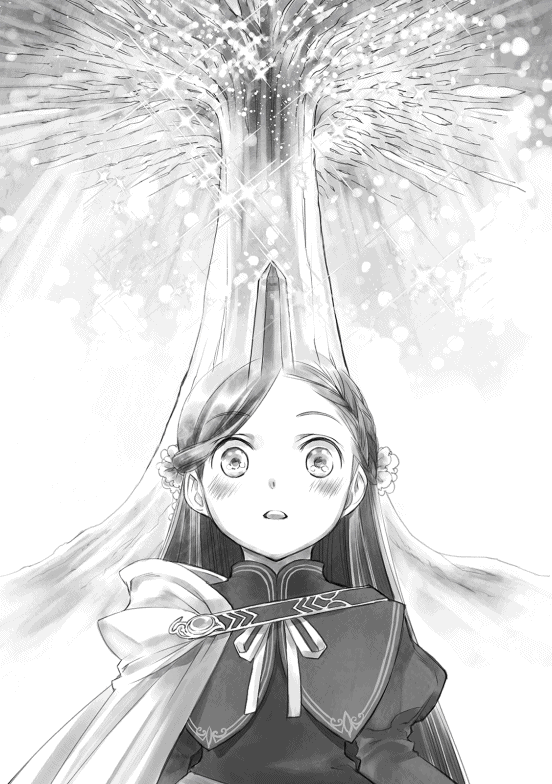
「頂戴 いたします」
わたしは「神の意志」の前に跪き、そっと手を伸ばした。手が触れた瞬間、地面の部分からスパリと切れて、受け取れ、と言わんばかりに自分の前に浮かび上がってくる。虹色に光る「神の意志」を抱えて、わたしはそっと満足の息を吐いた。
「よし、帰ろう」
これを持って戻らなければならない。「神の意志」を抱えて、わたしは身体強化を強めようと魔力を流した。
「あれ？」
新しく流し込む全ての魔力が抱えている魔石に吸われていく。これ以上の身体強化はできないようだ。この状態で戻るしかない。ここまでやってきた道のりを思い返して肩を落とした。
ここで長居しても仕方がないので、わたしは白い大木に背を向けるととぼとぼと歩き始めた。長い道のりをまた戻らなければならない。今度は最初から最後まで一人だ。
魔石を抱えているため両手がふさがっているので、怖々と螺旋階段を降りていき、今度は帰りの道を歩く。コツコツと響く足音は自分の物だけだ。帰りは下りになるので、気分的に行きよりは楽だけれど、普段の運動不足が祟 ってぐったりとしてきた。
「ちょっと、休憩。身体強化しててもさすがにきついよ」
途中の階段でわたしは魔石を抱えたまま、座って一休みすることにした。同じ景色が続くのでどこまで戻ってきたのか、自分でもわからない。「もうちょっとで出口だったらいいな」と呟きつつ、壁に寄り掛かって大きく息を吐いた。一気に疲労が圧 し掛かってきて、うつらうつらと瞼 が下がってくるのを感じる。わたしは「寝てはダメだ」と自分に言い聞かせながら、寝た。
「こんなところで寝るなぁ！ 寝ると死ぬぞ！ 起きろ！ 立て！ まだまだ人生はこれからだ！」
「はいっ!? 」
いきなりの大音声 が洞窟の中で反響して、耳がキーンと音を立てる。わたしが驚いて飛び起きると、拳を握ってわたしに熱く呼びかけるルーフェンの顔が間近にあった。
「よかった。意識が戻ったようだな」
ルーフェンがそう言って少し体を引く。すると、そこには数人の先生の姿が見えた。ヒルシュールがルーフェンと入れ替わるように、わたしの前へ進み出て説明してくれる。
なんと、戻ってくるのがあまりにも遅いため、捜索 隊が出されたらしい。一本道なので迷うはずがないけれど、と言いながら、ヒルシュールが捜索してみれば、わたしが途中で行き倒れていた。姿を見つけたものの、すでに「神の意志」を持っているならば触ってはならない。声をかけるしかできないが、ヒルシュールがいくら声をかけても反応がなかったらしい。
焦ったヒルシュールは礼拝室へ一度戻り、数人の先生を連れて戻ってきた。最も声が大きいルーフェンが呼びかけることで、わたしは意識を取り戻したのだそうだ。
「体が弱いと伺っていたので、死んでいるのではないかと、本当に心配いたしました」
「申し訳ございませんでした」
「まだ完全に体調が戻っているわけではない、とフェルディナンド様からは伺っていたのですけれど、貴族院での活動状態を見る限りでは問題なさそうだったので、失念しておりました」
ヒルシュールはそう言いながら、立ち上がるように、とわたしを促した。
エーレンフェストの聖女、「神の意志」を取得に行き、最奥の間で危うくはるか高みに続く階段を上がるところであった。
貴族院の歴史に、わたしは不本意ながら新しい伝説を刻んだようである。
初めての土の日
やっとのことで自室にたどり着いた。リヒャルダからベッドに魔石を置くように、と言われ、ベッドに魔石を置いた。
「こうしていても魔石に影響が出るかもしれませんから、気は進まないのですけれど......」
そう溜息混じりに言いながら、魔力を通さない手袋をはめたリヒャルダがてきぱきとわたしの服を脱がしていく。本来、お風呂に入るのは「神の意志」に魔力を流し終わった後らしいが、剥き出しの岩壁に寄り掛かって寝ていたわたしは、このままベッドに上がれる状態ではなかった。さすがにお風呂に入れるのは無理だとリヒャルダに言われたけれど、お湯で濡らしたタオルで拭 いてもらうことはできてホッとする。
「姫様、こちらを飲んでゆっくりとお休みくださいませ」
リヒャルダはフェルディナンド特製の激マズ薬を準備すると、少し下がってわたしが薬を飲むのをじっと待っていた。身体強化の魔術具のおかげで、わたしの体は元気に動ける気がするけれど、寒気はひどいし、頭はぐらんぐらんしている。完全に高熱が出ているのを自覚しつつ、できれば飲みたくない薬とリヒャルダを見比べた。
......この体調で、優しさの欠片もない激マズ薬は飲みたくないなぁ。
全く味については考慮されていないフェルディナンド特製の激マズ薬を出されて、わたしが怯 んでいると、リヒャルダは笑顔で目を三角にするという、実に器用な表情を作ってわたしを見つめる。
「この季節に最奥の間のような洞窟で眠り込んでいれば、普通の者でも風邪を引きますし、下手をすれば、はるか高みへと昇っていきます。何でもないことで寝込む姫様ならば、今、こうして生きているのが不思議なくらいではありませんか！」
「......ご心配をおかけいたしました」
城でわたしの虚弱さに一番慌てていたのはリヒャルダだ。今回、なかなか戻って来ないわたしの心配をしたリヒャルダが、ヒルシュールを始めとした先生方に今までの虚弱さを暴露 した。そのせいで、先生方の認識が、「神の意志」を取りに行き、疲れて休憩していた体力のない子という認識から、行き倒れて死にかけていた子になってしまったのだ。
「さぁ、姫様。お飲みあそばせ」
「はい......」
わたしはでろんとした緑の薬が入った瓶 を片手で手に取って、勢いよく飲んだ。この薬を飲むのに躊躇 ってはならない。一気に飲まなければ、苦しい時間が長引くだけだ。
「んぅ〜っ！」
久し振りに激マズ薬を飲んだわたしは、吐き出さないように口元を押さえて、涙目でのたうった。だが、苦しむうちに、体調はみるみるうちに良くなってくる。本当に効果は高いのだ。飲んだ瞬間に、天に召される気がするだけで。
「では、ゆっくりとお休みくださいませ」
リヒャルダは部屋の片付けを終えると、すっと出て行った。
「結構小さくなったね」
わたしはゴロリとベッドで横になったまま、片手で持てるくらいの大きさになった「神の意志」を見つめた。ぎゅっと握って、魔力を流せば流すほど、小さくなっていく。魔力と溶け合って、自分の中に吸収されているのだそうだ。
最奥の部屋で転寝 してしまって、起きたら小さくなっている魔石に驚いていたら、ヒルシュールが「そういうものです。己と同化するまでよく魔力を流してくださいませ」と言っていた。
つまり、「神の意志」を自分の中に取り込むまで、卵を温める親鳥のように魔石を抱えて過ごすのだ。ほとんどは一昼夜抱えていれば自分の魔力を流し込んで同化できるため、毎年、実の日がシュタープの取得、講義がお休みとなる土の日が魔力を流す日と決まっているらしい。
「まぁ、でも、無事に帰れてよかったよね」
わたしは先程までの騒動を思い返して、ハァ、と溜息を吐いた。ルーフェンの大声で起こされたのはいいものの、その後が大変だったのだ。
寝ている間に身体強化の魔術具へ少し多めに流していた魔力が普通に戻っていた。そして、すでに筋肉痛が始まっていて、わたしは立ち上がろうにも足がプルプルする有様だった。おまけに、転寝している間に風邪を引いたようで頭が痛くて寒気がするのに、体は熱い。そんな状態でも、先生方はわたしに触ることができず、おろおろハラハラしながら見守るしかできない。
「ヒルシュール先生、今日だけで良いのです。寮まで騎獣に乗って戻ってもよろしいですか？」
エーレンフェストの城内ではアウブ・エーレンフェストの許可をもらって騎獣に乗っている。貴族院の寮もアウブ・エーレンフェストの持ち物なので、ジルヴェスターの許可で乗り回せる。
しかし、貴族院は王族が管理する施設だ。館内で騎獣を乗り回すには、責任者の許可が必要になる。わたしは周囲の先生方を見回し、許可を求めた。プリムヴェールが形の良い眉をひそめながら、ゆっくりと首を横に振る。
「許可はできますけれど、魔石を抱えたまま、騎獣は出せません」
そう言われて、身体強化しようと思ったら魔力が全部「神の意志」に吸われたことを思い出した。でも、騎獣用の魔石を手に持って、意識的にそちらに魔力を流し込んだら、騎獣は出せるかもしれない。
「......一応やってみます」
わたしは騎獣用の魔石を握って、魔力を流し込んでみる。流した魔力の半分は「神の意志」に取られたけれど、何とか一人用のレッサーバスはできた。わたしはよろよろと乗り込んで、「神の意志」を足元に転がすとハンドルを握る。
魔力がレッサーバスを通して「神の意志」に流れ込んでいるのかもしれない。頭がぼんやりするせいで魔力の流し方がおかしいようだ。普段よりもかなりゆっくりの速さでレッサーバスは動き始めた。
普段よりもゆっくりとはいえ、きちんと動いているので、先生方も少し安堵したようだ。のそのそと動き出したレッサーバスの周囲を歩きながら、先生方が口々に感想を述べ始める。
「まぁ、これが噂の......？」
「ほほぅ、これがフラウレルムを卒倒させた騎獣か。確かに強そうだ」
......強いんじゃないもん！ わたしのレッサー君は可愛いんだよ！
ルーフェンの言葉に反論したかったけれど、口を開くのも億劫だったので、唇を尖らせて不満顔をするに止めておいた。
「スカートのままでも乗れるところが素敵でしょう？ わたくし、今度この形の騎獣を作れないか、挑戦してみようと思いますの」
「まぁ、そのようなことができるのですか？ ずいぶんと複雑そうですけれど......」
ヒルシュールの言葉に食いついたのは、プリムヴェールだった。やはり、騎獣に乗るためには着替えが必要なのが煩わしいのだろう。
「ローゼマイン様に説明していただいても、ハンドルやアクセルというものがよく理解できませんでした。ですから、このように中に入って座れる形にして、今までの騎獣と同じように手綱を中に付けてみようと考えています」
羽もなく飛べるのは非常識だとフラウレルムは叫んでいたけれど、ヒルシュールに言わせると目の前にあるのだから、飛べる者もいると認識して飛ばせば問題なく飛べるはずだと言う。
「フラウレルムは少し頭が固いのですよ。騎獣に優美さより、利便性を求めても良いではありませんか。この騎獣は荷物を載せられるところが素晴らしいと思います」
ヒルシュールの言葉に、わたしのレッサーバスを「美しくない」と変な物扱いするくせに、ちゃっかり荷物運びとして利用するフェルディナンドが脳裏に浮かんだ。
......師弟って似るんだね。
わたしは興味津々の先生方に周囲を囲まれ、騎獣の中を覗き込まれながら、一人用レッサーバスで出口まで向かった。わたしが歩くのに比べるとスピードが段違いに速いし、無事に帰りつけたことで、先生方が安堵の息を吐いていたのがとても印象的だった。
ずっと帰りを待っていてくれたリヒャルダと、ヴィルフリートに「無事でよかった」と泣かれ、「講義で死にかけられたら、おちおち研究もしていられない」と言うヒルシュールに寮まで送られて戻ってきたのだ。
今日は土の日。貴族院に来てから初めての休日で、講義はお休みだ。けれど、一年生は休日を満喫 できない。昨日採集した「神の意志」に魔力を注ぎ続けなければならないため、親鳥のように魔石を抱えて過ごさなければならないからだ。品質の良いシュタープにするためには、他人の魔力が混じらない方が良い。そのため、食事も側仕えに個々の部屋へと運んでもらい、一人で食べることになっている。
「上級生達は休日をどのように過ごすのですか？」
朝食を運んできたリヒャルダに尋ねてみた。上級生達は図書館に参考書を読みに行ったり、他領の友人とお茶会を開いたり、情報収集をしたり、騎士見習いの訓練に参加したり、それぞれ好きに活動するらしい。
「わたくしも図書館に行きたいです」
「姫様は体調を治して、全ての講義を終えてからです」
「お薬を飲みましたから体調は良くなりました。それに、魔石もかなり小さくなったのですよ」
「はいはい。それでも、今日は一日寝台で過ごしていただきますよ」
リヒャルダはそう言いながら改良版の薬を出した。薬を飲んだわたしは、すぐさまベッドに追い払われる。
「リヒャルダ、せめて本を持って来てくださいませ」
「今日は魔石と向き合う日ですよ、姫様」
本を持ってきてくれる気配は全くない。リヒャルダが去る足音を聞きながら、わたしは読書を諦める。自分の手のひらに収まるようになった魔石に魔力を流そうとして気が付いた。
「身体強化の魔術具を外せば、もっと楽に魔力が流せるんじゃない？」
左手に魔石を持ったまま、わたしは左腕の魔術具を外してみる。みるみるうちに魔石が小さくなっていって、完全に消えた。
......もっと早く気付けよ、わたし！
魔石が消えてなくなった手のひらを呆然と見た後、わたしは大きく息を吐いて「熱があったから仕方がないよ」と自分をちょっと慰めながら、身体強化の魔術具をはめ直した。完全に「神の意志」が溶けきったわけだが、わたし自身には何の変化もないように見える。
「うーん、これで本当にシュタープができるのかな？」
わたしは大人達が持っているシュタープの形状を思い出し、利き手である右手にシュタープを握った状態を考えてみる。次の瞬間、見慣れた光るタクトが自分の手の中に現れた。
「できた！ すごい！ わたし、魔法使いっぽい！」
興奮し、わたしは寝転がったままでブンブンとタクト状のシュタープを振り回す。
「......どうせ魔法使いの杖 にするなら、他の形にもできないかな？」
水の女神フリュートレーネの杖のように、長くてごてごてとした杖も良いかもしれない。わたしは神殿にあるフリュートレーネの杖を頭に思い浮かべて、シュタープを出してみた。
「おおぉぉ、できた！」
さっきのタクト状のシュタープと同じように振り回そうとしてハッとした。この長さでは使いにくい。わたしが最もよく見るシュタープの使い方は、魔石を叩いてオルドナンツを作るというものだ。この長い杖では振り回して魔石を叩くのも難しい。
「うーん、シュタープが短いことにも一応理由があったんだ」
魔石を叩いて魔力を注ぐなら、これくらいの長さがちょうど良いな、と思った長さにすると大人達が持っているシュタープと同じくらいの長さになる。持ちやすいようにちょっと形を変形させてみたり、剣の鍔 のような物を装飾的に付けてみたり、本の形にしてみたり、ペンの形にしてみたりと色々形を変えて遊んでみた。けれど、どれもこれも使い勝手が悪い。形を変形したり装飾を加えたりするのは、明確なイメージが必要になるので毎回形が微妙に変わり、長持ちせずに消えてしまうという不安定な結果になった。
本やペンは形だけならば、わたしが心躍る素敵な感じだが、本やペンで実際に魔石を叩いたり、変形させてジルヴェスターを叩いていたフェルディナンドのように使ったりできるかというと、とてもできない。最終的には大人達が使っているタクトのような形に落ち着いた。
「何か面白い使い方があればいいんだけどね」
とりあえず、シュタープの使い方に関して、次の講義で基礎を教えてくれることになっている。それを楽しみにしておくしかなさそうだ。
「姫様、昼食をお持ちいたしました」
昼食後もリヒャルダに「部屋を出て歩き回るなんてとんでもございませんよ」と言われた。もうすっかり熱が下がったし、魔石も溶けたと言っているのに許してくれない。
「夕食まで良い子にしていれば、夕食は食堂で摂ってもよろしいですよ」
リヒャルダは昼食の食器を片付けるために部屋を出て行く。それをベッドから見送り、わたしはリヒャルダが去っていくのを確認してから、そっとベッドから滑り降りた。本もなく一日寝ているなんて、暇で、暇で耐えられない。こっそりと自分の机の引き出しから本を取り出してベッドへ飛び込んだ。
「読書の時間だ。うふふん」
本を読み始めると、食器を片付け終えたリヒャルダが戻ってきた。ベッドで本を読んでいるわたしを見て、目を吊り上げる。
「姫様！ 今日は一日お休みの日と申し上げたはずですよ！」
「ですから、まさに今、お休みしているではありませんか」
「本当に、この姫様は何度申し上げても、本に関しては全くわかってくださらないのですから！ その頑固なところはジルヴェスター様やフェルディナンド様にそっくりですよ！」
リヒャルダはぷりぷりと怒って、わたしから本を取り上げると、「お元気なのでしたら、お話がございます」と言った。
「姫様はアウブ・エーレンフェストを目指してはいないのですよね？」
リヒャルダの言葉に「どうしてそのようなことを？」と、わたしは首を傾げた。同じ質問を昨日も聞いた気がする。
「姫様は正式な領主夫妻の養女ですから、アウブ・エーレンフェストになることができます。ヴィルフリート様を次期領主と定めていたあの頃と違って、今はその気があればローゼマイン様も地位を得ることができるのです」
カルステッドの娘ならば、先々代の領主の血を引いているので、血統にも特に問題はないのだ、とリヒャルダは言った。
......皆が知らないだけで、血統的に大問題があるんだけどね。
「元々、領主は最も力の強い者がなると考えられてきました。それでも女性よりは男性の方が望ましいのですけれど、姫様はエーレンフェストの聖女という肩書を持っています。だからこそ、ローゼマイン様を領主にと考える側近もいるようです。わたくしは周囲に道を固められてしまう前に、姫様の意志をお伺いしたいと存じます」
......あぁ、ハルトムートが何か言ったんだな。
昨日の今日で、ハルトムートは何やらこっそりと動いているらしい。多分、わたしの聖女伝説を加速する方向で。
「わたくしは自分がアウブ・エーレンフェストになることは全く考えておりません。将来のアウブ・エーレンフェストの補佐をしながら、図書室の管理をするのです」
「まぁ、姫様らしいこと」
リヒャルダがクスクスと笑って、肩の力を抜いた。
「わたくしは、アウブになるつもりはない、とおっしゃる姫様の意に従いましょう」
リヒャルダがすっきりした顔で退室していく。周囲を固められるのをリヒャルダがある程度防いでくれるだろう。わたしはリヒャルダの足音が遠ざかったのを確認すると、今度は別の隠し場所から本を取り出してベッドに潜り込んだ。
「姫様！」
リヒャルダが戻ってきた時には布団に隠しておくつもりだったが、本を読みながら寝てしまったので、また怒られた。失敗、失敗。
だが、よく寝たので、完全回復した。こっそりと本を読むくらいならば、食堂で他の者との交流を深めた方がマシです、と怒るリヒャルダに着替えさせてもらって、わたしは部屋を出る。
二年間寝ていたわたしは、他領どころか、自領の貴族との交流が全く足りていない。一年生とは座学の一発合格という試練に共に立ち向かった連帯感や、勉強を教えることで多少の交流が持てたけれど、上級生はまだまだである。正直なところ、自分の側近とさえ、碌に交流を持っていない。
わたしは筋肉痛の体でレッサーバスに乗り込んで、リヒャルダと部屋の外で護衛をしていたアンゲリカと共に多目的ホールへ向かう。今は夕食が近付いているので、出かけていた生徒達も戻ってきて、思い思いに過ごしているらしい。
「アンゲリカは今日一日何をしていたのですか？」
「午前中はコルネリウスとレオノーレとトラウゴットに誘われて、ディッターの練習をしていました。ユーディットも行きたがったのですが、護衛任務があったので、また今度ですね」
そんな話をしていると、二階でトラウゴットが待機していた。合流して階段を降りる。
「ディッターとはどのような競技ですか？」
結構前にエックハルトから貴族院でよくしていた騎士見習いのゲームだと聞いたことがある。わたしの問いにアンゲリカが簡潔に答えてくれた。
「魔物狩りです」
「アンゲリカ、それではローゼマイン様に通じないぞ」
トラウゴットは顔をしかめて、アンゲリカにそう言うと、わたしに詳しく説明してくれた。
「ディッターにもいくつか種類があります。狩った魔物の強さを競ったり、数を競ったり、速さを競ったり、その時によって勝利条件が変わります」
一番大規模なのは、自分の騎士団が守る魔物を狩るところから始まる宝盗 りディッターだそうだ。全領地の騎士見習いから人数を決めて行うディッターで、それぞれ寮の近くに陣を作る。それから、他領に奪われてはならない宝とするための魔物を狩ってくる。これは弱らせるだけで、魔石に変えてしまってはならないところがポイントらしい。そして、その魔物を他領の攻撃から守り、自分達が攻撃されないように気を付けつつ、他領の魔物を奪ってくるのだそうだ。ちなみに、他領の魔物を奪ってくる時は魔石に変えてしまっても問題ないらしい。
「昔は宝盗りディッターが領地対抗戦の花形だったそうですが、全体的に人数が減って、宝盗りディッターが難しくなったので、今は先生が作り出す訓練用の魔獣をいかに早く倒せるかを競うディッターが採用されています」
「では、領地対抗戦が楽しみですわね」
「ローゼマイン様に良いところを見せられるように、頑張ります」
見たことがないので、想像するのも難しいが、領地対抗戦が楽しみだ。強くなっているらしいアンゲリカとコルネリウスの戦いぶりも、まだわたしは見たことがない。
「今年はアンゲリカとコルネリウスがいるので、領地対抗戦でもいい線を行くのではないかと思っています」
そう言ったトラウゴットの声は低く、表情は不満そうに見える。
「いい線を行くと言っていますけれど、表情はちっとも嬉しそうではありませんね」
「正直なところ、非常に悔しいのです。来年は私もローゼマイン様の圧縮方法を知って、魔力を伸ばし、もっと強くなって参加したいと思っています」
多目的ホールに到着すると、リーゼレータとブリュンヒルデを中心に、女の子達が顔を寄せ合って、何やら書いているのが目に入った。
「何をしているのですか？」
声をかけた途端、「きゃっ！」と声を上げて、慌てて隠されて、わたしは首を傾げた。
「わたくしに見られては困るものですか？」
「いいえ、その......主であるローゼマイン様を差し置いて盛り上がっていたので、少し極 まりが悪いように感じただけです。やましいことなどございません」
ブリュンヒルデが困ったように微笑み、リーゼレータや周囲の女の子達もコクコクと頷く。
「シュバルツとヴァイスがあまりに可愛かったものですから......。ローゼマイン様が衣装をご準備されるならば、どのような流行を取り入れて作るか話し合っていたのです。ローゼマイン様のいらっしゃらないところで先走ってしまい、申し訳ございませんでした」
「わたくしは別に構いませんよ。どのような衣装案が出ているのか、見せてくださる？」
わくわくしながらわたしが手を出すと、リーゼレータがそっと紙を差し出してくれた。黒のインクでずいぶんと上手にシュバルツとヴァイスが描かれている。両方が色違いのワンピースを着ていた今の状態と違って、今度は男女の格好をさせたいらしい。
「花飾りは欲しいですし、できれば、男女の格好をさせるのが良いのではないか......と」
色々と描き込まれている衣装案を見る。ヴァイスに関してはレースで可愛く、という案もあれば、シュバルツにはキリッとカッコよく、という意見もある。花飾りを使うならば、どのような大きさでどのように使うか、結構細かいところまで考えられている。
「ローゼマイン様が今年の始まりの宴でお召しになられていた衣装のスカート部分が大層可愛らしかったので、それを取り入れられないかと考えていたのです」
リーゼレータが目を輝かせながら、わたしが丈を誤魔化すために採用したバルーン状のスカートの話をし始める。わたしは周囲の評判をあまり耳にしなかったけれど、凝 っていて可愛いという評判だったそうだ。二年前のブリギッテのドレスだけではなく、自分の衣装にも新しい物を生み出しているという評価があったらしい。初めて知った。
普段より饒舌 なリーゼレータを驚きながら見ていると、アンゲリカが小さく笑った。
「リーゼレータは昔から可愛い物が大好きで、家で飼っているシュミルにも自分で作った服を着せていることがございます」
「お姉様！」
アンゲリカの告げ口にリーゼレータが頬を膨らませる。そういう姿は年相応で微笑ましい。
「......わたくし、全ての講義を終えれば図書館に入ることができます。ですから、その時までにリーゼレータの座学が終わっていれば採寸に同行しますか？」
「よろしいのですか!? 」
「皆で考えるのは楽しいですもの。他に同行を望む方はいるのかしら？」
わたしの言葉にリーゼレータが嬉しそうに顔を綻ばせて周りを見ると、前回図書館に同行しなかった他の女の子達が採寸に同行したいと言い出した。
「わたくしもシュバルツとヴァイスを見てみたいです」
「実際に測ってみた方がどのような衣装が似合うか、わかりますものね。楽しみです」
「では、わたくしが講義を終えるまでに、皆、座学を終えてくださいませ。楽しいことを始めると、お勉強はどうしても疎 かになりますから」
「そうですね！ 頑張ります！」
皆で座学を終わらせようと盛り上がり始める女の子達を見て、わたしはニッコリと笑った。
可愛いシュバルツとヴァイスを守るためには、ヒルシュールを止められる他の人を連れて行くのが一番だ。それも、シュバルツとヴァイスに好意を持っている人が良い。
......わたし、大きいシュミルの採寸の仕方なんて詳しく知らないし、暴走しそうなヒルシュール先生を止める人手は多い方がいいもん。わたし、一人じゃ絶対に無理。適役がいっぱい見つかってよかった！
奉納舞
朝食に出てこない一年生が数人いたけれど、昼食の時には一年生も全員揃っていた。どうやら全員が無事に「神の意志」を同化させることに成功したようだ。
「昼食に間に合わなかったらどうしようかと思ったぞ」
晴れがましい表情でそう言っているヴィルフリートや側近と共に、わたしは奉納舞の練習が行われる小広間へ向かう。領主候補生は奉納舞のお稽古があり、上級騎士見習い達は剣舞のお稽古がある。それ以外は音楽の練習だそうだ。全員がフェシュピールを演奏するのは難しいので、笛や太鼓のような別の楽器の練習をするらしい。
「......中級騎士見習いなのに、アンゲリカは剣舞のお稽古なのですか？」
「そうです。ルーフェン先生が推薦 してくださいました。音楽は苦手なので嬉しいです」
後でこっそりとコルネリウスが教えてくれた情報によると、アンゲリカには上級貴族並みの魔力があること、体を動かす剣舞を見事にこなすこと、見た目が美少女なので剣舞をさせると華があること、楽器を覚える気がなく一向に上達しないこと、様々な理由が絡んだ推薦らしい。
「音楽が苦手、と言っても、フェシュピールの実技もあったでしょう？」
「フェシュピールは幼い頃からずっと訓練されてきましたし、魔剣シュティンルークを持つための許可を得るために、二年生の時に死ぬ気で練習しました。あの時から大して上達していませんが、それで生き延びている感じです」
専門コースを選ぶ時に家族と揉めて、魔剣を持つ騎士見習いとなることを認めてもらうために頑張ったそうだ。自分がこうしたいという目標のためならば、アンゲリカはとても頑張る子だ。その気持ちはよくわかる。
「......そうですか。便宜を図ってくださる先生でよかったですね」
「はい。剣舞はとても楽しいので、わたくしも推薦いただけて嬉しかったです」
アンゲリカがやる気になっているならば、それでいい。そう軽く考えていたわたしはユーディットの言葉に目を見張った。
「アンゲリカは本当に別格ですごいのですよ、ローゼマイン様。上級貴族であっても誰でも剣舞に選ばれるわけではございません。特にエーレンフェストから剣舞に選ばれる者は、歴代の卒業生を見てもそれほど多くないのです。そんな中、中級騎士にもかかわらず選ばれたアンゲリカは、本当に素晴らしいのです」
菫色の目を輝かせ、得意そうに胸を張ったユーディットが教えてくれたのは、奉納舞も剣舞も、五年生の終わりに選別が行われるということだった。五年生の貴族院が始まる直前にローゼマイン式圧縮方法を知ったシャルロッテの護衛騎士であるエルネスタは、魔力を伸ばすには時間が足りず、本当にギリギリのラインで剣舞に選ばれなかったそうだ。次の年の最終学年になった時には魔力が十分に足りていたそうなので、ひどく悔しがっていたらしい。
「わたくしは中級貴族ですし、アンゲリカほどの強さがないので、選ばれることはないでしょう。けれど、レオノーレやトラウゴットには可能性がありますもの」
この冬の終わりに、ローゼマイン式圧縮方法を覚えて、選抜が行われるまでに魔力を伸ばすことができれば、上級貴族である二人は剣舞に選ばれる可能性があるらしい。トラウゴットが群青色の瞳をギラリと輝かせる。
「私もローゼマイン様の魔力圧縮方法を覚えて、アンゲリカのように剣舞に選ばれたいです」
「わたくしの護衛騎士から選ばれると嬉しいですもの。頑張ってくださいませ」
「では、ヴィルフリート坊ちゃまもローゼマイン姫様も気を引き締めて、お稽古してくださいませ。......今日は全ての学年が集まるのですから」
リヒャルダの言葉にわたしとヴィルフリートはゆっくりと頷いた。小広間では全学年の領主候補生が奉納舞の練習をすることになっている。わたし達、新入生から最上級生までが一緒だ。上級生と顔を合わせるのは親睦会以来なので、少しばかり緊張してしまう。
「一年生には前半のお稽古を見学していただきます。上級生の舞をよく見ておいてください。後半では実際に舞っていただいて、どのくらい舞えるのか見せていただきますからね」
先生にそう言われ、一年生の領主候補生は端に並んでいる椅子に座らされた。小広間の中をぐるりと見回すと、各学年でバラバラに練習しているのが見える。春から秋の間にどれだけ上達したのか確認するのが、最初のお稽古らしい。
こうして見ると、二年生は誰しも似たような実力に見えるけれど、高学年では個人の技量の差が際立っていた。手首の返しや指先の動きが滑 らかで美しく、目を引く人が数人いる。すでに選抜が終わっている最上級生は一番人数も少なく、男が三人、女が四人の舞手がそれぞれ神の貴色の薄衣 を着せられている途中だった。薄い布を頭からかぶせられ、銀色の帯を締められている。当日は成人を祝うので金色の帯になるらしい。
......デザインは神殿の儀式服に似てるよね。
儀式服とは違って、くるりと回転した時にふわりと舞うように、向こうが透けるような薄い素材を使っているし、動きやすいようにだろうか、回転した時に広がるようにだろうか、腰から裾にかけていくつか切れ込みが入っている。着付けを終えた女子生徒が腕を広げてくるりと回ると、振袖のように長い袖が大きく広がり、同時に、裾の布も柔らかな動きで翻った。
最上級生のお稽古が始められる。衣装を身に付けた七人と身に付けていない男女がいた。おそらく補欠なのだろう、ひらひらと翻る袖や動きに合わせて揺れる裾を何とも羨ましそうな目で見ている。
「我等は世界を創り給いし神々に祈りと感謝を捧げる者なり」
耳慣れた言葉から始まったのは、厳しい冬の終わりと春の訪れを寿ぐ祝詞 と自分達の成人まで与えられてきた加護への感謝と、これから先の加護が得られるように祈る言葉だった。七人の声が小広間に響く。
エーレンフェストでは時間がなかったせいで奉納舞の型だけを練習してきたわたしは、そのような始まりの言葉を聴くのが初めてで、驚きに目を見開いた。聖典に載っていた祝詞が神官ではなく、神殿を蔑 んでいる貴族達の口から出てくるのが何とも不思議な気分だ。長い歴史のうちに神殿の地位が落ちていっただけで、本来は王族と同等の地位にあったのかもしれない。
「神に祈りを！」
両手と左足を上げる祈りのポーズから奉納舞が始まった。この姿勢で美しくバランスを取るのが難しい、とエーレンフェストの奉納舞の先生は言っていたけれど、わたしは神殿で祈りを捧げることに慣れていたので、振り付けを覚える方に必死だった。あまりじっくりと奉納舞について考える時間がなかったけれど、奉納舞を見ているだけで、昔はもっと神殿の力が強かったことがわかる。
ゆったりとした動きに合わせ、振袖のように長い袖が七色ふわりゆらりと翻る。練習用とはいえ、こうして衣装をまとうと、長い袖を翻して舞う様子が日舞によく似ていた。
......それにしても、アナスタージウス王子が闇の神に祈りを捧げる役なんだ。こういう役に選ばれるのも、きっと領地の影響力が関与するんだろうね。
そう思いながら、わたしはアナスタージウスの舞を見ていた。明らかに光の女神に祈りを捧げる女子生徒の技量に負けているのだ。最高神に祈りを捧げる二人の技量が釣り合っていない。
......彼女の隣で舞えば、誰でも見劣りするだろうけど、王子様が見劣りするのは大変かも。
光の女神に祈りを捧げる女子生徒はこの中では別格だった。指先の動きや視線の位置までうっとりするほど優雅で美しい。わたしは目を引かれるままに、ただ光の女神に祈りを捧げる彼女をじっと見ていた。
「まぁ、ヴィルフリート」
「ディートリンデ様......」
小休憩を取ることになると同時に、華やいだ声を上げて、アーレンスバッハの領主候補生であるディートリンデが笑顔で近付いてきた。肩にかかった豪奢な金髪をスッと払って、ヴィルフリートとよく似た色合いの緑の瞳を嬉しそうに細める。
「ヴィルフリートの活躍については聞き及んでおりましてよ。わたくしも従姉 として自慢に思います。座学で全員を初日に合格させるなど、なかなかできることではありませんもの」
「恐れ入ります。ですが、それはローゼマインが......」
「あら、そのように自分の手柄を他人に譲る時は、皆に真実がわかっていることではあまり意味がなくてよ。謙虚さが強調されるだけですわ」
いや、違う、と言いかけるヴィルフリートを遮 って、ディートリンデが甘やかすように笑った。細くて白い指先を伸ばし、するりとヴィルフリートのこめかみの辺りを撫でる。
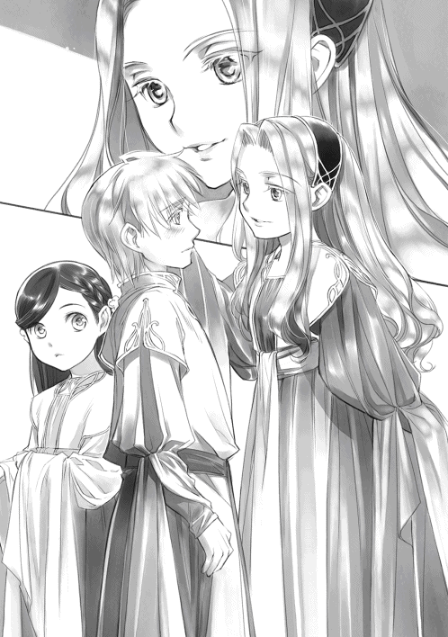
「よく頑張りましたね、ヴィルフリート。貴方はわたくしの誇りですわ」
柔和 な笑顔でそう言ったディートリンデを、ヴィルフリートは目を見張って見つめる。
「どうかなさったの？」
「いいえ。......何でも、何でもありません」
目を伏せて、首を横に振ったヴィルフリートだったが、その表情には突然触れられた不快さは全くなく、むしろ、昔を懐かしむような笑みが含まれていた。
「ねぇ、ヴィルフリート。こうして会える機会も少ないですもの。せっかくですから、わたくし、ゆっくりと従姉弟同士でお話がしたいですわ。お茶会にお招きしても良いかしら？」
こちらをちらりと見ながら、従姉弟同士というところを強調するからには、血縁上従姉弟には含まれないわたしはお呼びではないと言っているのはわかる。しかし、ここで空気を読んで引き下がるわけにはいかない。鈍いと言われようとも、気を利かせろと思われようとも、わたしはヴィルフリートを見張っていなければならない。
......こっちとしては、また前のような廃嫡 騒動が起こったら困るんですよ。
「まぁ、お茶会ですって。楽しみですわね、ヴィルフリート兄様」
「あら、お気付きではないのかもしれませんけれど、貴女はわたくしの従妹ではなくてよ？」
気付かない振りで、お茶会に同行しようとしたら、ハッキリとお断りされてしまった。空気を読んで引き下がる気がないのは、ディートリンデも同じようだ。
「公式にはわたくしもアウブ・エーレンフェストの娘なのですけれど？」
「公式には、でしょう？ これは私的なお茶会にする予定ですの。遠慮してくださる？」
わたしとディートリンデが次の出方を探り合って笑顔で睨み合っていると、すっと間に割って入ってくるように大きいヴィルフリートがやってきた。よく似ているから大きいヴィルフリートに見えるだけで、フレーベルタークのリュディガーだ。
「では、従兄 である私も招いていただけるのでしょうか、ディートリンデ様？」
「......えぇ、そうですわね。リュディガーならば、確かに従兄ですから、よろしくてよ」
数秒の沈黙に一体何を考えたのか知らないけれど、ディートリンデはニコリと笑った。
「そういうわけですから、申し訳ないけれど、ローゼマイン様はご遠慮してくださいませ」
勝ち誇ったようにディートリンデは笑顔でそう言って、三人でお茶会の打ち合わせを始めようとする。確かに血族ではないし、鈍感な振りをしてかなり食い下がったけれど、ここまですっぱりとお断りされたら、それ以上は立ち入れない。後はヴィルフリートの頑張りに任せるしかないだろう。
わたしはお茶会の打ち合わせを始める三人から距離を取り、くるりと小広間の中を見回した。それぞれに仲が良い者と談笑しながら、休憩時間を過ごしている中で、一人だけ、光の女神の貴色をまとった女子生徒がお稽古していた。嬉しくて、楽しくて仕方がなさそうな彼女の表情に惹かれて、わたしはふらふらと近付き、邪魔にならない程度の距離を取って座り込む。
うっとりと眺めていると、背後から声がかかった。
「エーレンフェストの小さいの」
ざわりと周囲がざわめいた。失礼極まりない呼びかけだが、この声の持ち主にはこれくらいの失礼は許されているのだ。王族に声をかけられた以上、無視するわけにもいかないところに腹が立つ。わたしは名残惜しい気分で彼女から目を離し、宮廷作法の実技の時と同じように愛想笑いを貼りつけて振り返った。
「......お声をかけてくださり恐悦 至極に存じます、アナスタージウス王子」
「其方、なかなか面白いことをしているそうだな？ 話が聞きたい。こちらへ来い」
命じられるままに、わたしはアナスタージウスの方へ歩きながら首を傾げた。色々と聞き及んでいる、と言われたけれど、一体何を誰から聞いて、どのように思われているのか、さっぱりわからない。少なくともわたしは面白いことなど、一度もした覚えがないのだ。
「アナスタージウス王子のお耳には一体どのようなお話が入っていらっしゃるのでしょう？ わたくし、面白いと言われるようなことをした覚えがないのですけれど......」
全く身に覚えがございません、とわたしがアナスタージウスの前に跪いて答えると、周囲に女子生徒を数人侍 らせているアナスタージウスが片方の眉を軽く上げた。
「魔獣を模した変わった騎獣でフラウレルムに襲いかかったのであろう？」
何という噂が流れているのだろうか。その言い草ではまるでわたしが危険人物だ。わたしは急いでその事実を否定する。否定する時だけはハッキリとしておかなければならない。曖昧にしていたら、肯定したと思われてしまう。
「わたくしは先生に襲い掛かるような危険な真似をしたことなど、神に誓ってございません。......その、わたくしの騎獣が他の方と少し違っていることは事実ですけれど」
わたしがそう言うと、アナスタージウスは疑わしそうに少しだけ目を細め、わたしを見下ろしながら考えを巡らせるように視線を巡らせる。
「ふぅむ。双方の言い分が違うようでは真実がわからぬではないか。......よろしい。ならば、其方の騎獣を見せてみろ。この私が危険か否か、判定してやろう」
......余計なお世話です。先生でもない貴方に判定されたくありません。
心の声を愛想笑いの中に押し込んで、わたしは「恐れ入ります」と言って、両手を胸の前で交差させた。
「では、外に行くぞ」
すぐさまという勢いで立ち上がったアナスタージウスに、わたしはぎょっとした。こんな途中で抜け出すような目立つ真似はしたくない。お稽古が始まるまでに戻って来られなかったら、先生に怒られるのは王族であるアナスタージウスではなく、振り回されたはずのわたしだ。
「......アナスタージウス王子、奉納舞のお稽古が終わった後で良いのではございませんか？ わたくしの騎獣のように取るに足りない物を見るよりは、奉納舞のお稽古が大事ですもの」
わたしはできるだけ早く合格が欲しいのだ。そのためには初日のお稽古をサボるようなことはできない。休憩時間が終わろうとしているようで、奉納舞を担当している先生方が戻ってきているのを見たアナスタージウスは軽く肩を竦めた。
「そうだな、後でよかろう。......其方は幼い容貌をしているが、なかなかの策士だな。変わった騎獣を餌にされても、そう簡単に私は釣れぬぞ」
「釣る、のですか？」
......えーと、わたしの記憶が確かならば、「見せろ」って命令されたんだよね？ なんでわたしが王子を誘ったみたいな言い方されてるの？
思考回路は全く理解できないけれど、わたしはハッキリと否定することにした。曖昧にしていては、入学早々わたしが身の程知らずにも王族に言い寄ったと噂されてしまう。
「ご安心くださいませ。わたくしはアナスタージウス王子を釣ったり、誘ったりいたしません。お約束してしまった以上、騎獣をお見せいたしますが、こちらからは二度と近付かないと誓います」
「......そうか」
不可解そうな顔をされたけれど、妙な誤解をされないように、きっちりと否定しておくことは大事だ。正直なところ、アナスタージウスを取り巻いているお姉様方の目が怖い。おそらく、卒業式のエスコートをかけて、熾烈な女の戦いが行われているに違いないのだ。明らかに対象外な外見をしているわたしに敵意を向けるほど、激しい争いなのだろう。怖い、怖い。
アナスタージウスの前から辞去することを許可された時には、先生方の声がかかった。心配そうなヴィルフリートが待っていて、わたしは「お稽古の後でアナスタージウス王子に騎獣を見せることになった」と報告した。
「ローゼマイン、決して失敗しないように気を付けるのだぞ」
わたしよりもヴィルフリートの方が顔色も悪く、緊張しているように見える。わたしはコクリと頷き、後半のお稽古が始まった。
「では、皆様がどの程度お稽古してきているのか、見せていただきましょう」
合格ラインを越えていたら一年生は終了らしい。先生は最終学年へのお稽古を優先するので、各自領地でお稽古するように、ということだ。二年生になるまでにどの程度お稽古したのか見せてもらう、と言う。
......絶対、今日中に合格するんだ。
全員が並んで、今までそれぞれの領地で練習してきた通りに舞を見せる。わたしは先程見ていた光の女神に祈りを捧げる彼女の舞を思い浮かべ、なるべくあの舞に近付けるように、精一杯丁寧に舞った。
......図書館、図書館、図書館がわたしを待っている！
わたしがありったけの思いを込めた奉納舞は無事合格ラインに達していたようで、先生からは笑顔で「大変結構です」という言葉をもらった。これで、わたしは奉納舞のお稽古にも来る必要はない。今年の一年生は皆、合格ラインに達していたようで、全員が合格だった。
「見学に来るのは自由ですよ。上級生の舞を見るのも勉強ですからね」
先生はそう言ったけれど、わたしには奉納舞のお稽古よりも図書館の方が大事だ。見学のために時間を使う気はない。
......後は騎獣とシュタープ。もうちょっとだ。いやっふぅ！
騎獣に関してはヒルシュールとの裏取引が済んでいるし、一人でごそごそといじっていた範囲で考えるならば、シュタープの扱いもそれほど難しい物ではないと思う。
......図書館まであとちょっと。
奉納舞で合格をもらって、うきうきに浮かれていたわたしは、寮に向かって帰ろうと小広間を出る。直後、顔色を変えたヴィルフリートに首根っこを引っつかまれ、小声で怒鳴られた。
「其方、アナスタージウス王子との約束を忘れていないか？」
「......すっぽりと抜けておりました」
「これだから、其方は......」
頭を抱えたヴィルフリートが、小広間の外でリヒャルダと共に待っているように、と言って、寮に戻っていく。招かれていないヴィルフリートは同席できないそうだ。
......危ない、危ない。
わたしは心の冷や汗を拭いながら、リヒャルダと小広間の出口でアナスタージウスが出てくるのを待っていた。何人もの女子生徒と一緒に出てきたアナスタージウスがわたしの姿を見つけて、フンと鼻を鳴らして、こちらを馬鹿にするように笑う。
「なんだ、このようなところで待っていたのか？ 悪いが、急用ができた。私は其方に付き合うことなどできぬ」
「アナスタージウス様はわたくし達にお付き合いくださるのです。ごめんなさいね」
クスクスと笑う女子生徒達からは明らかな敵意を感じた。アナスタージウスの寵愛 を得ようと張り合っているお姉様方の面倒事に巻き込まれたくはない。わたしはすぐさまその場をお暇 させてもらうことにした。
「王族の方々がお忙しいことは重々承知です。お気になさらないでくださいませ。さぁ、リヒャルダ。早く寮へ戻りましょう」
普段よりも少し表情が硬いリヒャルダにわたしは声をかけた。多分、わたしが軽く扱われたことに怒っているのだと思う。
「わたくし、今朝の本の続きが早く読みたいのです」
わたしが笑ってそう言うと、リヒャルダは仕方がないと言うように肩を下げて歩き出す。
女子生徒の怖い視線を気にして振り返ることもなかったわたしは、この時のアナスタージウスの表情など全く見ていなかった。
騎獣作製合格
丸一日講義がない日があったので、図書館に行きたいと言ってみたものの、案の定、リヒャルダに却下されたわたしは、次に印刷するための原稿作りに精を出していた。子供の話し言葉だったお話を書き言葉に直していくのだ。これで春からの印刷も困らない。
その次の日は、午後に音楽の実技があった。先生から課題曲が出されて、それが弾ければ合格というものだった。フェルディナンドからの課題で練習したことがある曲だったので、楽譜を見ながら数回練習をした後、先生の前で演奏して、すぐに合格をもらった。
「ローゼマイン様は御自身の曲だけではなく、他の曲もたくさん練習しているのですね」
「わたくしは自分の楽師や師の言うままに、練習しただけなのです」
「その楽師も連れてきてくださるのでしょう？ お茶会を楽しみにしておりますね」
「わたくしも楽師も、先生方のお茶会にお招きを受けるなんて、光栄で眠れぬほどです」
「まぁ、大袈裟ですこと」
そんな会話を交わして、わたしは音楽の実技を終えた。実際、新しい曲の作詞とアレンジと練習に励んでいるロジーナは、少しばかり睡眠時間を削っているようだ。大袈裟ではなく、お茶会を楽しみにしているようで、表情は楽しみで仕方がない興奮状態が時々出ている。
「ローゼマインはずいぶん早く終わったな」
ヴィルフリートは弾いたことがない曲だったようで、苦戦中だ。楽譜とにらめっこしながら、奮闘している。あっさりと合格をもぎ取って自席に戻ったわたしを見て、軽く肩を竦めた。
「其方は何でも簡単に弾きこなすのだ。フェシュピールの才能があるのだろう」
「違います。フェルディナンド様がどんどん難しい課題を積み上げていくのです。わたくしがこの曲を練習させられたのは、お披露目の直後でしたから」
「お披露目の直後、だと？」
ヴィルフリートがお披露目で弾いたのは、その年頃の子供が弾くのにちょうど良い難度の曲だった。あの時点で、どれだけの差があったのか実感したようで苦い顔になる。
「ヴィルフリート兄様もフェシュピールの名手になりたければ、一緒にフェルディナンド様のレッスンを受けますか？ 季節ごとに五〜六曲の課題曲が渡されて、いつ弾いてみろ、と言われても良いように、ロジーナと必死で練習するのですけれど......」
季節の終わりが近付くと「フェシュピールを持ってこい」と言われるのがいつになるのか、ドキドキしながら毎日練習して過ごすことになる。演奏で不合格ならば練習が足りないと叱られ、悪い点を延々と述べられる。合格だったら難易度がぐっと上がった新しい課題曲がまた出されるのだ。わたしの説明にヴィルフリートが軽く目を閉じて、頭をゆっくりと横に振った。
「叔父上の要求に軽々とついていけるのは其方くらいだ。私は魔力や魔術具の扱いならばともかく、音楽は叔父上の教育を受けたくない。今のままで構わぬ」
「わたくしも決して軽々ではないのですけれど......」
次の日。二年生の分の参考書は早くもまとまりつつあった。元々、去年情報収集をしてくれた分と、図書館に行ける者にお金を預けて借りてきてもらった参考書とエックハルトやフェルディナンドの書き留めたものをきちんとまとめるのがほとんどだったので、それほど時間はかからなかったのである。
「こうして見ると、フェルディナンド様やエックハルト兄様の頃に比べて、内容がかなり変わってしまった講義も多いのですね」
今までは「アンゲリカの成績を上げ隊」の活動の中、騎士見習いの座学をこなすための資料ばかりを見ていたので気付かなかったが、一年生や二年生の資料をここ数年の物と見比べてみると、大幅に内容が変わっている講義がいくつかあった。
皆で作り上げた参考書の原稿を見比べながら言ったわたしに、フィリーネが軽く肩を竦める。
「政変の後は先生方の入れ替えも行われたそうですから、大幅に講義内容が変わったとしても不思議ではありません」
貴族院の教師には大体の場合、助手が存在する。先生が引退したり死亡したりした場合は、助手が次の先生となって似たような内容の講義を行うそうだ。けれど、政変があり、大規模な粛清があった場合、先生と助手は基本的に同じ派閥に属するのでまとめて解任される。そうすると、講義内容に断絶が見られることもあるらしい。
「図書室で前年分の参考書を確認して講義すればよろしいのに......」
「研究者には研究者なりの自尊心があるのだろう。政変で解任された者とは違った講義を目指しているのではないのか？」
ヴィルフリートが同じように資料を見比べながらそう言う。研究者の自尊心も大事だが、学生達の学習が大変になることに関してもう少し気にかけてほしいものだ。
「前年の参考書が役に立たなくなるではありませんか」
一発合格を狙うわたしのような生徒には、前年の参考書が全く役に立たなくなるような講義は迷惑極まりない。図書館への道のりが確実に遠ざかる、とわたしが不満を口にすると、フィリーネが小さく笑った。
「新しい講義内容の載った参考書が図書館に増えると考えれば、ローゼマイン様のお怒りが和らぎませんか？」
「フィリーネは賢いですね。今、ちょっとだけ政変に感謝したくなりました」
「何事も考え方次第だな」
ヴィルフリートが、うんうん、と頷く。
「......参考書作りは終わりが近付きましたけれど、フィリーネはこの後どうしますの？」
「今度、文官見習い志望の下級貴族が集まってお茶会をすることになっているのです」
参考書作りを終えたフィリーネは、これから他領の下級貴族との交流に乗り出すのだそうだ。有益な情報を得るために、社交の場へと踏み出すと報告してくれた。
「まだ上級生のお茶会に交じるのは緊張しますし、皆で練習しようというお話になりまして......。それで、その、お茶会での話題について、気を付けなければならないことはございませんか？」
「それは、わたくしもよく考えておかなければならないことなのです」
「私も、従姉弟同士のお茶会があるからな。どこまでの情報を出して良いか、上級生を含めて一度ゆっくり話し合っておかねばならぬ、と思う」
うーん、と悩んでいると、今日の午前中は合格した講義なので、余裕があると多目的ホールに下りてきていたハルトムートが助言をくれた。
「間違いなく、エーレンフェストの成績向上について尋ねられると思うよ、フィリーネ」
学年が違う私もずいぶんと色々質問を受けているからね、とハルトムートは言った。エーレンフェスト成績向上委員会の活動により、全体的に座学の早期合格者が多く、一年生が全員一発合格という成績を叩きだしたエーレンフェストは、今のところ注目の的なのだそうだ。
「成績の優秀さではヴィルフリート様が目立っておりますが、ローゼマイン様は色々な意味で目立っております」
「魔力制御で魔石を何個も紛失して最後まで居残りさせられたとか、魔獣を模した騎獣で先生に襲い掛かったとか、最奥の間で行き倒れたとか、不名誉な目立ち方ばかりではありませんか」
わたしが自分の不本意な目立ち方に落ち込みつつ、ハルトムートに周囲の質問に何と答えているのか尋ねると、実に良い笑顔で答えてくれた。
「我々の成績が上がっているのは、エーレンフェストの聖女のおかげです。来年はもっと驚きますよ、と答えています」
「ハルトムート!? 」
「事実ではありませんか。エーレンフェスト成績向上委員会はローゼマイン様がお考えになられたことですし、一年生の快進撃もローゼマイン様の図書館への情熱の賜物 です。来年はローゼマイン式魔力圧縮方法で魔力を伸ばした者が更に活躍するのですから、私は嘘など言っていません。ご存知ないようですが、ローゼマイン様は不名誉な目立ち方だけをしているわけではございません。音楽で新しい曲をいくつも作っているとか、座学はほぼ満点で合格しているとか、宮廷作法で一発合格だとか、優秀な目立ち方もしております」
ハルトムートは晴れがましい顔でそう言って、フィリーネに向き直る。
「他領に詳細を伝える必要はありません。曖昧にしておけば良いのですが、決して嘘を言ってはなりません。信用を得ることから始めなければ、敵を欺 くことさえできませんから」
笑顔で言い切ったハルトムートをフィリーネは「わたくしもそのように答えます」と言いながら尊敬の眼差 しで見ている。
「何と言うことでしょう。妙に誇張 されたエーレンフェストの聖女に関する噂はハルトムートのせいだったのですね！」
「......ローゼマイン様、誤解です。私だけのせいではありません。エーレンフェストが一丸となって広げていますから」
「尚更、悪いですっ！ せめて、次期領主となる可能性が高いヴィルフリート兄様の発案ということにしてくださいませ。わたくしは一般生徒に埋没して図書館に籠るのです」
わたしは主張したが、ハルトムートだけではなく、多目的ホールにいた皆に「どう考えても、すでに手遅れです」と言われてしまった。
「それに、ローゼマイン様の手柄を譲られることに慣れさせてしまうのはヴィルフリート様の成長のためには良くありません」
「うむ、私は私にできることを精一杯するのだ」
二人にそう言われて納得してしまったわたしは、エーレンフェストの聖女伝説が加速することに気付いていなかった。
午後からは騎獣作製の実技である。アーレンスバッハ寮の寮監であるフラウレルムを前回の講義で失神させてしまったわたしは、魔獣を模した騎獣で襲われた、という噂を流されるくらい疎まれているらしい。
......疎まれるのはどうでもいいけど、合格がもらえないのは困るんだよね。
ヒルシュールと裏取引をしたので何とかなるとは思うけれど、忘れずにちゃんと講義に来てくれるかどうかという点であの先生には少しばかりの不安が残る。研究に没頭していたら、わたしとの約束など簡単に忘れられそうだ。フェルディナンドのマッドサイエンティスト成分を煮詰めたような人なので、どうしても心配になる。
だが、わたしの心配は杞憂 だったようで、ヒルシュールは騎獣作製の実技にやってきた。それも、見慣れない数人の先生を連れて。
「まぁ、先生方。一体どうなさったのですか？」
「フラウレルムが前回失神したことで、わたくし、調合を中断することになったでしょう？ また呼び出されては大変ですから、今回は最初から見学しておいた方が良いと思ったのです」
ふふふ、と笑いながら、ヒルシュールが紫の目をきらりと輝かせた。
「失敗して素材を無駄にしたことをそれほど恨 んでいるわけではないのですよ。弁償 さえしていただけたら」
「ま、まぁ、それは騎獣でわたくしに襲い掛かった危険な生徒に請求するべきですわね」
「その襲い掛かったというのもどうかしら？ わたくしが前回に見た限りでは、襲い掛かられるようなことはありませんでした。フラウレルムが大袈裟に騒いでいるだけではなくて？」
「な、何ですって!? 」
フラウレルムがいきり立つのと、穏やかそうだが、眼光の鋭いおじいちゃん先生が二人の間に割って入るのはほぼ同じだった。
「大袈裟かどうか知らぬが、生徒が魔獣を模した騎獣で襲い掛かったという噂になっている以上、危険を避けるためにも他の教師を入れた方が良かろう。其方の正当性が証明できる」
安全と噂の確認のために、とおじいちゃん先生は言った。自分から「危険だ」と噂を流してきたらしいフラウレルムは受け入れるしかないようだ。
「では、どれほど危険な存在か、皆様にも確認していただいた方がよろしいですわね」
まるで負け惜しみのような口調でそう言ったフラウレルムが肩で風を切るようにして生徒の中心に立つと、騎獣にするための魔石を出すように、と言った。わたしは自分の安全のためにもヒルシュールの近くへと移動して、魔石を取り出す。すると、数人の先生方がわたしを取り巻くように立ち位置を変え始めた。
そんなに警戒しなくてもいいのに、と信用のなさを嘆いていると、ヒルシュールが笑った。
「皆、ローゼマイン様の新しい形の騎獣に興味があるのですよ。わたくしが声をかけられる相手は研究熱心で新しい物が好きな方ばかりですからね」
つまり、わたしは警戒されているのではなく、研究対象を見るのに近い好奇心と興味に満ちた目で見つめられているということである。わたしのレッサーバスに危険がないことを示すためにも、今回はおとなしく見世物にならなければならないようだ。
......合格がもらえるなら、見世物くらい我慢するけど。
ヒルシュールによると、最奥の間で行き倒れた時にレッサーバスを見た数人の先生達が「珍しくて変わっている」とか「のっそりとした鈍くさい動きで、とてもグリュンには思えなかった」と言ったせいで、興味を掻き立てられた先生方が何人かいるらしい。
「わたくしも乗り込み型の騎獣を作るために、もう一度じっくりと見てみたいですからね」
新しく乗り込み型の騎獣を作るための魔石を準備したのだ、とヒルシュールが自分用の魔石を手にして楽しそうに笑った。
「騎獣の形が作れる者は、形を作ってくださいませ」
フラウレルムの声と同時に、「さぁ、早く」と周囲の先生方に急 かされ、わたしは一人用のレッサーバスを出した。
「ほほぅ、これが......。少し鈍そうな顔をしているように見えるが、確かにグリュンだな」
「椅子があるが、一体どのようにして乗るのだ？」
わたしは一歩引いた状態で、研究者に触られているレッサーバスを見ていた。
「ローゼマイン様、こちらの騎獣は大きさも変えられるとおっしゃいましたよね？」
ヒルシュールに言われて、わたしはレッサーバスを車高の高いファミリーカーくらいのサイズに変えた。乗れるように入り口を開けると、嬉々としたヒルシュールが中に入って、あちこちを触りまくる。前回も同じようにしていたので、その動きに躊躇いなど欠片もない。
「ほぅほぅ、こうして乗るのか」
新しもの好きな研究者というのは間違いではないようで、数人の先生方が次々入っては、あちこちを見回している。
「ローゼマイン様、これは何です？ どのようにして動かすのだ？」
「おぅ、これは座り心地が良いな」
魔獣を模した騎獣の危険性を確認に来たはずの先生方がレッサーバスに乗り込んで、見回しながら盛り上がっている様子を見て、周囲の生徒達が唖然 とした表情になった。
「ご覧になって。ヒルシュール先生はスカートのままで乗り込んでましてよ」
「そういえば、騎獣服に着替えることなく乗れる、と伺ったような......」
「これがシュミルならば、可愛らしいかもしれませんわね」
ちょっと興味を持ったのか、女子生徒達が少しずつ距離を詰めながら言い合っている。グリュンに似ていると言われるレッサーバスだが、まだグリュンを魔獣と認識していない一年生は恐怖を感じることもないようで、好奇心に任せて少しずつ近付いてきた。
「危ないですわ！ そのような非常識なものに近付くなんて！」
フラウレルムが必死で叫んでいるが、特に危ないことが起こっていないのは、乗り込んで色々と見て回る先生方の姿で一目瞭然 だ。
「では、わたくしもローゼマイン様の騎獣を参考に、新しい騎獣を作ってみましょうか。素材や道具を安全に運べる騎獣があれば良いと思っていたのですよ」
「ヒルシュール先生、新しい騎獣は簡単に作れるのですか？ わたくしの護衛騎士は二つを扱うのは無理だと言っておりましたけれど......」
「二つを使い分けるのは騎士の咄嗟の判断では難しくなるかもしれませんけれど、ゆっくりと考える時間があれば、思考を切り替えて作ることはできますよ。それに、わたくしは以前の騎獣が使えなくなっても構わないと考えているので問題ございません」
レッサーバスを見ながら、ヒルシュールは魔石を手に新しい騎獣を作り始めた。魔力の扱いに慣れているせいだろうか、結構簡単に新しい騎獣を作り出す。
「わあぁぁぁ！」
ヒルシュールが騎獣を作り出すと、周囲の生徒から歓声が上がった。レッサーバスの隣にできたのは、シュミルの頭が付いた一人用の騎獣だ。
レッサーバスとは違い、ハンドルの代わりに手綱が付いている。他人を乗せることは考慮していないようで、椅子は一つだが、荷物を置くための場所はある。まさに自分のための騎獣だ。
ヒルシュールが少し手を動かすと、レッサーバスと同じように入り口がうにょんと開いた。そこにスカートのままで乗り込んでいく。それから、わたしの騎獣と同じように作られている椅子に座ると、ハンドルの代わりに垂れている手綱を握った。
ヒルシュールが魔力を流して、他の騎獣と同じように手綱を操って動かし始めると、シュミル型の騎獣は動き始め、小広間を駆けることができた。羽もないのに空中を駆けるところまできちんとイメージできているらしい。
......うわぁ、神官長よりも順応性が高いかも。
「手綱でも問題なく動かせますね。動かし方は今までと同じです。ゆったりと椅子に座れるので、優雅な気分で騎獣に乗れます」
シュミル型の騎獣から降りてきたヒルシュールが乗り心地に満足したように笑顔で頷いた。
「ヒルシュール先生、こちらの騎獣の作り方を教えてくださいませ」
「わたくしも知りたく存じます」
見慣れた手綱やシュミルの外観が受け入れやすいようで、女子生徒がこぞってヒルシュールの真似をしたがった。あっという間にシュミル型の騎獣を作ったヒルシュールが一躍女子生徒の人気者である。わたしのレッサーバスに群がる生徒はいなくなった。
「......レッサー君も可愛いですもん」
「可愛くはないが、なかなか興味深いものであったぞ」
わたしを慰めるようにそう言ったおじいちゃん先生は「嬉しい収穫だった」と言いながら小広間を出て行った。
「自分で作り出した騎獣で貴族院の上空を一周できれば、騎獣作製は合格です」
ヒルシュールが先導して外に出るとそう言った。小広間に騎獣が増えてきて手狭になってきたので、乗ることに慣れてきた生徒は魔石に一度戻した上で外に出るように言われたのだ。
外に出ると寒い冬の空気に体が縮こまる気がした。わたしは急いでレッサーバスを出して乗り込むとハンドルを握る。レッサーバスの中は風が当たらない分、まだ暖かい。
......でも、エーレンフェストに比べたら、貴族院の方が寒くないけどね。
冬だから寒いけれど、エーレンフェストの方がもっと寒いし、雪も深い。そんな気候の違いを感じることで、本当に自分が今いる場所はエーレンフェストではないのだと実感する。
「参りましょう」
先行するヒルシュールのシュミル型騎獣を追いかけて、わたしはレッサーバスで空を駆けていく。フラウレルムは中で進度の遅い生徒を教えるそうだ。
数匹の騎獣が連なって貴族院の上空を駆けていく。わたしは初めて、貴族院の全景を見ることになった。今までは寮まで転移陣、寮から講堂前の廊下へは玄関扉を開ければ到着していたので、貴族院も寮も外観を眺めたことがなかったのだ。
貴族院は高い山の上にあった。周囲を深い森の斜面に囲まれた、驚くほど広大すぎる敷地が目に入る。本館と呼ばれる講堂などがある場所がすぐ真下の一番大きな建物で、小高い山を取り込むように白い建物があった。
冬にも葉を落とさないモミの木のような針葉樹林 が、雪を衣装のように着ているので光景の全てが白っぽく見えた。そんな森の中にポツリポツリと点在する白い建物がそれぞれの寮なのだと思う。ぐるりと貴族院の敷地を駆けるうちにいくつも建物はあったけれど、正直、エーレンフェストの寮がどれなのかわからない。ただ、リヒャルダから聞いた通り、色々な建築様式の寮があるのが面白いと思った。
......お城に似た建物なら、あれか、こっちか。
貴族院の周囲は斜面と深い森に囲まれている上に、雲海に囲まれていて下の様子が全く見えない。天気が良ければ見えるのだろうか。ぐるりと駆け回って見下ろした限りでは、この地には貴族院と寮しか存在しないように見えた。少なくとも、エーレンフェストの貴族街のようにすぐ近くに平民の街や田畑があるようには見えない。まるで貴族院自体が大きな神殿のようだ。
聖典にあった神々が降り立ち、人々を治めるために王に力を与えた始まりの土地がこの場所なのかもしれない。そんなことを考えながら貴族院の敷地をぐるりと見て回る。雪に包まれた貴族院の敷地は、神々が降り立っても不思議ではないほどに神秘的だった。
「騎獣作製は合格です」
わたしは無事に騎獣作製の講義の合格を勝ち取った。そして、ヒルシュールのおかげで、乗り込み型の騎獣が女子生徒の間で流行ることになる。
シュタープの基礎
基礎的なシュタープの使い方に関する実技の日まで、また数日の余裕があった。わたしは絵本の原稿作りや二年生の予習をしながら毎日を過ごしていた。シュタープの使い方をマスターすれば、晴れて図書館へ行けるのである。わたしはシュタープの使い方の基礎を教えてくれる実技がある日を指折り数えて待っていた。
「今ばかりはローゼマイン様の優秀さが恨めしいですわ」
音楽の先生方とのお茶会を早く設定したいブリュンヒルデやわたしと共に図書館に行ってシュバルツとヴァイスの採寸をしようと考えている女の子達が、座学の合格を全て得ようと、今必死で勉強をしている。
「ローゼマイン様、あまり急いで合格しなくてもよろしいのですよ」
「このままでは、わたくし、シュバルツとヴァイスの採寸に行けなくなるかもしれません」
一発合格を狙っていた時の一年生のような必死の形相で女の子達が勉強している。それにつられるように、座学が残っている男の子達も勉強に力が入っていた。そんな多目的ホールを見回し、わたしは笑顔で首を横に振る。わたしは図書館に行くのをこれ以上待つつもりはない。
「わたくしは急いで合格して、急いで図書館に行くのです。一日も早くシュタープの講義が始まってほしいくらいですわ」
絶対に一度で合格するのだと張り切っていたら、ハルトムートが小さく笑った。
「シュタープの基礎を学ぶのはそう簡単ではありません、ローゼマイン様。下級貴族は本当に期間いっぱいかけて習得するものなのです。領主候補生でも初日に合格した者の話は滅多に聞きません。さすがに無理ですよ」
けれど、無理だと言われると、意地でも合格したくなる。
「わたくし、合格に向けてできる限り努力します。図書館に向かうためならば、いくらでも努力できるのです」
「そうですわ、ハルトムート。図書館を前にしたローゼマイン様がこの快進撃を止めるはずがありません。最速で合格することを念頭に置いて、側近であるわたくし達は予定を立てなければならないのですよ」
あの勢いで図書館に籠られてはお茶会の予定を立てるのも難しいではありませんか、とブリュンヒルデが呟きながら参考書に視線を落とす。ブリュンヒルデは今握っている参考書の講義に合格すれば、座学が終了するらしい。
「ふむ。図書館のためならば、一切の手抜きもしない。全力で立ち向かうということですか」
「そういうことです」
「では、私はローゼマイン様が新しい伝説を作られるのを心待ちにしております」
そんなハルトムートの激励をもらってしまった。
......新しい伝説と図書館か。......どうしよう？
これ以上噂を盛られるのは、正直なところ避けたい。埋没した平穏な生活は必須だ。だが、平穏な生活のためには図書館が必須だ。どちらを取るべきか。これは非常に難しい問題である。
......難しいけど、図書館一択だよね？
わたしにそれ以外の選択肢なんて存在しなかった。
「ローゼマイン様、目立つのを避けたいならば、一度くらいは合格を先送りしても良いのではございませんか？」
そんな側近達の声に送られて、わたしはシュタープの基礎を教えてくれる実技へ向かった。いつも通りの小広間に、わたしはヴィルフリートや上級貴族達と一緒に入っていく。
ヒルシュールとルーフェンが入ってきた。今日の先生はこの二人のようだ。ルーフェンが拳を握ってシュタープの説明を始めた。
「シュタープは貴族しか使えぬ道具だ。シュタープを持たぬ者は貴族と呼ばぬ」
貴族として認められるためには、「神の意志」を取得できるだけの魔力量が必要だそうだ。その選別が、洗礼式で行われる魔力量の確認らしい。
神から初代の王に与えられた物の一つが、このシュタープだそうだ。それまで自分の魔力を持て余していた王は、神に与えられたシュタープにより、自身の魔力を自由に扱うことができるようになった......と聖典の建国神話には書いてあった。聖典にあることが完全な事実かどうかは知らないけれど、その話のもとになるような出来事はあったのだろう、と今では素直に考えられる。
「最初はシュタープの形を作るところから始めます。各自、自分が扱いやすいシュタープを作り出してくださいませ。安定して出すことができるかどうか確認するために、シュタープを出して消すことを三回繰り返して行っていただきます。安定して形が作れるようになれば、わたくしのところへ来てください」
「よし、すごいシュタープを作ってやる」
誰しも考えることは同じなのだろう。シュタープの形や大きさに凝ろうと、皆が自分のシュタープを出し始めた。魔力の扱いに多少なりとも慣れている領主候補生は、自分に相応しい最高のシュタープを作り出そうと躍起になっている。魔力の扱いに慣れていない上級貴族は、シュタープの形を作るために自分の魔力を動かすところで、すでに難儀していた。
「私はカッコいいシュタープを作るのだ。ローゼマインはどのような形にするつもりだ？」
ヴィルフリートが楽しそうに深緑の瞳を輝かせながら、わたしを覗き込んできた。わたしは「神の意志」を取り込んだ日にベッドでゴロゴロしながら一通り遊んだので、シュタープの形にこだわるつもりは全くない。シンプルが一番だという結論に、すでに達している。
「......わたくしは、他の大人が持っているような普通のシュタープです」
「何だ、それは。つまらぬではないか。もう少し凝った方が良いのではないか？ 騎獣があのように変わっているのだ。其方のシュタープも変わっていたところで誰も驚かないぞ」
わたしのレッサー君は利便性を追及した結果、他人の騎獣と少し違う形になったのだ。別に他人と違うものを求めたわけではない。
「騎獣はともかく、シュタープは凝る必要がないのですよ」
自分が納得するまで凝ると良いよ、と心の中で呟きながらヴィルフリートの健闘を祈ると、わたしはヒルシュールのところへ向かった。
「あら、ローゼマイン様。どうされました？」
「シュタープを作ります。見てください」
「......こっそり練習していましたね」
問題児を見る目でヒルシュールに促され、わたしはシュタープを形作った。魔力を動かして、三回きちんと同じ形のシュタープを作ってみせると、ヒルシュールが少し目を丸くして、ハァ、と呆れたような息を吐く。
「素晴らしい安定具合です。次の段階に進んでも全く問題なさそうですね。次はシュタープを使って、魔術具に魔力を込めるのが課題です。ルーフェン、魔石の準備はできておりますか？」
「あぁ、ヒルシュール。できている」
自分の腰に下げている革袋を軽く叩きながら、ルーフェンが生徒達の少ない離れた場所へ歩いていった。その様子を見ながら、ヒルシュールがわたしに次の課題を教えてくれる。
「ローゼマイン様、あちらでオルドナンツの作り方をルーフェンが教えてくださいます。オルドナンツをわたくしに飛ばしてみてください」
わたしがコクリと頷くと、ヒルシュールはニコリとした笑顔を浮かべたまま、声を潜めた。
「オルドナンツは少量の魔力でも形が作れることから教材として選ばれています。できるだけ注ぐ魔力は抑えてくださいませ」
「わかりました」
わたしは魔術関係の座学で学んだことだが、オルドナンツを作るための魔石は普通の魔石ではない。一度調合されてできあがった、用途が限定されている魔石だ。形が魔石なので、皆が魔石と呼ぶけれど、厳密には魔術具の一種なのである。
同じように用途が限られていて、生活の中でよく使われているのは、緑の魔石だそうだ。これは側仕えがよく利用する物で、水瓶 と水差しを繋ぐために使われているらしい。水差しの底にはめ込まれている魔石をシュタープで叩くと、ずっと水が出てくるのだそうだ。専らお風呂に水を満たすために使われている。
ルーフェンのところへ行くと、見覚えのある黄色の魔石を手渡された。わたしが自分の手のひらにある魔石を見ていると、ルーフェンがやり方を教えてくれる。
「オルドナンツの使い方を覚えておかなければ、他人に声を届けることができぬ。これは、仕事をする上で専門に関係なく誰もが使うので、オルドナンツは使えるようになっておかねば、見習い仕事にさえ困ることになるぞ。いいか？」
「はい」
「返事が小さい！」
「はいっ！」
精一杯返事をすると、「その意気だ」とルーフェンは満足そうに笑った。だが、わたしはこの熱血具合にどこまでついて行けるか、少し不安になる。魔力に問題がなくても、体力には大きな問題があるのだ。
「まず、こうしてシュタープで軽く叩きながら、この魔石に魔力を注いでオルドナンツを作る」
ルーフェンの手本を見ながら、わたしは手渡された魔石を左の手のひらに置いて、右手に出現させたシュタープを握る。ヒルシュールに注意された通り、できるだけ魔力を少なめに注いだ。
......わぉ、すごい。
シュタープは自分の魔力を効率的に使えるというのは本当のようで、今までの感覚がバケツでだぱっと注ぐ感じだったのが、水道の蛇口で量が調節できる感じになった。
シュタープで軽くコンと魔石を叩くと、黄色の魔石が見覚えがある白い鳥へと変化していった。バサリと一度羽を広げた白い鳥が、わたしの腕につかまって、羽を畳む。重さはほとんど感じない。不思議な存在に、わたしは大きく目を見開いた。
......うわぁ、わたし、とっても魔法使いの気分。
自分の意志で自由に魔力を扱うための道具であるシュタープが出てきて、それで黄色の石を叩いたら白い鳥になるのだ。いつの間にか、わたし自身がファンタジーな存在になっている。
「お、上手にできたじゃないか。では、オルドナンツが口を開けたら、声を乗せてみろ」
オルドナンツが、かぱっと口を開くのを待って、わたしは声をかけた。
「ローゼマインです。ヒルシュール先生、オルドナンツができました」
わたしが言葉を切ると、オルドナンツが口を閉ざした。これでよし、とヒルシュールに向かってオルドナンツを飛ばそうとしたら、ルーフェンがわたしを止めた。それから、自分のシュタープを指示棒のように軽く振る。
「まだ他にも言いたいことがあれば、もう一度シュタープでくちばしを叩けば口を開ける」
それは初めて知った。ほぅほぅ、と頷いて、わたしは一度オルドナンツのくちばしを叩いてみる。かぱっとオルドナンツが口を開けた。
「......どうしたら閉じるのですか？」
「声をかければ閉じる。......ほら」
「え？ と、取り消しはどのようにするのでしょう!? 」
間抜けなやりとりまで初めてのオルドナンツで送りたくない。わたしの質問にルーフェンが笑いながら「シュタープで魔力を吸収すれば、元の魔石状態に戻る」と教えてくれた。わたしはシュタープで魔力を丁寧に吸収して、もう一度声を録音し直した。
「声を乗せたら、ヒルシュールの元へ飛んでいくことを考えながら、魔力で押し出すようにシュタープを振るんだ」
力一杯やれ！ とルーフェンが言ったけれど、わたしが力一杯振ったら、魔力が多すぎると思う。特にすぐ近くに見えているヒルシュールに飛ばすのだから、魔力はほとんど必要ないだろう。そっと押し出すように、わたしはシュタープを振った。
オルドナンツはヒルシュールの元へと飛んでいき、わたしが知っている通り、三回同じ言葉を繰り返して喋った。その後、ヒルシュールの伝言を抱えたオルドナンツが飛んできて、「よくできましたね。ローゼマイン様、次の課題へ進んでください」と三回言うと、黄色い魔石に戻った。わたしはその魔石をルーフェンに返す。
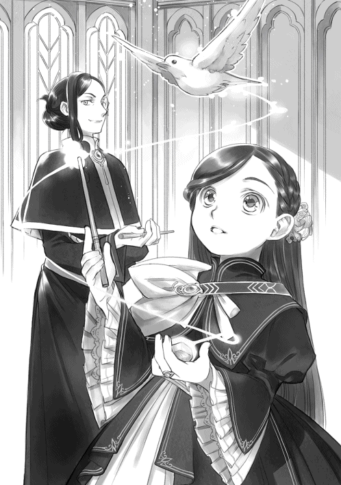
「次の課題は何ですか？」
「シュタープで魔力を打ち出す訓練だ。単純に魔力を打ち出して攻撃もできるが、今回はロートを打ち上げるのが課題だ。ロートは救援を求めるための赤い光だ。これができれば、何かあった時に救援が呼べる。騎士が駆けつけてくれるはずだ」
そう言って、ルーフェンが自分のシュタープを出して、ロートの打ち上げ方を教えてくれる。
「こうして、シュタープの先に魔力を集めてくる。体中からぐっと......」
ルーフェンがそう言いながら、シュタープの先に魔力を流しているようで、拳大の光がシュタープの先に集まっていく。すぐにパチパチと静電気が弾けるような音がし始めた。
「ロート！」
ルーフェンがそう叫んで、大きくシュタープを上に向かって振り上げると同時に、赤い光が天井に向かって打ち付けられ、しばらくすると消えた。白い天井にはもう何も残っていない。
「創造魔法の建物は魔力では傷が入らないし、ロートが突き抜けていくこともない。安心して自分の全てをぶつけるんだ」
「全てをぶつけるのは構わないのですけれど、本日の実技はこの課題で終了ですか？」
言われるままに全部ぶつけたら後で困るのではないか。そう思って質問すると、ルーフェンが何故か驚いたように何度か目を瞬いた。
「課題はまだある。だが、まさか、今日中に全ての課題を終える気か？」
「はい。そのつもりですけれど、何か問題がございますか？」
「......いや、魔力を温存しておいた方が良いのではないか、と思っただけだ」
「でしたら、この課題で全てをぶつけるのもおかしいですよね？」
「う、うむ。まぁ、いい。程々に全力でぶつかっていくんだ」
......わけがわからないよ。程々に全力って、つまり、どうするの？
とりあえず、まだ他にも課題があることがわかったのだから、ルーフェンの言葉は適当に聞き流して、魔力は温存方向で行きたいと思う。わたしはルーフェンがしていたように、シュタープの先にゆっくりと魔力を流していき、大人の拳くらいの大きさまで魔力を溜めていく。シュタープの先に集まった魔力がじわじわと順調に大きくなっていった。
「よし、いいぞ！ その調子だ！ もっと大きく！ どんどん魔力を注いで！」
......でも、ホントにこのシュタープってすごいね。
自分の魔力を最も効率的に扱うことができる道具というのは誇張でも何でもない。不安定で細かい調整が難しかったわたしの魔力がずいぶんと扱いやすくなっているのだ。まるで、ユレーヴェを使って眠る前と同じような感覚で魔力を扱うことができる。
「さぁ、放て！ ロートと叫んで力一杯空に向かって打ち上げるんだ！」
......天井ですけどね。
わたしはシュタープを握った右手を高く上げ、拳大になった光を天井に向かって打ち上げる。
「ロート」
赤い光が天井に向かってまっすぐに伸びた。魔力の調節もきちんとできているようだ。わたしは何事もなく課題を終えたことに安堵の息を吐いた。
「よし、合格だ。......だが、そろそろ魔力が足りなくならないか？」
ルーフェンが周囲を見回しながら、少しだけ心配そうにそう言った。わたしもつられて周囲に視線を向ける。どうやら、上級貴族はシュタープを作り出すための魔力の扱いで、すでに疲れているようだ。カッコいいシュタープを作り出すことに夢中になっていた領主候補生は、かなり魔力を無駄遣いしたようで疲れて座り込んでいる。ヴィルフリートはずいぶん張り切ってシュタープを作ろうとしたのか、最初の位置から一歩も動いておらず、疲れた顔になっていた。
自分だけのオリジナルシュタープの形にはこだわらず、シンプルなシュタープを作った者だけがオルドナンツに挑戦している。それでも、相当に疲労感があるのか、オルドナンツに挑戦する手前で止めている者もいれば、オルドナンツを作り上げた後にぐったりしている者もいた。
......わたし、本当に魔力量は規格外なんだ。
軽く目を閉じればわかるが、わたしの魔力にはまだまだ余裕がある。
「どうする？ 次の課題にも挑戦するのか？」
周囲と足並みを揃えて埋没する方を選択するか、規格外だと言われようと一刻も早く図書館に向かう方を選択するか、ほんの一瞬だけ悩んだ。
「次の課題に挑戦します」
わたしがそう言うと、ルーフェンが軽く目を見張った。その後、「自分の限界に挑戦するのも人生には必要だ。よし、やってみろ！」と熱意に燃えた目で、次の課題を教えてくれる。
「最後の課題だ。魔力を含んだ道具として使えるようにシュタープを変形させる」
わたしが一番目にしている変形は、騎士達が戦う時に武器へ変化させるものだった。だが、一年生の課題はシュタープをナイフとペンと混ぜ棒に変化させるらしい。
ふむふむ、と聞いていると、ヒルシュールがこちらに向かって歩いて来るのが見える。どうやら、他の生徒達は先に進まず、全員がリタイアしたようだ。魔力の使い過ぎでぐったりとしている生徒達を見回し、ヒルシュールが口を開いた。
「シュタープを変形させる訓練は非常に大事です。来年は魔術具の調合の基礎を学びますが、その時にシュタープを変形させたナイフとペンと混ぜ棒が使えなければ、調合の成功率が大きく下がりますからね」
魔術具の調合を主に行っているヒルシュールの言葉に生徒達が表情を引き締めた。ナイフで素材を刻み、ペンで魔法陣の書き込みをし、混ぜ棒で魔力を注ぎながら調合鍋をかき混ぜなければならないそうだ。ただ、フェルディナンドの指導でユレーヴェ作りを行ったわたしは知っている。別にシュタープがなくても代用できる魔術具があれば調合はできることを。
「どのようにすれば変形できるのですか？」
「まず、ナイフから始めましょう。シュタープを出し、どのように変化させるかを頭の中にハッキリと描きます」
ヒルシュールに言われるまま、わたしはシュタープを出し、フェルディナンドが調合の時に使っていたナイフを思い浮かべる。「メッサー」と声を出したヒルシュールにつられるように、わたしも「メッサー」と唱えた。
シュタープが形を変え、ナイフとなって自分の手に握られていた。ヒルシュールを見ると、その手にもよく似たナイフが握られている。
「大変結構です。リューケンと唱えて、変形を解除してください」
わたしはナイフを握って、「リューケン」と唱えた。すっと形を戻したシュタープがそこにあった。おぉ、と周囲から感嘆の籠った声が上がる。
「では、ナイフと同じようにペンと混ぜ棒も作ってみてくださいませ」
ヒルシュールに教えられるままに「スティロ」と唱えてペンを、「バイメーン」と唱えて混ぜ棒を作る。
「......まさか初日で全ての課題に合格するとは思いませんでした。フェルディナンド様以来の快挙ですよ。さすが愛弟子ですね」
呆れたような溜息を吐いたヒルシュールの言葉に、生徒達が驚いたように顔を見合わせた。ざわざわとし始め、その声の一部がわたしの耳にも届く。
「エーレンフェストのフェルディナンド様といえば......あの有名な？」
「あぁ。宝盗りディッターでは有名で、用兵が巧 みと聞いたぞ。その者がいる年だけ、我が領地は優勝を逃したのだと語り継がれている。其方達はあれがいなくて幸いだと言われたぞ」
「いや、ディッターではなく、次々と魔術具を発明した天才だったはずだ。私の叔父上は彼から大量の魔術具を買っていたから間違いない」
「周囲の魔物を狩りつくす勢いで素材を採集していた戦闘狂ではないのか？ 貴族院にある質の良い素材は大体彼が持っていったと聞いたことがある」
「フェシュピールの名手ではなかったか？ 私の叔母がそれは素晴らしい演奏だった、と......」
「一体どれが正しいのだ!? 」
......どれも多分正しいですよ。領主候補生であり、騎士見習いであり、文官見習いであり、全てで優秀な成績だって聞きましたから。
わたしは改めて他領で語られているフェルディナンドの偉業に目を瞬いた。超人的な評価は単なる身贔屓でもなかったらしい。
「愛弟子が領主候補生として存在するならば、エーレンフェストの成績が突然上がったのも納得できるぞ。フェルディナンド様は貴族院に在学中、複数のコースで最優秀だったそうだ」
皆が自分の知っているフェルディナンド伝説を語り始める。絶対にフェルディナンドだけではなく、何人分もの伝説が混じり始めたな、と思うくらいに噂話が盛られてきた頃には、わたしに注がれる視線がぐんと減っていた。
......すでに何かやらかした天才がいると、わたしが目立たなくていいね。
周囲がフェルディナンドだけではなく、過去の伝説級の生徒の話で盛り上がる中、ヒルシュールがわたしに声をかけた。
「ローゼマイン様は合格です。けれど、今のようにいちいち目を閉じて、その形を思い浮かべなくても、呪文と共にすぐに変形ができるように慣れておいてくださいませ」
「はい」
お嬢様らしく取り繕った笑顔で返事をしつつ、わたしは心の中で快哉 を叫ぶ。
......やった、やったよ。全部合格！ これで図書館に行ける！ 明日からは図書館通いだ！ いやっふぅ！ 一日中、図書館に引き籠って読書三昧！ 神に祈りを！
エピローグ
ローゼマインが貴族院へ向かうと、ジルヴェスターの元に次々と意味不明で不穏 極まりない報告書が届くようになった。例年ならば、ヒルシュールから「特筆すべきことはございません」と簡潔に書かれた木札が届けられるだけだが、今年は違った。
......こんなに頭を抱えたくなるのは、初めての領主会議以来だ！ あの問題児め！
貴族院から初めて報告書が届いたのは、まだ進級式さえ始まっていない土の日のこと。出発前に決まっていなかったローゼマインの側近決定の知らせがヴィルフリートから届いた。
この二年間の息子の努力と成長、それから、貴族の力関係を考えると、ジルヴェスターはできることならばヴィルフリートを次期領主にしてやりたいと考えている。そのため、息子には寮の統制を任せ、「シャルロッテが入学するまでに少しでも有利な立場を取っておくように」と言い含めた。ローゼマインと協力すれば、それほど難しいことではないはずだ。
......む、ヴィルフリートは頑張っているようだな。
ジルヴェスターは初めての報告書にざっと目を通す。思いついたままに書いているところがあるが、内容がわからないわけではない。ローゼマインの目覚めが近いと知らせがあった時から、側近の選定がフロレンツィアやエルヴィーラの間で行われたという報告は受けていた。中級騎士見習いのユーディットと下級文官見習いフィリーネを除いては予定通りだ。
「シャルロッテ、ローゼマインの側近になったユーディットとフィリーネを知っているか？」
その日の夕食時、貴族院での兄姉の様子を聞きたがるシャルロッテにジルヴェスターは尋ねてみた。冬の子供部屋の統括に励んでいる娘ならば知っているかもしれないと思ったのだ。
「ユーディットはアンゲリカに憧れている騎士見習いです。彼女と同じようにお姉様にお仕えしたいと、わたくしの護衛騎士打診は断られました。お姉様の護衛騎士になれたのですね」
シャルロッテは嬉しそうだが、打診を断られた領主一族の反応ではない。さらわれたところを救われ、ローゼマインの穴埋めをしようとして敵 わないと心を折られたシャルロッテは、ローゼマインに傾倒しすぎている。いつか変な形で暴走しないか、ジルヴェスターは少し心配だ。
「フィリーネは冬の子供部屋の中で最もお姉様に心酔 し、お話集めに奔走しながら目覚めを待っていた文官見習いです。この冬の初めに忠誠の誓いを立てておりました。その時の周囲の目が厳しかったので、側近に取り立てられることはないと思っていたのですけれど......」
......どちらもローゼマインに忠誠心があるならば心配いらぬだろう。
ジルヴェスターは安堵した。しかし、安堵はほんの束 の間の事だった。一週間後の土の日にヒルシュールから届いた定期報告書には簡潔で意味不明な項目がたくさん並び過ぎていた。
「進級式では全てのエーレンフェストの女子生徒の髪に驚くほど艶があったことと、見たことがない髪飾りを挿 している幼い容貌のローゼマイン様に注目が集まりました」
「一年生が全員、座学に一発合格いたしました。エーレンフェストではどのような勉強方法がとられているのか、先生方の間で噂になっています」
「ローゼマイン様が作曲した音楽が先生方の目に留まり、お茶会への誘いを受けたようです」
「騎獣作製時、グリュンの騎獣を見た担当教師が騎獣で襲われたと言い出しました」
「ローゼマイン様の魔力圧縮方法をわたくしにも教えてくださいませ」
「何故かローゼマイン様が図書館の魔術具の主になりました。神々のお導きだそうです」
「最奥の間でローゼマイン様が行き倒れ、教師による捜索隊が出されました」
ヒルシュールは「特筆すべきことはございません」以外の報告もできたのかと、ジルヴェスターは妙に感心したけれど、その報告内容に頭を抱えた。
......ローゼマインのことばかりではないか！ 次から次へと一体アレは何をしている!?
大半は流行発信と成績向上から出てくることなので理解できる。グリュンの騎獣に目を剥く教師がいるのも仕方がない。魔力圧縮に関してはヒルシュールが上手く誤魔化してくれたのだろう、と推察できたし、病み上がりの体力のなさを考えれば行き倒れる姿は想像できる。
......だがしかし、ローゼマインが神々のお導きで図書館の魔術具の主になったというのだけは意味不明だ。何だ、これは!?
「フェルディナンド、貴族院から報告書が届いたのだが、何が起こったと思う？」
ヒルシュールの暗号めいた文章を解読できるのではないかと考えたジルヴェスターはフェルディナンドを呼び出し、届いた木札を差し出した。目を通した異母弟は社交的な笑みで答える。
「これはまた、ずいぶん簡潔ですね。ヴィルフリートの報告書の方がまだ詳しいようです」
「ヴィルフリートの報告書だと!? 聞いておらぬぞ」
「私宛ての質問書でしたから、アウブへの報告義務はないか、と」
文官達の手前、公的な姿勢を崩さないフェルディナンドの言葉は簡潔だけれど、遠回しだ。意味不明と苛立ちに輪をかけられた気分になり、ジルヴェスターは軽く机を叩いた。
「フェルディナンドとカルステッドを除いて退室せよ」
完全に人がいなくなってから答えを促してジルヴェスターが睨むと、フェルディナンドは畏 まった態度を崩して片方の眉を上げた。この異母弟は何でも内緒にするところが可愛くない。
「ヴィルフリートから送られてくるのは、ローゼマインの扱いに関する質問書兼報告書だ。毎日のように不備のある報告書が届けられて、指摘の日々が続くのもいささか面倒に感じていたが、ヒルシュールの報告書に比べれば、まだわかりやすかったのか」
その後、フェルディナンドが自分の執務室から持ってきた報告書の写しを見せてもらって、ジルヴェスターは眉間をぐっと押さえた。「図書館に登録に行って、ローゼマインが王族の魔術具の主になりました」では、何が起こったのか全くわからない。だが、ヴィルフリートが一生懸命にフェルディナンドに質問書を書いているのはわかった。厳しい言葉で添削されているが、全くめげずに報告書を作成している。その報告書を読むと、エーレンフェストの一年生の一発合格が、図書館登録を餌にされたローゼマインの暴走した結果だったことがわかった。まさかそんな裏があったと知らなかったジルヴェスターは、「どういうことだ？」と報告書を隠蔽 していたフェルディナンドを睨んだ。しかし、いくら睨んでも相手はフンと鼻を鳴らすだけだった。
「ローゼマインの図書館解禁に他人を巻き込むという馬鹿なことをしたのだから、当然の結果ではないか。そもそも、私は奉納式までに講義を終えられるように計算して、終了まで図書館への立ち入り禁止を申し渡した。それを知らず、ローゼマインが目的に向かって突進する様子に便乗して一年生全員の合格を条件に加えたヴィルフリートが愚かなのだ」
フェルディナンドが冷たい表情でヴィルフリートをこき下ろす。
「言っておくが、ローゼマインの扱いはそれほど簡単ではない。洗礼式のために初めて神殿に踏み込んだくせに、神殿図書室に入るためならば前神殿長に直訴して大金貨一枚を差し出す程度に手段を選ばなかったのだぞ？ 貴族院の図書館を餌にされて止まるわけがない」
「......そういえば、そんな話を聞いたことがあったな。大袈裟でも何でもなかったのか。では、カルステッドの館で熱を出したくせに廊下を這 って図書室に向かおうとしたのも事実か？」
「初めての図書室に興奮して廊下で意識を失った翌日のことだな。嘘も偽りもない事実だ」
カルステッドが「本と一緒に寝台に入れろ、と助言されたのだ」とフェルディナンドを見た。大袈裟に盛った話としてジルヴェスターは聞き流していたが、完全な事実だったらしい。当時と同じ暴走が貴族院で起こっているのだ。他領の反応がどうなっているのか考えたくない。
「図書館関係の暴走に巻き込まれた一年生は気の毒だが、他者を巻き込んだヴィルフリートは自業自得 だ。後で青くなっても遅い。他の一年生に深く詫びろ、と助言しておいた」
......が、頑張れ、ヴィルフリート。父は応援しているぞ！
心の中で息子を激励し、ジルヴェスターは木札の中で最も不可解な部分を指差した。
「それで、図書館登録に行って魔術具の主になった、というのは何だと思う？ ヴィルフリートの報告書でも全く理解できぬ。貴族院の図書館には何か魔術具があるのか？」
図書館へ異常な執着 を見せるローゼマインと違って、ジルヴェスターにとって図書館は資料を収めている場所で、資料とは文官に命じれば準備される物だ。貴族院の図書館も自分で足を運んだことはなく、そこにある魔術具も知らない。貴族院時代にヒルシュールの助手として図書館へ足繁 く通っていたフェルディナンドに尋ねると、彼はこめかみを軽く叩きながら呟いた。
「図書館の魔術具といえば、シュバルツとヴァイスだと思うが、あれの主は中央から配属された上級貴族のはずだ。ローゼマインが主になった過程は、私にもよくわからぬ。魔力量に任せて奪い取ったのか？ いや、それは無理だろう。勝手に書き換えなどできぬよう、主以外は触れることができぬように複数のお守りがついていたはずだ」
「結局、何が起こったのかよくわからぬな」
カルステッドも共に悩む中、フェルディナンドだけは楽しそうに唇を歪めた。
「神々の導き、か。祝福が関係しているかもしれぬ。確信は持てぬし、仮に祝福だとしても何故主になったのかはわからぬが......。本当にローゼマインが図書館の魔術具の主となったのならば、あれを研究することもできそうだ。ローゼマインの帰還に楽しみが一つ増えたな」
......師匠が師匠ならば、弟子も弟子だ。この研究馬鹿が。
「一年生の座学合格も終えたようだし、後はローゼマインが自分の講義を終えるために奮闘するだけだ。講義が終わった後は図書館に閉じ籠るであろうから、おとなしく籠っていれば、それほどの問題は起こすまい」
......フェルディナンドがそう言うならば大丈夫だろう。
少々わけがわからないことがあるが、二つの報告書を合わせて考えると、成績の向上や新しい流行の発信はひとまず順調だ。ジルヴェスターは深く考えるのを止めた。
しかし、その翌週もヒルシュールから頭が痛くなるような報告がやってきた。
「奉納舞でローゼマイン様が第二王子と接触しました。王子は聖女と呼ばれているローゼマイン様を警戒しているようです」
「騎獣に関する良くない噂を払うため、わたくしがローゼマイン様の担当となりました」
その報告書を読んだジルヴェスターはカルステッドと視線を交わして頷き合い、すぐにフェルディナンドを呼び出して人払いをする。王族との接触は、非常にまずい気がしたのだ。
「王子とはたった一年しか在学が被 らぬし、奉納舞以外で顔を合わせる機会などないから何とかなるかと思ったが、どうにもならなかったようだぞ。フェルディナンド、どうする？」
即座に報告書を見せると、フェルディナンドが呆れた顔で腕を組んだ。
「どうすると言われても......王子はローゼマインの騎獣に興味を示しただけだ。それも、他との約束を優先させたらしい。奉納舞も合格したのだから、この先に接触がなければ問題ない。一番の問題は、王子との約束を、合格に浮かれて忘れていたローゼマインの残念な頭だ」
「はぁ!? 王族との約束を忘れかけただと!? 」
目を丸くするジルヴェスターとカルステッドの前に、ヴィルフリートの報告書の写しが出された。ヴィルフリートが注意しなければ、寮に帰る気満々だったローゼマインの様子が詳細に書かれていて、二人は気が遠くなる。いくら何でもローゼマインの優先順位はおかしい。
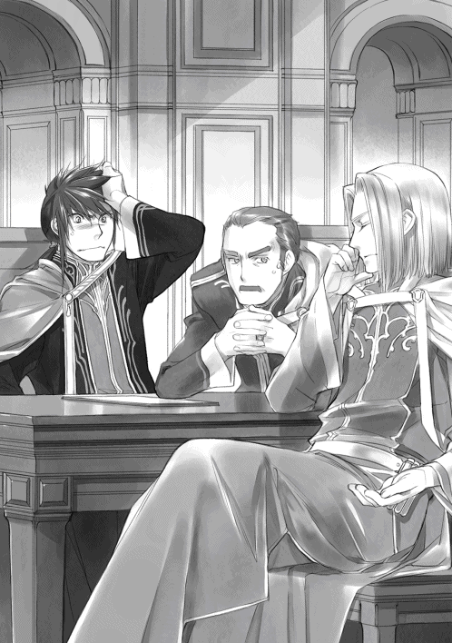
「いくらここで考えたところでローゼマインの図書館優先は変わらぬ。周囲が上手く誘導できれば良いが、そう簡単にはいかないであろう。だが、今、気にしなければならないのは、ローゼマインのことよりヴィルフリートが参加するアーレンスバッハ主催のお茶会だ」
「何だ、それは!? 聞いていないぞ！」
ヒルシュールからの報告にはなかった重要項目にジルヴェスターは目を見開いた。フェルディナンドが無造作に差し出した報告書に手を伸ばし、急いで目を通していく。
「フレーベルタークの領主候補生も一緒に、従姉弟ばかりでお茶会だと？」
「血縁ではないローゼマインは参加を断られたらしい。とりあえず、お茶会での話題を厳選し、その答え方についてはローゼマインともよく話し合っておくように、と助言はしておいた」
ジルヴェスターの喉が鳴った。正直なところ、ヴィルフリートの社交はまだ不安だ。冬の社交界は旧ヴェローニカ派への対応に絞ったので何とかこなせていたが、自分より格上に対する社交は心配の方が大きい。
「貴族院での本格的な社交の始まりは、領主候補生や上級貴族が講義を終える冬の半ば過ぎだろう？ ローゼマインが奉納式のためにエーレンフェストへと帰還した後、ヴィルフリートは一人でお茶会に臨むことになるが、本当に大丈夫だろうか？」
ジルヴェスターの心配をフェルディナンドは冷たく切り捨てた。
「従姉弟同士のお茶会がこなせずに、次期領主など務まるわけがなかろう。貴族院の社交が始まるまで十分な準備期間はあるのだ。其方はあちらからの質問があるまでは余計な手を出すな。基本的に貴族院は子供達が学ぶ場で、極力領地からの口出しは禁じられているのだから」
何だかんだと建前を準備しては答えを返しているフェルディナンドに言われたくないものだ。そう思って口をへの字にしたジルヴェスターを宥 めるようにカルステッドが肩を叩いた。
「ヴィルフリート様も成長されている。当時の其方よりしっかりしてきたくらいだ。周囲の助言を乞 い、それを聞く耳があれば大丈夫だろう」
ジルヴェスターにとって大人の手が届かない貴族院は自由で楽しいところだった。まさか領地で待つ親にとってこれほどもどかしい気分になる場所だと思わなかった。親の立場になったジルヴェスターは祈る。これ以上の騒動は起きぬように、と。
もちろん、これだけの騒動で終わるはずがなかった。

カラーン......と一つ暗闇に鐘の音が鳴り響きました。
わたくし達側仕えは一の鐘が鳴るとすぐに起きます。側仕え見習いとして他家で研修を受けていた時から一の鐘で起きているので、早起き自体はそれほど苦ではありません。わたくしは起き上がって天幕を退 けて寝台から降りると、お姉様の寝台へ視線を向けました。いつも通り起きている気配はありません。起こされるまで起きないのがお姉様です。
寝台の近くにある明かりを灯す魔術具を作動させれば、暗い部屋の中が少し明るくなりました。早く部屋を暖めなければ、着替える自分が寒い思いをします。わたくしは暖炉に火を入れると、もう一度寝台に上がりました。じきにわたくしの側仕えエミーリカとお姉様の側仕えフレーデルが支度を調えてやってくるでしょう。わたくし達二人の側仕えは、親戚の中でも子育てを終えたおば様方なので気心が知れていて過ごしやすいのです。
「リーゼレータ様、今日は側仕え見習いのお役目もお休みで間違いございませんか？」
緑の魔石の入った水差しで洗顔の準備を整えながら確認するエミーリカにわたくしは「えぇ」と頷きました。土の日は講義がお休みです。普通ならば側仕え見習いのお仕着せを着るのですが、今日は主であるローゼマイン様が「神の意志」を取り込むためにお部屋に籠る日なので、お役目もお休みなのです。
「フレーデル、わたくしはお仕着せでも黒の衣装でもなく、普通の衣装でお願いしますね」
「リーゼレータ様はお休みの衣装で、アンゲリカ様はお休みでもお勉強で気合いを入れるために朝から簡易鎧 なのでしょう？ 存じております」
フレーデルが衣装の準備を始めます。ローゼマイン様のような衣装部屋はなく、わたくし達は部屋に設置されているクローゼットや木箱に自分の衣装などを保管しています。
「リーゼレータ様が側近に召し上げられた時はどうしようかと思いましたよ。側近用のお部屋にも二人部屋があってホッといたしました」
わたくしの髪を整えながらそう言うエミーリカに小さく笑って同意しました。貴族院においても全ての雑事を周囲に任せる領主候補生や、周囲に置く人数は変わるけれど領主候補生と同じような生活をする上級貴族と違い、中級や下級貴族の学生は下働きに払えるお金が限られます。そのため、共同部屋にすることでお風呂の準備や部屋の掃除などを複数人の側仕えで行い、同行した側仕えの負担を減らすのです。
ローゼマイン様の側近の発表は入寮してから行われたので、ずっと側近だったお姉様はともかく、わたくしは側近用の一人部屋を使う準備ができていませんでした。そのため、お金の節約と側仕えの負担軽減を考えた結果、わたくしはお姉様と同室にしたのです。
同じ理由でユーディットとフィリーネも二人部屋を使っています。ブリュンヒルデやレオノーレは「せっかくの側近特権である個人部屋を使わないのですか!? 」と驚いていましたが、元々一人部屋を使用できるように準備している上級貴族とは違うのです。我が家は事前に準備をしておけば一人部屋を使えない経済状況ではありませんが、事前の準備は必須です。
「今年でお姉様が卒業なので、来年からわたくしは一人部屋になるでしょうけれど......」
「リーゼレータ様は一人部屋でも大丈夫ですよ。領主一族の側近として相応しい働きができるでしょう。アンゲリカ様は側仕えへの連絡が疎かになることが多々あるので、わたくし一人ではどうしても不安でしたもの。アンゲリカ様とリーゼレータ様が同室なので助かります」
フレーデルがしみじみとした口調でそう言うので、わたくしは思わず笑ってしまいました。お姉様の予定は、わたくしがリヒャルダやコルネリウスから報告を受けてフレーデルに連絡しています。連絡が上手くいかなければ側仕えは動けません。わたくしが同室でなければ、フレーデルは主の生活を整えられない不出来な側仕えだと側近仲間に思われたでしょう。
「アンゲリカ様が側近としてローゼマイン様に重用されているなんて、わたくしは今でも信じられませんよ」
感嘆の響きが混じるフレーデルの言葉にエミーリカが大きく頷きながら、わたくしに手を差し伸べます。その手を取ってわたくしが一度立ち上がると、さっと椅子の位置が変えられ、靴下を渡されました。わたくしは靴下をはきながら、親族が大騒ぎした時のことを思い出します。
「お姉様がローゼマイン様の護衛騎士見習いに抜擢 された時は本当に大騒ぎでしたものね」
「当然ではありませんか。アンゲリカ様は他人に気を遣うことが苦手で、側仕えではなく騎士を選んだのですよ。何の問題も起こさずに領主一族にお仕えすることができるとは誰も考えていなかったでしょう？」
女性の側仕えが出産や子育てで入れ替わるのは珍しいことではありません。フロレンツィア様の側仕えも女性である以上、入れ替わりは起こります。その時にヴェローニカ様と親密な貴族を側近に召し上げずに済ませたいと考えたフロレンツィア様は、わたくしのお母様を側仕えに召し上げました。お父様が先代アウブにお仕えしていた時代からヴェローニカ様と少し距離があったことが大きく関係していたようです。
両親の仕事ぶりを信用したカルステッド様はお姉様をローゼマイン様の護衛騎士見習いとして召し上げました。両親へ先に打診があれば、遠回しに辞退したでしょう。けれど、カルステッド様から打診されたお姉様が「両親に相談します」ではなく「やりたいです」と答えたことで、両親は断る術 を失ったのです。
「アンゲリカ様が貴族院の最終試験に合格できず、補講が確定した時は何もかもが終わったと思ったものですよ」
補講を受けただけでも貴族社会では笑われ者ですし、領主一族の側近を解任されればお姉様にまともな縁組みは期待できません。何より、お父様やお母様が築いた信用でお姉様はローゼマイン様の護衛騎士見習いとして抜擢されました。それにもかかわらず、最終試験に落ちるという失態を犯して側近を解任されれば、領主夫妻や騎士団長夫妻の期待を裏切ったことになります。以後、一族から側近に取り立てられる者はなくなり、就職や婚姻にも支障が出る可能性が高くなるでしょう。一族の悲鳴がどのようなものであったかわかるでしょうか。
三年生で補講を受けることになっても大して焦る様子を見せないため、お姉様は卒業も危ぶまれる状態でした。貴族院を卒業できなければ貴族としては認められません。卒業できなければシュタープを封じられ、我が家の下働きに身分を落とすことになったでしょう。お姉様をそのまま側近として扱い、補講で合格できるように勉強方法を一緒に考えてくださったローゼマイン様のおかげで、お姉様だけではなく一族の者も救われたのです。本当にローゼマイン様にはいくら感謝してもしきれません。
「ローゼマイン様が一緒に貴族院にいらっしゃると、お姉様はお勉強でもやる気が出るようです。去年とは顔付きが違いますもの」
「最終学年を主と一緒に過ごすことができて嬉しいのでしょう」
「ローゼマイン様と同学年であれば、皆が心安らかに過ごせたかもしれませんね」
フレーデルとエミーリカがクスクスと笑い合いながら、わたくしのスカートの裾を整えました。支度が終わったらお姉様を起こさなければなりません。
「アンゲリカ様、起きてくださいませ。リーゼレータ様の準備は整いましたよ」
「んむぅ......。今日は護衛もお勉強もお休みではありませんか......」
お姉様がお布団を抱え込んで寝返りを打てば、サラサラと水色の髪がその動きに合わせて流れます。いつも通り見た目は可憐で美しいのに、言動が貴族らしくないお姉様にフレーデルが呆れたように溜息を吐きました。わたくしは寝台に近付き、声をかけます。
「お姉様、護衛のお仕事はお休みでも午前中はディッターの訓練でしょう？ その前にお勉強が終わらなければ訓練に参加させないとコルネリウスに言われていたではありませんか。いくら苦手なことでも、できる限りの努力をしなければローゼマイン様に失望されますよ」
「......あぁ、そうでした。朝は、お勉強......。講義はお休みなのに、お勉強......」
嫌そうな声を出しつつ、お姉様がのそのそと動き出しました。起きるまでは時間がかかりますが、動き始めると非常にキビキビと動くのがお姉様です。もう大丈夫でしょう。
「リーゼレータ、わたくしは着替えたらお勉強をするのでリヒャルダにローゼマイン様の様子を尋ねてきてください」
寝起きのぼんやりとした青い目をこすりながら起き上がったお姉様が一番に口にしたのが「お勉強とローゼマイン様」です。座学が終わるまで護衛任務を禁じられたせいでしょうが、去年は多目的ホールでコルネリウスに監視されている時しか勉強をしなかったお姉様が、今年は自室で自習する気になっているのです。
......本当にローゼマイン様がいらっしゃるかどうかはとても大きいですね。
「わかりました。いってきます」
お姉様の支度をフレーデル達に任せ、わたくしは部屋を出ました。廊下を横切り、側近が集まる部屋の扉を軽くノックし、できるだけ丁寧に音がしないように開けます。
「おはようございます、リヒャルダ。ローゼマイン様の様子はいかがでしょう？」
リヒャルダはお茶の葉を補充していた手を止めて、ローゼマイン様のお部屋に繋がる扉へ視線を向けました。
「先程少し様子を見ただけですが、お薬を飲んで一晩寝たので今朝は楽になっているようです。今日一日を寝台で過ごせば回復するでしょう」
昨日、ローゼマイン様は「神の意志」を採集するための最奥の間に入ったのですが、帰り道で意識を失って倒れたそうです。普段よりずっと動きの遅い騎獣で戻られ、その後は魔力が混じるのを控えるためにリヒャルダだけでローゼマイン様のお世話をしていました。わたくし達はローゼマイン様が「神の意志」を取り込み終わるまで近付くことを禁じられています。
「最奥の間で意識を失うなんて今まで聞いたことがありませんでしたから心配で......。三階に上がれないコルネリウスやハルトムートは、昨晩の夕食の席で特に心配していたのです。お姉様も目覚めて一番に尋ねたのがローゼマイン様のご様子でした」
「他の者達には朝食の席で伝えてくださいませ。わたくしはローゼマイン様の取り込みが終わるまで雑務を片付けながらここで過ごしますから」
二の鐘が鳴るまでお姉様と自室で勉強したら朝食です。「訓練までに終わらせるように」と言われていた部分を何とか終えたお姉様は、晴れ晴れとした顔で部屋を出ました。少し先にふわふわとした明るいオレンジ色の髪を揺らして歩くユーディットの背中が見えます。
「ユーディット、おはようございます。フィリーネの様子はどうですか？」
「おはようございます、アンゲリカ、リーゼレータ。フィリーネは誰にも触れられないように寝台へ入ったきりです。そうしなければならないことはわかっていますが、話し相手がいないのは寂しいですね。わたくし、今朝は早く二の鐘が鳴ってほしいと思っていました」
兄弟が多い家庭で育ったため一人の時間を持て余すというユーディットの話を聞きながら一緒に食堂へ入ると、ハルトムートがニコリと微笑みました。
「リーゼレータ、ローゼマイン様のお加減について何か知っているかい？」
「今朝は楽になっているようです。今日一日を寝台で過ごせば大丈夫だそうです」
「それはよかった。最奥の間で意識を失った学生の話なんて今まで聞いたことがなかったから、本当に心配したよ。シュタープにも悪い影響がなければいいのだが......」
わたくしがリヒャルダの言葉を伝えると、ハルトムートとコルネリウスは揃って安堵の息を吐きました。コルネリウスはローゼマイン様の実兄なので、食堂で表情に出すほど心配するのも当然でしょう。ですが、ハルトムートは貴族院に入ってから側近入りしたはずなのに、ローゼマイン様個人に対する思い入れが一人だけ飛び抜けています。
......わたくしはお姉様や一族を救われた恩があるのですけれど、ハルトムートは何故そこまでローゼマイン様に入れ込んでいるのでしょう？ 「エーレンフェストの聖女の素晴らしさを知っていれば当然」と言われてもよくわかりませんね。
「ローゼマインは屋敷の中で図書室へ向かう途中に倒れたこともあるくらいだ。誰にも触れられずに戻ってこなければならない最奥の間はもっと警戒しておくべきだった。我々は側近として本当に気を付けなければならないな」
コルネリウスから屋敷内で突然倒れたローゼマイン様のお話を聞き、側仕えとしてわたくしはもっと注意深く様子を見るようにしなければならないことを知りました。
「あら、その様子でしたらリーゼレータ達からローゼマイン様のご様子は聞いたのですね」
ブリュンヒルデとレオノーレも食堂へやってきて席に着きました。二人も側近部屋へ寄ってリヒャルダにローゼマイン様の様子を尋ねたそうです。側近が全員揃うと給仕が始まります。
「今日は側近業務が休みということになっているが、皆の予定はどうなっている？」
コルネリウスが尋ねると、皆がそれぞれの予定を口にし始めました。
「わたくしは午前中に情報交換のお茶会があります。新入生の領主候補生に関する情報は少ないでしょう？ そのため、領主候補生の上級側仕え見習いが集められるのですって。わたくしはヴィルフリート様の側仕え見習いのイージドールと参加するように言われています」
「あぁ、私もブリュンヒルデと同じような上級文官見習いの集まりがある。護衛騎士にはそのような集まりはないのかい？」
ブリュンヒルデとハルトムートは上級貴族として他領の者達と情報交換の場に赴くそうです。
「我々は午前中ディッターの訓練を行う。ローゼマイン様が図書館へ籠るようになれば、必ず誰かが護衛任務に就かなければならない。今日を逃せばなかなか全員で訓練できる機会はないからな。アンゲリカはどうだ？ 訓練に参加できそうかい？」
「コルネリウスに言われたところまでは終わりました。訓練に参加します」
お姉様の宣言に間違いがないのか尋ねるようにコルネリウスはわたくしを見ました。朝食前に頑張っていたお姉様を見ているわたくしはゆっくりと頷きます。
「では、訓練の参加者は私、アンゲリカ、レオノーレ、トラウゴットの四人だな」
「待ってくださいませ、コルネリウス。わたくしもディッターの訓練に参加したいです！」
ユーディットがビシッと手を挙げましたが、コルネリウスは腕を組んで「うーん」と難しい顔になりました。
「ユーディットはまだ二年生だから騎士コースではないだろう？ それに、成績を重視しているから終わっている講義が少ないじゃないか。今日は勉強に時間を使った方がいい」
「う......。でも、わたくし、講義で訓練ができないのでお休みの日くらいは訓練したいです。体が動かなくなりそうですもの」
実家のあるキルンベルガでは騎士達と一緒に毎日のように訓練していても、まだ二年生のユーディットが貴族院で受ける講義は共通のものです。騎士の専門コースを受ける三年生以上の学生達に比べると訓練の時間は圧倒的に少ないでしょう。
「訓練に参加したい気持ちはわかります。けれど、領主候補生の側近という立場になった貴女の将来を考えると、合格点ギリギリの成績を取って講義を終えるよりは優良な成績を残すことが大事です。今は訓練を我慢して勉強しなさい、ユーディット」
肩に掛かった赤紫色の髪を背中に払い、レオノーレが知的な藍色の目で静かにユーディットを見つめました。
「上級貴族ならばそれほどではありませんが、中級や下級貴族が領主一族の側近になれば周囲の妬 みを避けることはできません。嫉妬や僻 みを少しでも和らげるためには成績が重要になります。中級貴族の中からユーディットが側近に選ばれるのは当然なのだと周囲に思わせることが自分の身を守ることに繋がりますから」
レオノーレはそう言った後、わたくしを見ました。中級貴族であるわたくしにも同じことが求められているのでしょう。ちなみに、お姉様は座学の成績が悪くてもボニファティウス様の特訓に耐え、愛弟子として認められているため別格扱いです。
「あの、成績が自分の身を守るということは......歴史と地理が合格点ギリギリだった下級貴族のフィリーネはどうなるのですか？」
不安そうに菫色の瞳を揺らしながら尋ねるユーディットに、レオノーレは「可哀想ですが、ローゼマイン様の目がないところでは相当苦労すると思います」と冷静に答えを返しました。
「良い成績を残すために初日の不合格を選択すれば、他の一年生に睨まれて寮内での居心地が悪くなったでしょうし、図書館が遠ざかることでローゼマイン様からの心証が悪くなったかもしれません。下級貴族のフィリーネに選択肢はないも同然でしたが、そのような事情はエーレンフェストにいる大人には通じませんもの。......本当に余計なことをしてくれたものです」
そう呟いたレオノーレがちらりとヴィルフリート様達の側近のテーブルへ視線を向けました。その席にヴィルフリート様の姿はありません。
「ありがとう存じます、レオノーレ。わたくしは自分にできる限りの高得点を目指します」
ユーディットが納得して勉強することに決めたところで、ブリュンヒルデが「リーゼレータはどのように過ごすのですか？」とこちらを見ました。
「わたくしはユーディットと同じで、良い成績を残しながら少しでも早く講義を終えられるようにお勉強をしようと思います。ローゼマイン様が図書館へ向かうための交代要員はできるだけ多く必要でしょう？」
朝食を終えると、わたくしはお姉様を始めとする騎士見習いの皆を見送って、多目的ホールで勉強です。ローゼマイン様が成績向上委員会と称してコースごとに班分けをして教材を持ち寄り教え合う体制を作ってくださったおかげで一緒に勉強する者達もいますし、質問もしやすい雰囲気ができています。ユーディットも二年生の仲間と一緒に勉強するようで、別のテーブルへ向かう姿が見えました。派閥の垣根 をなくして協力し合える状況を作り上げたローゼマイン様は素晴らしいと思います。
「リーゼレータ様はずいぶんと熱心にお勉強するのですね。ローゼマイン様が石を取り込む今日が唯一のお休みでしょう？」
「カトライン様のおっしゃる通りなのですけれど、ローゼマイン様の側近に選ばれて恥ずかしい成績を残すことはできませんし、図書館通いを目指す主に付き添うためには座学だけでも終えたいですから......」
カトライン様は春からシャルロッテ様にお仕えすることが決まっている三年生の側仕え見習いで、秋の終わりまでフロレンツィア様の元側近の家で研修をしていたそうです。
「ローゼマイン様はわたくしが考えていたよりも強引な方なのですね。トラウゴット様も困っていらっしゃるようですし、一年生へのなさりように驚いてしまいました。わたくしも同じように初日で必ず合格するように、と主に睨まれれば恐怖で動けなくなってしまったでしょう」
一年生を合格へ追い立てていたローゼマイン様の迫力は、子供部屋で本を読んだり、皆に絵本を読んだり、派閥を超えて協力するように呼びかけたりする姿とは全く違いました。領主候補生の横暴だと受け取る学生も少なくはなかったでしょう。
「ローゼマイン様は図書館へ通うために貴族院へいらっしゃったそうですからね。......でも、わたくしも図書館へお伴するのが楽しみになったのですよ」
内緒話をするように少し声を潜めて言うと、目を丸くしたカトライン様が「......リーゼレータ様は図書館にそれほど興味はなかったでしょう？」とまじまじとわたくしを見つめました。
「ふふっ、ローゼマイン様の登録にご一緒したことで図書館へ行く楽しみができたのです」
図書館のシュミル達を脳裏に思い描いて小さく笑うと、カトライン様だけではなく、他の側仕え見習い達も興味深そうにこちらを見てきました。
「図書館に大きなシュミルの魔術具がいて、ローゼマイン様が新たな主になったことは伝えたでしょう？ シュバルツとヴァイスという名前なのですけれど、わたくしは座学を終えたら二匹の衣装を考えたいと思っているのです」
「図書館のシュミル達の衣装ですか？」
「えぇ。ローゼマイン様は新しい主として二匹に新しい衣装を贈らなければならないのですって。わたくし、どうしてもそのお手伝いがしたいのです」
わたくしが家で飼っているシュミル達はあのように歩いたり喋ったりしませんが、図書館でソランジュ先生のお手伝いをしているのは、大きくて二本足で歩き、言葉を話す白と黒の可愛らしいシュミル達です。
「お揃いの衣装を着てお手伝いをしているシュバルツとヴァイスは本当に可愛らしくて......」
「わたくしもシュミルを飼っているので、図書館にシュミル達がいるならば見てみたいです。どのくらいの大きさですの？」
「頭の高さはローゼマイン様の方が高いですが、耳がピンと立つとシュミル達の方が大きいかもしれません。主であるローゼマイン様のお言葉通りに動いて、お喋りもできます。たどたどしい言葉遣いなのですけれど、それも可愛くて胸が締め付けられる心地がするのですよ」
わたくしが図書館で見たシュミル達について語ると、実家でシュミルを飼っている方々がうずうずとしたように顔を見合わせています。
「......わたくし、今から図書館へ行ってみようかしら？」
ぽつりと零されたカトライン様へ皆の注目が集まりました。
「あ、いえ、その、お勉強のための参考書を探しに、ですよ。騎士コースに比べると側仕えコースは参考書の数が少ないですし......ね？」
困ったように周囲を見回し、ほほほ、と取り繕うように笑うカトライン様を見つめ、その場にいた皆の心が一つになるのを感じました。
「カトライン様のおっしゃる通りですね。わたくしも他の参考書を見てみたいので、図書館へご一緒させてくださいませ」
「わたくしもご一緒します。参考書を探しに」
「ローゼマイン様と一年生は来年のために参考書作りを始めているそうです。側近としてわたくしも見習わなければならないと常々思っていたのです」
シュミル達を見るため......ではなく、側仕えコースの参考書を探すために図書館へ向かうことになりました。
図書館では二匹のシュミル達が頭を少し左右に振りながら歩いて、本棚の整理をしています。
「ま、まぁ、なんて、なんて......」
「ふふっ。可愛らしいでしょう？ 衣装を作ってみたくなるでしょう？」
「どんな衣装がいいかしら？ やはりお揃いにするのが素敵でしょうか」
「皆様、お気を確かに。わたくし達は側仕えコースの参考書を探しに来たのですよ」
図書館へ行こうと言い出したカトライン様が小声で盛り上がるわたくし達を止めました。
「リーゼレータ様のお話では図書館のお手伝いをしている魔術具なのでしょう？ ならば、側仕えコースの参考書がどこにあるのか尋ねてみるのはどうでしょう？ もっと近付けます」
「素晴らしいです、カトライン様！」
皆でシュバルツに近付いて側仕えコースの参考書がどこにあるのか尋ね、本を探しながらシュバルツとヴァイスの動きを注視していました。数人の先生方が閲覧室にいてソランジュ先生と話をしながらシュバルツとヴァイスが動き出した経緯について話を聞いています。
「先生方もシュバルツとヴァイスが気になっているのですね」
「ヒルシュール先生がすごい勢いで乗り込んできましたもの。あのように自分で動いて喋る魔術具は非常に珍しいのですって」
シュバルツとヴァイスを見ながら時間をかけて参考書を選んだわたくし達が、図書館へ本を借りに来たのに誰も保証金を持ってきていないことに気付いたのは退館を促す光が降り注いできた時のことでした。四の鐘が鳴り、わたくし達は寮へ戻ります。参考書を借りることはできませんでしたが、帰り道はシュバルツとヴァイスの可愛さについて語り、どのような衣装が似合うのかという話で盛り上がりました。
「わたくし、昼食中に考えたのですけれど......やはり色違いが良いと思うのです」
昼食後、カトライン様がさらさらとシュバルツとヴァイスに着せたい衣装の絵を描いたことで、図書館からの帰り道の盛り上がりが多目的ホールに広がります。
「貴族院の図書館で働く魔術具ですから、黒を基調にした方がいいのでしょうか？」
「黒いシュミルは白を基調とする衣装を着ていたではありませんか。何色でも構わないのでは？」
「これは何の絵ですか？」
午前中は多目的ホールにいなかった子達が興味深そうに絵を覗き込みます。図書館の魔術具の説明をして、いかに可愛らしいのか午前中に図書館へ行った者達と力説します。
「......それで、わたくし達は新しい衣装を考えているのです。何か良い案がありますか？」
わたくしが問いかけると、派閥が違う子も一緒になって考え始めました。いつの間にか側仕え見習いだけではなく、文官見習いの女の子も交じっています。
「皆様が楽しそうなのは結構ですけれど、シュバルツとヴァイスの衣装を誂 えるのはローゼマイン様でしょう？ 主を差し置いて、というのは良くないのではございませんこと？」
わいわいと楽しそうに意見を出し合っていた皆が一斉に静まり、発言者であるブリュンヒルデを見つめます。気まずい雰囲気の中、わたくしはブリュンヒルデに微笑みかけました。
「わかっています、ブリュンヒルデ。でも、今日はローゼマイン様がいらっしゃらないのですもの。どんな衣装が似合うのか、作ってみたいのか、ここで話し合うだけならば良いではありませんか。ローゼマイン様には秘密にしておいてくださいませ」
わたくしと皆を見回して少し考え込んでいたブリュンヒルデが、小さく笑ってトンと指先でカトライン様の絵を指差しました。
「エーレンフェストの領主候補生が新しい主となったのですもの。髪飾りに使う花の飾りを衣装のどこかに使いましょう」
解散を促すのではなく、ブリュンヒルデは描かれた衣装に新しい案を出しました。ローゼマイン様が考案したエーレンフェストの流行を取り入れるというのは、とても素晴らしい提案です。一緒に考えていた皆が瞬時に興奮気味の笑顔になりました。
「花の飾りを使うのならば、ローゼマイン様のスカートの形も真似るのはどうでしょう？」
「両方を同じデザインにするのではなく、男女の衣装にするのも素敵だと思いませんか？ 白いシュミルはレースで可愛く、黒いシュミルはキリッとカッコよくしてみたいです」
「わたくし、シュミル達の衣装をローゼマイン様の衣装とも合わせたいです」
ブリュンヒルデが参加したことで話し合いは一気に加速しました。
いくつもの衣装案が出て、それに加筆されていきます。夢中になりすぎたのでしょう。わたくし達はローゼマイン様が多目的ホールに入ってきたことに全く気付きませんでした。ローゼマイン様に「何をしているのですか？」と声をかけられた瞬間、飛び上がるほど驚きました。慌てて今まで描いていた紙を裏返してローゼマイン様の目に触れないように隠します。
「わたくしに見られては困るものですか？」
「いいえ、その......主であるローゼマイン様を差し置いて盛り上がっていたので、少し極まりが悪いように感じただけです。やましいことなどございません」
「ローゼマイン様のいらっしゃらないところで先走ってしまい、申し訳ございませんでした」
側近であるわたくしとブリュンヒルデが前に出て、他の者達が咎 められないように言葉を重ねると、ローゼマイン様はわたくし達が描いていた衣装案を見たいとおっしゃいました。期待の籠った眼差しに「否」と言えるわけがありません。わたくしはカトライン様が最終的に描いた衣装の案を見せて、どのような話し合いが行われていたのか説明をします。
「リーゼレータは昔から可愛い物が大好きで、家で飼っているシュミルにも自分で作った服を着せていることがございます」
「お姉様！」
ローゼマイン様が楽しそうに聞いてくださるので少々力が入ったことは事実ですが、主に側近の私生活を暴露するのはどうかと思います。ローゼマイン様が何やら少し考え込んでいるではありませんか。普段のお仕事よりシュバルツとヴァイスの衣装を熱心に考えるなんて側仕え見習いとして失格だと思われているかもしれません。主の前では常に冷静でなければならない側仕えが、主の入室にも気付かず、主を差し置いて魔術具の衣装を考えることに熱中していたのです。血の気が引きました。失格だと思われて解任されたら一族の阿鼻叫喚 再びです。
......お父様、お母様、申し訳ございません！
心の中で両親に平謝りしていると、ローゼマイン様がわたくしを見上げて首を傾げました。その金色の瞳と背中に流れる髪の色から、わたくしは実家で飼っているシュミルを思い出します。ローゼマイン様をシュミルのように可愛らしいと褒めた方がいらっしゃるようですが、その気持ちはよくわかります。
「......わたくし、全ての講義を終えれば図書館に入ることができます。ですから、その時までにリーゼレータの座学が終わっていれば採寸に同行しますか？」
「よろしいのですか!? 」
「皆で考えるのは楽しいですもの。他に同行を望む方はいるのかしら？」
一緒に衣装を考えていた皆が採寸に同行したいと言い出しました。午前中に図書館へ行っていない者も楽しみで仕方がないという顔をしています。
「では、わたくしが講義を終えるまでに、皆、座学を終えてくださいませ。楽しいことを始めると、お勉強はどうしても疎かになりますから」
「そうですね！ 頑張ります！」
新しい衣装の案は粗方 出ましたし、ここから先はローゼマイン様のご意見が優先されます。衣装案から勉強へ盛り上がりを移すには絶好の機会でした。
「ローゼマイン様は次々と講義を終わらせています。わたくし達も頑張らなければ、座学を終えられませんよ。一年生のローゼマイン様と違って、上級生は講義の数も多いですから」
「頑張りましょうね。皆で一緒に採寸したいですもの」
シュバルツとヴァイスの採寸に同行したい女子学生が心を一つに勉強を始めます。勉強に熱中し始めたことで静まった多目的ホールを見回し、わたくしは午前中との集中力の違いに感嘆の息を吐きました。
......ローゼマイン様は本当に皆をお勉強に向かわせるのがお上手ですこと。
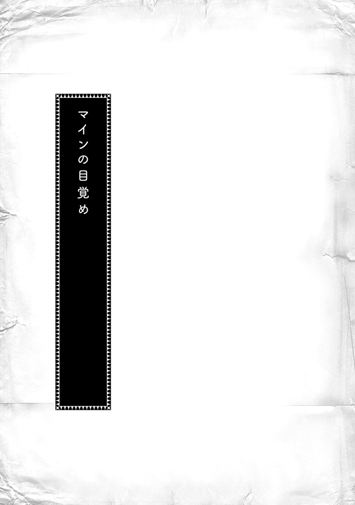
「ふぅ、重かった......」
息子のカミルがテーブルの上に背負い籠 をドンと置いた。今日は市の立つ日だったので、冬支度用のお肉を大量に買ってきたのだ。わたしは自分が買ってきた物をテーブルの上に置きながら、床に座り込んでいるカミルに次の仕事をお願いする。
「じゃあ、次は下準備よ。カミル、塩を取ってきてちょうだい」
豚肉加工の日が近付いているので、早く下準備を進めなければならない。頼まれたカミルは「疲れたのに......」と不満たっぷりに唇を尖らせて文句を言っているが、すぐに立ち上がって物置へ向かった。わたしはカミルの様子を見てクスッと笑う。
......この調子なら春には許可を出せそうね。
同じ年頃なのに冬支度のお手伝いで森へ行き始めた子がいるせいか、カミルから「オレも森へ行きたい」とせがまれた。けれど、まだまだ森へ行って採集をして戻ってくるだけの体力や、どんなに疲れていても年嵩の子供達と閉門までに帰ってこられる忍耐 力があるのかどうか心配で仕方がない。今は市場までの往復やギュンターが働いている東門へのお遣いができるかどうか試しているところだ。
「よいしょっ」
わたしが大きめの板を出して布を敷き、肉を並べているところへカミルは塩が入っている重たい袋を持ってくる。その姿に塩を持てなくて、涙目でトゥーリを呼んでいたマインを思い出した。顔立ちは似ていないけれど髪と目の色が似ているので、わたしはカミルを見ているとマインを思い出すことが多い。
......マインの目覚めはまだかしら？
ルッツが預かってきてくれた手紙に書かれていた「命に別状はない」という言葉を信じてわたし達は生活をしている。けれど、何の知らせもないまま時間だけが経過し、続報が届いたのは秋の半ば。仕事でどこか遠くへ行っていたルッツが戻ってきた時だった。
「ちょっと変化があったみたいだ。まだまだ時間はかかるだろうって話だったけど......」
日々の忙しさの中に埋もれていた時にやってきた朗報に心を弾ませたけれど、あれから早くも一月 が過ぎて、もう秋の終わりが近付いている。マインが毒を受けて倒れた冬の始まりからもうじき二年だ。
......冬は嫌いよ。雪が深くて家に籠る時間が長くなると、悪い想像ばかりしちゃうから。それなのに、また冬がやってくるなんて......。
手紙を読んでいたルッツの声が脳裏に蘇り、マインが毒を受けたと言われた時の息苦しさを思い出して胸元を押さえた。
「冬になる前に目覚めてくれればいいんだけど......」
「ん？ 母さん、今、何て？」
キョトンとした目に見上げられ、わたしはニコリと笑って水瓶を指差した。
「何でもないわ。カミルは一度手を洗って。塩を塗り込んでいくわよ」
「わかった。豚肉加工、楽しみなんだ」
豚肉加工はちょっとしたお祭りのようなものだ。たくさんの食料ができあがるせいもあって、子供達は皆楽しみにしている。この季節になると熱を出していたマインは、「豚肉加工」と聞くと嫌な顔をしていた。けれど、疲れたと文句を言っていたはずのカミルは、目を輝かせて動き始めた。
二人で肉に塩を塗り込んで布に包んで板ごと冬支度部屋へ運び込めば、次は夕食の支度だ。今日はギュンターが昼勤務なので閉門の後に帰ってくる予定だ。
「今日は父さんの好きな鳥の酒蒸 し？」
「ううん、香草焼きよ。酒蒸しは塩を付けて一日置くから明日......」
カミルにそう話しながら香草を準備していると、ドンドンと強く玄関の扉が叩かれた。思わず二人で顔を見合わせると、「母さん、カミル、開けて！ トゥーリだよ！」という大声が扉の向こうから響いてくる。
「え？ トゥーリ？」
トゥーリが帰ってくるのは、実の日の夕方か土の日の朝がほとんどだ。しかも、最近はギルベルタ商会の立ち居振る舞いが完全に身に付いたのか帰ってくる時の所作も綺麗なもので、こんなふうに扉をドンドンと叩いて大声を出すことはない。
訝 しみながら扉を開けると、トゥーリだけではなくルッツまで一緒に飛び込んできた。ぜいぜいと息を切らせている様子を見れば、二人して階段を駆け上がってきたことがわかる。
「どうしたの、二人とも？ 今日は仕事のはずでしょう？」
「そうなんだけど、ルッツが迎えに来て、今日は帰れって言われたから帰ってきたの。理由はルッツに聞いて。......ハァ、苦しい」
喉の辺りを手で押さえるトゥーリにカミルが急いでコップを渡す。トゥーリはそれを一気に飲んで、口元を袖口でゴシゴシと拭った。いつものお上品さは欠片もない。
「ありがと、カミル。ルッツにもあげて」
「うん。......はい、ルッツ」
コップを受け取ったルッツもゴクゴクと喉を鳴らして水を飲み、「ありがとな、カミル」とマインによく似た色合いの頭をぐしゃぐしゃと撫で回した。カミルは新しい絵本を持って来てくれるルッツが大好きなので、嬉しくて仕方がない顔になっている。
「それで、何があったの？」
はしゃぐカミルを見ながらわたしが尋ねると、ルッツはへへっと相好を崩して口を開いた。
「昨日、マインが目覚めたんだ！」
つい先程望んでいた言葉が不意に出てきて、わたしは目を見開いた。トゥーリは「やっぱり！」と笑顔で手を打っているけれど、わたしには全く現実感がない。冬になるまでに目覚めてくれれば、と思っていたけれど、本当にその知らせが届くなんて考えもしなかった。
......本当のわたしは寝ていて、これは夢の中の出来事かもしれないわ。
そんなことを考えてしまう。だって、わたしはマインが目覚めて喜ぶ夢を今までに何度も何度も見てきたのだ。家族全員が揃っているところにルッツが知らせを持って飛び込んでくる幸せな夢を。今はギュンターが仕事から戻っていないので、家族全員にとって都合の良くないところは少し現実のようにも思える。夢とも現実ともつかない心地でいるわたしの前でルッツとトゥーリは興奮気味の笑顔で言葉を交わしていた。
「ルッツはいつマインに会いに行くの？」
トゥーリが青い瞳を輝かせば、ルッツは得意そうな顔で鼻の下を軽く擦る。
「今朝ギルから連絡があって、午後に神殿へ行ってきたんだ」
「え？ じゃあ、ルッツはもう会ったの!? 目覚めた連絡だけかと思えば、もう会ってたなんてちょっとずるいよ！」
膨れっ面のトゥーリにルッツが「ずるいって言われてもなぁ......」と口調こそ不満そうに言い返しているが、その顔は笑ったままだ。
「明日か明後日には貴族街へ移動するから急いで旦那様と仕事の話をするってことで、こっちもいきなりの呼び出しに驚いて飛び出したんだぜ」
......ルッツがマインに、会った？
二人の会話がすぐには頭に入ってこない。それなのに、ルッツとトゥーリの会話で急に心臓がドクンドクンと大きな音を立て始めた。ふわふわとしていた現実味のない感覚に、一気に現実が近付いてきた感じがする。
「マイン、元気だった？ 寝ている二年の間にマインがすごく大きくなって別人のようになっていたらどうしようって、ルッツと前に話してたじゃない？ 大きくなってた？」
トゥーリの言葉に、ルッツは小さく笑いながら「全然」と首を横に振った。
「元気にはなってたけど、見た目も中身も全く変わってなかった。こんなに小さかったっけって、オレは思ったけど、マインは大きくなってないのを気にしていたみたいだ。大きくなりたかったって大泣きしてた」
......マインが大泣きしてた？
大泣きするマインは今までわたしの夢に出てきたことがない。どの夢でもマインは「皆、心配かけてごめんね。わたし、健康になったよ」と笑顔で手を振っていたのだ。
「そっか......。マイン、元々小さいの、気にしていたもんね。でも、大きくなりたかったって泣いていたマインには悪いけど、わたしは自分が知っているマインが見た目も中身も変わっていないことにすごく安心したよ」
......わたしも同じだわ。
声に出さないまま、わたしはトゥーリに同意する。自分が知っている娘の姿から変わっていないことにとても安堵した。
「ねぇ、ルッツ。髪飾りの注文、来るかしら？」
「どうだろうな。でも、オレはもう植物紙とインクと新しい便箋なんかのマイン用品は準備したから、いつ注文があっても問題ないぜ」
「そんなに勝ち誇って笑われても、ちっとも悔しくないよ。わたしだって、いつ起きてもいいように一年前からマインのための髪飾りはいくつも作っているもん」
胸を張って対抗するトゥーリの言葉にルッツが笑う。トゥーリもすぐに笑顔になった。
......こんな夢、今までになかったわね。
マインが目覚めたことを家族で喜ぶところしか夢では見たことがない。その直後に目覚めて暗い部屋の様子に溜息を吐くのが常だった。けれど、ルッツもトゥーリも目覚めた喜びを分かち合う時間を過ぎて、もう今は現実的なことを心配している。マインの目覚めが夢ではないことをようやく実感できて、わたしの目からは自然と涙が零れた。
「よかった。もう、夢じゃないのね。本当にマインが目覚めてくれたのね......」
「母さん......」
二年は長かった。本当に長かったのだ。もう目覚めないのではないかと思ったこともある。本当は死んでしまったのをお貴族様達が隠しているだけではないかと疑ったこともある。だが、嘘でも何でもなく、マインは目覚めてくれた。安心と喜びで全身の力が抜けていく。
......よかった、マイン。本当によかった。
目を潤ませるわたし達を、カミルが薄い茶色の瞳を瞬いて不思議そうな顔で見上げていた。
「マインって、誰？」
まるで頭上から冷たい水でも浴びせられたように一瞬で頭が冷えた。わたしはトゥーリとルッツと顔を見合わせて顔をしかめる。ご近所の皆に深く追及されないようにマインのことをあまり口にしていなかったし、眠りについたマインのことを話題に上げると雰囲気が暗くなるので何となく避けていたせいもあるが、カミルがマインを知らないことに衝撃を受けた。
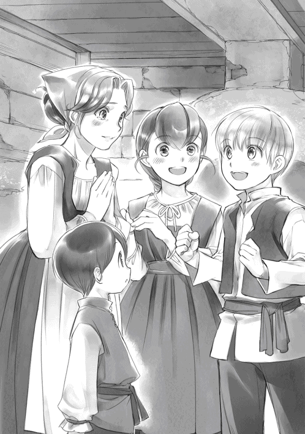
......でも、カミルにどう説明すればいいかしら？
春になったらカミルは四歳になる。誰にでも知っていることを話したり、何でも周囲に尋ねたりする年頃だ。外で不用意にマインの話をされるのはとても困る。わたしは涙を拭きながら考えを巡らせた。カミルにどう教えるのか、ギュンターと一度話し合う必要がある。
「ギュンターが帰ってきてから、大事な話は夕飯の後でしましょう。......トゥーリ、夕飯の支度を手伝ってくれるでしょ？ カミルと一緒に物置へ行ってカルフェ芋とラーニエを取ってきてくれない？ せっかくトゥーリが戻ったんだから夕食はちょっと豪華にしましょう。ルッツ、今日はわざわざありがとう」
わたしは戸棚から財布を取り出し、ルッツを玄関へ見送る。トゥーリとカミルが物置へ向かったのを確認してルッツに小銀貨を手渡した。
「ルッツ、本当に悪いんだけれど、ギュンターにカミルが寝静まる時間まで今日は飲みに行ってほしいと伝えてくれない？」
飲み代を渡して頼むと、ルッツは何とも気まずい顔で物置の方をちらりと見た。
「ごめん、エーファおばさん。オレ......」
「謝らないで。知らせてくれて本当に嬉しかったわ。それに、カミルのことをきちんと考えていなかったのはわたし達だから......。ギュンターへの連絡をお願い」
ルッツはコクリと頷くと、身を翻して駆けだした。
「まだかな？ 早く父さんが帰ってくるといいな」
「カミル、もう先に食べない？ わたし、お腹ぺこぺこだよ。ちょっと父さん、遅すぎ」
「そうね。酒場に行っているかもしれないし、わたしもこれ以上は待てないわ。もう食べちゃいましょう。......トゥーリ、最近の仕事はどうなの？」
不自然なほどマインの話題を避けて夕飯の支度を終え、わたしとトゥーリは食事に手を付けた。ギュンターが帰りに飲んでくるのは特に珍しいことでもないし、カミル自身もお腹が空いているのだろう。一度だけ名残惜しそうに玄関の方を見た後、カミルも食べ始める。
食後は久し振りに帰ってきたトゥーリと寝るのだとはしゃいで寝台へ飛び上がり、二人で並んで寝転がって話をしていたけれど、カミルはすぐに眠ってしまった。今日は市場まで歩いて荷物を運んだり、豚肉加工の下準備をしたりして疲れていたからだろう。正直なところ、ギュンターが帰ってくる前に眠ってくれてホッとした。
七の鐘が鳴った後、玄関の扉が控えめな音を立てる。ギュンターが帰ってきたようだ。
「おかえりなさい、ギュンター」
「......ルッツに聞いた。マインのことも、カミルのことも」
ギュンターが脱いだ上着を片付けていると、トゥーリが皆の分のお茶を淹れてくれた。三人でカップを手にそっと息を吐く。
「......俺は家族として真実を教えてやりたいと思うが......カミルにどう教えるかな？」
お茶を一口飲んで、ギュンターはハァとゆっくり息を吐く。
「わたしだってカミルがマインのことを認識していないことは衝撃だったし、家族だから真実を教えたいと思うわ。でも、周囲では貴族に連れ去られて死んだことになっているのよ。家族の秘密として真実を教えたところでカミルを混乱させるだけでしょう？」
「カミルの混乱より、わたしは教えられた真実をよくわからないまま他人に話す方が心配だよ。勝手な行動をされるのは困るから、カミルに真実を教えるのは絶対反対。周囲の人達が知っていることを丁寧に教え直すのが一番だよ」
トゥーリが青い目でギュンターを見つめる。トゥーリの言葉は間違っていないけれど、「絶対反対」という響きがどうしてもカミルを突き放しているように聞こえて、わたしは少し視線を手元のカップに落とした。
「トゥーリやルッツは洗礼式を過ぎたくらいの年できちんと秘密が守れたじゃないか。今すぐは無理でも、洗礼式の後くらいで話をするのはどうだ？ カミルだってきちんと話をすればわかってくれる。家族の秘密を外に漏らすことは......」
トゥーリは一度きつく唇を引き結び、何度も首を横に振ってギュンターの妥協案を拒否する。
「ダメだよ、父さん。マインに関わる真実が周囲に流れることがどれだけ危険なことなのか、どんな理由で何を禁じられているのか、言葉で説明されただけじゃわからないの」
「トゥーリ？」
何だかトゥーリの態度が必要以上に頑 なに思えて、わたしが呼びかけるとトゥーリは目に涙をいっぱいに浮かべて俯いた。ポタポタッとテーブルの上にトゥーリの涙が落ちる。
「わたし、危ないから神殿に来ちゃダメって言われたのに、マインの言葉の意味をきちんと理解してなかったの。危ないならマインはわたしの妹なんだからわたしが守らなきゃって思ったから......マインはあんなことになったんだよ」
「違う。あれはトゥーリのせいじゃない。何度も言っただろう？」
あの頃から何度も言ってきたけれど、納得したように見えていたトゥーリはずっと重たい後悔を抱えていたらしい。わたしは思わずギュンターと顔を見合わせた。トゥーリは袖口で目元を拭いながら顔を上げた。
「わたしはマインを守りたいだけだった。でも、それが裏目に出たの。自分の行動で大変なことが起こったから、その現場にいたから......わたしもルッツも秘密がどれだけ大切なことか知ってる。でも、カミルは同じ経験をしてないじゃない。家族だからって理由で真実を話した後、本当の意味で理解できたかどうか、どうやって判断するの？」
トゥーリの言葉が重かった。その通りだ。トゥーリやルッツは洗礼式を終えた年齢の子供だから秘密を守れたわけではない。自分の経験を通して、嫌でも秘密を守らなければならないことを理解したから守れているのだ。
「トゥーリの言う通りね。どれだけ重大なことなのか判断できないカミルの言動によっては、わたし達に危険が及ぶわ。マインはそれを必死になって止めようとするでしょ？」
「あぁ、マインは灰色神官達やハッセの住人も守ろうと努力していたんだ。俺達に何かあれば、全力で助けようとするだろう」
家族と呼び合ってはならないという契約を破ることになっても、自分にどんな不利が及んだとしてもマインはわたし達を助けようとする。わたし達の命を救うために貴族になり、それでも家族の繋がりを求めるマインの行動を考えれば間違いない。
「マインが貴族になってでも守ろうと考えている関係を危険に晒すことはできん。カミルが成人するまで......いや、カミル自身が何らかの繋がりに気付くまではお預けだな」
ギュンターの決断にトゥーリがコクリと頷く。
「真実をお預けにするのはいいけど、トゥーリやルッツが大喜びで帰ってきたことはどうやってカミルに説明しようかしらね？」
「カミルが今日の会話をどのくらい覚えているかにもよるが、周囲の認識と齟齬 が出ないように貴族に殺されたマインの話をするさ。......ルッツとトゥーリが喜んで帰ってきたのは、ギルベルタ商会でマインの遺品が見つかったからだってな」
そう言いながらギュンターがポケットから取り出したのは、何だか見覚えのある古びた髪飾りだった。手垢 が付いて黄色の花が少し薄汚れ、赤い花は色あせている。
「......懐かしいね。マインが貴族になってすぐくらいの頃の髪飾りだよ。印刷された本の間に挟んであったマインの手紙に書かれてる模様を見ながら作ったの、わたし」
トゥーリは青い目を潤ませたまま、指先で髪飾りを突いた。今トゥーリが作っている髪飾りとは糸の種類も緻密 さも豪華さも全然違う。こうして見ると、ずいぶんと腕を上げたものだ。
「ルッツがオットーからもらってきてくれたんだ。見本として工房に置いてあったけど、もう作れるヤツが何人もいるから、これは必要ないらしい。カミルの説得に使って構わないそうだ」
「工房の見本として使われてたから古びているし、くたびれちゃってる。マインの遺品としてはピッタリだね」
トゥーリが泣き笑いのような顔でカミルが眠る寝室の方を見た。ギュンターも目を潤ませて同じ方を見つめる。家族の中に大きな秘密を作るのだ。ひどく苦い気分でわたしも寝室を見た。
「......わたし達......もう家の中でもマインって言うの、止めなきゃダメね」
バッと振り向いたトゥーリがひどい痛みを受けたように顔を歪めた後、ゆっくりと頷いた。
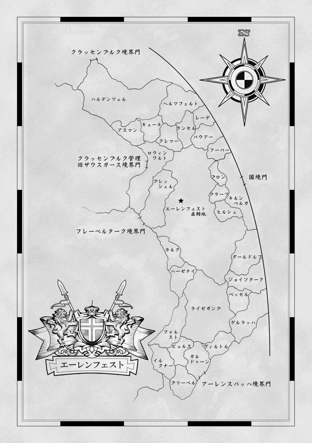

あとがき
お久しぶりですね、香月美夜です。
この度は『本好きの下剋上 〜司書になるためには手段を選んでいられません〜 第四部 貴族院の自称図書委員Ⅰ』をお手に取っていただき、ありがとうございます。
新章が始まりました。約二年の眠りから覚めた浦島太郎状態のローゼマイン。色々な意味で不安だけれど、貴族院にある図書館を目指して全力疾走です。
貴族院は貴族になるための学校です。ここで少々個性的な教師陣から魔力の扱いや魔術具の調合を教えられ、領主候補生は領主として領地を治めるための魔術を学び、他領の子供達と一緒にユルゲンシュミットの貴族として成長していきます。
王族も他領の領主候補生もほぼ眼中になく、周囲を振り回しながら図書館へ突進するローゼマインの視点ではわかりにくいでしょうが、本当はお友達を作って他領との繋がりを得たり、昔のダームエルがしていたように将来の伴侶を探したりする場なのです。
ローゼマインは必ず側近が付いてくるのも面倒に思う元平民の領主候補生で、図書館へ通うことしか考えていません。本音を言えば一人で図書館へ籠りたいと考えている問題児です。普通とは違う領主候補生に困っている者もいますが、保護者達はまだ体調も貴族の常識も十分ではないため、問題さえ起こさなければ良いと考えています。保護者達の願いもむなしく、次の巻では新たな騒動が起こるのですけれど......。（笑）
新章になったことで一気に登場人物が増えました。貴族院へ一緒に向かう側近達です。急にたくさんキャラが出たらわからないでしょうが、接触の多い人からちょっとずつ覚えてください。皆様と同じようにローゼマインも急に周囲に人が増えて混乱中です（笑）。
この巻では生活を整える側仕えに優先的にイラストを付けてもらいました。新しい側仕え見習いは可愛い物が大好きなアンゲリカの妹リーゼレータと、オシャレや流行に敏感なグレッシェル伯爵令嬢のブリュンヒルデです。それから、寮にいない寮監であり、フェルディナンドの師匠であるヒルシュール先生。次の巻では護衛騎士かな？
今回の短編は、アンゲリカの妹のリーゼレータ視点＆エーファ視点です。
リーゼレータ視点ではローゼマイン以外の貴族から見た貴族院での生活に触れてみました。親族に側仕えをお願いして貴族院の生活を支えてもらっていたり、節約として共同部屋にするなど工夫していたり、主がいないところでの側近同士の会話だったり、友人との楽しみだったり、本編には出ないところを色々と詰め込んでみました。
エーファ視点はマインの目覚めを知った下町家族の様子です。マインの目覚めに大興奮で帰ってきたトゥーリとルッツ。知らせを聞いて目を潤ませて喜ぶエーファ。でも、そんな家族の会話を一人だけ理解できないカミル。家族の中に大きな秘密を作りたくはないけれど、いつ、どこまでカミルに説明すればいいのか。家族が出した結論は......。
第四部Ⅰでは貴族院に場面を移すため、ｗｅｂ版で要望の多かったユルゲンシュミットの地図を描きました。私が描いた地図なので、それぞれの領地の大体の位置がわかればいいかなって感じの緩さで見てください。雰囲気重視でお願いします。公式サイトで行った第二回人気キャラランキングの結果発表も出ています。こちらも驚きの結果なので、ぜひご覧くださいませ。
また、ＴＯブックスのオンラインストアで『ふぁんぶっく２』が同日発売されました。初出から一年以上が経過した特典ＳＳに加えて、アフレコレポ＆レポ漫画、書き下ろしＳＳ、Ｑ＆Ａ、鈴華様の描き下ろし漫画、椎名様の四コマ漫画など盛りだくさんです。
それから、帯にもあるように、なんと「このライトノベルがすごい！２０１８」で『本好きの下剋上』が単行本・ノベルス部門で第一位をいただきました！ 読者の皆様の熱い応援があったおかげです。本当にありがとうございました。
それから、二〇一七年十二月九日〜二〇一八年一月八日に印刷博物館で『本好きの下剋上』初のコラボイベントが開催されます。このお話を書くために訪れた印刷博物館とのイベントなので私も楽しみです。印刷の過程や歴史に興味のある方は、（イベント期間中でなくても）ぜひ印刷博物館へ足をお運びください。きっと『本好きの下剋上』がもっと楽しめると思います。
イベントに合わせて新しいグッズが作られました。金属製の栞 、コミカライズ版の鈴華様によるイラストのアクリル製キーホルダー×五種類、羊皮紙のレターセット、ポストカード×五種類と盛りだくさんです。（後日、オンラインストアでも販売されます）
今回の表紙は新しい貴族院の衣装のローゼマインと、図書館の魔術具シュバルツとヴァイスです。貴族院の自称図書委員の幕開けに相応しいイラストだと思いませんか？ 本当に可愛いです。カラーイラストは新キャラがずらりです。まだまだ出ていないキャラが多くて、たくさんのキャラデザは大変だと思います。椎名優様、ありがとうございます。
最後に、この本をお手に取ってくださった皆様に最上級の感謝を捧げます。
第四部Ⅱは春の初めになる予定です。そちらでまたお会いいたしましょう。
二〇一七年十月 香月美夜
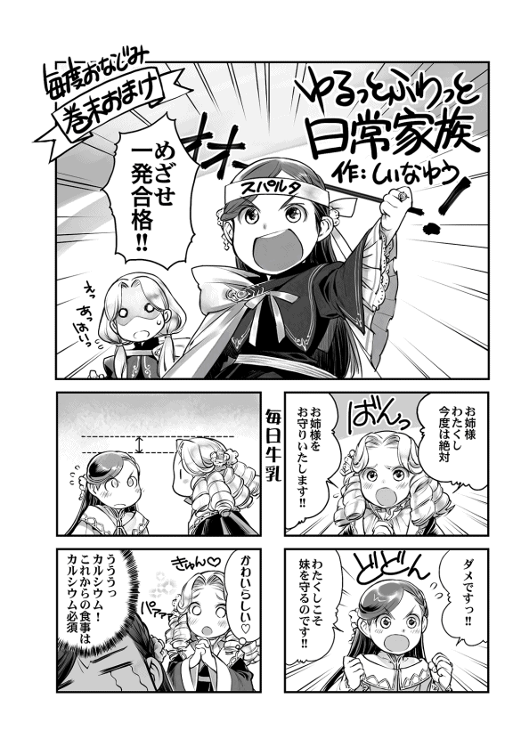
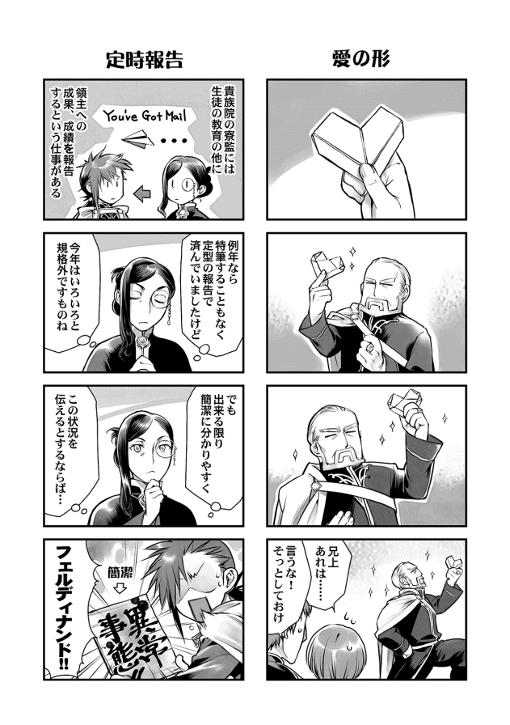
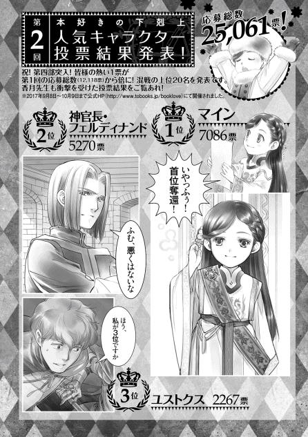
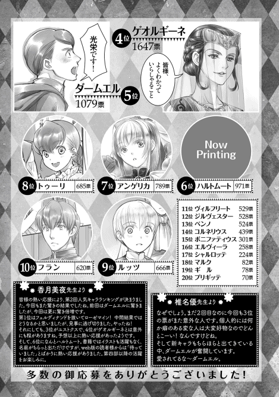
著者プロフィール
香月 美夜
Kazuki Miya
本作でデビュー。
「このライトノベルがすごい！２０１８」（宝島社刊）で、第１位としてインタビューを受けました。よろしければ、そちらもご覧くださいませ。
椎名 優
Shiina You
ローゼマインも10 歳になり頭身があがって少女になるかと思いきや、どうやら１ミリも伸びていない。まだまだ幼女身長が続きそうです。
本好きの下剋上
〜司書になるためには手段を選んでいられません〜
第四部 貴族院の自称図書委員Ⅰ
2019年２月１日発行 ver.1.2
著 者 香月美夜
発行所 TOブックス
〒150-0045 東京都渋谷区神泉町18-８
松濤ハイツ２Ｆ
03-6452-5766（編集）
0120-933-772（営業フリーダイヤル）
Ⓒ2019 Miya Kazuki
※無断で複製・複写・データ配信などをすることは、かたくお断りいたします。
本電子書籍は下記にもとづいて制作しました
本好きの下剋上
〜司書になるためには手段を選んでいられません〜
第四部 貴族院の自称図書委員Ⅰ
発行日 2018年12月１日 第３刷発行
本作品の全部または一部を無断で複製、転載、配信、送信したり、ホームぺージ上に転載することを禁止します。また、本作品の内容を無断で改変、改ざん等を行うことも禁止します。
本作品購入時にご承諾いただいた規約により、有償・無償にかかわらず本作品を第三者に譲渡することはできません。
本作品を示すサムネイルなどのイメージ画像は、再ダウンロード時に予告なく変更される場合があります。
本作品は縦書きでレイアウトされています。
また、ご覧になるリーディングシステムにより、表示の差が認められることがあります。